Deep Learning and Computer Vision
A hands-on mini-textbook: build neural networks with real numbers, train them, see with them, and understand the architectures behind modern AI.
Taught the IIT Professor Way — Real Numbers. Real Problems. Real Understanding.
A Note From Your Professor
Welcome. You are a working professional moving into data roles, and you do not need any special background to succeed here. Deep learning rewards careful measurement, the way a good teacher checks marks every week to see who needs help: is the loss falling, where is the time going, why did the run fail overnight.
This document will not ask you to believe anything. Every idea is built by hand with small real numbers first, then in NumPy code that was actually run, and only then in PyTorch (where we say clearly if code was not run here). When you finish Chapter 2 you will have done a full forward and backward pass on paper and in code, so "backpropagation" will stop being a scary word. The math you need (chain rule, gradient descent, cross-entropy) is in your Math PDF; we refer to it and do not repeat it.
Here is my one rule: never move on until the current topic feels obvious. If a chapter feels foggy, do not push forward. Redo the worked problems with your own numbers, run the code, change one thing, and watch what happens. One clear chapter is worth five rushed ones. Study one hour a day, and be kind to yourself on slow days. Deep learning rewards patient people.
Language models, retrieval (RAG) and agents have their own document, study/genai/. We point to it where the ideas touch (for example transformers), but we do not repeat it here.
What Every Topic Contains
- INTUITION: the problem the concept solves, with an everyday analogy.
- Formal definition: how it works, in precise but plain words.
- Worked problems with real numbers, every step shown, a Check and a plain-language meaning; for code, the exact output.
- The picture: an ASCII diagram, table or figure, explained completely.
- Connection to the real job: where it shows up at work.
- Applications: domains that use it, with concrete examples.
- COMMON MISTAKE: what beginners get wrong and how to catch it.
- Check yourself: three quick questions with answers.
Each chapter ends with a recap (with a small cheat-sheet table), a practice set with answers, and a prompt pack of 5 prompts to paste into any AI assistant.
Contents
- From Linear Models to a Neural Network: perceptron, MLP, XOR, and why each activation function exists.
- Forward and Backward Pass by Hand, Then in NumPy: real numbers through a 2-2-1 network, gradient checking, and a trained NumPy MLP.
- Training in Practice: losses, optimizers (SGD to AdamW), schedules, initialization, normalization, regularization.
- Debugging Training: overfit one batch, loss curves, vanishing and exploding gradients, a checklist.
- PyTorch Essentials: tensors, autograd (built from scratch),
nn.Module,DataLoader, GPUs, mixed precision, checkpoints. - Convolutional Neural Networks: convolution by hand, pooling, receptive field, a NumPy CNN, LeNet to ConvNeXt.
- Transfer Learning and Fine-Tuning for Images: reuse pretrained models, freezing, and learning with fewer labels.
- Classical Image Processing: filters, edges, thresholding, morphology, features and Fourier basics with OpenCV and scikit-image ideas.
- Object Detection and Segmentation, and OCR: IoU, mAP, YOLO, DETR, U-Net, SAM, OCR and face-recognition ethics.
- Sequence Models: RNN, LSTM, GRU, seq2seq and attention, and why transformers won.
- Transformers from Scratch: self-attention with real numbers, multi-head, positional encodings, a mini GPT.
- Vision Transformers, Self-Supervised Vision and Multimodal Models: ViT, contrastive learning, CLIP.
- Generative Models: autoencoders, VAEs, GANs and diffusion, with small demos.
- Efficiency, Deployment and Capstone Projects: quantization, pruning, distillation, ONNX, distributed training, projects and an interview bank.
An appendix (99_cheatsheet.md) gathers the key formulas and patterns.
How To Study This Document
Use the five-step learning loop on every chapter:
- Build first. Run the code before reading the explanation. Type it yourself; do not paste.
- Ask. When something is unclear, write your question down, then ask an AI using the chapter's Prompt pack.
- Just-in-time theory. Read the explanation after you have seen the numbers move. It sticks better.
- Rebuild. Close the chapter and rebuild the key example from a blank file. If you get stuck, peek once, then try again.
- Teach. Explain the idea aloud to a friend or a rubber duck, in simple English. If you cannot, you are not done.
Suggested pace: one chapter per week (about 5 to 7 hours). Chapters 1 to 4 build the foundation; do them slowly. Chapters 5 and 6 are the core of working practice. Chapters 7 to 14 can be taken in the order you need them for a project or a job.
How to use the prompt packs: each chapter has five prompts. Use "teach me step by step" first, then the exercise prompt, then the quiz, then the mock interview. Paste your own code into the review prompt. Always ask the assistant to show numbers you can verify.
Honesty about what was run: NumPy examples were run and the outputs are real. PyTorch, OpenCV and GPU code is marked "not run here" where it was not run in the environment that wrote this document; it is kept short and standard. Run it yourself and compare.
Prerequisites
- Python: functions, loops, lists, NumPy arrays (see the Programming document).
- Math: the chain rule, derivatives, vectors and matrices, gradient descent, cross-entropy (your Math PDF, Pillars 1 and 2; Pillar 2.7 for backpropagation).
- Machine learning basics: train/validation/test split, overfitting, logistic regression (see the Machine Learning document).
- No GPU knowledge needed.
Tools you need
All free.
- Python 3.10 or newer, with
numpy(required for every example) andmatplotlib(for plots). scipyandPillow(used in the classical image-processing chapter).- PyTorch (CPU build is enough for the small examples): https://pytorch.org
- OpenCV (
opencv-python) andscikit-imagefor Chapter 8 equivalents. - Later chapters:
torchvision,timm,ultralytics(YOLO),onnxandonnxruntime. - Free GPUs for the bigger exercises: Google Colab or Kaggle notebooks (limits and availability change).
- A text editor or Jupyter notebook, and a notebook to record your experiments (run, change, result).
Companies use neural networks to read invoices, spot defects on a factory line, rank search results and power chat assistants. Before you can use or debug any of these, you need to see that a neural network is not magic. You already know linear regression and logistic regression. A neural network is many of these small linear models stacked together, with a bend (a non-linearity, a step that is not a straight line) put between them. By the end of this chapter you will be able to count the parameters of a network, run its forward pass by hand, explain why XOR needs a hidden layer, and choose an activation function for each part of a network. We use real numbers you can check on paper.
1.1 The Perceptron: One Artificial Neuron
Words you need
| Word | Plain meaning |
|---|---|
| Input (x) | A number the model is given (a pixel, a price, a response time) |
| Weight (w) | A number that says how important one input is |
| Bias (b) | A constant added to the sum; it shifts the limit |
| Activation | The final rule applied to the sum |
| Epoch | One full pass over all training examples |
Real-world mapping
| Part | Example value | Where it appears in the job |
|---|---|---|
| Inputs | (age=30, income=5) for a loan | Features in a credit-scoring model |
| Weights | (0.2, 0.7) | The learned numbers saved in a model file |
| Bias | -1.5 | The bias field you see in every layer summary |
| Output | 1 = approve | A class label or a probability |
How it works
A perceptron takes inputs x₁, x₂, ..., xₙ. It computes a weighted sum plus a bias, and then applies a rule.
z = w₁·x₁ + w₂·x₂ + ... + wₙ·xₙ + b (the "pre-activation")
output = 1 if z > 0 else 0 (the "step activation")- Weight (w): how strongly one input pushes the answer.
- Bias (b): a constant shift. It moves the decision limit without needing any input.
- Activation function: the rule applied to
zto produce the output.
The perceptron learning rule (Rosenblatt, 1958) is simple. For each training example, compute the prediction p. Let d = target − p. Then update w ← w + d·x and b ← b + d. If the prediction is right, d = 0 and nothing changes.
Problem 1.1.1 Train a perceptron for the AND gate by hand. Inputs (0,0),(0,1),(1,0),(1,1), targets 0,0,0,1. Start with w = (0,0), b = 0. Go through the examples in order, one epoch.
| Step 1 | Example (0,0), target 0. z = 0, not greater than 0, so p = 0. d = 0. No change. |
|---|---|
| Step 2 | Example (0,1), target 0. z = 0, p = 0. No change. |
| Step 3 | Example (1,0), target 0. z = 0, p = 0. No change. |
| Step 4 | Example (1,1), target 1. z = 0, p = 0. d = 1. Update w = (0,0) + 1·(1,1) = (1,1), b = 0 + 1 = 1. |
| Step 5 | The second epoch continues from w = (1,1), b = 1. Now (0,0) gives z = 1 > 0, so p = 1 but the target is 0. The rule corrects it again. Doing this by code is faster. |
| Answer | After several epochs the rule settles on weights that work. The code below shows the final weights. |
| Check | We verify the final weights on all four inputs right after the code output. |
| Why it matters | This is the oldest learning algorithm in AI. Every modern network still "changes weights when it is wrong", only with a smoother rule. |
Before you run it, predict: will XOR reach zero mistakes? (Hint: look at the picture in 1.1.2.)
import numpy as np
X = np.array([[0,0],[0,1],[1,0],[1,1]])
def train(y, epochs=10):
w = np.zeros(2); b = 0.0
for ep in range(epochs):
err = 0
for x, t in zip(X, y):
p = 1 if w @ x + b > 0 else 0
d = t - p
if d:
w = w + d * x; b += d; err += 1
if err == 0:
return w, b, ep
return w, b, None
for name, y in [("AND",[0,0,0,1]), ("OR",[0,1,1,1]), ("XOR",[0,1,1,0])]:
print(name, train(np.array(y)))AND (array([2., 1.]), np.float64(-2.0), 5)
OR (array([1., 1.]), np.float64(0.0), 3)
XOR (array([-1., 0.]), np.float64(1.0), None)Line by line: p = 1 if w @ x + b > 0 else 0 is the perceptron rule. d = t - p is the error: +1 means we said 0 but should say 1, so we push w toward x. if d: skips the update when we are right. err == 0 means a clean pass, so we stop.
The last number is the epoch where there were zero mistakes. AND was solved after epoch 5 (the sixth pass was clean). OR after epoch 3. XOR never reached zero mistakes; None means it kept failing for all 10 epochs.
Check AND with the final weights w = (2,1), b = −2: input (1,1) gives 2+1−2 = 1 > 0, output 1. Input (1,0) gives 2−2 = 0, not greater than 0, output 0. Input (0,1) gives 1−2 = −1, output 0. Correct.
Problem 1.1.2 Why can no single perceptron solve XOR? Use the picture.
| Step 1 | A perceptron decides with w·x + b > 0. In 2D that is a straight line. One side is class 1, the other is class 0. |
|---|---|
| Step 2 | XOR needs (0,1) and (1,0) as class 1, and (0,0) and (1,1) as class 0. |
| Step 3 | Draw the four points at the corners of a square. The two class-1 points sit on one diagonal, the two class-0 points on the other diagonal. |
| Step 4 | No straight line can separate two diagonals. Any line that puts (0,1) and (1,0) on one side must also catch (0,0) or (1,1). |
| Answer | XOR is not linearly separable, so a single perceptron (or any linear model) cannot solve it. This was the famous 1969 criticism of perceptrons (Minsky and Papert). |
| Check | The code above confirms it: XOR printed None (never reached zero mistakes). |
| Why it matters | In plain words: if the pattern you need is "A or B but not both", a straight-line model will always be wrong somewhere. Real data is full of such interactions. |
The picture

Read it like this: the horizontal axis is x₁, the vertical axis is x₂. The four corners are the four inputs. The two blue circles are on one diagonal, the two red squares on the other. The dashed line is one try at a straight divider, and it must cut a diagonal.
x₂
1 | 1(0,1) 0(1,1)
|
0 | 0(0,0) 1(1,0)
+------------------------ x₁
0 1
Class 1 = diagonal pair. No single line separates them.Connection to the real job
A perceptron with a sigmoid instead of a step is exactly logistic regression. Every neuron in every large model today is this same formula: a dot product, a bias, and an activation. When you read a model summary and see "parameters: 7 million", those are mostly weights w and biases b.
Applications
- Early handwriting and spam filters (single-layer linear classifiers).
- The last layer of almost every classifier network is one set of perceptron-like units.
- Linear probes: testing what a big pretrained model "knows" using one linear layer.
b the decision line must pass through the origin. Always keep it unless a method says otherwise.Check yourself
- In
z = w·x + b, what does a larger bias do to the chance of output 1? Answer: it makes it larger; the neuron fires more easily. - What does the perceptron rule do when the prediction is right? Answer: nothing, because
d = 0. - Is OR linearly separable? Answer: yes; the code found weights
(1,1)and bias0.
1.2 From One Neuron to a Multi-Layer Perceptron (MLP)
How it works
An MLP (multi-layer perceptron, also called a fully connected network or dense network) has:
- an input layer (just the numbers; no computation),
- one or more hidden layers (each neuron does
activation(w·x + b)), - an output layer.
In matrix form, one layer is h = f(W x + b). If the layer has 4 neurons and the input has 3 numbers, W has shape 4 × 3, b has 4 numbers, and the parameter count is 4·3 + 4 = 16.
Parameters are the numbers the training process learns (all W and b). Hyperparameters are the choices we make before training (layer sizes, learning rate).
Real-world mapping
| Part | Example value | Where it appears in the job |
|---|---|---|
| Hidden layer size | 64 neurons | A setting you choose when building the model |
W shape | 4 × 3 | Shape errors are the number one bug when you code networks |
| Parameter count | 16 | Printed by model.summary(); links to memory and speed |
| Depth | 12 layers | "Deep" in "deep learning" |
Problem 1.2.1 Solve XOR with two hidden neurons using weights chosen by hand. Use the step activation.
| Step 1 | Hidden neuron A should compute OR: w = (1,1), b = −0.5. Hidden neuron B should compute AND: w = (1,1), b = −1.5. |
|---|---|
| Step 2 | XOR is "OR but not AND". So the output neuron uses w = (1, −1), b = −0.5. |
| Step 3 | Test input (1,1): A: 2−0.5 = 1.5 > 0 gives 1. B: 2−1.5 = 0.5 > 0 gives 1. Output: 1·1 + (−1)·1 − 0.5 = −0.5, not greater than 0, so 0. Correct, XOR(1,1) = 0. |
| Step 4 | Test input (0,1): A: 1−0.5 = 0.5 gives 1. B: 1−1.5 = −0.5 gives 0. Output: 1 − 0 − 0.5 = 0.5 > 0, so 1. Correct. |
| Answer | Two hidden neurons are enough. Code check: |
W1 = np.array([[1,1],[1,1]]); b1 = np.array([-0.5,-1.5])
W2 = np.array([1,-1]); b2 = -0.5
step = lambda z: (z > 0).astype(int)
H = step(X @ W1 + b1)
print(H)
print(step(H @ W2 + b2))[[0 0]
[1 0]
[1 0]
[1 1]]
[0 1 1 0]Before you run it, predict: what will H look like for input (1,1)?
The hidden layer printed H is a new representation of the four inputs. In that new space, (0,1) and (1,0) both became (1,0), and the problem turned linearly separable. This is the whole point of hidden layers: they change the coordinates until the problem becomes easy.
- Check All four outputs
[0 1 1 0]match the XOR truth table. - Interpretation Two tiny "questions" (is at least one input on? are both on?) plus a rule that combines them solved a problem that one neuron could not.
Problem 1.2.2 Count parameters of a realistic network: 20 input features (request size, thread count, ...), hidden layers of 64 and 32 neurons, 1 output.
| Formula | layer parameters = inputs × outputs + outputs |
|---|---|
| Plug in | 20·64+64, 64·32+32, 32·1+1 |
| Compute | 1280+64 = 1344, 2048+32 = 2080, 32+1 = 33 |
| Answer | Total 1344 + 2080 + 33 = 3457 parameters. |
| Check | Sum of weights 1280+2048+32 = 3360 plus biases 64+32+1 = 97 gives 3457. |
| Why it matters | Each parameter is one float (4 bytes), so this model is about 14 KB. A model with 7 billion parameters is about 28 GB in float32. Counting parameters tells you memory. |
Problem 1.2.3 Show that stacking linear layers without an activation gives nothing new.
| Step 1 | Layer 1: h = A x, with A of shape 2×3. Layer 2: y = B h, with B of shape 4×2. |
|---|---|
| Step 2 | Then y = B (A x) = (B A) x. The product BA is one 4×3 matrix. |
| Step 3 | Check with random matrices in code. |
rng = np.random.default_rng(0)
A = rng.normal(size=(2,3)); B = rng.normal(size=(4,2)); x = rng.normal(size=3)
print(np.allclose(B @ (A @ x), (B @ A) @ x), (B @ A).shape)True (4, 3)- Answer Two linear layers equal one linear layer of shape
4×3. - Check
np.allcloseprintedTrue. - Interpretation Without non-linear activations, a 100-layer network is as weak as a single layer. The activation is what gives depth its power.
The picture

This small network (2 inputs, 2 hidden neurons, 1 output) is the one we will push numbers through in Chapter 2. Each circle is a neuron and each arrow is a weight. Data flows left to right.
input (3) hidden (4) output (2)
x1 ──┐ ┌─ h1 ─┐
x2 ──┼─────▶├─ h2 ─┼───────▶ y1
x3 ──┘ ├─ h3 ─┤ y2
└─ h4 ─┘
Every arrow = one weight. Params: 4·3+4 = 16, then 2·4+2 = 10. Total 26.Connection to the real job
- Tabular models: an MLP on customer features is a common baseline (often beaten by gradient boosting, which you know from the ML document).
- Every transformer block contains an MLP (the "feed-forward network", Chapter 11). In big language models, those MLPs hold most of the parameters.
- The Universal Approximation Theorem says a network with one hidden layer and enough neurons can approximate any smooth function. It tells you a network can represent something, not that training will find it.
Applications
- Credit scoring, churn, and click-through prediction (as part of bigger models).
- Embedding towers in recommendation systems.
- The "head" on top of image and text models.
Check yourself
- How many parameters in a dense layer from 10 inputs to 5 outputs? Answer:
10·5 + 5 = 55. - Why did XOR become solvable in 1.2.1? Answer: the hidden layer remapped the points so a line can separate them.
- What does "universal approximation" not promise? Answer: that gradient descent will find the right weights, or that the network will be small.
1.3 Activation Functions and Why Each One Exists
The activations
Let z be the pre-activation. Here is each function and why people use it.
| Name | Formula | Range | Why it exists | Weakness |
|---|---|---|---|---|
| Step | 1 if z>0 else 0 | {0,1} | The original; a hard yes/no | Gradient is 0 everywhere, so it cannot be trained |
| Sigmoid | 1/(1+e^(−z)) | (0,1) | Smooth probability; output for binary classes | Saturates (gradient → 0) for large ` |
| tanh | (e^z − e^(−z))/(e^z + e^(−z)) | (−1,1) | Zero-centered sigmoid; used inside LSTMs | Also saturates |
| ReLU | max(0, z) | [0,∞) | Very cheap; gradient is 1 for z>0, so deep nets train | "Dead" neurons when z<0 always |
| GELU | z·Φ(z) (Φ = normal CDF) | ≈(−0.17,∞) | Smooth ReLU; standard in BERT/GPT-style transformers | Slightly costlier |
| SiLU/Swish | z·sigmoid(z) | ≈(−0.28,∞) | Smooth, non-monotone; used in EfficientNet, modern LLM MLPs (SwiGLU) | Slightly costlier |
| Softmax | e^(zᵢ)/Σⱼ e^(zⱼ) | (0,1), sums to 1 | Turns a score vector into class probabilities | Overflows if not stabilized |
The usual GELU is computed with this tanh approximation: 0.5·z·(1 + tanh(√(2/π)·(z + 0.044715·z³))). Libraries have an exact version too; the two are very close.
z = np.array([-3,-1,0,1,3.])
sig = lambda z: 1/(1+np.exp(-z))
relu = lambda z: np.maximum(0,z)
gelu = lambda z: 0.5*z*(1+np.tanh(np.sqrt(2/np.pi)*(z+0.044715*z**3)))
silu = lambda z: z*sig(z)
print("z ",z);print("relu",relu(z));print("sig ",sig(z))
print("tanh",np.tanh(z));print("gelu",gelu(z));print("silu",silu(z))
print("sig'",sig(z)*(1-sig(z)))z [-3. -1. 0. 1. 3.]
relu [0. 0. 0. 1. 3.]
sig [0.0474 0.2689 0.5 0.7311 0.9526]
tanh [-0.9951 -0.7616 0. 0.7616 0.9951]
gelu [-0.0036 -0.1588 0. 0.8412 2.9964]
silu [-0.1423 -0.2689 0. 0.7311 2.8577]
sig' [0.0452 0.1966 0.25 0.1966 0.0452]Real-world mapping
| Activation | Example value | Where it appears in the job |
|---|---|---|
| ReLU | max(0, -3) = 0 | Hidden layers of CNNs and plain MLPs |
| GELU | gelu(1) = 0.8412 | Every layer of BERT/GPT-style transformers |
| Sigmoid | sigmoid(0) = 0.5 | Output of a "fraud or not" model |
| Softmax | (0.659, 0.242, 0.099) | Output of a 3-class classifier |

How to read it: the horizontal axis is the input z, the vertical axis is what the function returns. Sigmoid (flat at both ends) and tanh are S-shaped, so far from zero their curves are flat, meaning slope near zero. ReLU is flat at 0 on the left and a straight 45-degree line on the right. GELU and SiLU look like ReLU with the corner rounded and a tiny dip below zero.
Before you run the next code, predict: which activation will output exactly 0.0 for z = -3?
Problem 1.3.1 The sigmoid slope is σ(z)(1 − σ(z)). Use the table to explain "vanishing gradient". Suppose 10 sigmoid layers are stacked and each passes the best case slope.
| Step 1 | At z = 0 the slope is 0.5 × 0.5 = 0.25. That is the maximum possible slope. |
|---|---|
| Step 2 | By the chain rule (Math PDF, Pillar 2.7), the gradient through 10 layers multiplies 10 slopes: at best 0.25¹⁰. |
| Step 3 | 0.25¹⁰ = 9.5 × 10⁻⁷, about one in a million. |
| Step 4 | At z = 3 each slope is only 0.045, so 0.045¹⁰ ≈ 3.4 × 10⁻¹⁴. |
| Answer | The signal reaching the first layers is almost zero, so those layers barely learn. This is why ReLU (slope 1 for positive z) replaced sigmoid in hidden layers. |
| Check | 0.25**10 in Python is 9.5367e-07, and 0.045**10 is about 3.4e-14. |
| Interpretation | Imagine passing a message down a line of 10 people who each whisper only a quarter as loud. The last person hears nothing. |
Problem 1.3.2 Compute softmax for scores (2.0, 1.0, 0.1), then show why we subtract the maximum.
| Step 1 | Exponentials: e² = 7.3891, e¹ = 2.7183, e^0.1 = 1.1052. Sum = 11.2126. |
|---|---|
| Step 2 | Probabilities: 7.3891/11.2126 = 0.659, 2.7183/11.2126 = 0.2424, 1.1052/11.2126 = 0.0986. They sum to 1. |
| Step 3 | Now try scores (1002, 1001, 1000). e^1002 is larger than a 64-bit float can hold, so it becomes inf, and inf/inf is not a number. |
| Step 4 | Softmax does not change if we subtract the same constant from all scores. Subtract the max (1002), giving (0, −1, −2). |
s = np.array([2.0,1.0,0.1]); e = np.exp(s); print(e, e/e.sum())
s2 = np.array([1002.,1001,1000]); m = np.exp(s2 - s2.max()); print(m/m.sum())
print(np.exp(s2))[7.3891 2.7183 1.1052] [0.659 0.2424 0.0986]
[0.6652 0.2447 0.09 ]
[inf inf inf]- Check The two probability lists each sum to 1, and
0.6652 / 0.2447 = e¹ = 2.718, as the scores differ by 1. - Answer With the max subtracted, softmax is stable and gives
(0.6652, 0.2447, 0.09). The rawnp.expprintedinf(with an overflow warning). Always use the "subtract max" trick, or use a library function liketorch.softmax.
The picture
ReLU Sigmoid GELU / SiLU
/ ___-- ~ smooth ReLU
/ _-- small dip below 0
____/ --Which one to pick (a practical rule)
- Hidden layers of a normal network: ReLU as a default, or GELU/SiLU for modern architectures.
- Binary output: sigmoid. Multi-class output: softmax. Regression output: none (a plain linear output).
- Inside LSTM/GRU gates: sigmoid and tanh (Chapter 10).
- A variant to know: Leaky ReLU
max(0.01z, z)keeps a small slope for negativezto avoid dead neurons.
Connection to the real job
Interviewers ask "why ReLU instead of sigmoid?" and "why softmax needs the max trick". In real code, a very common bug is applying softmax and then a loss that applies softmax again (Chapter 3). Large language models use GELU or SwiGLU (a gated SiLU) in every layer.
Applications
- Softmax: classification heads, and attention weights (Chapter 11).
- Sigmoid: probabilities, gates, multi-label outputs.
- GELU/SiLU: transformers, EfficientNet, diffusion U-Nets.
Check yourself
- Why does ReLU help deep networks train? Answer: its slope is exactly 1 for positive inputs, so gradients do not shrink layer after layer.
- What is the output range of tanh? Answer: between −1 and 1.
- Which activation do you put on a regression output? Answer: none.
Chapter recap
- A perceptron is a weighted sum plus a bias, passed through an activation.
- The perceptron learning rule moves the weights only when the prediction is wrong.
- A single neuron makes a straight line, so it cannot solve XOR.
- A hidden layer remaps the data into new coordinates where a line may work.
- Stacking linear layers without activations collapses into one linear layer.
- Parameters of a dense layer:
inputs × outputs + outputs. - ReLU is the cheap default; GELU and SiLU are smooth versions used in modern models.
- Sigmoid and tanh saturate, which makes gradients vanish in deep stacks.
- Softmax turns scores into probabilities; always subtract the max for stability.
| Formula / pattern | Meaning |
|---|---|
z = w·x + b | pre-activation |
h = f(Wx + b) | one dense layer |
params = in × out + out | dense layer size |
softmax(z) = e^(z−max) / Σ e^(z−max) | stable softmax |
σ'(z) = σ(z)(1 − σ(z)) | sigmoid slope, max 0.25 |
Practice set
1. (easy) How many parameters in an MLP with layers 4 → 8 → 3? Answer: 4·8+8 = 40 and 8·3+3 = 27, total 67.
2. (easy) A neuron has w = (2, −1), b = 0.5, input (1, 3), ReLU. Output? Answer: z = 2 − 3 + 0.5 = −0.5, ReLU gives 0.
3. (easy) Give sigmoid(0). Answer: 0.5.
4. (medium) What is the output of this code? np.maximum(0, np.array([-2, 0.5, 4])) Answer: [0. 0.5 4.].
5. (medium) Softmax of (0, 0, 0, 0). Answer: each is 1/4 = 0.25.
6. (medium) Find the bug: a developer builds a 3-layer network with Linear layers and no activations and complains it cannot learn a circle boundary. Answer: with no activation the network is one linear map, so only a straight line is possible. Add ReLU/GELU between layers.
7. (medium) Softmax scores (3, 1). Probabilities? Answer: e³ = 20.0855, e¹ = 2.7183; sum 22.8038; so 0.8808 and 0.1192.
8. (hard) Show that sigmoid is a rescaled tanh: σ(z) = (1 + tanh(z/2))/2. Check at z = 2. Answer: tanh(1) = 0.7616, so (1+0.7616)/2 = 0.8808, and σ(2) = 1/(1+e⁻²) = 0.8808. They match.
9. (interview) "Why can't we use a step activation in a network trained by gradient descent?" Answer: its derivative is zero everywhere except at 0, where it is undefined. Gradient descent needs a useful slope to know which way to move the weights, so nothing would learn.
10. (interview) "A teammate says a 2-layer ReLU network can fit any function. Is that true?" Answer: roughly yes in theory (universal approximation, on a bounded region, to any accuracy), but it may need a huge number of neurons, and training may fail to find the weights. Depth often gives the same power with far fewer parameters.
11. (scenario) A shop records 20 numeric features per order and you want to predict "late delivery or not". Sketch an MLP and count parameters for 20 → 16 → 1. Answer: hidden layer 20·16+16 = 336, output 16·1+1 = 17; total 353. Use ReLU in hidden and sigmoid at the output for a probability.
Prompt pack
You are my patient, practical professor. I am a working professional moving into data roles, and English is my second language, so use simple words. Teach me the topic "perceptron and why XOR needs a hidden layer". Explain step by step with tiny numbers I can verify on paper, draw ASCII pictures, and after each step ask me one question to check my understanding before continuing. If I answer wrongly, explain the gap kindly and ask again.
You are my patient, practical professor. I am a working professional moving into data roles, and English is my second language. Give me 8 graded exercises (easy to hard) on "multi-layer perceptrons: shapes, parameter counting and forward pass by hand" with small real numbers. Do not give the solutions yet. Wait for my answers, then check each one and explain any mistake.
You are my patient, practical professor. I am a working professional moving into data roles and am learning deep learning, and English is not my first language. Quiz me one question at a time on "activation functions: sigmoid, tanh, ReLU, GELU, SiLU, softmax, and why each exists". Start easy, get harder, and after each answer tell me whether I was right and why. Keep score and give me a summary of weak areas at the end.
You are my patient, practical professor. I am a working professional moving into data roles, with English as my second language. Review my work on "forward pass of a small neural network in NumPy". Check shapes, parameter counts, numerical stability of softmax, and style. Be kind but honest, show corrected code, and explain each fix in simple words. My work: [PASTE HERE]
You are my patient, practical professor. I am a working professional moving into data roles and am preparing for AI job interviews, and English is my second language. Run a mock interview on "neural network basics: perceptron, MLP, universal approximation, activation functions, vanishing gradients". Ask one question at a time, wait for my answer, grade it out of 10, give the ideal short answer, and then ask a harder follow-up. Do 8 questions.
Every deep learning job eventually hits a day when a model "does not learn" and nobody knows why. The people who solve it are the ones who know exactly what happens inside the training step. In this chapter you will compute a full forward pass and a full backward pass with real numbers, using a tiny network small enough for paper. Then you will build a working neural network in NumPy, check its gradients against a slow-but-safe method, and train it on a real (synthetic) problem. By the end, "backpropagation" will be a recipe you can execute, not a word you fear. The learner's Math PDF (Pillar 2.7) derives the chain rule and gradient descent; here we use them with numbers and do not repeat the proofs.
2.1 The Forward Pass and the Computation Graph
Words you need
| Word | Plain meaning |
|---|---|
| Forward pass | Computing the output from the input, layer by layer |
| Loss | One number saying how wrong the prediction is. Smaller is better |
| Computation graph | The list of small steps (multiply, add, activate) with arrows showing which result feeds which |
| Binary cross-entropy (BCE) | The loss for a yes/no answer: −[y·ln(p) + (1−y)·ln(1−p)] |
p | The predicted probability that the answer is 1 |
The running example
We use one network for the whole chapter: 2 inputs, 2 hidden neurons (sigmoid), 1 output neuron (sigmoid). The picture is in Chapter 1 (net_2_2_1.svg).
Input x = (1, 2) the true answer y = 1
Hidden W1 = [[0.1, 0.2], row 1 = weights of hidden neuron 1
[0.3, 0.4]] row 2 = weights of hidden neuron 2
Hidden b1 = (0.1, -0.1)
Output W2 = (0.5, -0.6), b2 = 0.2Problem 2.1.1 Do the forward pass and compute the BCE loss.
| Formula | z₁ = W1·x + b1, h = σ(z₁), z₂ = W2·h + b2, p = σ(z₂), L = −ln(p) because y = 1. |
|---|---|
| Step 1 | Hidden pre-activations. z₁[1] = 0.1·1 + 0.2·2 + 0.1 = 0.1 + 0.4 + 0.1 = 0.6. z₁[2] = 0.3·1 + 0.4·2 − 0.1 = 0.3 + 0.8 − 0.1 = 1.0. |
| Step 2 | Hidden activations. σ(0.6) = 1/(1+e^(−0.6)) = 1/(1+0.5488) = 0.6457. σ(1.0) = 1/(1+0.3679) = 0.7311. |
| Step 3 | Output pre-activation. z₂ = 0.5·0.6457 + (−0.6)·0.7311 + 0.2 = 0.32285 − 0.43866 + 0.2 = 0.08419. |
| Step 4 | Output probability. p = σ(0.08419) = 0.5210. |
| Step 5 | Loss. L = −ln(0.5210) = 0.6519. |
| Answer | The network says "52.1% sure the answer is 1" and its loss is 0.6519. |
| Check | If the network knew nothing it would say 0.5, with loss −ln(0.5) = 0.6931. Our 0.6519 is slightly better than a coin flip, which is right for random-ish starting weights. The code below confirms every number. |
| Why it matters | The truth is 1, so we want p near 1. A loss of 0.65 tells us we are far from that: a perfect answer would have loss near 0. |
Before you run it, predict: will L be larger or smaller than 0.6931?
import numpy as np
np.set_printoptions(precision=4, suppress=True)
sig = lambda z: 1/(1+np.exp(-z))
x = np.array([1., 2.]); y = 1.
W1 = np.array([[0.1,0.2],[0.3,0.4]]); b1 = np.array([0.1,-0.1])
W2 = np.array([0.5,-0.6]); b2 = 0.2
def fwd(W1,b1,W2,b2):
z1 = W1@x + b1; h = sig(z1); z2 = W2@h + b2; p = sig(z2)
L = -(y*np.log(p) + (1-y)*np.log(1-p))
return z1,h,z2,p,L
z1,h,z2,p,L = fwd(W1,b1,W2,b2)
print("z1",z1,"h",h,"z2",z2,"p",p,"L",L)z1 [0.6 1. ] h [0.6457 0.7311] z2 0.08419300593489476 p 0.521035826979376 L 0.6519364737976816Line by line: W1@x is a matrix times a vector: each row of W1 is dotted with x. sig(z1) applies the sigmoid to each hidden neuron. The last two lines are the output neuron and the loss. Everything matches our hand work: 0.6, 1.0, 0.6457, 0.7311, 0.0842, 0.5210, 0.6519.
Problem 2.1.2 Why do we save z₁, h and z₂ instead of throwing them away?
| Step 1 | The backward pass will need h (to get weight gradients for layer 2) and h(1−h) (the sigmoid slope). |
|---|---|
| Step 2 | If we do not save them we must recompute the forward pass, which costs time. |
| Step 3 | Saving them costs memory. For a big model the saved intermediate values (called activations) are the main memory cost of training. |
| Answer | Training stores every layer's intermediate values for the backward pass. This is why training needs far more memory than inference. |
| Check | In Section 2.4 our NumPy class stores them in self.a. |
| Interpretation | Memory for training is roughly "parameters + stored activations + optimizer state". That is why the same model can run for inference on a small GPU but not train. |
The picture
x ──▶ [W1·x+b1] ──▶ z1 ──▶ [σ] ──▶ h ──▶ [W2·h+b2] ──▶ z2 ──▶ [σ] ──▶ p ──▶ [BCE with y] ──▶ L
(0.6, 1.0) (0.6457, 0.7311) 0.0842 0.5210 0.6519Each box is one small operation. Each arrow carries a number. The backward pass will walk the same line from right to left.
Connection to the real job
Frameworks like PyTorch record this exact graph as you compute (Chapter 5). When you call loss.backward(), the framework walks the graph from the loss back to the weights.
Applications
- Deep learning: every model's training loop starts with a forward pass and a loss.
- MLOps: inference serving is the forward pass only (no stored intermediates), which is why it is cheaper.
- Efficiency work: forward pass cost is counted in FLOPs (floating-point operations); you will measure it the way a kitchen counts how many dishes it can plate per hour.
W. Here row i of W1 holds the weights of hidden neuron i, so we write W1 @ x. Some libraries store the transpose and write x @ W. When you get a shape error, check this first.Check yourself
- If
pwere 0.99 andy = 1, would the loss be bigger or smaller than 0.6519? Answer: smaller;−ln(0.99) = 0.01. - Why does training need more memory than inference? Answer: it must keep intermediate values for the backward pass.
- What is
σ(0)? Answer: 0.5.
2.2 The Backward Pass: Sending the Blame Backward
How it works
For each weight w we want the gradient ∂L/∂w: the number that says "if I increase w by a tiny bit, how much does L change?" A positive gradient means increasing w makes things worse, so we should decrease w. This is gradient descent (Math PDF, Pillar 2.7).
Backpropagation is only the chain rule applied from the end to the start. The chain rule says: if L depends on h, and h depends on w, then ∂L/∂w = ∂L/∂h × ∂h/∂w. We compute each small slope and multiply as we walk backward. It is called back-propagation because the "error signal" propagates backward from the loss.
The small slopes we need are:
| Step | Local slope |
|---|---|
p = σ(z₂) | p(1−p) |
L = −ln p (for y=1) | −1/p |
| Together (BCE + sigmoid) | dL/dz₂ = p − y (the logs cancel nicely) |
z₂ = W2·h + b2 | ∂z₂/∂W2 = h, ∂z₂/∂h = W2, ∂z₂/∂b2 = 1 |
h = σ(z₁) | h(1−h) |
z₁ = W1·x + b1 | ∂z₁/∂W1 = x, ∂z₁/∂b1 = 1 |
Problem 2.2.1 Show that for BCE with a sigmoid output, dL/dz₂ = p − y, with our numbers.
| Formula | dL/dz₂ = (dL/dp) × (dp/dz₂). |
|---|---|
| Step 1 | For y = 1, L = −ln p, so dL/dp = −1/p = −1/0.5210 = −1.9193. |
| Step 2 | The sigmoid slope is dp/dz₂ = p(1−p) = 0.5210 × 0.4790 = 0.24957. |
| Step 3 | Multiply: −1.9193 × 0.24957 = −0.47898. |
| Answer | dL/dz₂ = −0.4790. |
| Check | p − y = 0.5210 − 1 = −0.4790. Same number. |
| Interpretation | The error signal is simply "prediction minus truth". It is negative, which means increasing z₂ would reduce the loss. That makes sense: we want p bigger. |
Problem 2.2.2 Compute every gradient of the network in 2.1, from the output backward.
| Step 1 (output layer) | dz₂ = p − y = −0.4790. |
|---|---|
| Step 2 (output weights) | dW2 = dz₂ × h = −0.4790 × (0.6457, 0.7311) = (−0.3093, −0.3502). (The code shows −0.3092 because it keeps more decimals.) db2 = dz₂ = −0.4790. |
| Step 3 (pass blame to hidden layer) | dh = dz₂ × W2 = −0.4790 × (0.5, −0.6) = (−0.2395, +0.2874). |
| Step 4 (through the sigmoid) | Slopes h(1−h): 0.6457 × 0.3543 = 0.2288 and 0.7311 × 0.2689 = 0.1966. So dz₁ = (−0.2395 × 0.2288, 0.2874 × 0.1966) = (−0.0548, +0.0565). |
| Step 5 (hidden weights) | dW1 = dz₁ ⊗ x (outer product: each row i equals dz₁[i] × x). Row 1: −0.0548 × (1, 2) = (−0.0548, −0.1096). Row 2: 0.0565 × (1, 2) = (0.0565, 0.1130). db1 = dz₁ = (−0.0548, 0.0565). |
| Answer | All gradients are found in one backward sweep. Check with the code below. |
| Check | The code prints the same values. |
| Interpretation | Hidden neuron 1 gets a negative gradient on its weights (so we will increase them), because its output weight +0.5 is positive and we want a bigger p. Hidden neuron 2 gets a positive gradient (we will decrease its weights) because its output weight is −0.6. The blame flows through the sign of the weight it passes through. |
Before you run it, predict: which sign will dW2 have, and why?
dz2 = p - y
dW2 = dz2*h; db2 = dz2
dh = dz2*W2
dz1 = dh*h*(1-h)
dW1 = np.outer(dz1, x); db1 = dz1
print("dz2",dz2,"dW2",dW2,"dh",dh,"dz1",dz1)
print("dW1",dW1,"db1",db1)dz2 -0.478964173020624 dW2 [-0.3092 -0.3502] dh [-0.2395 0.2874] dz1 [-0.0548 0.0565]
dW1 [[-0.0548 -0.1096]
[ 0.0565 0.113 ]] db1 [-0.0548 0.0565]Line by line: dz2 is the error signal at the output. dW2 = dz2*h multiplies by the input of that layer (h). dh = dz2*W2 sends the error to the previous layer using the weights. dh*h*(1-h) passes it through the sigmoid slope. np.outer(dz1, x) builds a gradient with the same shape as W1 (2×2).
dz. (2) The weight gradient is dz times the layer input. (3) The error passed back is dz times the weights (then times the activation slope). Once you know this pattern you can differentiate any depth.The picture
forward ─▶ x ─▶ z1 ─▶ h ─▶ z2 ─▶ p ─▶ L
backward ◀─ dW1◀ dz1◀ dh ◀ dz2 ◀ (p−y)
(−0.055,−0.110) (−0.2395,0.2874) −0.479The top line is the forward pass. The bottom line is the backward pass; each arrow reuses numbers from the forward pass (h, W2, x).
Connection to the real job
This is what loss.backward() does for a model with 100 billion parameters. The same pattern, only automated and repeated for thousands of layers. Understanding it lets you reason about vanishing gradients (Chapter 4) and memory (Chapter 5).
Applications
- Deep learning: training any neural network.
- Machine learning: gradient boosting and logistic regression also use gradients.
- Scientific computing: automatic differentiation is used in physics simulations and finance (risk sensitivities).
h(1−h)) when passing the error through a layer. The network still "runs" but learns badly. Section 2.3 shows how to catch this.Check yourself
- What does a positive gradient
∂L/∂wtell us? Answer: increasingwincreases the loss, so we should decreasew. - What is the shape of
dW1in our network? Answer: 2×2, the same asW1. - Why is
dz₂ = p − yso simple? Answer: for BCE with sigmoid the logarithm and the sigmoid slope cancel.
2.3 Gradient Checking and One Update Step
How it works
The numerical gradient of a weight w is (L(w + ε) − L(w)) / ε for a very small ε, like 0.000001. It is slow (one forward pass per weight) but almost impossible to get wrong. We compare it to our analytic gradient. The better version is the centered difference (L(w+ε) − L(w−ε)) / (2ε), which has smaller error.
A gradient descent step then updates each parameter: w ← w − lr × ∂L/∂w. Here lr is the learning rate (how big a step). Because the gradient points uphill, subtracting walks downhill.
Problem 2.3.1 Check dW1[1st neuron, 2nd input] with a finite difference.
| Formula | numeric = (L(w+ε) − L(w)) / ε, with ε = 1e-6, and w = W1[0,1] = 0.2. |
|---|---|
| Step 1 | Compute the loss with W1[0,1] = 0.200001, all other weights unchanged. |
| Step 2 | Subtract the old loss 0.6519365, divide by 1e-6. |
| Answer | The code reports −0.109579... and the analytic value is −0.109579.... |
| Check | They agree to 6 digits. Matching to about 6 to 7 digits is normal for this method. |
| Interpretation | Increasing that one weight by a tiny 0.000001 lowers the loss by about 0.00000011. Our backward pass did predict that. |
eps = 1e-6
W1p = W1.copy(); W1p[0,1] += eps
print("num dW1[0,1]", (fwd(W1p,b1,W2,b2)[4]-L)/eps, "analytic", dW1[0,1])num dW1[0,1] -0.1095794159855501 analytic -0.10957945453047446Problem 2.3.2 Apply one gradient descent step with lr = 0.5 and see whether the loss goes down.
| Formula | new = old − lr × gradient. |
|---|---|
| Step 1 | W2: 0.5 − 0.5×(−0.3092) = 0.6546, and −0.6 − 0.5×(−0.3502) = −0.4249. |
| Step 2 | b2: 0.2 − 0.5×(−0.4790) = 0.4395. |
| Step 3 | W1 row 1: (0.1 − 0.5×(−0.0548), 0.2 − 0.5×(−0.1096)) = (0.1274, 0.2548). Row 2: (0.3 − 0.5×0.0565, 0.4 − 0.5×0.113) = (0.2717, 0.3435). b1 = (0.1274, −0.1283). |
| Step 4 | Run the forward pass with the new weights. |
| Answer | The new loss is 0.4410, down from 0.6519. |
| Check | The prediction probability went up (since the loss −ln p fell from 0.652 to 0.441, p went from 0.521 to e^(−0.441) = 0.643). |
| Why it matters | One honest step, using only numbers you computed by hand, made the model better. Training is this step repeated thousands of times. |
lr = 0.5
W1n = W1 - lr*dW1; b1n = b1 - lr*db1; W2n = W2 - lr*dW2; b2n = b2 - lr*db2
print("W1n",W1n,"b1n",b1n,"W2n",W2n,"b2n",b2n)
print("new L", fwd(W1n,b1n,W2n,b2n)[4])W1n [[0.1274 0.2548]
[0.2717 0.3435]] b1n [ 0.1274 -0.1283] W2n [ 0.6546 -0.4249] b2n 0.439482086510312
new L 0.4409751567165639The picture
loss
│\
│ \ ← slope (gradient) here is negative
│ \_
│ \__ one step: move right by lr × |gradient|
│ \____ · ← minimum
└──────────────── weightIf the slope is negative (going down to the right) we move right. If we jump too far, we overshoot the valley. That is what a too-large learning rate does (Chapter 4).
Connection to the real job
Gradient checking is how people debug custom layers and loss functions. You do not run it in production, only when you write something new (a custom loss, a new attention variant).
Applications
- Deep learning research: verifying a new layer's backward pass.
- ML engineering: unit tests for custom autograd functions (
torch.autograd.gradcheckexists for this). - Interviews: "how would you test a hand-written backward pass?" is a classic question.
ε too small (like 1e-12). Computers store about 16 digits, so L(w+ε) − L(w) becomes pure rounding noise. Values around 1e-5 to 1e-6 work well.Check yourself
- What does
lrcontrol? Answer: the size of each step. - Why subtract the gradient instead of adding? Answer: the gradient points uphill; we want to go down.
- When would you run gradient checking? Answer: only while developing and testing new layers or losses.
2.4 A Complete Neural Network in NumPy
How it works
We process a batch of N examples as a matrix X of shape N × features. A layer computes Z = A_prev @ W + b (here W has shape in × out, the transposed convention). Our network: ReLU hidden layers, softmax output, cross-entropy loss (Math PDF, Pillar 2.7), and the same error rule at the output: dZ = (P − Y_onehot) / N. At each hidden layer: dW = A_prevᵀ @ dZ, db = sum over the batch of dZ, and dA_prev = dZ @ Wᵀ, then multiply by the ReLU slope (1 where the activation is above 0, otherwise 0). We initialize weights with the He rule (random numbers with variance 2/fan_in, explained in Chapter 3).
import numpy as np
rng = np.random.default_rng(0)
# two moons dataset made by hand
n = 100
t = rng.uniform(0, np.pi, n)
a = np.c_[np.cos(t), np.sin(t)]; b = np.c_[1-np.cos(t), 0.5-np.sin(t)]
X = np.vstack([a, b]) + rng.normal(0, 0.1, (2*n, 2))
y = np.r_[np.zeros(n), np.ones(n)].astype(int)
class MLP:
def __init__(s, sizes, seed=0):
r = np.random.default_rng(seed)
s.W = [r.normal(0, np.sqrt(2/i), (i, o)) for i, o in zip(sizes[:-1], sizes[1:])]
s.b = [np.zeros(o) for o in sizes[1:]]
def forward(s, X):
s.a = [X]
for k, (W, b) in enumerate(zip(s.W, s.b)):
z = s.a[-1] @ W + b
if k < len(s.W) - 1:
s.a.append(np.maximum(0, z))
else:
e = np.exp(z - z.max(1, keepdims=True))
s.a.append(e / e.sum(1, keepdims=True))
return s.a[-1]
def loss(s, X, y):
P = s.forward(X)
return -np.log(P[np.arange(len(y)), y]).mean()
def backward(s, y):
N = len(y); P = s.a[-1].copy(); P[np.arange(N), y] -= 1; d = P / N
gW = [None]*len(s.W); gb = [None]*len(s.W)
for k in reversed(range(len(s.W))):
gW[k] = s.a[k].T @ d; gb[k] = d.sum(0)
if k > 0:
d = (d @ s.W[k].T) * (s.a[k] > 0)
return gW, gbLine by line: s.a is the list of stored activations (needed by the backward pass, as in Problem 2.1.2). z.max(1, keepdims=True) is the stability trick from Chapter 1. P[np.arange(N), y] -= 1 turns P into P − Y_onehot without building the one-hot matrix. (s.a[k] > 0) is the ReLU slope: 1 if the neuron was active, else 0. The loop runs backward through the layers using the 3-line pattern from 2.2.
Problem 2.4.1 Gradient-check this code on 5 examples, for one weight.
| Formula | centered difference (L(w+ε) − L(w−ε)) / (2ε) with ε = 1e-5. |
|---|---|
| Step 1 | Create m = MLP([2,16,2]), run forward and backward on the first 5 examples. |
| Step 2 | Nudge weight W[0][0,3] up and down by ε and compute both losses. |
| Answer | Numeric 0.046712 and analytic 0.046712 agree. |
| Check | They match to about 10 digits (see the output below). |
| Interpretation | Our backward code is correct for this weight. (A careful engineer checks several weights, and checks different layers too.) |
m = MLP([2,16,2])
m.forward(X[:5]); gW, gb = m.backward(y[:5])
eps = 1e-5; W = m.W[0]; i, j = 0, 3
W[i,j] += eps; l1 = m.loss(X[:5], y[:5]); W[i,j] -= 2*eps; l2 = m.loss(X[:5], y[:5]); W[i,j] += eps
print("numeric", (l1-l2)/(2*eps), "analytic", gW[0][i,j])numeric 0.04671199159700378 analytic 0.046711991595234946Problem 2.4.2 Show that gradient checking catches the classic bug: forgetting the ReLU slope in backward.
| Step 1 | Make a copy of the class where the line d = (d @ s.W[k].T) * (s.a[k] > 0) is replaced by d = d @ s.W[k].T. |
|---|---|
| Step 2 | Compute the gradient of W[0][0, 0] with the buggy and the correct code, and compare with the numeric value. |
| Answer | The correct gradient and the numeric one are 0.052135; the buggy one is 0.046094. |
| Check | The wrong value is off by about 12%, in the second digit. The model would still train (loss still goes down on this tiny problem), just worse, with no error message. |
| Why it matters | Silent bugs like this are the most dangerous in deep learning. A 12% error in one gradient never crashes. Gradient checks and "overfit one batch" tests (Chapter 4) are your safety net. |
j 0 good 0.052134581110695195 bug 0.04609405897513025
numeric 0.05213458110775448Problem 2.4.3 Train the network on the moons data and report accuracy.
| Step 1 | Use full-batch gradient descent: forward, backward, update every parameter with lr = 0.5, 300 steps. |
|---|---|
| Step 2 | Print the loss and accuracy every 50 steps. |
| Answer | The loss falls from 0.4415 to 0.0471, and accuracy rises from 80.5% to 99.5%. |
| Check | The parameter count is 2·16+16 + 16·2+2 = 82, which the code also prints. A loss under 0.05 matches 199 out of 200 points correct. |
| Interpretation | A network with only 82 numbers learned a curved boundary that a straight line (logistic regression) cannot make. Note this is training accuracy; we did not hold out test data (Chapter 3 addresses that). |
m = MLP([2,16,2]); lr = 0.5
for ep in range(301):
m.forward(X); gW, gb = m.backward(y)
for k in range(len(m.W)):
m.W[k] -= lr*gW[k]; m.b[k] -= lr*gb[k]
if ep % 50 == 0:
P = m.forward(X)
print(ep, round(m.loss(X, y), 4), "acc", (P.argmax(1) == y).mean())
print("params", sum(w.size for w in m.W) + sum(b.size for b in m.b))0 0.4415 acc 0.805
50 0.2307 acc 0.895
100 0.1918 acc 0.92
150 0.1486 acc 0.93
200 0.1022 acc 0.97
250 0.0677 acc 0.995
300 0.0471 acc 0.995
params 82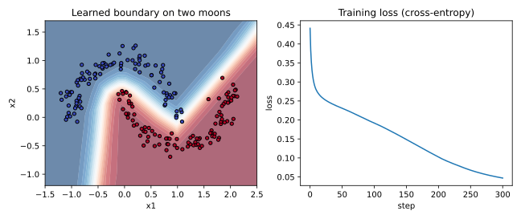
How to read it: on the left, each dot is one training example (colour = true class). The coloured background shows what the network predicts at every location, red region means class 1, blue means class 0, and the boundary is where the colour changes. It bends around the moons. On the right, the horizontal axis is the step number and the vertical axis is the loss; a smooth downward curve means learning is healthy.
A wrong-version example you will meet often is a shape error. If you multiply (4,3) by (4,3) NumPy says:
matmul: Input operand 1 has a mismatch in its core dimension 0, with gufunc signature (n?,k),(k,m?)->(n?,m?) (size 4 is different from 3)The fix is to print .shape of both sides. The inner dimensions must match: (4,3) @ (3,k).
Connection to the real job
This is exactly the logic inside PyTorch's nn.Linear, nn.ReLU, CrossEntropyLoss, and loss.backward(). Frameworks add speed (GPU), safety (automatic gradients) and many more layer types. If you can write this class, you can read any framework's source.
Applications
- Deep learning: the training core of every network.
- Interviews: "implement a 2-layer network with backprop in NumPy" is a common whiteboard question.
- MLOps: debugging a model that trains in a notebook but fails in production starts with understanding these pieces.
- Education/research: prototyping new ideas on tiny data before scaling.
N (the batch size) when the loss is a mean. Then the effective learning rate silently becomes N times bigger, and training explodes. Our code puts / N in the very first line of backward.Check yourself
- In
P[np.arange(N), y] -= 1, what does the result represent? Answer:P − Y_onehot, the error signal at the output. - Why store
s.a? Answer: the backward pass needs the layer inputs and the ReLU on/off pattern. - Our network has
[2, 16, 2]sizes. How many parameters? Answer: 82.
Chapter recap
- A forward pass runs input to output and then computes one loss number.
- Intermediate values are stored because the backward pass needs them; this is why training needs more memory.
- Backpropagation is the chain rule from the loss back to each weight.
- For sigmoid or softmax outputs with cross-entropy, the output error is
p − y. - Each layer uses the same 3-line pattern: weight gradient = error × input; pass error back through the weights; multiply by the activation slope.
- Gradient checking compares your backward pass to a slow numerical slope; use
ε ≈ 1e-5with a centered difference. - One gradient step
w ← w − lr × gradlowered our hand-worked loss from 0.652 to 0.441. - A silent backward bug (missing ReLU slope) changed a gradient by 12% and raised no error.
- A 82-parameter NumPy network learned a curved boundary with 99.5% training accuracy.
| Formula / pattern | Meaning |
|---|---|
z = Wx + b, h = f(z) | one layer forward |
dz_out = p − y | output error (sigmoid/softmax + cross-entropy) |
dW = dz ⊗ input (or inputᵀ @ dz for batches) | weight gradient |
d_prev = (dz @ Wᵀ) × f′(z_prev) | error passed back |
w ← w − lr × grad | gradient descent step |
(L(w+ε)−L(w−ε)) / 2ε | numerical gradient check |
Practice set
1. (easy) A single neuron: z = 2·3 + (−1)·1 + 0.5. What is z, and what is ReLU(z)? Answer: z = 6 − 1 + 0.5 = 5.5; ReLU(5.5) = 5.5.
2. (easy) If p = 0.8 and y = 1, what are the BCE loss and dL/dz for a sigmoid output? Answer: L = −ln 0.8 = 0.2231; dL/dz = p − y = −0.2.
3. (easy) If p = 0.8 and y = 0, what are the loss and dL/dz? Answer: L = −ln(1−0.8) = −ln 0.2 = 1.6094; dL/dz = 0.8 − 0 = 0.8.
4. (medium) The gradient is −2 and lr = 0.1, w = 3. What is the new w? Answer: 3 − 0.1×(−2) = 3.2.
5. (medium) What is the output of: np.array([1,2,3]) @ np.array([[1,0],[0,1],[1,1]])? Answer: [1·1+2·0+3·1, 1·0+2·1+3·1] = [4 5].
6. (medium) In 2.2, change the sign of W2[0] to −0.5 (keep everything else). Without recomputing everything, how will the sign of dW1's first row change? Answer: dh[0] = dz₂ × W2[0]. The new p is different (about 0.36), so exact numbers change, but dz₂ is still negative (since y=1 and p<1). Negative times the new negative W2[0] gives a positive dh[0]. Before it was negative, so the sign of the first row of dW1 flips. The blame flows through the sign of the weight.
7. (medium) Find the bug: d = (d @ s.W[k].T) * s.a[k] in a ReLU network backward pass. Answer: the ReLU slope should be (s.a[k] > 0), a 0/1 mask. Multiplying by the activation value itself scales the gradient by the activation size, which is wrong. A gradient check would show the mismatch.
8. (medium) A network 10 → 100 → 100 → 3 has how many parameters? Answer: 10·100+100 = 1100; 100·100+100 = 10100; 100·3+3 = 303. Total 11,503.
9. (hard) Our hand example had y=1. Redo dz₂ if y = 0 with the same p = 0.521, and say what happens to the sign of dW2. Answer: dz₂ = p − 0 = 0.521. Now dW2 = 0.521 × h = (0.3364, 0.3809), positive, so gradient descent decreases W2. The network is pushed to lower p.
10. (interview) "Explain backpropagation in one minute to a non-technical manager." Answer: the model makes a guess and we measure how wrong it is. Then we go backward through the model and ask each setting "how much did you contribute to this error?" using the chain rule. Each setting is nudged a small amount in the direction that reduces the error. Repeat many times.
11. (interview) "You wrote a custom layer. How do you know its gradient is correct?" Answer: compare its analytic gradient with a centered finite-difference gradient on a small random input (use float64, ε ≈ 1e-5, check relative error below about 1e-6). In PyTorch, torch.autograd.gradcheck automates this (not run here).
12. (scenario) A teammate's training loss stays at 0.6931 for a 2-class problem, for every step. What is the likely cause? Answer: 0.6931 = ln 2, the loss of a model that always says 50/50. The model is not learning: common causes are a learning rate of zero or far too small, gradients not reaching weights (forgot to update or detach), or dead ReLUs. Next steps: overfit one batch (Chapter 4).
Prompt pack
You are my patient, practical professor. I am a working professional moving into data roles, and English is my second language. Teach me "the forward pass of a small neural network with real numbers". Use a 2-2-1 network, sigmoid activations and binary cross-entropy. Go one number at a time, show every intermediate value, and after each step ask me to predict the next number before you reveal it. Correct me kindly and check that I understand why the loss has the value it has.
You are my patient, practical professor. I am a working professional moving into data roles, and English is my second language. Teach me "backpropagation by hand for a two-layer network" using the chain rule. Use real numbers and explain with the analogy of sending blame backward through an assembly line. After each layer, ask me to compute the gradient myself, then compare with the correct value. Finish by asking me to explain it back in my own words.
You are my patient, practical professor. I am a working professional moving into data roles and am learning deep learning, and English is not my first language. Give me 8 graded exercises (easy to hard) on "gradients, gradient checking and one gradient descent step for a tiny network", each with small real numbers. Do not give solutions. Wait for my answers, then grade each answer, show the correct worked steps, and point out which step I got wrong.
You are my patient, practical professor. I am a working professional moving into data roles, with English as my second language. Review my NumPy implementation of a multi-layer perceptron with manual backpropagation. Check the shapes, the softmax stability, the gradient formula, the division by batch size, and the ReLU slope. Suggest a gradient check I can add and explain each issue in simple words. My code: [PASTE HERE]
You are my patient, practical professor. I am a working professional moving into data roles and am preparing for machine learning interviews, and English is my second language. Run a mock interview on "backpropagation, chain rule, gradient checking, and debugging a network that does not learn". Ask one question at a time, grade my answer out of 10, show the ideal short answer, and then ask a harder follow-up. Do 8 questions and finish with my strengths and weaknesses.
You now know how one training step works. Real projects fail or succeed on the choices around that step: which loss, which optimizer, how fast to learn, how to start the weights, and how to stop the model from memorizing. By the end of this chapter you will be able to compute the main losses by hand, explain why Adam moves differently from plain SGD, build a warmup-plus-cosine schedule, show with numbers why a bad initialization kills a deep network, compute four normalizations on a small matrix, and use weight decay or early stopping when a model overfits. Basics of cross-entropy and optimizers are in the learner's Math PDF (Pillar 2.7); here we compute with them and add the practical rules.
3.1 Loss Functions: Defining "Wrong"
Words you need
| Word | Plain meaning |
|---|---|
| Logit | The raw score before softmax or sigmoid |
| Class imbalance | One class is much more common than another (99% normal, 1% fraud) |
| Embedding | A vector (list of numbers) that represents an item; similar items get close vectors |
| Margin | A safety gap we demand between two distances |
The losses
| Loss | Formula | Use it for |
|---|---|---|
| MSE | mean((pred − true)²) | Regression (predict a number) |
| Cross-entropy | −ln(p of the true class) | Classification |
| Focal | −(1 − pₜ)^γ · ln(pₜ) | Classification with many easy examples and few hard ones (detection) |
| Contrastive | similar: ½d²; different: ½·max(0, m − d)² | Learning embeddings from pairs |
| Triplet | max(0, d(a,p) − d(a,n) + margin) | Learning embeddings from (anchor, positive, negative) |
pₜ means "the probability the model gave to the correct class". d is the distance between two embeddings. γ (gamma) is a knob; 2 is typical.
Problem 3.1.1 Compute MSE and cross-entropy for small cases.
| Formula | MSE = (1/n) Σ (pred − true)²; CE = −ln(pₜ). |
|---|---|
| Plug in | Predictions (2.5, 0.0, 4.0) and truths (3.0, 0.5, 5.0). Errors are −0.5, −0.5, −1.0. For CE, the model gave (0.7, 0.2, 0.1) and the true class is class 0. |
| Compute | Squares: 0.25, 0.25, 1.0. Mean = 1.5 / 3 = 0.5. CE = −ln(0.7) = 0.3567. |
| Answer | MSE is 0.5 (units squared) and CE is 0.3567. |
| Check | If the model gave the true class 1.0, CE would be −ln(1) = 0. If it gave 0.01 it would be 4.6. So 0.7 gives a small loss, which fits. |
| Why it matters | CE explodes toward infinity as pₜ → 0, so confident wrong answers are punished hard. That is exactly what we want in classification. |
Problem 3.1.2 Show how focal loss (γ = 2) reduces the weight of easy examples.
| Formula | FL = (1 − pₜ)² × (−ln pₜ). |
|---|---|
| Step 1 | Easy example, pₜ = 0.9: CE = 0.1054. Factor (1−0.9)² = 0.01. FL = 0.001054. |
| Step 2 | Hard example, pₜ = 0.1: CE = 2.3026. Factor (0.9)² = 0.81. FL = 1.8651. |
| Answer | Easy example loss drops 100 times (0.1054 to 0.00105); hard example loss drops only 19% (2.3026 to 1.8651). |
| Check | The ratio hard/easy was 2.3026/0.1054 = 21.8 under CE and becomes 1.8651/0.00105 = 1768 under focal loss, so the hard examples dominate. |
| Interpretation | In an object detector, 99.9% of image locations are easy background. Plain CE would let thousands of easy examples drown out the few real objects. Focal loss turns their volume down. |
Problem 3.1.3 Compute contrastive and triplet loss.
| Contrastive (margin m = 1, d = 0.4) | Similar pair: ½ × 0.4² = 0.08. Different pair: ½ × max(0, 1 − 0.4)² = ½ × 0.36 = 0.18. |
|---|---|
| Triplet (margin 0.5) | d(a,p) = 0.5, d(a,n) = 0.8: max(0, 0.5 − 0.8 + 0.5) = 0.2. If the negative were closer, d(a,n) = 0.2: max(0, 0.5 − 0.2 + 0.5) = 0.8. |
| Answer | The loss is higher exactly when the embedding is wrong: when different items are too close. |
| Check | If d(a,n) − d(a,p) ≥ margin the triplet loss is exactly 0 (the case is solved). |
| Interpretation | These losses are used when you want a space where "same person" photos are near and "different person" photos are far. Face search and product search use them. |
import numpy as np
print("MSE", np.mean((np.array([2.5,0.0,4.0])-np.array([3.0,0.5,5.0]))**2))
p = np.array([0.7,0.2,0.1]); print("CE true=0", -np.log(p[0]))
for pt in [0.9,0.1]:
ce = -np.log(pt); print("p_t", pt, "CE", round(ce,4), "focal g=2", round((1-pt)**2*ce,5))
d = 0.4; m = 1.0
print("contrastive similar", 0.5*d**2, "dissimilar", 0.5*max(0,m-d)**2)
print("triplet", max(0,0.5-0.8+0.5), max(0,0.5-0.2+0.5))MSE 0.5
CE true=0 0.35667494393873245
p_t 0.9 CE 0.1054 focal g=2 0.00105
p_t 0.1 CE 2.3026 focal g=2 1.86509
contrastive similar 0.08000000000000002 dissimilar 0.18
triplet 0.19999999999999996 0.8(The tiny 0.08000000000000002 is floating-point rounding, not an error.)
Which loss for which job
| Task | Output layer | Loss |
|---|---|---|
| Predict a price | Linear (none) | MSE (or MAE/Huber if outliers) |
| Yes/no | 1 sigmoid | Binary cross-entropy |
| One of K classes | K logits | Softmax cross-entropy |
| Many labels at once | K sigmoids | BCE per label |
| Rare objects (detection) | per-location | Focal |
| Similarity search | embedding | Contrastive/triplet (or InfoNCE, Chapter 12) |
Connection to the real job
The loss is the first thing you choose and the first thing a reviewer asks about. In PyTorch, nn.CrossEntropyLoss expects raw logits, not probabilities (it applies log-softmax inside). Feeding it probabilities is a classic silent bug.
Applications
- Deep learning: classification, detection (focal loss in RetinaNet), segmentation.
- Data science: fraud with heavy imbalance.
- GenAI: language models use cross-entropy on the next token (see
study/genai/). - Search/recommenders: triplet and contrastive losses for embeddings.
CrossEntropyLoss. Both train, but worse, with no error.Check yourself
- CE loss when the model gave the true class probability 0.5? Answer:
−ln 0.5 = 0.693. - Which hidden quantity does focal loss shrink? Answer: the loss of easy, already-confident examples.
- Triplet loss is 0 when what is true? Answer: the negative is farther than the positive by at least the margin.
3.2 Optimizers and Learning-Rate Schedules
Definitions
- SGD (stochastic gradient descent):
w ← w − lr·g, wheregis the gradient on a small random batch. - Momentum:
v ← β·v + g, thenw ← w − lr·v. Typicalβ = 0.9. - RMSProp: keep a running average of squared gradients
s ← ρ·s + (1−ρ)·g², thenw ← w − lr·g/(√s + ε). - Adam: momentum plus RMSProp, with bias correction:
m ← β₁m + (1−β₁)g,v ← β₂v + (1−β₂)g²,m̂ = m/(1−β₁ᵗ),v̂ = v/(1−β₂ᵗ),w ← w − lr·m̂/(√v̂ + ε). Typicalβ₁ = 0.9,β₂ = 0.999,ε = 1e-8. - AdamW: Adam where weight decay is applied directly to the weights,
w ← w − lr·(m̂/(√v̂+ε) + λ·w), rather than being mixed into the gradient. It is the default for transformers.
We use t for the step number, starting at 1. The bias correction exists because m and v start at 0, so early averages are too small; dividing by (1−βᵗ) fixes that.
Problem 3.2.1 Do the first Adam step by hand for a function with a steep and a flat direction: f(x,y) = x² + 10y², start (1,1), lr = 0.1.
| Step 1 | Gradient g = (2x, 20y) = (2, 20). |
|---|---|
| Step 2 | m = 0.1·g = (0.2, 2.0), v = 0.001·g² = (0.004, 0.4). |
| Step 3 | Bias correction at t=1: m̂ = m/0.1 = (2, 20), v̂ = v/0.001 = (4, 400). |
| Step 4 | Step = lr·m̂/√v̂ = 0.1 × (2/2, 20/20) = (0.1, 0.1). |
| Answer | Adam moves both coordinates by exactly 0.1, even though one gradient is 10 times larger. |
| Check | The code below prints step [0.1 0.1]. |
| Interpretation | Plain SGD with the same lr = 0.1 would move (0.2, 2.0): ten times more in y, which would overshoot wildly (it jumps from y=1 to y=−1, then back to +1, bouncing forever without settling). Adam's per-coordinate scaling is why it is easy to use on awkward problems. |
Problem 3.2.2 Compare the four optimizers for 30 steps on the same function, starting at (1,1).
| Plug in | SGD lr=0.09; momentum lr=0.02, β=0.9; RMSProp lr=0.05, ρ=0.9; Adam lr=0.1. |
|---|---|
| Compute | Run the code. |
| Answer | After 30 steps: SGD f = 2.2e-05, RMSProp 3.8e-04, Adam 0.0127, momentum 0.10. |
| Check | Start loss is f(1,1) = 11, so all four made large progress. |
| Interpretation | Honest result: on this smooth toy problem plain SGD with a well-chosen rate wins. Adam with a constant lr = 0.1 keeps stepping about 0.1 even near the minimum, so it jitters around it (w ≈ −0.034). Momentum with these settings overshoots and oscillates. In real deep learning, SGD's good rate is hard to find, while Adam works over a wide range of settings, which is why people use it. Use a schedule (below) so that the step shrinks at the end. |
grad = lambda w: np.array([2*w[0], 20*w[1]])
f = lambda w: w[0]**2 + 10*w[1]**2
def run(name, steps=30):
w = np.array([1.,1.]); v = np.zeros(2); s = np.zeros(2); m = np.zeros(2); vv = np.zeros(2)
for t in range(1, steps+1):
g = grad(w)
if name == "sgd": w = w - 0.09*g
if name == "mom": v = 0.9*v + g; w = w - 0.02*v
if name == "rms": s = 0.9*s + 0.1*g*g; w = w - 0.05*g/(np.sqrt(s)+1e-8)
if name == "adam":
m = 0.9*m + 0.1*g; vv = 0.999*vv + 0.001*g*g
mh = m/(1-0.9**t); vh = vv/(1-0.999**t); w = w - 0.1*mh/(np.sqrt(vh)+1e-8)
return w, f(w)
for n in ["sgd","mom","rms","adam"]: print(n, run(n))sgd (array([0.00259666, 0.00123794]), np.float64(2.2067613579465364e-05))
mom (array([0.1851202 , 0.08200961]), np.float64(0.10152525663190662))
rms (array([0.00584382, 0.00584382]), np.float64(0.000375652525585838))
adam (array([-0.03396752, -0.03396752]), np.float64(0.012691714688971227))Learning-rate schedules
A schedule changes lr during training. Three you must know:
- Warmup: start with a tiny
lrand rise linearly for the first few percent of steps. Early on, Adam's statistics are noisy and weights are random, so big steps can blow up the model. - Cosine decay: after warmup,
lr(t) = ½·peak·(1 + cos(π·progress)), falling smoothly to 0. - One-cycle: rise to a high peak and then fall far below the start (often used with SGD for fast training).
Problem 3.2.3 Compute a warmup-plus-cosine schedule: peak lr = 0.001, 100 steps, warmup 10 steps. What is lr at steps 0, 4, 9, 10, 30, 55, 99?
| Formula | Warmup (t < 10): peak·(t+1)/10. After: ½·peak·(1 + cos(π·(t−10)/90)). |
|---|---|
| Plug in | At t=4: 0.001·5/10 = 0.0005. At t=30: progress 20/90 = 0.2222, cos(π·0.2222) = 0.7660, so ½·0.001·1.7660 = 0.000883. At t=55: progress 0.5, cos(π/2) = 0, so 0.0005. |
| Answer | Steps 0, 4, 9, 10, 30, 55, 99 give 0.0001, 0.0005, 0.001, 0.001, 0.000883, 0.0005, 0.0. |
| Check | The code prints exactly those values (at the last step the true value is 3e-07, which rounds to 0.0 at 6 decimals, because cos is almost −1 there). |
| Interpretation | The learning rate climbs for 10 steps, touches the peak, and then glides down. Think of a car: gentle start, cruise, gentle stop. |
def sched(t, T=100, warm=10, peak=1e-3):
if t < warm: return peak*(t+1)/warm
return 0.5*peak*(1+np.cos(np.pi*(t-warm)/(T-warm)))
print([round(float(sched(t)), 6) for t in [0,4,9,10,30,55,99]])[0.0001, 0.0005, 0.001, 0.001, 0.000883, 0.0005, 0.0]The picture
lr
peak | ____
| / ‾‾‾--__
| / ‾‾--__
| / ‾‾--__
0 |/______________________________________‾ step
warmup cosine decayReal-world mapping
| Item | Example value | Where it appears in the job |
|---|---|---|
AdamW, lr=3e-4, warmup 5% | typical starting point | Fine-tuning scripts and training configs |
SGD + momentum 0.9, lr=0.1 | classic image training | ResNet-style training recipes |
| Cosine schedule | one line of config | torch.optim.lr_scheduler (not run here) |
| Batch size 32 vs 256 | change lr with it | Scaling a job to more GPUs |
Applications
- Deep learning: AdamW + warmup + cosine is the standard recipe for transformers.
- Computer vision: SGD + momentum + step/cosine/one-cycle for CNNs.
- MLOps: learning rate is the first hyperparameter to tune in a sweep.
weight_decay argument as L2 regularization and expecting the same behaviour as AdamW. In classic Adam the decay is added to the gradient and then rescaled by 1/√v, so it behaves differently. Use AdamW when you want decoupled decay.Check yourself
- Why does Adam divide by
√v̂? Answer: to scale the step per weight, so steep/noisy directions get smaller steps. - Why use warmup? Answer: early statistics are unreliable; small first steps avoid divergence.
- What does the bias correction fix? Answer:
mandvstart at 0, so early values are too small.
3.3 Initialization and Normalization
Initialization
- Xavier (Glorot): weights with variance
1/fan_in(or2/(fan_in+fan_out)). Designed for tanh/sigmoid. - He (Kaiming): variance
2/fan_in. Designed for ReLU, which zeroes half of the values and therefore needs twice the variance to keep the volume.
fan_in = number of inputs to a neuron.
Problem 3.3.1 Pass a random batch through 10 layers (width 256) and measure the standard deviation of the activations after layers 1, 5 and 10, under four setups.
| Plug in | Input: 512 random vectors, std = 1. Setups: tanh with weights of std 0.01; tanh with Xavier; ReLU with Xavier; ReLU with He. |
|---|---|
| Compute | Run the code. |
| Answer | Table below. |
| Setup | After layer 1 | After layer 5 | After layer 10 |
|---|---|---|---|
| tanh, std 0.01 | 0.1564 | 0.0001 | 0.0000 |
| tanh, Xavier | 0.6287 | 0.3232 | 0.2262 |
| ReLU, Xavier | 0.5871 | 0.1322 | 0.0282 |
| ReLU, He | 0.8253 | 0.8854 | 0.7753 |
- Check The ReLU+Xavier row shrinks by about
×0.7per layer (each ReLU halves the signal power, so the standard deviation drops by√½ = 0.707).0.5871 × 0.707⁹ ≈ 0.026, close to the printed0.0282. - Interpretation Tiny weights make the signal vanish within a few layers (and the gradients with it). Matching the init to the activation, He for ReLU, keeps the signal alive. The code is below.
rng = np.random.default_rng(0)
x0 = rng.normal(size=(512,256))
def deep(act, scale, L=10):
x = x0; out = []
for l in range(L):
W = rng.normal(size=(256,256))*scale(256)
x = act(x@W); out.append(x.std())
return np.array(out)
relu = lambda z: np.maximum(0,z)
print("tanh std0.01", deep(np.tanh, lambda n: 0.01)[[0,4,9]])
print("tanh xavier ", deep(np.tanh, lambda n: np.sqrt(1/n))[[0,4,9]])
print("relu xavier ", deep(relu, lambda n: np.sqrt(1/n))[[0,4,9]])
print("relu he ", deep(relu, lambda n: np.sqrt(2/n))[[0,4,9]])tanh std0.01 [0.1564 0.0001 0. ]
tanh xavier [0.6287 0.3232 0.2262]
relu xavier [0.5871 0.1322 0.0282]
relu he [0.8253 0.8854 0.7753]Normalization layers
A normalization layer rescales activations to mean 0 and variance 1 (then optionally applies a learned scale γ and shift β). They differ in which numbers are grouped together:
| Layer | Normalizes over | Typical home |
|---|---|---|
| BatchNorm | the batch, for each feature | CNNs |
| LayerNorm | all features of one example | Transformers, RNNs |
| GroupNorm | groups of channels in one example | CNNs with small batches |
| RMSNorm | like LayerNorm but no mean subtraction: x/√(mean(x²)+ε) | Modern LLMs |
BatchNorm depends on batch statistics, so its behaviour differs between training (uses batch stats) and inference (uses running averages). That is the cause of many "works in training, fails in production" bugs. LayerNorm, GroupNorm and RMSNorm do not depend on the batch.
Problem 3.3.2 Normalize a tiny matrix of 4 examples × 3 features: rows (1,2,3), (2,4,6), (3,6,12), (0,0,0).
| Formula | (x − mean)/√(var + ε), with ε = 1e-5. |
|---|---|
| Step 1 (LayerNorm, row 0) | mean = 2, variance = ((−1)²+0²+1²)/3 = 0.6667, std = 0.8165. Values: (−1/0.8165, 0, 1/0.8165) = (−1.2247, 0, 1.2247). |
| Step 2 (BatchNorm, feature 0) | the column is (1,2,3,0), mean 1.5, variance (0.25+0.25+2.25+2.25)/4 = 1.25, std = 1.118. Row 0 gives (1−1.5)/1.118 = −0.4472. |
| Step 3 (RMSNorm, row 0) | mean(x²) = (1+4+9)/3 = 4.667, root = 2.1602. Row (1,2,3)/2.1602 = (0.4629, 0.9258, 1.3887). |
| Answer | The printed matrices below agree. LayerNorm made rows 0 and 1 identical, (−1.2247, 0, 1.2247), because row 1 is just row 0 times 2. RMSNorm does the same but keeps the sign and ratio pattern without centering. |
| Check | Each LayerNorm row has mean 0 and (nearly) variance 1; the row of zeros stays 0 thanks to ε in the denominator (no division by zero). |
| Interpretation | LayerNorm removes the scale of each example, so a request whose features are all twice as large looks the same to the next layer. BatchNorm instead compares each example against its batch. |
X = np.array([[1.,2,3],[2,4,6],[3,6,12],[0,0,0]]); eps = 1e-5
bn = (X-X.mean(0))/np.sqrt(X.var(0)+eps)
ln = (X-X.mean(1,keepdims=True))/np.sqrt(X.var(1,keepdims=True)+eps)
rms = X/np.sqrt((X**2).mean(1,keepdims=True)+eps)
print("BN\n",bn); print("LN\n",ln); print("RMS\n",rms)
c = np.array([1.,3,10,14]); g = c.reshape(2,2)
print("GN", ((g-g.mean(1,keepdims=True))/np.sqrt(g.var(1,keepdims=True)+eps)).ravel())BN
[[-0.4472 -0.4472 -0.5071]
[ 0.4472 0.4472 0.169 ]
[ 1.3416 1.3416 1.5213]
[-1.3416 -1.3416 -1.1832]]
LN
[[-1.2247 0. 1.2247]
[-1.2247 0. 1.2247]
[-1.069 -0.2673 1.3363]
[ 0. 0. 0. ]]
RMS
[[0.4629 0.9258 1.3887]
[0.4629 0.9258 1.3887]
[0.378 0.7559 1.5119]
[0. 0. 0. ]]
GN [-1. 1. -1. 1.]For GroupNorm we took one example with 4 channels (1,3,10,14) and split them into 2 groups: (1,3) and (10,14). Each group is normalized alone, so each becomes (−1, +1).
The picture
Input tensor: batch N × features C
BatchNorm: normalize each COLUMN (across the N examples)
LayerNorm: normalize each ROW (across the C features)
GroupNorm: normalize each ROW, but separately inside groups of channelsConnection to the real job
Every transformer layer has LayerNorm or RMSNorm (Chapter 11). CNNs use BatchNorm (Chapter 6). When someone says "set the model to eval mode", the main reason is BatchNorm and dropout behaving differently in training and inference.
Applications
- Computer vision: BatchNorm in ResNets; GroupNorm in detection and diffusion U-Nets.
- GenAI: RMSNorm in recent open large language models.
- MLOps: debugging train/serve differences that come from BatchNorm statistics.
model.eval() at inference. BatchNorm then uses the statistics of the tiny live batch (maybe size 1), and predictions become unstable.Check yourself
- Which initialization goes with ReLU? Answer: He, variance
2/fan_in. - Which normalization uses the batch? Answer: BatchNorm.
- Why does
εappear in the formulas? Answer: to avoid dividing by zero when variance is 0.
3.4 Regularization: Stopping the Model from Memorizing
Words you need
| Word | Plain meaning |
|---|---|
| Overfitting | Low loss on training data, much higher on new data |
| Validation set | Data kept aside to measure how the model does on new data during training |
| Weight decay | A pull that shrinks weights toward zero at every step |
| Dropout | Randomly switching off neurons during training |
The tools
- L2 / weight decay:
w ← w − lr·(g + λ·w). Large weights are penalized. - L1:
w ← w − lr·(g + λ·sign(w)). Pushes small weights to exactly zero (sparse). - Dropout: during training, zero each neuron with probability
p, and scale the survivors by1/(1−p)("inverted dropout") so the average stays the same. At inference, do nothing. - Early stopping: watch validation loss; stop when it has not improved for
patiencechecks, and keep the best weights. - Data augmentation: make new training examples by changing old ones (flip, crop, color jitter for images).
- Label smoothing: replace the hard target
(1,0,0)with(1−ε+ε/K, ε/K, ε/K); stops the model from becoming over-confident. - Mixup: train on
λ·xₐ + (1−λ)·x_bwith labels mixed the same way. CutMix: paste a rectangle of one image onto another; the label is mixed in proportion to the area.
Problem 3.4.1 Apply L2 and L1 updates by hand for w = (2.0, −0.5), lr = 0.1, λ = 0.1, with zero data gradient (to see the pull alone).
| Step 1 (L2) | w − lr·λ·w = w·(1 − 0.01) = (1.98, −0.495). |
|---|---|
| Step 2 (L1) | w − lr·λ·sign(w) = (2.0 − 0.01, −0.5 + 0.01) = (1.99, −0.49). |
| Answer | L2 shrinks in proportion to the size (0.02 and 0.005 removed); L1 removes a constant 0.01 from each. |
| Check | The code prints [1.98 -0.495] and [1.99 -0.49]. |
| Interpretation | Because L1 removes the same amount each step, small weights hit exactly zero first. L2 gets small weights closer to zero but rarely reaches it. L1 gives sparse models; L2 gives smooth, small ones. |
Problem 3.4.2 Work out dropout, label smoothing and mixup with real numbers.
| Step 1 (dropout, p = 0.5) | Activations (1,2,3,4,5,6), mask (1,1,0,1,0,0). Survivors times 1/(1−0.5) = 2: (2, 4, 0, 8, 0, 0). |
|---|---|
| Step 2 (label smoothing, ε = 0.1, K = 3) | Target (1,0,0) becomes (0.9 + 0.0333, 0.0333, 0.0333) = (0.9333, 0.0333, 0.0333). With the model's output (0.7, 0.2, 0.1) the smoothed loss is −(0.9333·ln 0.7 + 0.0333·ln 0.2 + 0.0333·ln 0.1) = 0.3329 + 0.0536 + 0.0768 = 0.4633. |
| Step 3 (mixup, λ = 0.7) | Mix inputs (1,0) and (0,1) into (0.7, 0.3), and the labels the same way into (0.7, 0.3). |
| Step 4 (CutMix) | A 16×16 patch pasted on a 32×32 image replaces 256/1024 = 25% of it, so the label becomes 75% original and 25% pasted. |
| Answer | All four match the code output below (0.4633 for the smoothed loss). |
| Check | The smoothed target sums to 0.9333+0.0333+0.0333 = 1; dropout kept the same average magnitude in expectation (½ × 2 = 1). |
| Interpretation | Label smoothing makes the loss slightly higher (0.4633 vs 0.3567 for the hard target) because it refuses to reward 100% confidence. |
w = np.array([2.0,-0.5]); lr = 0.1; lam = 0.1
print("L2 step", w-lr*lam*w, "L1 step", w-lr*lam*np.sign(w))
r = np.random.default_rng(1); h = np.array([1.,2,3,4,5,6]); mask = (r.random(6) > 0.5)
print("mask", mask.astype(int), "dropped", h*mask/0.5)
K = 3; t = np.array([1,0,0])*(1-0.1) + 0.1/K
print("smooth target", t, "loss", -(t*np.log(np.array([0.7,0.2,0.1]))).sum())
print("mixup x", 0.7*np.array([1.,0]) + 0.3*np.array([0.,1]))L2 step [ 1.98 -0.495] L1 step [ 1.99 -0.49]
mask [1 1 0 1 0 0] dropped [2. 4. 0. 8. 0. 0.]
smooth target [0.9333 0.0333 0.0333] loss 0.46329738119042185
mixup x [0.7 0.3]Problem 3.4.3 See overfitting and its cures on real data. We use 40 training points of the moons problem (noise 0.35), a network 2 → 64 → 64 → 2, 3000 full-batch steps, lr = 0.1, tested on 600 fresh points.
| Plug in | Train with no weight decay, then with weight decay λ = 0.01 (added to the gradient of the weights). |
|---|---|
| Compute | Print train loss, validation loss and validation accuracy. |
| Answer |
| Step | No decay: train | No decay: val loss | No decay: val acc | Decay 0.01: train | Decay: val loss | Decay: val acc |
|---|---|---|---|---|---|---|
| 0 | 0.451 | 0.477 | 77.5% | 0.451 | 0.477 | 77.5% |
| 500 | 0.212 | 0.392 | 80.3% | 0.242 | 0.342 | 84.3% |
| 1000 | 0.155 | 0.431 | 83.3% | 0.215 | 0.329 | 84.5% |
| 2000 | 0.116 | 0.522 | 82.2% | 0.214 | 0.324 | 84.7% |
| 3000 | 0.087 | 0.615 | 81.3% | 0.213 | 0.322 | 84.5% |
- Check Without decay, training loss keeps falling (0.45 to 0.087) but validation loss rises after step ~400 (best 0.387 at step 400, rising to 0.615). That gap is overfitting. With decay, both curves flatten and validation loss stays near 0.32.
- Interpretation The undecayed model memorized noise in 40 points. Early stopping would have saved the weights from step ~400 (validation loss 0.387). Weight decay reached a better validation loss (0.322) and held it. Both are valid; use them together in practice.
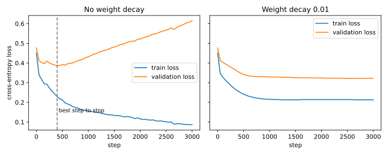
How to read it: horizontal axis is training steps; vertical axis is the loss (lower is better). Orange/second line is validation. On the left the two lines separate: the train line keeps sinking while validation turns upward after the dashed line. On the right they stay close together.
Connection to the real job
Overfitting is the default state of a neural network, because it has so many parameters. Your first look at any training run is the train-versus-validation gap. Treat it like comparing a test environment with production: if the numbers differ a lot, the test was not representative.
Applications
- Computer vision: augmentation (flip, crop, mixup/cutmix) is the main regularizer.
- NLP/GenAI: dropout and weight decay in transformers; label smoothing in translation.
- Tabular deep learning: weight decay and early stopping.
- MLOps: save the "best validation" checkpoint, not the last one.
train() vs eval()). Another trap: choosing early-stopping step using the test set. Use a separate validation set, and touch the test set once.Check yourself
- What is the gap you look for to detect overfitting? Answer: low train loss with higher and rising validation loss.
- Why scale dropout survivors by
1/(1−p)? Answer: to keep the average activation the same, so inference needs no change. - Which of L1 and L2 produces exact zeros? Answer: L1.
Chapter recap
- Pick the loss to fit the task: MSE for numbers, cross-entropy for classes, focal for rare hard cases, contrastive/triplet for embeddings.
- Cross-entropy punishes confident mistakes; feed it logits, not probabilities, in PyTorch.
- Adam scales each step per weight; the first Adam step moves every weight by about
lr. - SGD can beat Adam on easy problems, but Adam is far easier to use on real networks.
- Warmup then cosine decay is the standard schedule; AdamW (decoupled decay) is the standard optimizer for transformers.
- Bad initialization makes signals vanish: He for ReLU, Xavier for tanh (our 10-layer test:
0.0282vs0.7753). - BatchNorm normalizes over the batch, LayerNorm/RMSNorm over features, GroupNorm over channel groups.
- Overfitting means train loss falls while validation loss rises; cures are weight decay, dropout, augmentation, label smoothing and early stopping.
- Always evaluate with
eval()mode.
| Formula / command | Meaning |
|---|---|
CE = −ln pₜ | cross-entropy for one example |
FL = (1−pₜ)^γ · CE | focal loss |
m̂ = m/(1−β₁ᵗ), w −= lr·m̂/(√v̂+ε) | Adam step |
lr(t) = ½·peak·(1+cos(π·progress)) | cosine decay |
He std √(2/fan_in); Xavier std √(1/fan_in) | init rules |
w ← w − lr·(g + λw) | L2 / weight decay |
torch.optim.AdamW(params, lr=3e-4, weight_decay=0.01) | AdamW (not run here) |
Practice set
1. (easy) The model gives the true class probability 0.25. What is CE? Answer: −ln 0.25 = 1.3863.
2. (easy) MSE for predictions (1, 2) and truths (2, 4)? Answer: errors −1, −2; squares 1, 4; mean 2.5.
3. (easy) SGD step: w = 4, g = 3, lr = 0.1. New w? Answer: 4 − 0.3 = 3.7.
4. (medium) Focal loss with γ = 2 for pₜ = 0.5? Answer: CE = 0.6931; factor (0.5)² = 0.25; FL = 0.1733.
5. (medium) Momentum with β = 0.9, lr = 0.1, v = 0 initially. Gradients are 1, 1, 1. What are v and the total movement after 3 steps? Answer: v₁ = 1, v₂ = 0.9·1 + 1 = 1.9, v₃ = 0.9·1.9 + 1 = 2.71. Movements: 0.1, 0.19, 0.271 (total 0.561). Momentum accelerates in a steady direction.
6. (medium) What is the output? h = np.array([2.,4.]); mask = np.array([1,0]); print(h*mask/0.5) (dropout p = 0.5). Answer: [4. 0.].
7. (medium) Find the bug: a model ends with nn.Softmax, and the loss is nn.CrossEntropyLoss. Answer: CrossEntropyLoss already applies log-softmax; softmax twice flattens probabilities and slows learning. Remove the softmax layer and pass logits (not run here).
8. (medium) Why is it a bug to evaluate a BatchNorm model in train() mode with a batch of 1? Answer: the variance of one sample is 0, and statistics of one example are meaningless; the outputs are wrong. Use eval() so the running averages are used.
9. (hard) Warmup plus cosine: peak 0.001, 100 steps, warmup 10. What is lr at step 20? Answer: progress 10/90 = 0.1111; cos(π·0.1111) = cos(20°) = 0.9397; lr = 0.5·0.001·1.9397 = 0.00097.
10. (interview) "Why does Adam need bias correction?" Answer: m and v start at zero. With β₂ = 0.999, after one step v = 0.001·g², which is 1000 times too small; dividing by 1−β₂ᵗ removes that bias. Without it the first steps would be huge.
11. (interview) "Dropout, L2, early stopping: when do you reach for each?" Answer: first the cheapest: early stopping and augmentation (more varied data is the best fix). Weight decay (AdamW) is nearly always on in transformers. Dropout helps in MLPs and with limited data, but may be dropped in very large models trained for one epoch. Judge by the train/validation gap.
12. (scenario) A fine-tuning run diverges (loss becomes nan) in the first 50 steps, with AdamW at lr = 1e-2. What do you do? Answer: 1e-2 is far too high for fine-tuning; use about 1e-5 to 3e-4, add warmup (a few percent of steps), and add gradient clipping (Chapter 4). Check data for nan too.
Prompt pack
You are my patient, practical professor. I am a working professional moving into data roles, and English is my second language. Teach me "loss functions for deep learning: MSE, cross-entropy, focal, contrastive and triplet loss". Compute each with small real numbers, explain when each is the right choice, and after each loss ask me to compute one example myself. Finish with a table of task, output layer and loss, and quiz me on it.
You are my patient, practical professor. I am a working professional moving into data roles and am learning deep learning, and English is my second language. Explain "SGD, momentum, RMSProp, Adam and AdamW" step by step. Use a simple function with a steep and a flat direction and compute the first two steps of each optimizer by hand with me. Use a hill-walking analogy, ask me to predict the next number before revealing it, and finish by explaining when I should choose SGD or AdamW.
You are my patient, practical professor. I am a working professional moving into data roles, and English is my second language. Teach me "weight initialization (Xavier, He) and normalization (BatchNorm, LayerNorm, GroupNorm, RMSNorm)". Show with a 10-layer experiment why bad initialization kills the signal, and normalize a small 4 by 3 matrix by hand in each way. Check my understanding with one question after each part and explain why train versus eval mode matters.
You are my patient, practical professor. I am a working professional moving into data roles, with English as my second language. Give me 8 graded exercises (easy to hard) on "regularization: weight decay, dropout, early stopping, augmentation, label smoothing, mixup and cutmix", using real numbers and one scenario about reading train and validation loss curves. No solutions yet. After I answer, grade me and explain each mistake in simple words.
You are my patient, practical professor. I am a working professional moving into data roles and am preparing for AI interviews, and English is my second language. Run a mock interview on "training deep networks in practice: losses, optimizers, schedules, initialization, normalization, regularization". Ask one question at a time, grade my answer out of 10, show a short ideal answer, then ask a harder follow-up. Include one debugging scenario where validation loss rises. Do 8 questions.
A neural network that does not learn gives no error message. The code runs, the loss prints, and the number is just wrong or stuck. Most of a deep learning engineer's time goes into this kind of silent failure, so the engineers who debug fast are the ones who get hired and promoted. In this chapter you will learn five cheap tests, run them on real NumPy networks, see vanishing and exploding gradients with real numbers, and finish with a checklist you can use on any model. You will think like a working professional moving into data roles: measure first, change one thing at a time, and compare against a baseline.
4.1 Sanity Tests: Initial Loss and Overfit One Batch
Words you need
| Word | Plain meaning |
|---|---|
| Batch | A small group of training examples used for one update |
| Overfit one batch | Train repeatedly on just one small batch until loss is near 0 |
| Initial loss | The loss before any training |
| Capacity | How much a model can memorize (more parameters, more capacity) |
Test 1: the initial loss
With K classes and an untrained network that outputs about the same probability for all classes, the cross-entropy is −ln(1/K) = ln K. For 2 classes that is 0.6931, for 10 classes 2.3026. If your first loss is far from ln K, something is off: probably the last layer's initial weights are too big (the model starts out confident and wrong), or labels do not match the output size.
Problem 4.1.1 Check the initial loss of our NumPy MLP from Chapter 2 on 2-class and 10-class data.
| Formula | expected ln K. |
|---|---|
| Plug in | ln 2 = 0.6931, ln 10 = 2.3026. |
| Compute | Run: the 2-class moons model prints 0.6009; the 10-class random-data model prints 3.2477. |
| Answer | Both are above or below the ideal; the 10-class loss 3.2477 is 41% above ln 10 = 2.3026. |
| Check | Multiply the last layer's weights by 0.01 and measure again: the loss becomes 2.3028, within 0.0002 of ln 10. |
| Interpretation | He initialization is right for hidden layers, but the final layer outputs logits that are too large, so the network starts "confidently wrong" and wastes its first steps. Scaling down the last layer is a common fix. If your loss starts at 8.0 for a 10-class problem, look for a bug before you train. |
m = MLP([2,16,2], seed=0)
print("untrained loss", round(m.loss(X,y),4), "ln2", round(np.log(2),4))
rng = np.random.default_rng(0)
Xr = rng.normal(size=(5000,20)); yr = rng.integers(0,10,5000)
m10 = MLP([20,64,10], seed=0)
print("10-class untrained", round(m10.loss(Xr,yr),4), "ln10", round(np.log(10),4))
m10.W[-1] *= 0.01
print("last layer x0.01", round(m10.loss(Xr,yr),4))untrained loss 0.6009 ln2 0.6931
10-class untrained 3.2477 ln10 2.3026
last layer x0.01 2.3028(MLP, X, y are the class and data from Chapter 2.)
Test 2: overfit one batch
Take 16 examples. Give them random labels (so there is no pattern to learn, only memorization). Train for 300 steps. A healthy model drives the loss close to 0, because it has more than enough parameters to memorize 16 points. If it cannot, the bug is in the code, not in the data or the problem difficulty.
Problem 4.1.2 Run overfit-one-batch with three learning rates and read the results.
| Plug in | 16 examples with 20 features, 4 random classes, network 20 → 64 → 4, lr = 0.1, 0.001 and 5.0. |
|---|---|
| Compute | Loss after 1, 51, 101, 201, 301 updates: |
| lr | 1 | 51 | 101 | 201 | 301 |
|---|---|---|---|---|---|
| 0.1 | 1.7889 | 0.0663 | 0.0273 | 0.0114 | 0.0069 |
| 0.001 | 2.2439 | 2.0127 | 1.8082 | 1.4715 | 1.2028 |
| 5.0 | 4.1827 | 0.4986 | 0.4986 | 0.4986 | 0.4986 |
- Answer
lr = 0.1passes the test (loss 0.0069).lr = 0.001is too slow: after 301 steps it is still at 1.20 and falling.lr = 5.0jumps up (4.18), then freezes at 0.4986 and never improves. - Check
ln 4 = 1.3863is the "knows nothing" level. Loss 0.0069 is far below it, so the network memorized the batch. Forlr = 5.0we also counted hidden neurons that never fire on the batch: 29 of 64 are dead (accuracy 75%). - Interpretation Too small is slow but safe. Too large is destructive: huge steps pushed many ReLU neurons into the region where they always output 0 and never recover (a "dead ReLU", Section 4.2). The stuck loss at 0.4986 is the signature.
xb = rng.normal(size=(16,20)); yb = rng.integers(0,4,16)
def train(lr, steps=300):
m = MLP([20,64,4], seed=0); out = []
for t in range(steps+1):
m.forward(xb); gW, gb = m.backward(yb)
for k in range(len(m.W)):
m.W[k] -= lr*gW[k]; m.b[k] -= lr*gb[k]
if t in (0,50,100,200,300): out.append(round(float(m.loss(xb,yb)),4))
return out
print("lr 0.1 ", train(0.1)); print("lr 0.001", train(0.001)); print("lr 5.0 ", train(5.0))lr 0.1 [1.7889, 0.0663, 0.0273, 0.0114, 0.0069]
lr 0.001 [2.2439, 2.0127, 1.8082, 1.4715, 1.2028]
lr 5.0 [4.1827, 0.4986, 0.4986, 0.4986, 0.4986](The values are recorded right after each update, so the first number is after 1 update.)
Problem 4.1.3 Show what happens if the labels are reshuffled every step (a data-loader bug where labels drift away from their inputs).
| Step 1 | Train the same network, lr = 0.1, but draw fresh random labels for the 16 examples at every step. |
|---|---|
| Step 2 | After 300 steps, measure the loss against one fixed set of labels. |
| Answer | The loss is 1.5523, above ln 4 = 1.3863. |
| Check | It is not near 0, though the same model with fixed labels reached 0.0069. |
| Interpretation | If your real model never gets near zero loss even on one batch, suspect the pipeline (labels not aligned with inputs, shuffling inputs and labels separately) before you suspect the model. |
The picture
loss
2.3 |*
| * . . lr too small: slow (still 1.2 at step 300)
| **
| ***
| ****___
0.0 |__________________ step healthy: reaches ~0.007
Overfit-one-batch must reach about 0.Real-world mapping
| Test | Expected result | Where it appears in the job |
|---|---|---|
Initial loss = ln K | within about 10% | First line of every training log |
| Overfit 16 examples | loss near 0 in a few hundred steps | First test on any new model or dataset |
| Fixed seed, same loss twice | identical numbers | Regression tests in ML pipelines |
Applications
- Deep learning: run these tests whenever you change data, loss, or architecture.
- MLOps: put "overfit one batch" in your CI as a smoke test for training code.
- Research: reproduce a paper by first matching its first-step loss.
Check yourself
- What is the expected first loss for a 100-class problem? Answer:
ln 100 = 4.605. - Why use random labels in the overfit test? Answer: so success proves memorization capacity, with no real pattern needed.
- Loss stuck at exactly
ln Kfor a long time suggests what? Answer: the model outputs a constant, so it is not learning from the inputs (no gradient flow, dead units, or data bug).
4.2 Vanishing and Exploding Gradients, Clipping and Dead ReLUs
How it works
By the chain rule the gradient reaching layer k is a product of one factor per layer above it. If those factors are typically below 1, the product shrinks exponentially with depth. If they are above 1 it grows exponentially. Remember 0.25¹⁰ ≈ 10⁻⁶ from Chapter 1; and 1.5¹⁰ ≈ 57.
- Vanishing gradient: early layers receive almost no signal and learn very slowly. Causes: sigmoid/tanh in deep stacks, tiny weights.
- Exploding gradient: huge gradients make weights jump; the loss becomes
infornan(not a number). Causes: large weights, recurrent networks, too-high learning rate. - Gradient clipping: if the total gradient length
‖g‖exceeds a limitc, scale it down to lengthc:g ← g × min(1, c/‖g‖). The direction is unchanged, only the length is capped. - Dead ReLU: a neuron whose pre-activation is below 0 for every example outputs 0 and has gradient 0, so it can never recover.
Cures: ReLU-family activations, He/Xavier initialization, residual connections (Chapter 6), normalization layers (Chapter 3), a smaller learning rate, and clipping.
Problem 4.2.1 Measure the gradient norm at each layer of a 10-layer network (width 64) in three setups.
| Plug in | (a) sigmoid with Xavier weights; (b) ReLU with He weights; (c) ReLU with He weights multiplied by 1.5. |
|---|---|
| Compute | Gradient norm of each layer's weights: |
| Layer | 1 | 3 | 5 | 7 | 10 |
|---|---|---|---|---|---|
| (a) sigmoid, Xavier | 3.9e-06 | 0.0004 | 0.0068 | 0.1216 | 7.6198 |
| (b) ReLU, He | 12.29 | 29.92 | 36.99 | 41.41 | 32.24 |
| (c) ReLU, weights ×1.5 | 472.3 | 1150.4 | 1422.3 | 1592.0 | 1239.5 |
- Answer In (a) the gradient at layer 1 is about two million times smaller than at layer 10: vanishing. In (b) all layers have comparable gradients: healthy. In (c) all gradients are about 40 times larger than (b): a recipe for blow-ups.
- Check For (a), each sigmoid step multiplies by at most 0.25, and
0.25⁹ = 3.8×10⁻⁶, the same order as3.9e-06 / 7.6 = 5×10⁻⁷once the weights (which shrink the signal further) are included. - Interpretation Layer 1 in (a) learns about two million times slower than layer 10. Training such a network looks like "the loss goes down a bit and then stalls", because only the last layers learn.
def gradnorms(act, dact, scale, L=10, w=64, seed=0):
r = np.random.default_rng(seed); Xb = r.normal(size=(64,w))
Ws = [r.normal(size=(w,w))*scale(w) for _ in range(L)]
A = [Xb]; Z = []
for W in Ws:
Z.append(A[-1]@W); A.append(act(Z[-1]))
d = np.ones_like(A[-1])/64; norms = []
for k in reversed(range(L)):
d = d*dact(Z[k]); norms.append(np.linalg.norm(A[k].T@d)); d = d@Ws[k].T
return np.array(norms[::-1])
sig = lambda z: 1/(1+np.exp(-z))
print(gradnorms(sig, lambda z: sig(z)*(1-sig(z)), lambda n: np.sqrt(1/n))[[0,2,4,6,9]])
print(gradnorms(lambda z: np.maximum(0,z), lambda z: (z>0)*1.0, lambda n: np.sqrt(2/n))[[0,2,4,6,9]])[0. 0.0004 0.0068 0.1216 7.6198]
[12.2857 29.9247 36.9966 41.4117 32.2434](The first printed 0. is really 3.9e-06, rounded by the print options. The code starts the backward pass from a gradient of 1/64 at every output, a simple stand-in for a loss gradient, to isolate the effect of depth.)
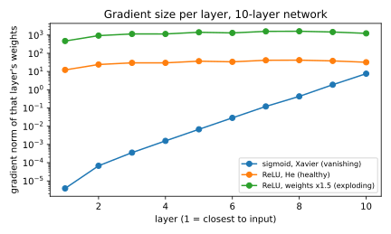
How to read it: the horizontal axis is the layer, 1 near the input and 10 near the output. The vertical axis is the gradient size on a log scale, so each gridline is 10 times larger. The sigmoid line climbs steeply to the right (early layers get nothing), the He line is flat (healthy), and the "weights ×1.5" line is flat but a factor of 40 too high.
Problem 4.2.2 Clip a gradient.
| Formula | g ← g × min(1, c/‖g‖). |
|---|---|
| Plug in | g = (30, 40), c = 5. |
| Compute | ‖g‖ = √(900+1600) = 50. Factor = min(1, 5/50) = 0.1. New g = (3, 4). |
| Answer | The clipped gradient is (3, 4), with length 5. |
| Check | √(9+16) = 5. The direction (3,4)/5 = (0.6, 0.8) equals the original (30,40)/50. |
| Interpretation | One bad batch cannot throw the weights across the map any more. In PyTorch this is torch.nn.utils.clip_grad_norm_(model.parameters(), max_norm=1.0) (not run here), placed between backward() and optimizer.step(). |
Problem 4.2.3 Find dead ReLUs. 1000 inputs with 10 features go through 50 ReLU neurons. Compare bias 0 with bias −10.
| Step 1 | Count the share of outputs that are exactly 0. |
|---|---|
| Step 2 | Count neurons that never fire on any of the 1000 examples. |
| Answer | With bias 0: 50.1% of outputs are zero and 0 neurons are dead. With bias −10: 100% are zero and all 50 neurons are dead. |
| Check | With He weights and zero bias, the pre-activation is symmetric around 0, so about half are negative (50.1%, as expected). |
| Interpretation | A dead neuron has gradient exactly zero, so no amount of training will revive it. A big learning rate can push biases very negative in one step; that is what happened to 29 of 64 neurons in Problem 4.1.2. Cures: smaller learning rate, Leaky ReLU, GELU, or careful initialization. |
r = np.random.default_rng(0); xx = r.normal(size=(1000,10)); W = r.normal(size=(10,50))*np.sqrt(2/10)
for bias in [0,-10]:
z = xx@W + bias
print("bias", bias, "zero fraction:", round(float((z<=0).mean()),3),
"never fire:", int(((z>0).sum(0)==0).sum()))bias 0 zero fraction: 0.501 never fire: 0
bias -10 zero fraction: 1.0 never fire: 50Real-world mapping
| Symptom | Likely cause | Where it appears in the job |
|---|---|---|
Loss becomes nan | exploding gradient, learning rate too high, bad data (log of 0) | Overnight training runs that died |
| Early layers do not change | vanishing gradient | Very deep or sigmoid networks |
Loss flat at ln K | dead units or no gradient flow | New architecture just wired up |
| Occasional huge loss spike | one bad batch, clipping missing | Long transformer training |
Applications
- Deep learning: gradient clipping is standard in RNN and transformer training.
- MLOps: log the gradient norm per step; alert on
nanand on spikes. - NLP/GenAI: large language model runs track "loss spikes" and restart from earlier checkpoints.
Check yourself
- Why does a deep sigmoid network have vanishing gradients? Answer: each sigmoid layer multiplies the gradient by at most 0.25.
- Does clipping change the gradient direction? Answer: no, only its length.
- Can a dead ReLU neuron recover? Answer: not by gradient descent, because its gradient is exactly zero.
4.3 Loss Curves, Spikes and the Debugging Checklist
Reading learning-rate curves
We train the same Chapter 2 network (moons data, 200 steps) with three learning rates.
Problem 4.3.1 Compare the loss at steps 1, 11, 51, 101 and 200 for lr = 0.01, 0.5 and 20.
| Plug in | Learning rates 0.01, 0.5, 20.0. |
|---|---|
| Compute |
| lr | step 1 | step 11 | step 51 | step 101 | step 200 |
|---|---|---|---|---|---|
| 0.01 | 0.597 | 0.558 | 0.461 | 0.399 | 0.340 |
| 0.5 | 0.441 | 0.278 | 0.231 | 0.192 | 0.103 |
| 20.0 | 2.96 | 3.425 | 1.228 | 3.446 | 3.161 |
- Answer
lr = 0.5is the best of the three.lr = 0.01is a slow healthy curve that has not finished.lr = 20never settles: the loss jumps between 1.2 and 3.4. - Check The
lr = 20run is above the starting lossln 2 = 0.69at the end (3.16): training made the model worse than a coin flip. (While running it, NumPy gave a "divide by zero in log" warning, since some probabilities became exactly 0; that itself is a warning sign.) - Interpretation The shape tells the story: smooth slow decline means "raise the learning rate"; wild jumping means "lower it".
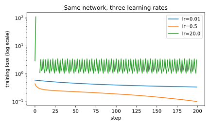
How to read it: the horizontal axis is the step number and the vertical axis is the loss on a log scale. The blue line (0.01) slopes down slowly. The orange line (0.5) falls quickly and smoothly. The green line (20) jumps around at the top.
A guide to curve shapes
| What you see | Meaning | First thing to try |
|---|---|---|
| Smooth slow decline | learning rate too low | multiply by 3 to 10 |
Jagged, jumping, nan | learning rate too high or bad batch | divide by 3 to 10; add clipping and warmup |
Flat at ln K | not learning at all | overfit one batch; check labels and dead units |
| Train falls, validation rises | overfitting (Chapter 3) | more data/augmentation, weight decay, early stopping |
| Both high and flat | underfitting | bigger model, train longer, check features |
| Sudden spike, then recovery | one bad batch or learning-rate peak | clipping; check data for outliers |
| Validation loss better than training | dropout on in training only, or easy validation set | not an error by itself; compare under eval() |
The debugging checklist
Work from top to bottom. Change one thing at a time and keep notes (a table of run, change, result).
- Data. Look at actual examples and their labels (plot ten images; print ten rows). Check shapes, value ranges, class balance, duplicates, and train/validation leakage.
- Pipeline. Inputs and labels stay aligned after shuffling; the same preprocessing is used in training and inference.
- Initial loss is near
ln K(Problem 4.1.1). - Overfit one batch reaches about 0 (Problem 4.1.2). If not, stop here and fix the code.
- Gradients. No
nan; the gradient norm is reasonable; all layers receive gradient (Problem 4.2.1). - Learning rate. Sweep a few values on a log scale:
1e-4, 3e-4, 1e-3, 3e-3. - Scale up. Train on the full data and compare train and validation curves.
- Regularize. Add weight decay, augmentation or dropout only when overfitting appears.
- Evaluate right. Use
eval()mode, a held-out set, and the metric your business cares about (not only loss). - Reproducibility. Fix the seed, record the library versions, and save the config with the model.
Problem 4.3.2 Triage: "Loss is 0.693 at step 0 and 0.693 at step 5000 on a balanced binary task. The learning rate is 1e-3 with Adam." What do you do, in order?
| Step 1 | 0.693 = ln 2: the model outputs a constant. It is not learning from the inputs. |
|---|---|
| Step 2 | Run overfit-one-batch on 16 examples. If it fails, the bug is in code: check that optimizer.step() is called, gradients are zeroed each step, parameters are registered with the optimizer, and backward() is called on the right loss. |
| Step 3 | If it passes, look at the data: are features constant, are labels random or misaligned, is the input scaled (very large unscaled values can saturate everything)? |
| Step 4 | Print the gradient norm of each layer. If it is zero in some layers, look for dead ReLUs, a detach() in the wrong place, or frozen parameters. |
| Answer | Overfit one batch first; it splits "code bug" from "data/hyperparameter problem" in one test. |
| Check | This follows items 1 to 5 of the checklist in order. |
| Interpretation | You made a decision tree out of one number (0.693). That is what experienced debuggers do. |
Mixed signals worth knowing
- Loss spikes in long runs often come from a rare bad batch or an unlucky learning rate peak. Standard fixes: gradient clipping, lower peak learning rate, longer warmup, and restarting from the last good checkpoint while skipping the offending data.
- Reproducibility on GPUs is partly out of your hands: some GPU operations are non-deterministic, so two runs with the same seed can differ slightly. Chapter 5 shows how to set seeds and deterministic flags (not run here).
- Train versus validation loss is only half the story; also watch the real metric (accuracy, F1) because loss can improve while accuracy stays flat.
Connection to the real job
Interviewers for ML engineer roles often give a scenario like 4.3.2 and judge your process, not a magic fix. The same thinking a doctor uses when a patient has a strange symptom (reproduce, isolate, change one variable) is exactly what they want.
Applications
- Deep learning: every training run.
- MLOps: dashboards (loss, gradient norm, learning rate, throughput) with alerts.
- Data science: spotting label leakage via too-good validation scores.
- GenAI: training and fine-tuning large models cost thousands of GPU hours; one wasted run is expensive.
Check yourself
- A loss curve that decreases smoothly but very slowly suggests what? Answer: learning rate too low.
- What should you do before tuning hyperparameters? Answer: check data, initial loss and overfit one batch.
- Why can two GPU runs with the same seed differ? Answer: some GPU operations are non-deterministic.
Chapter recap
- Silent failure is the normal failure in deep learning; use cheap tests early.
- Initial loss should be near
ln K; a much larger value suggests a too-large last layer or a label bug. - A healthy pipeline can overfit 16 random-label examples to loss near 0.
- Too-small learning rates are slow; too-large ones can kill ReLUs and make loss jump or
nan. - Vanishing gradients: product of factors below 1 (our sigmoid network: 2 million times smaller at layer 1).
- Exploding gradients: product of factors above 1 (weights ×1.5: 40 times larger).
- Clip by norm:
g × min(1, c/‖g‖)keeps direction and caps length. - Dead ReLU neurons have exactly zero gradient and cannot recover.
- Read loss-curve shapes, change one thing at a time, and follow the ordered checklist.
| Check / command | Meaning |
|---|---|
first loss ≈ ln K | output layer sane |
| overfit 16 examples → loss ≈ 0 | pipeline and model can learn |
clip_grad_norm_(params, 1.0) | cap gradient length (not run here) |
log grad_norm, lr, loss each step | dashboard for training |
model.eval() + torch.no_grad() | correct evaluation (not run here) |
Practice set
1. (easy) What initial loss do you expect for a 5-class problem? Answer: ln 5 = 1.609.
2. (easy) g = (6, 8), clip to length 5. Result? Answer: ‖g‖ = 10, factor 0.5, result (3, 4).
3. (easy) Training loss is nan after 10 steps. Give two likely causes. Answer: learning rate far too high (exploding gradient); log(0) in the loss or nan in the input data.
4. (medium) A sigmoid layer's slope is at most 0.25. What is the largest factor from its slopes in a 6-layer stack, ignoring the weights? Answer: 0.25⁶ = 0.000244.
5. (medium) What is the output? np.linalg.norm(np.array([3.,4.])) Answer: 5.0.
6. (medium) Find the bug: training loop calls loss.backward() and optimizer.step() but never clears gradients. Answer: in PyTorch gradients accumulate across steps unless you call optimizer.zero_grad(). Each update then uses the sum of all earlier gradients, so training gets unstable (not run here; Chapter 5 shows the correct loop).
7. (medium) The model passes overfit-one-batch but validation loss is much higher than training loss. Which step of the checklist is next? Answer: step 7/8: this is overfitting. Add augmentation or weight decay, get more data, use early stopping.
8. (medium) Dead neurons: 29 of 64 hidden units never fire. What fraction is that and what do you change? Answer: 29/64 = 45%. Lower the learning rate, use Leaky ReLU/GELU, check initialization, add warmup.
9. (hard) A layer's weights are all 1.5 times too large and the network has 10 ReLU layers. Roughly how much larger will the gradient be, assuming each layer scales by the same factor? Answer: about 1.5¹⁰ ≈ 57.7 times. (We measured about 40 times, because activations and gradients are not scaled in exactly the same way.)
10. (interview) "Your model's loss does not decrease. Walk me through what you do." Answer: (1) Check data and labels visually. (2) Check the initial loss against ln K. (3) Overfit one small batch; if it fails, debug code (zero_grad, optimizer parameters, loss function, shapes). (4) Look at gradient norms per layer. (5) Sweep learning rate on a log scale. (6) Only then scale up and add regularization. Change one thing at a time and record it.
11. (interview) "What is the difference between vanishing and exploding gradients, and how do you fix each?" Answer: both come from multiplying many factors through depth: below 1 gives vanishing, above 1 gives exploding. Fixes: ReLU-family activations, He/Xavier init, normalization, residual connections for vanishing; gradient clipping, lower learning rate, careful init for exploding. LSTMs/GRUs (Chapter 10) were invented to reduce vanishing in recurrent nets.
12. (scenario) Your overnight fine-tune job shows loss 1.9, 1.8, 1.7, then at step 4000 it jumps to 9.5 and never comes back. What do you do? Answer: a spike followed by no recovery usually means weights were pushed to a bad region. Restart from the last good checkpoint, lower the peak learning rate or lengthen warmup, add gradient clipping, and inspect the batches near step 4000 for corrupted or extreme data. Log the gradient norm so you can see the spike coming next time.
Prompt pack
You are my patient, practical professor. I am a working professional moving into data roles, and English is my second language. Teach me "sanity checks for neural network training: initial loss equals ln K, and overfit one batch". Use a small NumPy example, explain what each result means in simple words, and ask me after each step to predict what a healthy and a broken run would look like. Finish by asking me to explain why these two tests come before hyperparameter tuning.
You are my patient, practical professor. I am a working professional moving into data roles and am learning deep learning, and English is not my first language. Explain "vanishing and exploding gradients" with a 10-layer example and real numbers. Use the whisper-game analogy, compute the product of sigmoid slopes by hand with me, show how gradient clipping works on a vector (30, 40), and ask me one question after each part. Correct me kindly.
You are my patient, practical professor. I am a working professional moving into data roles, and English is my second language. Give me 8 graded exercises (easy to hard) on "reading loss curves and diagnosing training problems": curves that are flat, jagged, rising on validation, spiking, and slowly falling. For each, I should state the cause and the first fix. Do not give answers yet. After I answer, grade me and explain what I missed.
You are my patient, practical professor. I am a working professional moving into data roles, with English as my second language. Review my training debugging notes or training loop and find silent bugs: missing zero_grad, wrong loss input (logits versus probabilities), missing eval mode, mismatched labels, missing division by batch size. Explain every problem simply and show how to detect it with a cheap test. My code or notes: [PASTE HERE]
You are my patient, practical professor. I am a working professional moving into data roles and am preparing for machine learning interviews, and English is my second language. Run a mock interview about "debugging a neural network that does not learn". Give me scenarios (loss stuck at ln 2, loss becomes nan, validation loss rises, spike at step 4000). Ask one at a time, grade my process out of 10, show the ideal answer order, and then give a harder scenario. Do 6 scenarios.
In a job you will not write backpropagation by hand. You will write PyTorch, the most used deep learning framework in research and a large part of industry. A framework gives you three gifts: fast array math on GPUs (tensors), automatic gradients (autograd), and ready-made layers and tools. This chapter shows you what each gift really is. We could not install PyTorch in the environment where this document was written, so every PyTorch snippet below is short, standard, and marked not run here. To keep our rule "real outputs only", the ideas themselves are demonstrated with code that did run: a 40-line automatic-differentiation engine in plain Python, mini-batching in NumPy, float16 experiments, gradient accumulation and checkpoint-resume tests. By the end you can read and write a standard PyTorch training script and explain every line.
5.1 Tensors and Autograd
Words you need
| Word | Plain meaning |
|---|---|
| Tensor | An n-dimensional array: a number (0-D), a list (1-D), a table (2-D), a stack of tables (3-D)... |
| Shape | The size along each dimension, such as (32, 3, 224, 224) |
| dtype | The number type: float32, float16, int64 |
| Device | Where the tensor lives: cpu or cuda (an NVIDIA GPU) |
| Autograd | The system that records operations and computes gradients automatically |
| Leaf tensor | A tensor you created that needs gradients, such as a weight |
PyTorch basics (not run here)
import torch
a = torch.tensor([[1., 2.], [3., 4.]]) # 2x2 float32 tensor
b = torch.ones(2, 2)
c = a @ b + 1 # matrix multiply, then add
w = torch.tensor(2.0, requires_grad=True) # ask PyTorch to track gradients
loss = (w * 3 - 1) ** 2 # loss = (3w - 1)^2
loss.backward() # fills w.grad
print(w.grad) # d loss/dw = 2*(3w-1)*3 = 30By hand: at w = 2, 3w−1 = 5, the loss is 25, and d/dw = 2·5·3 = 30. PyTorch would print tensor(30.). We have not run PyTorch here, but the number comes from the formula, which you can check on paper.
What autograd really does: a working mini-engine
Instead of trusting a black box, let us build one. The class below stores a number, remembers the inputs that made it (parents), and stores a small function (back) that passes gradient to those inputs. This idea is exactly the one inside PyTorch (it is also the design of Andrej Karpathy's well-known micrograd teaching library).
Problem 5.1.1 Use the mini-engine to differentiate the Chapter 2 network and compare with the hand-computed gradients.
| Step 1 | Build the graph by ordinary arithmetic on Value objects. Each +, *, sigmoid, log records its parents. |
|---|---|
| Step 2 | Call L.backward(). It sorts the graph (a "topological order" means every node comes after its parents), then walks it in reverse. Each node adds local slope × incoming gradient to its parents' grad. |
| Step 3 | Read .grad from the weights. |
| Answer | The engine gives L = 0.6519, dW1[0][1] = −0.109579, dW2 = (−0.3092, −0.3502), db2 = −0.479. These equal Chapter 2's hand and NumPy results. |
| Check | −0.109579 matches the Chapter 2 gradient exactly, and the finite-difference value −0.1095794 printed there. |
| Interpretation | Autograd is not magic: it is the chain rule, applied automatically to whatever arithmetic you wrote. Any arithmetic made of differentiable pieces gets gradients for free. |
Before you run it, predict: will the engine's dW2 equal dz₂ × h, the value we found by hand in Chapter 2?
import math
class Value:
def __init__(s, data, parents=(), back=None):
s.data = float(data); s.grad = 0.0; s._p = parents; s._b = back
def __add__(s, o):
o = o if isinstance(o, Value) else Value(o); out = Value(s.data + o.data, (s, o))
def b(): s.grad += out.grad; o.grad += out.grad
out._b = b; return out
def __mul__(s, o):
o = o if isinstance(o, Value) else Value(o); out = Value(s.data * o.data, (s, o))
def b(): s.grad += o.data * out.grad; o.grad += s.data * out.grad
out._b = b; return out
def sigmoid(s):
v = 1/(1 + math.exp(-s.data)); out = Value(v, (s,))
def b(): s.grad += v*(1-v) * out.grad
out._b = b; return out
def log(s):
out = Value(math.log(s.data), (s,))
def b(): s.grad += out.grad / s.data
out._b = b; return out
def backward(s):
order, seen = [], set()
def topo(v):
if id(v) not in seen:
seen.add(id(v))
for p in v._p: topo(p)
order.append(v)
topo(s); s.grad = 1.0
for v in reversed(order):
if v._b: v._b()
x = [1., 2.]
W1 = [[Value(.1), Value(.2)], [Value(.3), Value(.4)]]; b1 = [Value(.1), Value(-.1)]
W2 = [Value(.5), Value(-.6)]; b2 = Value(.2)
h = [(W1[i][0]*x[0] + W1[i][1]*x[1] + b1[i]).sigmoid() for i in range(2)]
p = (W2[0]*h[0] + W2[1]*h[1] + b2).sigmoid()
L = p.log() * (-1)
L.backward()
print("L", round(L.data,4), "dW1[0][1]", round(W1[0][1].grad,6),
"dW2", [round(w.grad,4) for w in W2], "db2", round(b2.grad,4))L 0.6519 dW1[0][1] -0.109579 dW2 [-0.3092, -0.3502] db2 -0.479Line by line: each operator (__add__, __mul__) makes a new Value and defines b, the local backward rule. Why += and not =? A weight can be used in many places, and its gradient is the sum of the contributions (this is the multivariable chain rule). topo makes sure a node's grad is complete before it passes gradient on. L = p.log() * (-1) is −ln p, binary cross-entropy for y = 1.
loss.backward() is this algorithm with tensors instead of single numbers, written in C++ and run on a GPU. When you call .detach(), torch.no_grad() or requires_grad=False, you are telling the engine to stop recording or stop walking.The picture
w ──┐
├─ (×) ─ a ─ (−1) ─ b ─ (square) ─ loss
3 ──┘
forward: record each box and its inputs.
backward: start at loss with grad 1, walk back, multiply by each box's local slope.Real-world mapping
| Concept | Example | Where it appears in the job |
|---|---|---|
requires_grad=True | weights of a layer | All model parameters |
.grad | filled after backward() | Gradient clipping and logging read it |
torch.no_grad() | inference or evaluation | Saves memory (no graph kept) |
.detach() | cut a tensor from the graph | Target networks, logging values |
Applications
- Deep learning: training every model.
- Scientific computing: differentiable simulations and physics.
- Optimization: any problem where you can write the loss as arithmetic.
backward() twice without zero_grad(). PyTorch adds new gradients to old ones (like our +=), so the second step uses the total of both. Clear them each step.Check yourself
- Why does
Value.backwarduse+=for the gradient? Answer: a value can feed several operations; its gradient is the sum of the parts. - What does
torch.no_grad()save? Answer: memory and time, because no graph is recorded. - What is the shape of a batch of 32 RGB images of 224×224 in PyTorch's usual layout? Answer:
(32, 3, 224, 224).
5.2 nn.Module, Dataset, DataLoader and the Training Loop
Dataset is the pantry (knows how to fetch one item). The DataLoader is the waiter who brings plates of 32 items at a time in a random order. The nn.Module is the recipe. The loss tells you how far the dish is from perfect, and the optimizer is the cook who adjusts the recipe.The standard pieces (not run here)
import torch, torch.nn as nn
from torch.utils.data import Dataset, DataLoader
class Moons(Dataset):
def __init__(self, X, y): self.X = torch.tensor(X, dtype=torch.float32); self.y = torch.tensor(y)
def __len__(self): return len(self.X)
def __getitem__(self, i): return self.X[i], self.y[i]
class Net(nn.Module):
def __init__(self):
super().__init__()
self.body = nn.Sequential(nn.Linear(2, 16), nn.ReLU(), nn.Linear(16, 2))
def forward(self, x): return self.body(x) # returns logits, no softmax
model = Net()
loader = DataLoader(Moons(X, y), batch_size=32, shuffle=True)
loss_fn = nn.CrossEntropyLoss() # expects logits
opt = torch.optim.AdamW(model.parameters(), lr=1e-2, weight_decay=0.01)
for epoch in range(100):
model.train()
for xb, yb in loader:
opt.zero_grad() # 1. clear old gradients
loss = loss_fn(model(xb), yb) # 2. forward + loss
loss.backward() # 3. backward
opt.step() # 4. update weightsMemorize the four-line heartbeat: zero_grad, forward and loss, backward, step.
nn.Linear(2, 16)holdsW(16×2) andb(16): 48 parameters. It is our Chapter 2 layer (PyTorch storesWasout × inand computesx @ Wᵀ + b).nn.Moduleautomatically registers every sub-layer and parameter you assign in__init__, somodel.parameters()finds them all.DataLoaderhandles batching, shuffling and (withnum_workers) loading in background processes.model.train()andmodel.eval()switch dropout and BatchNorm behaviour (Chapter 3).
Evaluation loop (not run here)
model.eval()
correct = 0
with torch.no_grad():
for xb, yb in loader:
correct += (model(xb).argmax(1) == yb).sum().item()
print(correct / len(loader.dataset))Mini-batching, run for real in NumPy
The DataLoader's job is simple: shuffle, then cut into batches. Here is the same idea in NumPy, so you can see it and verify counts.
Problem 5.2.1 A dataset has 200 examples. With batch size 32, how many batches does one epoch have, and what is the size of the last one? How many weight updates in 100 epochs?
| Formula | batches per epoch = ⌈N / batch size⌉. |
|---|---|
| Plug in | ⌈200 / 32⌉. |
| Compute | 200/32 = 6.25, so 7 batches: six of 32 and a last one of 200 − 192 = 8. In 100 epochs: 7 × 100 = 700 updates. |
| Answer | 7 batches per epoch (the last has 8 examples), and 700 updates in 100 epochs. |
| Check | 6×32 + 8 = 200. |
| Why it matters | The number of updates (not epochs) is what a learning-rate schedule counts. PyTorch's DataLoader(drop_last=True) would drop the 8-example batch and give 6 batches per epoch. |
Problem 5.2.2 Run the epoch loop with mini-batches in NumPy (using the network from Chapter 2) and compare with full-batch training.
| Step 1 | Each epoch: shuffle indices with a seeded generator, cut into batches of 32, do forward, backward and a step per batch. |
|---|---|
| Step 2 | Use lr = 0.1 and 100 epochs (700 updates), compare with full-batch's 300 updates at lr = 0.5 from Chapter 2. |
| Compute | Run the code below. |
exec(open("ch2_mlp.py").read()) # data X, y and class MLP from Chapter 2, saved to a file
import math
N = len(X)
print("batches per epoch", math.ceil(N/32), "last batch", N - 32*(math.ceil(N/32)-1))
m = MLP([2,16,2], seed=0); rng = np.random.default_rng(0)
for epoch in range(100):
idx = rng.permutation(N)
for s in range(0, N, 32):
b = idx[s:s+32]
m.forward(X[b]); gW, gb = m.backward(y[b])
for k in range(len(m.W)):
m.W[k] -= 0.1*gW[k]; m.b[k] -= 0.1*gb[k]
if epoch % 20 == 0 or epoch == 99:
print(epoch, round(m.loss(X,y),4), "acc", (m.forward(X).argmax(1) == y).mean())batches per epoch 7 last batch 8
0 0.4375 acc 0.805
20 0.2505 acc 0.89
40 0.2279 acc 0.9
60 0.207 acc 0.915
80 0.1835 acc 0.92
99 0.1669 acc 0.935- Check The code confirms 7 batches with a last batch of 8. After 700 mini-batch updates at
lr = 0.1, the loss is0.1669and accuracy 93.5%. - Answer After the very first epoch the loss was already
0.4375(against0.4415after one full-batch step in Chapter 2), because we had made 7 updates instead of 1. At the end, full-batch training withlr = 0.5got to0.0471in 300 steps, while mini-batch with the smallerlr = 0.1got0.1669in 700 updates. The difference comes from the learning rate (5 times smaller here), not from batching itself. Comparing runs fairly means matching the learning rate. - Interpretation Mini-batches give a noisy but much more frequent signal: 7 updates per epoch rather than 1. This is why SGD uses batches: for a dataset of 10 million examples, one full-batch update would be extremely slow.
The picture
data on disk ─▶ Dataset[i] ─▶ DataLoader (shuffle, batch, workers) ─▶ batch (32 x features)
│
┌────────────────────────── training loop ──────────────────────────────┘
▼
zero_grad ─▶ forward ─▶ loss ─▶ backward ─▶ step ─▶ (next batch)Real-world mapping
| Piece | Example | Where it appears in the job |
|---|---|---|
Dataset.__getitem__ | read image i and apply augmentation | Custom data pipelines |
DataLoader(num_workers=4) | parallel loading | Keeps the GPU busy (performance tuning!) |
batch_size | 32, 256 | Memory and speed tradeoff |
model.state_dict() | the learned numbers | Saving and loading models |
Applications
- Computer vision:
Datasetreads images from disk and augments them. - NLP/GenAI:
DataLoaderserves tokenized batches (seestudy/genai/). - MLOps: data loading is often the bottleneck; profile it like any other service.
- Efficiency work: GPU utilization near 30% usually means a slow data pipeline, like a chef standing idle because the delivery of ingredients is late (a "starved consumer" problem).
shuffle=True on training data (when the file is sorted by class, each batch has a single class and learning is poor), or using it on validation data (harmless but makes comparisons across runs confusing).Check yourself
- What are the four lines of the training heartbeat? Answer:
zero_grad, forward + loss,backward,step. - Why does
forwardreturn logits, not probabilities? Answer:CrossEntropyLossapplies log-softmax itself. - 1000 examples, batch size 100, 10 epochs: number of updates? Answer: 100.
5.3 GPUs, Mixed Precision, Accumulation, Checkpoints and Reproducibility
Moving to the GPU (not run here)
device = "cuda" if torch.cuda.is_available() else "cpu"
model = model.to(device)
for xb, yb in loader:
xb, yb = xb.to(device), yb.to(device) # data must be on the same deviceIf model and data are on different devices you get a RuntimeError saying tensors are on different devices. Always move both.
CUDA is NVIDIA's programming platform for GPUs. GPU memory (VRAM) is the usual limit: if you see CUDA out of memory, reduce the batch size, use mixed precision, or use gradient accumulation (below). Free GPUs: Google Colab and Kaggle notebooks (limits and availability change; check their pages).
Memory math: why training needs more memory
Training stores weights, gradients, and optimizer state (Adam keeps two extra numbers per weight), plus activations.
Problem 5.3.1 How much GPU memory is needed just for weights, gradients and Adam state in float32, for models of 100 million, 1 billion and 7 billion parameters?
| Formula | bytes per parameter = 4 (weights) + 4 (gradients) + 8 (Adam m and v) = 16. |
|---|---|
| Plug in | 16 × P. |
| Compute | 16 × 10⁸ = 1.6 GB; 16 × 10⁹ = 16 GB; 16 × 7×10⁹ = 112 GB. |
| Answer | 1.6 GB, 16 GB and 112 GB, before counting activations. |
| Check | The code printed exactly these numbers. |
| Interpretation | A 7-billion-parameter model cannot be fully trained on a single 24 GB GPU. This is why methods like mixed precision, sharding (FSDP, Chapter 14) and LoRA (see study/genai/) exist. |
Mixed precision: fp16 and bf16
Standard numbers are float32 (32 bits). float16 uses 16 bits: half the memory and much faster on modern GPUs, but a small range (the largest number is 65504, the smallest positive about 6×10⁻⁸). bfloat16 also uses 16 bits but keeps float32's range with fewer digits of accuracy. Training with fp16 needs loss scaling: multiply the loss by a big factor (like 1024) so tiny gradients do not become 0, and divide the gradients back before the update.
Problem 5.3.2 See fp16 and bf16 limits with real numbers.
| Plug in | Convert 70000, 1e-8, 1001.3 to fp16; emulate bf16 (the top 16 bits of a float32). |
|---|---|
| Compute | Run the code. |
| Answer | 70000 becomes inf in fp16 but stays about 69632 in our bf16 emulation. 1e-8 becomes 0.0 in fp16 but about 9.95e-9 in bf16. 1001.3 becomes 1001.5 in fp16 and 1000.0 in bf16. |
| Check | 1e-8 is below fp16's smallest subnormal (6e-08), so it underflows to zero. With scaling by 1024 it survives: 1e-8 × 1024 = 1.025e-05 in fp16 and unscaled 1.0012e-08. |
| Interpretation | fp16 has more digits but a small range, so it needs loss scaling. bf16 has a big range (like float32) but fewer digits, so it usually needs no scaling. (Our emulation truncates; real hardware rounds to nearest, so exact bf16 digits differ a little.) |
print("fp16 max", np.finfo(np.float16).max, "fp16 tiny subnormal", np.finfo(np.float16).smallest_subnormal)
print("70000 -> fp16", np.float16(70000))
print("1e-8 -> fp16", np.float16(1e-8), " x1024 ->", np.float16(1e-8*1024),
"unscaled back", float(np.float16(1e-8*1024))/1024)
print("1+0.0004 in fp16", np.float16(1)+np.float16(0.0004), "in fp32", np.float32(1)+np.float32(0.0004))
def bf16(a):
a = np.float32(a); return (a.view(np.uint32) & np.uint32(0xFFFF0000)).view(np.float32)
for v in [1001.3, 70000., 1e-8]:
print(v, "fp16", np.float16(v), "bf16", float(bf16(v)))fp16 max 6.55e+04 fp16 tiny subnormal 6e-08
70000 -> fp16 inf
1e-8 -> fp16 0.0 x1024 -> 1.025e-05 unscaled back 1.0011717677116394e-08
1+0.0004 in fp16 1.0 in fp32 1.0004
1001.3 fp16 1.0015e+03 bf16 1000.0
70000.0 fp16 inf bf16 69632.0
1e-08 fp16 0.0 bf16 9.953510016202927e-09(NumPy also printed an "overflow encountered in cast" warning for 70000.) Note 1 + 0.0004 in fp16 stays exactly 1.0: the update was lost. This is why frameworks keep a float32 master copy of the weights and run only the heavy math in 16 bits.
The PyTorch recipe (not run here):
scaler = torch.amp.GradScaler() # needed for fp16; bf16 usually does not need it
for xb, yb in loader:
opt.zero_grad()
with torch.autocast(device_type="cuda", dtype=torch.float16):
loss = loss_fn(model(xb.to("cuda")), yb.to("cuda"))
scaler.scale(loss).backward()
scaler.step(opt); scaler.update()Gradient accumulation
Want a batch of 256 but only 64 fit in memory? Run 4 micro-batches of 64, add up their gradients (each loss divided by 4), and then take one step.
Problem 5.3.3 Verify that accumulation equals one big batch.
| Step 1 | Make a linear model w with 3 weights and 8 examples; loss is the mean squared error. |
|---|---|
| Step 2 | Compute the gradient 2Xᵀ(Xw − y)/8 on all 8 examples. |
| Step 3 | Compute the same from 4 micro-batches of 2, each averaged over 2 then divided by 4, and sum. |
| Answer | Both give [-0.1139, 0.6338, -0.4902]. |
| Check | np.allclose returned True. |
| Interpretation | Accumulation is mathematically the same as a larger batch (for losses that are means; it differs for BatchNorm, whose statistics are per micro-batch). |
r = np.random.default_rng(0); X = r.normal(size=(8,3)); y = r.normal(size=8); w = r.normal(size=3)
g_full = 2*X.T@(X@w - y)/8
g_acc = np.zeros(3)
for i in range(4):
xb, yb = X[2*i:2*i+2], y[2*i:2*i+2]
g_acc += 2*xb.T@(xb@w - yb)/2/4
print("full", g_full, "accum", g_acc, "equal", np.allclose(g_full, g_acc))full [-0.1139 0.6338 -0.4902] accum [-0.1139 0.6338 -0.4902] equal TrueCheckpointing and reproducibility
A checkpoint is a saved snapshot: model weights, optimizer state, the step number, and (ideally) the random seed. A resumed run must continue as if it had never stopped. The common mistake is to save only the weights.
Problem 5.3.4 Train 100 steps of momentum SGD. Compare with training 50, saving, loading and training 50 more, with and without the optimizer's momentum.
| Step 1 | Run 100 steps straight: final weights [1.0008, −2.0033, 0.5037]. |
|---|---|
| Step 2 | Run 50, save weights, momentum and step to a file, reload, run 50 more. |
| Step 3 | Reload only the weights and restart momentum from 0. |
| Answer | Saving everything gives identical weights (True). Saving only the weights gives different ones: [0.998, −1.9977, 0.5013]. |
| Check | np.array_equal(full, resumed) is True for the complete checkpoint. |
| Interpretation | Optimizer state is part of the model's training state. For Adam it has two numbers per weight (m and v), twice the size of the weights themselves. |
Reproducibility checklist (PyTorch calls, not run here): torch.manual_seed(0), numpy.random.seed(0), random.seed(0); torch.use_deterministic_algorithms(True) (may be slower and may raise errors for some operations); set worker_init_fn for DataLoader workers; record library versions and the git commit.
torch.compile and the wider ecosystem
torch.compile(model)(PyTorch 2.x) turns your model into optimized code for speed, with one line. Speedups depend on model and hardware; measure on your own workload.- PyTorch Lightning removes boilerplate (training loop, GPU handling, logging, checkpoints).
- TensorFlow/Keras is another major framework (common in older production systems and mobile). JAX is a NumPy-like library with automatic differentiation and compilation, popular in research. You only need awareness now.
- ONNX is a standard model file format for moving models between frameworks and runtimes (Chapter 14).
- Hardware and scaling: GPUs (NVIDIA CUDA is dominant) hold data in VRAM. For several GPUs, DDP (each GPU holds a full copy and shares gradients), FSDP and DeepSpeed (split weights, gradients and optimizer state across GPUs) are the standard tools. Awareness is enough today; Chapter 14 covers them.
Real-world mapping
| Concept | Example value | Where it appears in the job |
|---|---|---|
| bf16 autocast | one with block | Fine-tuning large models |
| Gradient accumulation | 4 micro-batches of 64 | Fitting a large effective batch in small GPU memory |
| Checkpoint every 1000 steps | saves 16 bytes/param | Recovering from a crashed overnight job |
| Seeds and versions | in the experiment log | Reproducing a result for a reviewer |
Applications
- Deep learning: every large training job uses mixed precision and checkpoints.
- MLOps: experiment tracking records seed, git commit, config and data version.
- Cloud engineering: pick GPU size by the memory math in 5.3.1.
- Efficiency work: GPU utilization, data-loader throughput and memory are your dashboards, like a hospital board showing free beds, staff on shift and waiting patients.
model.state_dict() and then resuming training. The learning-rate scheduler and the optimizer state must be saved and restored too, or the resumed run behaves differently (Problem 5.3.4). Also, do not compare timing of GPU code without synchronizing (torch.cuda.synchronize()); GPU calls return before the work finishes.Check yourself
- How many bytes per parameter for weights, gradients and Adam state in float32? Answer: 16.
- Why does fp16 need loss scaling? Answer: tiny gradients underflow to 0 because fp16's smallest number is about
6e-8. - Does accumulation over 4 micro-batches equal one big batch? Answer: yes for mean losses, except for batch-dependent layers like BatchNorm.
Chapter recap
- A tensor is an array with a shape, a dtype and a device; autograd records operations to compute gradients.
- Autograd is the chain rule automated; our 40-line engine reproduced the hand gradients exactly.
nn.Moduleholds layers and parameters;DatasetandDataLoaderserve batches.- The heartbeat:
zero_grad, forward + loss,backward,step. - Always call
model.train()andmodel.eval()at the right times, and usetorch.no_grad()for inference. - Training memory is about 16 bytes per parameter (fp32 + Adam) plus activations.
- fp16 has a small range and needs loss scaling; bf16 has a big range and less precision.
- Gradient accumulation equals a bigger batch; checkpoints must include optimizer state.
- Frameworks and tools to know by name:
torch.compile, Lightning, Keras, JAX, ONNX, DDP/FSDP/DeepSpeed.
| Pattern | Meaning |
|---|---|
opt.zero_grad(); loss.backward(); opt.step() | one update (not run here) |
model.eval(); with torch.no_grad(): | inference mode (not run here) |
x.to("cuda") | move to GPU (not run here) |
torch.autocast(...) + GradScaler | mixed precision (not run here) |
torch.save({"model":..., "opt":..., "step":...}, path) | checkpoint (not run here) |
memory ≈ 16 × params bytes | fp32 + Adam, no activations |
Practice set
1. (easy) w = 2, loss (3w − 1)². What is d loss / dw? Answer: 2(3w − 1)·3 = 2·5·3 = 30.
2. (easy) What shape is the tensor of 10 grayscale 28×28 images in (N, C, H, W) layout? Answer: (10, 1, 28, 28).
3. (easy) 1000 examples, batch 64, drop_last=False. Batches per epoch? Answer: ⌈1000/64⌉ = 16 (15 full batches and one with 40).
4. (medium) What is the output? np.float16(70000) Answer: inf (with an overflow warning), because the largest fp16 number is 65504.
5. (medium) How much memory for weights, gradients and Adam state (fp32) for a 350-million-parameter model? Answer: 16 × 350×10⁶ = 5.6 GB.
6. (medium) Find the bug: for xb, yb in loader: loss = loss_fn(model(xb), yb); loss.backward(); opt.step(). Answer: missing opt.zero_grad(). Gradients accumulate across iterations (not run here).
7. (medium) Find the bug: RuntimeError: Expected all tensors to be on the same device. Answer: the model is on the GPU but the batch is on the CPU (or the reverse). Call .to(device) on both.
8. (medium) Why do you keep a float32 master copy of weights in mixed precision? Answer: small updates vanish in fp16 (1 + 0.0004 = 1.0), so the weights themselves would stop changing.
9. (hard) You want an effective batch of 512 but only 64 fits. Give the accumulation settings, and say how to scale the loss. Answer: 8 micro-batches of 64; divide each micro-batch loss by 8 before backward(), call opt.step() and zero_grad() once every 8 micro-batches.
10. (interview) "What happens when you call loss.backward()?" Answer: PyTorch walks the recorded computation graph in reverse order, applies each operation's local derivative with the chain rule, and adds the results into the .grad field of every tensor that has requires_grad=True.
11. (interview) "Why is model.eval() not the same as torch.no_grad()?" Answer: eval() changes behaviour of layers like dropout and BatchNorm. no_grad() stops the recording of the graph to save memory. For inference you normally use both.
12. (scenario) Your training job uses 30% GPU utilization and the loss is fine. What do you check? Answer: the data pipeline: increase num_workers, use pin_memory=True, cache decoded data, reduce augmentation cost, increase batch size. The GPU is waiting for data, like a fast server behind a slow load balancer.
Prompt pack
You are my patient, practical professor. I am a working professional moving into data roles, and English is my second language. Teach me "PyTorch tensors and autograd". Start from NumPy arrays, explain requires_grad, backward, grad and no_grad with tiny numbers I can verify by hand, and compare with a small hand-written automatic differentiation class. Ask me one check question after each idea. If I answer wrongly, explain simply and ask again.
You are my patient, practical professor. I am a working professional moving into data roles, and English is my second language. Explain "the PyTorch training loop with nn.Module, Dataset, DataLoader, loss and optimizer" line by line. Use a tiny classification example. Ask me to predict what happens if I remove zero_grad, forget model.eval, or pass probabilities to CrossEntropyLoss. Then give me 5 broken training loops and ask me to find the bug in each, one at a time.
You are my patient, practical professor. I am a working professional moving into data roles and am learning deep learning, and English is not my first language. Teach me "mixed precision (fp16, bf16), loss scaling and GPU memory math for training". Use real numbers: the range of fp16, why 1e-8 underflows, and how many GB 7 billion parameters need with Adam. After each concept ask me to compute a number myself and then check it.
You are my patient, practical professor. I am a working professional moving into data roles, with English as my second language. Review my PyTorch training script for correctness and efficiency: zero_grad placement, train/eval modes, device placement, gradient accumulation, checkpoint contents, seeding and DataLoader settings. Explain each problem in simple words and show the corrected code. My script: [PASTE HERE]
You are my patient, practical professor. I am a working professional moving into data roles and am preparing for AI engineer interviews, and English is my second language. Run a mock interview on "PyTorch fundamentals and practical training": autograd, the training loop, GPU memory, mixed precision, gradient accumulation, checkpoints, data-loader bottlenecks. Ask one question at a time, grade me out of 10, show the ideal answer, and ask a harder follow-up. Do 8 questions.
Images are big. A small 224×224 colour photo has 150,528 numbers. A normal dense layer from that photo to just 1,000 outputs needs about 150 million weights, and it would treat a cat in the top-left corner as unrelated to a cat in the bottom-right. Convolutional neural networks (CNNs) solve both problems with one idea: slide the same small detector over the whole image. This chapter lets you compute a convolution by hand, build and train a real CNN in NumPy (with a gradient check), see why weight sharing saves parameters, and understand the main CNN designs that every computer vision job builds on. You will be able to read an architecture table, count its parameters, and explain skip connections.
nn.Conv2d, but writing the loops once makes the layer permanently clear.6.1 Convolution by Hand
Words you need
| Word | Plain meaning |
|---|---|
| Kernel (filter) | A small grid of weights (for example 3×3) that slides over the image |
| Feature map | The output picture made by one kernel; it shows where the pattern was found |
| Stride | How many pixels the kernel jumps each step (1 = move one pixel) |
| Padding | Extra border (usually zeros) added so the kernel can sit at the edges |
| Channel | One layer of the image: a colour image has 3 (red, green, blue) |
(What deep learning calls "convolution" is technically cross-correlation: we do not flip the kernel. Nobody minds, because the kernel is learned.)
How it works
At each position, multiply the 3×3 patch by the kernel element by element, then add up the nine products. That sum is one output pixel.
Output size formula: for input size n, kernel k, padding p, stride s:
output size = floor((n + 2p − k) / s) + 1Problem 6.1.1 Convolve a 5×5 image having a bright block on the right with the "right minus left" kernel. The image has columns 0, 0, 9, 9, 9 in every row; the kernel has rows (−1, 0, 1) repeated 3 times.
| Formula | output pixel = Σ patch × kernel over the 3×3 window; output size (5 + 0 − 3)/1 + 1 = 3. |
|---|---|
| Step 1 | Top-left window covers columns 0-2: each row is (0, 0, 9). Multiply by (−1, 0, 1): 0 + 0 + 9 = 9 per row. Three rows: 27. |
| Step 2 | Window at columns 1-3: each row (0, 9, 9): 0 + 0 + 9 = 9 per row, total 27. |
| Step 3 | Window at columns 2-4: each row (9, 9, 9): −9 + 0 + 9 = 0 per row, total 0. |
| Answer | The 3×3 output has rows (27, 27, 0) repeated three times. |
| Check | The output is large exactly where the brightness changes from dark to bright (the vertical edge between columns 1 and 2), and zero over the flat bright area. The code below prints the same grid. |
| Interpretation | The kernel is an edge detector. Values near 27 mean "a dark-to-bright vertical edge is here". A CNN stacks many such detectors and then detectors of detectors. |
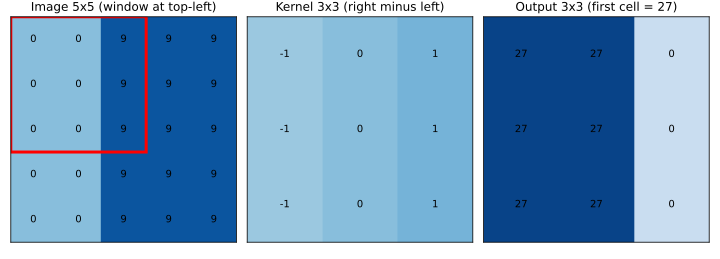
How to read it: left, the image numbers (darker blue is larger). The red square shows the window for the first output cell. Middle, the kernel: negative on the left column, positive on the right. Right, the output: the first cell is 27, computed from the highlighted window.
Before you run it, predict: what is the output shape with pad=1 and stride 1? With pad=1 and stride 2?
import numpy as np
img = np.array([[0,0,9,9,9]]*5, float)
k = np.array([[-1,0,1]]*3, float)
def conv2d(x, k, stride=1, pad=0):
x = np.pad(x, pad); kh, kw = k.shape
H = (x.shape[0]-kh)//stride + 1; W = (x.shape[1]-kw)//stride + 1
out = np.zeros((H, W))
for i in range(H):
for j in range(W):
out[i,j] = (x[i*stride:i*stride+kh, j*stride:j*stride+kw] * k).sum()
return out
print(conv2d(img, k))
print(conv2d(img, k, pad=1).shape, conv2d(img, k, stride=2, pad=1).shape)[[27. 27. 0.]
[27. 27. 0.]
[27. 27. 0.]]
(5, 5) (3, 3)Line by line: np.pad(x, pad) adds a border of zeros. H and W apply the size formula. The two loops slide the window. The slice x[i*stride : i*stride+kh, ...] is the current patch. With pad=1, stride=1 we get (5+2−3)/1+1 = 5: same size as the input ("same padding"). With pad=1, stride=2: floor((5+2−3)/2)+1 = 3.
Problem 6.1.2 Compute output sizes for two real layers.
| Formula | floor((n + 2p − k)/s) + 1. |
|---|---|
| Layer A | LeNet's first layer: n=32, k=5, p=0, s=1 gives (32−5)/1 + 1 = 28. |
| Layer B | ResNet's first layer: n=224, k=7, p=3, s=2 gives floor((224+6−7)/2) + 1 = floor(111.5) + 1 = 112. |
| Answer | 28×28 and 112×112. |
| Check | The code printed 28 and 112. |
| Why it matters | Shape arithmetic is the most common bug source when you design a CNN. Do it before you run. |
Parameters: why weight sharing wins
A conv layer with kernel k×k, C_in input channels and C_out output channels has k·k·C_in·C_out + C_out parameters, no matter how big the image is.
Problem 6.1.3 Compare a conv layer with a dense layer on a 224×224 colour image.
| Formula | conv parameters = k·k·C_in·C_out + C_out; dense parameters = inputs × outputs + outputs. |
|---|---|
| Plug in | conv: 3·3·3·64 + 64. Dense to 1000 outputs: 224·224·3·1000 + 1000. |
| Compute | conv: 1728 + 64 = 1,792. Dense: 150,528 × 1000 + 1000 = 150,529,000. |
| Answer | The conv layer has 1,792 parameters; the dense layer has about 150 million. |
| Check | The code printed 1792 and 150529000. |
| Interpretation | Weight sharing (the same 3×3 kernel at all positions) makes the conv layer about 84,000 times smaller. Fewer parameters also means less overfitting. And the same kernel finds an edge wherever it appears (translation equivariance: shift the image, and the feature map shifts the same way). |
print("conv 3x3x3->64", 3*3*3*64+64, "dense 224*224*3->1000", 224*224*3*1000+1000)conv 3x3x3->64 1792 dense 224*224*3->1000 150529000Real-world mapping
| Concept | Example | Where it appears in the job |
|---|---|---|
| 3×3 kernel, 64 filters | nn.Conv2d(3, 64, 3, padding=1) | First layer of most vision models |
| Stride 2 | halves height and width | Downsampling instead of pooling |
| Padding "same" | output size equals input size | Segmentation networks |
| Feature map | visualized to explain a model | Debugging and interpretability |
Applications
- Computer vision: classification, detection, segmentation, medical imaging.
- Document AI: reading scanned forms and invoices.
- Speech/time series: 1D convolutions (Section 6.4).
- Industrial inspection: finding scratches on parts with a learned edge/texture detector.
Check yourself
- Output size for
n=28, k=3, p=0, s=1? Answer: 26. - Parameters of
Conv2d(16, 32, kernel 3)with bias? Answer:3·3·16·32 + 32 = 4,640. - What does stride 2 do to the output size? Answer: roughly halves it.
6.2 Pooling, Receptive Field, and a CNN in NumPy
Pooling
Max pooling takes the maximum of each block (typically 2×2, stride 2). Average pooling takes the mean. Global pooling takes one value per feature map over the whole map; it is the last step in most modern CNNs.
Problem 6.2.1 Max-pool a 4×4 grid holding 0..15 with 2×2 blocks.
| Step 1 | Grid rows: (0,1,2,3), (4,5,6,7), (8,9,10,11), (12,13,14,15). |
|---|---|
| Step 2 | Blocks and maxima: top-left {0,1,4,5} gives 5; top-right {2,3,6,7} gives 7; bottom-left {8,9,12,13} gives 13; bottom-right {10,11,14,15} gives 15. |
| Answer | The pooled grid is [[5, 7], [13, 15]]. |
| Check | The code below gives the same grid; the size went from 4×4 to 2×2 (4 times fewer numbers). |
| Interpretation | Pooling keeps "was the pattern present in this block" and drops "exactly where". It makes the next layers cheaper and a bit tolerant of small shifts. |
x = np.arange(16.).reshape(4,4)
print(x.reshape(2,2,2,2).max(axis=(1,3)))[[ 5. 7.]
[13. 15.]]Receptive field
The receptive field (RF) of a neuron is the patch of the original image that can influence it. Track it layer by layer: start with RF = 1 and jump = 1 (the spacing between neighbouring neurons in input pixels). For each layer with kernel k and stride s:
RF = RF + (k − 1) × jump
jump = jump × sProblem 6.2.2 Compute the receptive field for this stack: conv3 (stride 1), conv3, pool2 (stride 2), conv3, conv3, pool2.
| Step 1 | conv3: RF = 1 + 2×1 = 3, jump = 1. |
|---|---|
| Step 2 | conv3: RF = 3 + 2×1 = 5, jump = 1. |
| Step 3 | pool2 (k=2, s=2): RF = 5 + 1×1 = 6, jump = 2. |
| Step 4 | conv3: RF = 6 + 2×2 = 10, jump = 2. |
| Step 5 | conv3: RF = 10 + 2×2 = 14, jump = 2. |
| Step 6 | pool2: RF = 14 + 1×2 = 16, jump = 4. |
| Answer | After six layers each neuron sees a 16×16 patch of the input. |
| Check | The code prints 3, 5, 6, 10, 14, 16. Also, two stacked 3×3 convs give RF 5, the same as one 5×5, but with 2·9 = 18 weights per channel pair instead of 25. |
| Interpretation | Deep networks of small kernels see large areas cheaply. If the object you need to recognize is 200 pixels wide and your receptive field is 16, the network cannot see the whole object. Check RF against object size when you design a model. |
layers = [(3,1),(3,1),(2,2),(3,1),(3,1),(2,2)] # (kernel, stride)
rf = 1; jump = 1
for kk, s in layers:
rf += (kk-1)*jump; jump *= s
print("k", kk, "s", s, "RF", rf, "jump", jump)k 3 s 1 RF 3 jump 1
k 3 s 1 RF 5 jump 1
k 2 s 2 RF 6 jump 2
k 3 s 1 RF 10 jump 2
k 3 s 1 RF 14 jump 2
k 2 s 2 RF 16 jump 4A CNN trained from scratch in NumPy
We make a tiny image problem: 8×8 images (with noise) containing one vertical line, one horizontal line or one diagonal line. The network: conv 3×3 with 4 filters → ReLU → 2×2 max-pool → flatten (36 numbers) → dense to 3 classes → softmax. The backward pass for conv and pooling follows the same chain rule as Chapter 2: the pooling layer sends gradient only to the position that had the maximum; the conv kernel gradient is the sum of (input patch × output gradient) over all positions.
Problem 6.2.3 Gradient-check our conv layer, then train the CNN and compare it with a dense network.
| Step 1 | Check the kernel gradient K[1,0,2] on 6 images with a centered difference. |
|---|---|
| Step 2 | Train 300 steps at lr = 0.3 on 300 images; test on 300 fresh images. |
| Step 3 | Train a dense network 64 → 16 → 3 on the same pixels (300 steps, lr = 0.1). |
| Answer | Gradient check: numeric −0.017392279 vs analytic −0.017392279. The CNN (151 parameters) reaches loss 0.1662 and test accuracy 96.3%. The dense network (1091 parameters) reaches 99.3%. |
| Check | The gradient agrees to about 10 digits, so the conv and pooling backward code is right. |
| Interpretation | Honest result: on this tiny, aligned problem the dense network is slightly better, and it has seven times more parameters. Conv layers earn their keep on large images and when objects move around. We test that next. |
Problem 6.2.4 Does the CNN handle objects at new positions? Train only on lines in the left half (positions 0-3) and test on lines in the right half (positions 4-7).
| Step 1 | Train the first CNN (pool then dense) and the dense network on left-half data. |
|---|---|
| Step 2 | Train a second CNN that ends with global max pooling (one number per filter over the whole map, 6 filters, 81 parameters). |
| Answer | On same-position test data all reach 100%. On new positions: dense network 0.0%, first CNN 5.7%, global-pool CNN 72.3%. |
| Check | Chance level for 3 classes is 33%, so the first two scores (below chance) mean the dense layers learned "the line at these places", not "a line". The global-pool CNN truly detects line patterns anywhere (we did not investigate the remaining 28% of errors; likely suspects are lines near the image border, where the 3×3 window is cut off, and the wrapped diagonal). |
| Interpretation | Convolution gives equivariance (the feature map moves with the object), but to get invariance (same answer wherever the object is) you need global pooling, or enough data and augmentation. This is the real reason modern CNNs end with global average pooling instead of a huge dense layer. |
from numpy.lib.stride_tricks import sliding_window_view as swv
class CNN:
def __init__(s, F=4, seed=0):
r = np.random.default_rng(seed)
s.K = r.normal(0, np.sqrt(2/9), (F,3,3)); s.kb = np.zeros(F)
s.W = r.normal(0, np.sqrt(2/(F*9)), (F*9,3)); s.b = np.zeros(3)
def forward(s, X):
P = swv(X, (3,3), axis=(1,2)); s.P = P # (N,6,6,3,3) patches
s.z = np.einsum('nijab,fab->nfij', P, s.K) + s.kb[None,:,None,None]
s.a = np.maximum(0, s.z); N, F = s.a.shape[:2]
s.pool = s.a.reshape(N,F,3,2,3,2); s.m = s.pool.max(axis=(3,5))
s.flat = s.m.reshape(N,-1)
l = s.flat @ s.W + s.b; e = np.exp(l - l.max(1, keepdims=True))
s.p = e / e.sum(1, keepdims=True); return s.p
def loss(s, X, y): return -np.log(s.forward(X)[np.arange(len(y)), y] + 1e-12).mean()
def backward(s, y):
N = len(y); d = s.p.copy(); d[np.arange(N), y] -= 1; d /= N
gW = s.flat.T @ d; gb = d.sum(0); dm = (d @ s.W.T).reshape(s.m.shape)
mask = (s.pool == s.m[:,:,:,None,:,None]); mask = mask / mask.sum(axis=(3,5), keepdims=True)
da = (mask * dm[:,:,:,None,:,None]).reshape(s.a.shape); dz = da * (s.z > 0)
gK = np.einsum('nijab,nfij->fab', s.P, dz); gkb = dz.sum(axis=(0,2,3))
return gK, gkb, gW, gbgradcheck K[1,0,2] numeric -0.01739227863950532 analytic -0.017392278625957425
0 1.1422
100 0.2905
200 0.2179
300 0.1662
CNN test acc 0.9633333333333334 params 151
dense test acc 0.9933333333333333 params 1091
--- train positions 0-3, test positions 4-7
CNN same-pos acc 1.0 new-pos acc 0.056666666666666664
dense same-pos acc 1.0 new-pos acc 0.0
global-pool CNN same-pos acc 1.0 new-pos acc 0.7233333333333334 params 81(The global-pool variant replaces the pooling block with s.m = s.a.reshape(N,F,36).max(2) and a dense layer of shape (F, 3), with the gradient routed to the arg-max position. The dataset function draws one random line per image and adds N(0, 0.2²) noise; the training loop is K -= lr*gK etc., as in Chapter 2. The lines above are the outputs of three runs of that code put together.)
Line by line: swv(X, (3,3), axis=(1,2)) builds every 3×3 patch at once without loops. einsum('nijab,fab->nfij') means: for each image n, position (i,j), and filter f, sum over the 3×3 patch ab. The reshape(N,F,3,2,3,2) groups the 6×6 map into 2×2 blocks; .max(axis=(3,5)) takes each block's maximum. mask finds which entry won the max (it splits the gradient if there is a tie).
The picture
image 8x8 ─▶ conv3x3 (4 filters) ─▶ 4 maps 6x6 ─▶ ReLU ─▶ maxpool 2x2 ─▶ 4 maps 3x3
│ flatten (36)
▼
dense ─▶ softmax ─▶ 3 class probabilitiesReal-world mapping
| Concept | Example | Where it appears in the job |
|---|---|---|
| Receptive field | 16 pixels after 6 layers | Choosing depth for small vs large objects |
| Global average pooling | ResNet's last step | Lets the same model take any image size |
| Max-pool backward | gradient only to the winner | Understanding "why some pixels get no gradient" |
| Position invariance | needs pooling and augmentation | Why we flip and crop images in training |
Applications
- Computer vision: every CNN uses these building blocks.
- Medical imaging: large receptive fields to see a tumour in context.
- Remote sensing: crop and land-use classification from satellite tiles.
- Quality control: defect detection with local texture filters.
Check yourself
- What does max pooling keep and throw away? Answer: keeps the strongest response in each block; throws away its exact position.
- Two stacked 3×3 convs have what receptive field? Answer: 5×5.
- Why does a global-pool CNN generalize to new positions better? Answer: its final features no longer depend on where the pattern was found.
6.3 CNN Architectures: From LeNet to ConvNeXt
Timeline
| Year | Model | Key idea | Approx. parameters |
|---|---|---|---|
| 1998 | LeNet-5 | conv + pool + dense, for digits | 61,706 (we count it below) |
| 2012 | AlexNet | deep CNN + ReLU + dropout + GPUs; won ImageNet | about 61 million |
| 2014 | VGG-16 | only 3×3 convs, 16 layers deep | about 138 million |
| 2014 | Inception (GoogLeNet) | parallel branches of different kernel sizes in one block; 1×1 convs to cut cost | about 6.8 million (v1) |
| 2015 | ResNet | skip connections: output = x + F(x) | ResNet-50 about 25.6 million |
| 2017 | MobileNet | depthwise-separable convolution for phones | about 4.2 million (v1) |
| 2019 | EfficientNet | scale depth, width and resolution together | B0 about 5.3 million |
| 2022 | ConvNeXt | CNN modernized with transformer-era choices (large kernels, LayerNorm, GELU) | ConvNeXt-T about 28 million |
(The larger parameter counts are the commonly published figures; they differ slightly between implementations. Treat them as orders of magnitude. The code below counts LeNet exactly.)
Problem 6.3.1 Count LeNet-5's parameters.
| Formula | conv: k·k·C_in·C_out + C_out; dense: in·out + out. |
|---|---|
| Plug in | conv1 5×5, 1→6: 150 + 6 = 156. conv2 5×5, 6→16: 2400 + 16 = 2416. dense1 400→120: 48,000 + 120 = 48,120. dense2 120→84: 10,080 + 84 = 10,164. dense3 84→10: 840 + 10 = 850. |
| Compute | Sum: 156 + 2416 + 48,120 + 10,164 + 850 = 61,706. |
| Answer | LeNet-5 has 61,706 parameters. |
| Check | The code printed the same five numbers and the total. |
| Interpretation | Almost 80% of LeNet's parameters (48,120) are in one dense layer, the first one after flattening. This is the pattern that later models avoided by using global pooling. |
conv1 = 5*5*1*6+6; conv2 = 5*5*6*16+16; f1 = 400*120+120; f2 = 120*84+84; f3 = 84*10+10
print("LeNet5", conv1, conv2, f1, f2, f3, conv1+conv2+f1+f2+f3)LeNet5 156 2416 48120 10164 850 61706Residual connections (ResNet)
In very deep plain networks, accuracy gets worse when we add layers. Not overfitting, just training difficulty (vanishing gradients, Chapter 4). ResNet's fix: y = x + F(x). The + x is a shortcut that carries both the signal forward and the gradient backward unchanged. The layers F only need to learn a correction, and the default "do nothing" (F ≈ 0) is easy.
Problem 6.3.2 Measure the gradient that arrives at the input of a 50-layer ReLU network with and without skips.
| Plug in | Width 128, 50 layers, He-style weights multiplied by a factor scale. Measure the gradient size at the input divided by the gradient size at the output. |
|---|---|
| Compute | Plain network with scale 0.7: ratio 8.4e-08. Residual with scale 0.7: ratio 2.6e+08. Residual with scale 0.05: ratio 3.0. |
| Answer | The plain network's gradient reaching layer 1 is ten million times smaller than at the output (vanishing). The residual network with large branches explodes (the shortcut adds up every branch). With small branch weights the gradient arrives at about the same size (ratio 3). |
| Check | Chapter 4's logic: the plain net multiplies about 50 factors below 1: 0.7⁵⁰ ≈ 1.8e-8; the printed 8.4e-08 is within a factor of 5, because activations are also shrunk by the ReLU masks and the exact factor per layer is not exactly 0.7. |
| Interpretation | Skips give the gradient a direct highway to early layers. But the numbers also show a trap: without normalization or small branch initialization the sum can explode. That is why real ResNets use BatchNorm in every block and often start the last BatchNorm of each block at zero. |
plain scale 0.7 : grad at input / grad at output = 8.4e-08
residual scale 0.7 : 2.6e+08
residual scale 0.05 : 3.0(Measured with the NumPy loop: d = d + dz @ W.T for residual, d = dz @ W.T for plain.)
Problem 6.3.3 Why does ResNet-50 use a bottleneck block? Compare parameters of two blocks on 256 channels.
| Formula | conv params = k·k·C_in·C_out (ignore biases). |
|---|---|
| Option A | two 3×3 convs on 256 channels: 2 × (3·3·256·256) = 2 × 589,824 = 1,179,648. |
| Option B | bottleneck 1×1 (256→64), 3×3 (64→64), 1×1 (64→256): 16,384 + 36,864 + 16,384 = 69,632. |
| Answer | The bottleneck has about 17 times fewer parameters (1,179,648 / 69,632 = 16.9). |
| Check | 256·64 = 16,384; 3·3·64·64 = 36,864. |
| Interpretation | 1×1 convs shrink the number of channels, the expensive 3×3 works on few channels, and another 1×1 expands back. This "squeeze, work, expand" idea appears in Inception, ResNet, MobileNetV2 and in LoRA (see study/genai/). |
Light models: depthwise separable convolution
A standard 3×3 conv mixes space and channels at once. Depthwise separable conv splits it: a depthwise 3×3 filters each channel alone, then a pointwise 1×1 mixes channels.
Problem 6.3.4 Compare parameters for 128 input and 256 output channels with a 3×3 kernel.
| Formula | standard = 3·3·C_in·C_out; separable = 3·3·C_in + C_in·C_out. |
|---|---|
| Plug in | standard: 9 × 128 × 256. Separable: 9 × 128 + 128 × 256. |
| Compute | standard 294,912; separable 1,152 + 32,768 = 33,920. |
| Answer | The separable version is 8.7 times smaller. |
| Check | The code gives ratio 8.69. |
| Interpretation | This is why MobileNet runs on a phone. EfficientNet then asks: when we have more compute, how should we grow the model? It scales depth, width and image resolution together by a fixed recipe, rather than just one of them. |
std = 3*3*128*256; sep = 3*3*128 + 128*256; print("std", std, "sep", sep, "ratio", round(std/sep,2))std 294912 sep 33920 ratio 8.69ConvNeXt, in one paragraph
ConvNeXt takes a ResNet and applies design choices that came from transformers: bigger kernels (7×7 depthwise), LayerNorm instead of BatchNorm, GELU instead of ReLU, an "inverted bottleneck" shape, and fewer, simpler blocks. The finding was that a pure CNN, trained with modern recipes, matches vision transformers (Chapter 12) on many tasks. The lesson: training recipe and design details matter as much as the architecture family.
The picture
plain stack: residual block:
x x ──────────┐
│ │ │ (shortcut, identity)
[conv] [conv] │
│ │ │
[conv] [conv] │
│ │ │
y = F(x) └──── + ◀───┘ y = x + F(x)Real-world mapping
| Model | Typical use today | Where it appears in the job |
|---|---|---|
| ResNet-18/50 | default backbone and baseline | Almost every CV job starts here |
| MobileNet/EfficientNet | phones, edge cameras | Deployment on small devices (Chapter 14) |
| ConvNeXt | strong CNN alternative to transformers | When you want a fast, simple, convolution-only model |
| LeNet-style | tutorial, tiny digit tasks | Teaching and tiny embedded models |
Applications
- Computer vision: pretrained backbones from
torchvisionandtimm(Chapter 7) for classification, detection and segmentation. - Mobile and edge: MobileNet-class models in camera apps and drones.
- Healthcare: ResNet-family backbones for X-ray and pathology classification.
- Retail and logistics: product recognition and package inspection.
Check yourself
- What does a skip connection compute? Answer:
y = x + F(x). - Which LeNet layer holds most of its parameters? Answer: the first dense layer (48,120 of 61,706).
- What does a 1×1 convolution do? Answer: mixes channels at each position and changes the channel count, without looking at neighbours.
6.4 1D and 3D Convolutions, and When to Choose a CNN
How it works
- 1D CNN: the kernel is a short list (for example 5 numbers). Input shape
(batch, channels, length). Output length= n − k + 1for stride 1 and no padding. Used for time series, sensor data (such as request latencies), audio and short text. - 3D CNN: kernel
k×k×kover(time, height, width). Used for video and medical volumes (CT scans). It is expensive: parameters scale withk³. - Alternatives for video: apply a 2D CNN per frame and combine frames afterwards, or use video transformers.
Problem 6.4.1 Compute output sizes for a 1D and a 3D layer.
| Formula | per axis: floor((n + 2p − k)/s) + 1. |
|---|---|
| 1D | A signal of length 100 with a kernel of 5 and stride 1, padding 0: 100 − 5 + 1 = 96. |
| 3D | A clip of 16 × 112 × 112 (time, height, width), kernel 3 on every axis, stride 1, padding 1: time 16 + 2 − 3 + 1 = 16, height and width 112 + 2 − 3 + 1 = 112. |
| Answer | 96 samples long; and 16×112×112 (padding keeps the sizes). |
| Check | The code printed 96 and 16 112. |
| Interpretation | Parameter cost check: a 3×3×3 kernel with 64 input and 64 output channels has 27·64·64 = 110,592 weights, three times a 3×3 2D kernel's 36,864. |
Problem 6.4.2 A series of 1,000 hourly delivery times has 1,000 points. Describe a tiny 1D CNN to detect a spike pattern.
| Step 1 | Input (1, 1, 1000): one channel. |
|---|---|
| Step 2 | Conv1d(1, 8, kernel 7, padding 3) gives (1, 8, 1000): 8 spike-shape detectors, parameters 7·1·8 + 8 = 64. |
| Step 3 | ReLU, MaxPool1d(4) gives length 250. Another Conv1d(8, 16, 5), then global max pooling gives 16 numbers. |
| Step 4 | Dense 16 to 1 with a sigmoid: spike present or not. |
| Answer | The network uses about 64 + (5·8·16+16) + 17 = 64 + 656 + 17 = 737 parameters (not run here). |
| Check | 5·8·16 = 640, plus 16 biases is 656. |
| Interpretation | A model with 737 numbers can spot patterns in a performance trace. Global max pooling makes it find the pattern wherever in the trace it occurs, exactly as in Problem 6.2.4. |
print("1D out len:", 100-5+1, " 3D out:", (16+2-3)+1, (112+2-3)+1)1D out len: 96 3D out: 16 112PyTorch version (not run here)
import torch.nn as nn
model = nn.Sequential(
nn.Conv2d(1, 4, kernel_size=3), nn.ReLU(),
nn.AdaptiveMaxPool2d(1), nn.Flatten(), # global max pooling
nn.Linear(4, 3)) # 4*9+4 + 4*3+3 = 55 parametersWhen to choose a CNN
- Images, video, audio spectrograms, signals where local patterns matter and data is limited: CNNs are efficient and strong.
- Very large datasets and long-range relations: vision transformers (Chapter 12) often win, but need more data and compute.
- Tabular data: usually not a CNN; try gradient boosting first (see the ML document).
Real-world mapping
| Layer | Example | Where it appears in the job |
|---|---|---|
Conv1d | ECG, vibration or delivery-time traces | Sensor analytics, anomaly detection |
Conv3d | CT scans, short video clips | Medical imaging, action recognition |
| Spectrogram + 2D CNN | sound classification | Audio tagging |
Applications
- Time series: anomaly detection on server metrics (a natural idea for you).
- Healthcare: 3D CNNs on CT/MRI volumes.
- Security and media: video classification and action recognition.
- Audio: keyword spotting on phones.
Check yourself
- Output length of a 1D conv:
n = 50,k = 3, no padding? Answer: 48. - Why are 3D CNNs expensive? Answer: kernel parameters and compute grow with
k³and with the number of frames. - Which pooling gives position-independent detection in a 1D trace? Answer: global max pooling.
Chapter recap
- A convolution slides a small kernel over the image; each output is a sum of products.
- Output size is
floor((n + 2p − k)/s) + 1. - Weight sharing makes a conv layer thousands of times smaller than a dense layer on the same image (1,792 versus 150 million).
- Max pooling keeps the strongest response in each block; global pooling gives one value per feature map.
- The receptive field grows with depth; compute it as
RF += (k−1)·jump. - Convolution is shift-equivariant; invariance needs global pooling and shifted training data.
- Residual connections
y = x + F(x)give the gradient a direct path through very deep networks. - Bottlenecks (1×1, 3×3, 1×1) and depthwise-separable convs cut parameters by 9 to 17 times.
- 1D CNNs handle sequences; 3D CNNs handle video and volumes at higher cost.
| Formula / pattern | Meaning |
|---|---|
out = ⌊(n+2p−k)/s⌋ + 1 | conv output size |
params = k·k·C_in·C_out + C_out | conv layer size |
RF += (k−1)·jump; jump *= s | receptive field |
y = x + F(x) | residual block |
separable params = k²·C_in + C_in·C_out | depthwise separable conv |
nn.Conv2d(C_in, C_out, k, padding=p) | PyTorch conv (not run here) |
Practice set
1. (easy) Output size for n = 28, k = 5, p = 0, s = 1. Answer: 28 − 5 + 1 = 24.
2. (easy) Parameters of Conv2d(3, 16, kernel 3) with bias. Answer: 3·3·3·16 + 16 = 448.
3. (easy) Max-pool [[1,3],[2,4]] with one 2×2 block. Result? Answer: 4.
4. (medium) Convolve the row [1, 2, 3, 4] with kernel [1, 0, −1] (valid, stride 1). Answer: positions: 1·1 + 2·0 + 3·(−1) = −2; 2·1 + 3·0 + 4·(−1) = −2. Output [−2, −2].
5. (medium) What is the output? conv2d(img, k, pad=1).shape for a 5×5 image and a 3×3 kernel. Answer: (5, 5).
6. (medium) Receptive field of three stacked 3×3 convs (stride 1). Answer: 7×7 (1 + 3·2).
7. (medium) Find the bug: someone flattens a conv output of shape (N, 16, 5, 5) and feeds it to Linear(16, 10). Answer: the flattened size is 16·5·5 = 400, so the layer must be Linear(400, 10) (or use global pooling to get 16). Not run here; the error would be a shape mismatch.
8. (medium) Depthwise-separable versus standard 3×3 for 64→64 channels. Parameters? Answer: standard 9·64·64 = 36,864; separable 9·64 + 64·64 = 576 + 4096 = 4,672. About 7.9 times smaller.
9. (hard) A ResNet bottleneck on 512 channels uses 1×1 (512→128), 3×3 (128→128), 1×1 (128→512). Parameters (no bias)? Answer: 65,536 + 147,456 + 65,536 = 278,528. (512·128 = 65,536; 9·128·128 = 147,456.)
10. (interview) "Why do CNNs have fewer parameters than dense networks on images?" Answer: weight sharing: the same small kernel is reused at every position, and connections are local. The parameter count depends on kernel size and channels, not on image size.
11. (interview) "What problem do residual connections solve?" Answer: very deep plain networks are hard to optimize because gradients vanish and the optimization landscape gets difficult. The skip connection y = x + F(x) provides a direct path for signal and gradient, so each block can learn a small correction and extra depth does not hurt.
12. (scenario) You must detect hairline cracks (about 3 pixels wide) and also large dents (about 300 pixels wide) in factory images. What does receptive field tell you? Answer: small kernels and shallow layers handle cracks; for dents you need a receptive field of hundreds of pixels (deeper network, strides, or dilated convs), or a multi-scale design (feature pyramid, Chapter 9). A model with RF 16 would never see a whole dent.
Prompt pack
You are my patient, practical professor. I am a working professional moving into data roles, and English is my second language. Teach me "2D convolution by hand": kernel, stride, padding, output size and feature maps. Use a 5 by 5 image and a 3 by 3 edge kernel with real numbers. Ask me to compute the first two output cells myself before showing them. Then give me 4 output-size problems with different padding and stride, one at a time, and check each answer.
You are my patient, practical professor. I am a working professional moving into data roles and am learning deep learning, and English is not my first language. Explain "pooling and receptive field" with a stack of conv and pool layers. Use the formulas RF = RF + (k-1)*jump and jump = jump*stride. Walk through a 6-layer example, ask me to compute the next layer before you show it, and finish by asking me how receptive field affects detecting small versus large objects.
You are my patient, practical professor. I am a working professional moving into data roles, and English is my second language. Teach me "CNN architectures from LeNet to ResNet, MobileNet, EfficientNet and ConvNeXt". For each model give the main idea in two sentences and one number I can verify (parameter count of a block, for example). Explain skip connections with the gradient highway idea. Quiz me one question at a time and keep score.
You are my patient, practical professor. I am a working professional moving into data roles, with English as my second language. Review my CNN design or code for correctness: channel counts, output-size arithmetic, flatten size, pooling, parameter count and receptive field. Point out any shape bug, explain it simply and show the fix. Also tell me if a dense layer after flatten should be replaced with global pooling. My design or code: [PASTE HERE]
You are my patient, practical professor. I am a working professional moving into data roles and am preparing for computer vision interviews, and English is my second language. Run a mock interview on "convolutional neural networks": weight sharing, equivariance versus invariance, pooling, receptive field, residual connections, depthwise separable convolution, 1D and 3D CNNs. Ask one question at a time, grade me out of 10, give the ideal short answer, then ask a harder follow-up. Do 8 questions.
Imagine your company asks you to sort 800 photos of factory parts into 5 defect types. Training a CNN from zero (Chapter 6) on 800 photos will overfit badly. The model has millions of numbers to learn and only 800 examples to learn them from. Transfer learning solves this: you start from a network that was already trained on over a million photos, keep the general "how to see" part, and teach it only your 5 classes. This chapter shows why that works (with a small NumPy experiment you can run), how to freeze layers and pick learning rates, how to replace the final layer, and how data augmentation stretches a small dataset. You will be able to plan a fine-tuning job and explain every choice. We build on Chapter 6 (CNN layers), Chapter 3 (optimizers, learning rates, regularization) and Chapter 5 (PyTorch).
torchvision, timm and albumentations are not installed in the environment where this chapter was written. Every number below comes from NumPy code that was run. Library code is short, standard, and marked "not run here". Run it yourself on Colab or Kaggle and compare.7.1 Why Transfer Learning Works
Words you need
| Word | Plain meaning |
|---|---|
| Pretrained model | A network already trained on a large dataset (often ImageNet, 1.2 million labelled photos in 1,000 classes) |
| Backbone (feature extractor) | All layers except the last one; they turn an image into a feature vector |
| Head (classifier) | The last layer(s) that turn the feature vector into class scores |
| Freezing | Telling the optimizer not to change certain weights (their gradient is ignored) |
| Fine-tuning | Continuing training of some or all pretrained weights on your data, with a small learning rate |
| Feature reuse | Using the pretrained features unchanged for a new task |
| Domain | The kind of images (natural photos, X-rays, satellite pictures, factory parts) |
What each layer learned
Chapter 6 showed that early conv layers detect simple patterns and later layers combine them. After training on ImageNet, researchers found this order: the first layers detect edges and colour blobs, the middle layers detect textures and parts (a wheel, an eye), and the last layers detect whole objects specific to the 1,000 ImageNet classes. Edges and textures are useful for almost any photo. "Is this a Siberian husky" is useful only for ImageNet. So we keep the general layers and replace the specific ones.
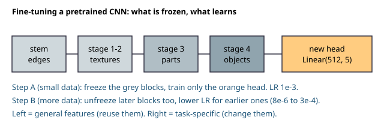
How to read it: the five boxes are the network from input (left) to output (right). Grey boxes are the pretrained backbone, getting more specialised to the right. The orange box is the new head, made fresh for your classes. In Step A only the orange box learns. In Step B some grey boxes on the right are unfrozen too.
A toy you can run: feature reuse with NumPy
We cannot download ImageNet here, so we build a tiny world with the same shape of problem. Each "image" is a vector of 60 numbers (pixels). Behind the pixels hide 3 hidden causes (call them latent factors z0, z1, z2), mixed together and covered with heavy noise. The source task has 2,000 labelled examples: three labels, "is z0 > 0", "is z1 > 0", "is z2 > 0". The target task is new: "is z0 + z1 − z2 > 0". It needs the same hidden causes but a different combination. We test with only 10, 20, 50 or 500 target examples.
Three ways to solve the target task:
- Scratch: a new small network (60 → 8 → 1), all weights random, trained on the target examples.
- Frozen: take the first layer (60 → 8) from the source network, freeze it, train only a new output layer.
- Fine-tune: start from the frozen result, then unfreeze everything and train a little with a small learning rate (0.02 instead of 0.3).
Before you run it, predict: with only 10 examples, which method wins? With 500?
import numpy as np
rng=np.random.default_rng(0)
D=60; L=3
M=rng.normal(size=(L,D))
def make(n):
z=rng.normal(size=(n,L)); return z@M+5.0*rng.normal(size=(n,D)), z
xs,zs=make(2000); ys=(zs>0).astype(float)
def target(n):
x,z=make(n); return x,((z[:,0]+z[:,1]-z[:,2])>0).astype(float)
sig=lambda a:1/(1+np.exp(-a))
def init(h=8,out=1,seed=1):
r=np.random.default_rng(seed)
return {'W1':r.normal(size=(D,h))*np.sqrt(2/D),'b1':np.zeros(h),
'W2':r.normal(size=(h,out))*np.sqrt(1/h),'b2':np.zeros(out)}
def fwd(p,x):
h=np.tanh(x@p['W1']+p['b1']); return h,sig(h@p['W2']+p['b2'])
def train(p,x,y,epochs,lr,freeze=False):
n=len(x)
for e in range(epochs):
h,o=fwd(p,x); d=(o-y)/n
p['W2']-=lr*(h.T@d); p['b2']-=lr*d.sum(0)
if not freeze:
dh=(d@p['W2'].T)*(1-h**2)
p['W1']-=lr*(x.T@dh); p['b1']-=lr*dh.sum(0)
return p
def acc(p,x,y): return ((fwd(p,x)[1]>0.5)==y).mean()
src=train(init(8,3,seed=1),xs,ys,3000,0.3) # "pretraining"
print("source acc",[round(float(((fwd(src,xs)[1][:,i]>0.5)==ys[:,i]).mean()),3) for i in range(3)])
xt_te,yt_te=target(5000); yte=yt_te[:,None]
for ntr in (10,20,50,500):
out={'scratch':[],'frozen':[],'finetune':[]}
for rep in range(20):
xt,yt=target(ntr); yt=yt[:,None]
p=train(init(8,1,seed=10+rep),xt,yt,2000,0.3); out['scratch'].append(acc(p,xt_te,yte))
q={'W1':src['W1'].copy(),'b1':src['b1'].copy(),'W2':np.zeros((8,1)),'b2':np.zeros(1)}
q=train(q,xt,yt,2000,0.3,freeze=True); out['frozen'].append(acc(q,xt_te,yte))
r={k:v.copy() for k,v in q.items()}
r=train(r,xt,yt,200,0.02); out['finetune'].append(acc(r,xt_te,yte))
print(ntr,{k:round(float(np.mean(v)),3) for k,v in out.items()})source acc [0.875, 0.85, 0.888]
10 {'scratch': 0.579, 'frozen': 0.628, 'finetune': 0.628}
20 {'scratch': 0.6, 'frozen': 0.644, 'finetune': 0.646}
50 {'scratch': 0.661, 'frozen': 0.708, 'finetune': 0.71}
500 {'scratch': 0.752, 'frozen': 0.744, 'finetune': 0.748}Line by line. make creates pixels as z @ M (hidden causes mixed into 60 pixels) plus strong noise 5.0 * normal. The source network is trained to predict three labels, so its 8 hidden units are forced to find the hidden-cause directions inside the noisy pixels. That is "pretraining". For the target task we copy W1 and b1 (the backbone), set the new head W2 to zeros, and train only W2, b2 (freeze=True skips the W1 update). Each number is the average test accuracy over 20 random target training sets, tested on 5,000 fresh examples.
Reading the result. With 10 to 50 target examples, reusing the source backbone beats scratch by about 4 to 5 accuracy points (0.628 versus 0.579, 0.708 versus 0.661). With 500 examples the advantage disappears (0.744 versus 0.752): scratch has enough data to find the hidden causes itself. Fine-tuning added almost nothing here because the new task uses the same features. This is the honest pattern of real transfer learning too: the benefit is largest when your data is small and the pretrained features are relevant, and it shrinks as your data grows. The toy gap is modest (5 points). With real photos and a real pretrained network the gap is usually much larger, because ImageNet features are very rich.
Problem 7.1.1 Count how much a head swap trains. A ResNet-18 has 11,689,512 parameters (the torchvision count). Its final layer Linear(512, 1000) has weights and bias. You replace it with Linear(512, 5) for 5 defect classes and freeze everything else. How many parameters are trained, and what share of the model is that?
| Formula | Linear layer parameters = inputs × outputs + outputs. |
|---|---|
| Step 1 | Old head: 512 × 1000 + 1000 = 513,000. |
| Step 2 | New head: 512 × 5 + 5 = 2,565. |
| Step 3 | The model after the swap has 11,689,512 − 513,000 + 2,565 = 11,179,077 parameters. Only the 2,565 new ones are trained. |
| Compute | 2,565 / 11,179,077 × 100 = 0.0229%. |
| Answer | You train 2,565 parameters, about 0.023% of the network. |
| Check | The code in Section 7.2 prints old fc 513000 new head 2565 and 0.023 %. |
| Interpretation | Training 2,565 numbers from 800 photos is a reasonable ratio. Training 11 million numbers from 800 photos is not. This is the arithmetic behind "freeze first". |
When to freeze, when to fine-tune
| Your data | Your domain vs ImageNet | Usual choice |
|---|---|---|
| Small (hundreds) | Similar (everyday photos) | Freeze backbone, train head only |
| Small | Different (X-rays, microscope) | Freeze early blocks, fine-tune the last blocks with a low learning rate |
| Large (tens of thousands) | Similar | Fine-tune everything with a small learning rate |
| Large | Different | Fine-tune everything, possibly for many epochs; pretrained weights still give a better start than random |
Real-world mapping
| Concept | Example value | Where it appears in the job |
|---|---|---|
| Backbone | ResNet-50, ConvNeXt, EfficientNet | The first line of every computer vision project |
| Head swap | Linear(512, 1000) becomes Linear(512, 5) | Product categories, defect types, medical labels |
| Frozen backbone | Extract features once, save as vectors | Image search, duplicate detection, quick baselines |
| Pretraining dataset | ImageNet, larger web-scale sets | Decides what features are "free" for you |
Applications
- Computer vision (industry): defect classification for manufacturing, product tagging for e-commerce.
- Healthcare: chest X-ray classification starting from an ImageNet backbone, then fine-tuning on a few thousand labelled scans.
- Agriculture and satellite: crop disease and land-use classification with small labelled sets.
- GenAI / retrieval: the same idea underlies reusing a pretrained text or image encoder to make embeddings (see
study/genai/for text embeddings and Chapter 12 for CLIP). - MLOps: a frozen backbone lets you cache features and retrain only a tiny head in seconds.
Check yourself
- Which layers of a pretrained CNN are the most reusable: the first or the last? Answer: the first (edges, textures are general); the last layers are specific to the original classes.
- Why did the benefit of transfer shrink at 500 examples in the toy? Answer: with enough data, a scratch network can learn the hidden causes itself.
- How many parameters does
Linear(2048, 10)have? Answer:2048 × 10 + 10 = 20,490.
7.2 The Fine-Tuning Recipe: Freezing, Learning Rates, Normalization
The two-phase recipe
- Replace the head to match your number of classes. Its weights are random.
- Phase 1, train the head only. Freeze the backbone. A normal learning rate works, for example
1e-3with Adam. Why freeze first? A random head produces large, wrong gradients at the start. If the backbone were trainable, those bad gradients would flow back and damage the good pretrained features. Training the head first lets it become sensible. - Phase 2, unfreeze and fine-tune. Unfreeze the last blocks (or all of them). Use a much smaller learning rate, often 10 to 100 times smaller (for example
1e-5to1e-4), because the weights are already good and we only want small adjustments. - Optionally, use discriminative learning rates: a smaller rate for early layers, a larger rate for later layers and the head.
Remember the learning-rate curves from Chapter 3: too large and the loss explodes, too small and nothing moves. Fine-tuning simply picks the "small" end on purpose.
Problem 7.2.1 Build discriminative learning rates for 5 groups (stem and stage 1, stage 2, stage 3, stage 4, head). The head uses 1e-3. Each earlier group uses 0.3 times the rate of the group after it.
| Formula | rate of group i (counting from the stem, i = 0..4) = base × 0.3^(4 − i). |
|---|---|
| Step 1 | Head, i = 4: 1e-3 × 0.3⁰ = 1e-3. |
| Step 2 | Stage 4, i = 3: 1e-3 × 0.3 = 3e-4. |
| Step 3 | Stage 3, i = 2: 1e-3 × 0.09 = 9e-5. |
| Step 4 | Stage 2, i = 1: 1e-3 × 0.027 = 2.7e-5. |
| Step 5 | Stem and stage 1, i = 0: 1e-3 × 0.0081 = 8.1e-6. |
| Answer | The rates are 8.1e-6, 2.7e-5, 9e-5, 3e-4, 1e-3. |
| Check | The code below prints the same values. |
| Interpretation | The early layers (general edges) move about 120 times more slowly than the head (1e-3 / 8.1e-6 ≈ 123). That protects the general features and lets the head adapt fast. |
import numpy as np
fc_old=512*1000+1000; fc_new=512*5+5
print("old fc",fc_old,"new head",fc_new)
total=11_689_512
print("share trainable if only head:", round(fc_new/(total-fc_old+fc_new)*100,3),"%")
base=1e-3
for i,name in enumerate(["stem+layer1","layer2","layer3","layer4","head"]):
print(f"{name:12s} {base*(0.3**(4-i)):.2e}")old fc 513000 new head 2565
share trainable if only head: 0.023 %
stem+layer1 8.10e-06
layer2 2.70e-05
layer3 9.00e-05
layer4 3.00e-04
head 1.00e-03The same recipe in PyTorch (not run here)
import torch, torch.nn as nn
from torchvision import models
model = models.resnet18(weights=models.ResNet18_Weights.DEFAULT) # downloads pretrained weights
for p in model.parameters():
p.requires_grad = False # freeze the whole backbone
model.fc = nn.Linear(512, 5) # new head; its parameters are trainable by default
opt = torch.optim.AdamW(model.fc.parameters(), lr=1e-3) # Phase 1: head only
# ... train a few epochs ...
for p in model.layer4.parameters(): # Phase 2: unfreeze the last stage
p.requires_grad = True
opt = torch.optim.AdamW([
{"params": model.layer4.parameters(), "lr": 3e-4},
{"params": model.fc.parameters(), "lr": 1e-3},
], weight_decay=1e-2)Not run here. Names such as layer4 and fc belong to the torchvision ResNet; other models use other names (timm models use model.reset_classifier(num_classes=5) or timm.create_model("resnet18", pretrained=True, num_classes=5)). Check print(model) for yours. The argument for pretrained weights has changed between torchvision versions (older code used pretrained=True), so read the documentation of your installed version.
Details that decide success
- Use the same input preprocessing as pretraining. ImageNet models expect images resized and normalized with per-channel mean
(0.485, 0.456, 0.406)and standard deviation(0.229, 0.224, 0.225). If you skip this, the features your frozen backbone produces are on the wrong scale. The weights object in torchvision carries the right transforms (weights.transforms()). - Watch BatchNorm. Recall Chapter 3: BatchNorm keeps running averages of mean and variance. Setting
requires_grad = Falsedoes not stop those averages updating in train mode. If you want a truly frozen backbone, also callmodel.eval()on it (or on its BatchNorm layers), at least while the batch size is small. With very small batches (2 to 8), the batch statistics are noisy, so many practitioners keep BatchNorm layers in eval mode during fine-tuning. - Pick a smaller learning rate than you think. If accuracy drops after unfreezing, the rate was probably too large. This is called catastrophic forgetting: the new training overwrites the useful pretrained features.
- Image size. Pretrained models work best near the size they were trained on (224×224 for many). Very different sizes can work but need checking.
- Schedules. Use warmup and cosine decay (Chapter 3) in Phase 2. A short warmup protects the pretrained weights from the first noisy updates.
- Where to find models.
torchvision.models(classic CNNs),timm(a very large library of vision backbones with pretrained weights), and the Hugging Face Hub. Always check the model licence before commercial use.
Problem 7.2.2 You fine-tune with Adam at learning rate 1e-3 on all layers and accuracy falls from 82% (head-only result) to 61%. Diagnose and fix.
| Step 1 | The fall started when the backbone became trainable. So the backbone is being damaged, not the head. |
|---|---|
| Step 2 | 1e-3 is about 10 to 100 times the usual fine-tuning rate for a backbone. |
| Step 3 | Fix: restart from the head-only checkpoint, unfreeze only layer4, use 1e-4 or 3e-5 for it, keep 1e-3 for the head, add 1 epoch of warmup. |
| Answer | The learning rate on the pretrained layers was too high (catastrophic forgetting). Lower it and unfreeze gradually. |
| Check | Compare validation accuracy after each change; it should not drop below the head-only 82%. If it does, the backbone rate is still too high. |
| Interpretation | Rule of thumb: the better the pretrained weights fit your problem, the smaller the fine-tuning rate should be. |
Real-world mapping
| Concept | Example value | Where it appears in the job |
|---|---|---|
requires_grad = False | freezes a layer | Cheap first experiment on a laptop or free GPU |
Backbone LR 1e-5 to 1e-4 | small steps | Fine-tuning rate for ConvNeXt, ViT, ResNet |
Head LR 1e-3 | large steps | New layer starting from random weights |
model.eval() on frozen BN | stable statistics | Small-batch fine-tuning on one GPU |
Applications
- Computer vision: the default workflow for classification, detection and segmentation backbones (Chapter 9 uses the same idea).
- NLP (cross-reference): fine-tuning BERT or an LLM uses the same two ideas, a small learning rate and frozen parts; LoRA is "freeze almost everything" taken further (see
study/genai/). - MLOps: training only a small head makes retraining fast and cheap, so weekly model refresh is practical.
sum(p.numel() for p in model.parameters() if p.requires_grad). For the ResNet-18 head swap it must print 2565.Check yourself
- Why train the head first? Answer: a random head gives large wrong gradients that would damage the pretrained backbone.
- Is
1e-3a good fine-tuning rate for a pretrained backbone? Answer: usually too large;1e-5to1e-4is typical. - What does
requires_grad = Falsenot stop in a BatchNorm layer? Answer: the update of running mean and variance in train mode.
7.3 Data Augmentation and Dataset Care
Words you need
| Word | Plain meaning |
|---|---|
| Augmentation | Random, label-preserving changes to training images (flip, crop, colour change) |
| Label-preserving | The change does not change the correct answer (a flipped cat is still a cat) |
| Test-time | Augmentation is applied only to training images, not to validation or test images (apart from a fixed resize) |
| Mixup / CutMix | Blend two images and their labels (mixup), or paste a patch of one image into another and mix labels in proportion to the patch area (CutMix) |
The common transforms
| Transform | What it does | Careful when |
|---|---|---|
| Horizontal flip | Mirror left-right | Text and digits (a mirrored "2" is not a "2"), medical images where left and right matter |
| Random crop and resize | Take a random part, scale it to the model size | The object may be cropped out entirely |
| Rotation (small) | Rotate by a few degrees | Objects with a fixed orientation (a sign on a pole) |
| Brightness / contrast / colour jitter | Change lighting | Colour is the label (ripe versus unripe fruit) |
| Blur / noise | Simulate a bad camera | Fine defects can vanish |
| Cutout / random erasing | Black out a patch | Small objects |
Rule: augment to match the variation you expect in production, not more. A factory camera is fixed, so heavy rotation teaches the model things it will never meet.
Augmentation by hand in NumPy
Before you run it, predict: what is the first row after a horizontal flip of a 6×6 image whose first row is 0 1 2 3 4 5? What is the shape of a [1:5, 2:6] crop?
import numpy as np
img = np.arange(36).reshape(6, 6).astype(float)
flip = img[:, ::-1]
crop = img[1:5, 2:6]
print(img[0]); print(flip[0]); print(crop)
bright = np.clip(img * 1.2 + 10, 0, 255); print(bright[0])
print(img.mean(), flip.mean())[0. 1. 2. 3. 4. 5.]
[5. 4. 3. 2. 1. 0.]
[[ 8. 9. 10. 11.]
[14. 15. 16. 17.]
[20. 21. 22. 23.]
[26. 27. 28. 29.]]
[10. 11.2 12.4 13.6 14.8 16. ]The last line printed 17.5 17.5 (the mean is unchanged by a flip, as expected).
Line by line. img[:, ::-1] means "all rows, columns in reverse order": a horizontal flip with no copy of the values. img[1:5, 2:6] takes rows 1 to 4 and columns 2 to 5: a 4×4 crop, and its first value is img[1,2] = 1·6 + 2 = 8. Brightness is a multiply and add, then np.clip(..., 0, 255) keeps pixel values in the legal range (otherwise values above 255 are invalid). The first row becomes 0·1.2 + 10 = 10, 1·1.2 + 10 = 11.2, and so on.
Problem 7.3.1 An augmentation pipeline applies, independently, a flip with probability 0.5, a crop (always), and brightness jitter with probability 0.3. How many different "flip and brightness" combinations can one image meet, and how often does an image get neither?
| Step 1 | Flip has 2 states (on, off); brightness has 2 states. So 2 × 2 = 4 combinations (before counting random crop positions and strengths). |
|---|---|
| Step 2 | Probability of no flip: 1 − 0.5 = 0.5. Probability of no brightness change: 1 − 0.3 = 0.7. |
| Step 3 | The two are independent, so P(neither) = 0.5 × 0.7 = 0.35. |
| Answer | 4 combinations, and 35% of images get neither change (they only get the crop). |
| Check | The four combination probabilities are 0.35, 0.15, 0.35, 0.15; they add to 1.0. |
| Interpretation | Each epoch the model sees a slightly different version of every photo. With random crops added, there are thousands of variants of each image, which acts as a regularizer (Chapter 3). |
Mixup and CutMix by numbers
Mixup takes two images A, B with one-hot labels and a mixing weight λ (drawn each time from a Beta distribution, a bell-like shape on 0 to 1): new image = λA + (1 − λ)B, new label = λ·label_A + (1 − λ)·label_B.
Problem 7.3.2 Mix a "crack" image (label [1, 0, 0]) and a "dent" image (label [0, 1, 0]) with λ = 0.7. What is the new label? If the model predicts probabilities [0.6, 0.3, 0.1], what is the cross-entropy loss (natural log)?
| Step 1 | New label = 0.7 × [1,0,0] + 0.3 × [0,1,0] = [0.7, 0.3, 0]. |
|---|---|
| Formula | cross-entropy = −Σ target × ln(prediction) (see the learner's Math PDF). |
| Step 2 | −(0.7 × ln 0.6 + 0.3 × ln 0.3 + 0 × ln 0.1). |
| Step 3 | ln 0.6 = −0.5108, ln 0.3 = −1.2040. So 0.7 × 0.5108 = 0.3576 and 0.3 × 1.2040 = 0.3612. |
| Answer | The soft label is [0.7, 0.3, 0] and the loss is 0.3576 + 0.3612 = 0.7188. |
| Check | The loss is lowest when the prediction equals the soft label: with [0.7, 0.3, 0.0001] it would be about 0.6109, the entropy of the label. Our 0.7188 is higher, as it should be. |
| Interpretation | The model is trained to be unsure when the image is a blend. This discourages over-confident predictions. CutMix does the same but pastes a rectangle, and sets λ to the fraction of area kept. |
Library code (not run here)
import albumentations as A
train_tf = A.Compose([
A.RandomResizedCrop(size=(224, 224), scale=(0.7, 1.0)),
A.HorizontalFlip(p=0.5),
A.RandomBrightnessContrast(p=0.3),
A.Normalize(mean=(0.485, 0.456, 0.406), std=(0.229, 0.224, 0.225)),
])
# validation: only resize + normalize, no random changesNot run here. Argument names of RandomResizedCrop changed across albumentations versions (older versions used height and width), so check your version. torchvision.transforms offers similar tools.
Dataset care: the unglamorous 80%
- Labelling tools. CVAT and Label Studio are free tools to draw boxes, polygons and class labels, and to review them. Write labelling rules down (what counts as a "scratch"?). Two people labelling the same 100 images show you how noisy your labels are.
- Split before augmenting. Split into train, validation and test first. Never augment, then split: copies of the same image would land in both sets (data leakage; see the machine-learning document for leakage).
- Split by source. If the same part or patient appears in many photos, keep all photos of one part in one split. Otherwise validation accuracy is falsely high.
- Curation. Remove duplicates, blurred or corrupted files and wrong labels. Look at the model's most confident mistakes: they are often label errors.
- Class imbalance. If 95% of parts are good, accuracy is meaningless. Use class weights, balanced sampling, and metrics such as precision, recall and F1 per class (see the machine-learning document).
- Quick sanity test. Overfit 16 images first (Chapter 4). If the pipeline cannot reach 100% training accuracy on 16 images, something is broken before any fine-tuning issue.
Real-world mapping
| Concept | Example value | Where it appears in the job |
|---|---|---|
| Training-only augmentation | flip, crop, jitter | Every vision training script |
| Fixed validation transform | resize + normalize | Honest, repeatable metrics |
| Label Studio / CVAT | boxes and polygons | Building your own detection dataset |
| Split by part ID | all photos of a part together | Avoids leakage in industrial and medical data |
Applications
- Manufacturing: simulate lighting changes on the line with brightness jitter.
- Medical imaging: small rotations and elastic changes, but no flips if left/right matters.
- Retail: crops and colour jitter for product photos taken by customers.
- Self-driving / drones: blur, rain and noise augmentations for robustness.
- Data engineering / MLOps: versioned datasets and label-quality reports.
Check yourself
- Do you augment the validation set? Answer: no, only a fixed resize and normalize.
- Why split before augmenting? Answer: to avoid copies of one image landing in both train and validation (leakage).
- In mixup with
λ = 0.7, what is the label mix? Answer: 70% of label A plus 30% of label B.
Chapter recap
- Transfer learning reuses a network trained on a big dataset; early layers learn general edges and textures, later layers are task-specific.
- It helps most when your data is small and the domain is related; the benefit shrinks as your data grows (the NumPy toy: 0.708 versus 0.661 at 50 examples, equal at 500).
- Replace the head, train it alone first, then unfreeze the last blocks with a learning rate 10 to 100 times smaller.
- Discriminative learning rates give early layers smaller steps (the example went from
1e-3down to8.1e-6). - Use the same preprocessing as the pretrained model, and remember BatchNorm statistics need
eval()to be truly frozen. - A too-high backbone learning rate causes catastrophic forgetting: validation accuracy falls after unfreezing.
- Augmentation creates label-preserving variations; apply it only to training data and match real production variation.
- Mixup and CutMix train with blended labels and reduce over-confidence.
- Split by source before augmenting, and check labels; data quality often matters more than model choice.
| Formula / command / pattern | Meaning |
|---|---|
Linear(in, out) parameters = in·out + out | size of a new head (512→5 is 2,565) |
p.requires_grad = False | freeze a parameter (not run here) |
model.fc = nn.Linear(512, 5) | head swap for torchvision ResNet (not run here) |
lr_i = base × 0.3^(4−i) | discriminative learning rates |
mixup: x = λA + (1−λ)B, same for labels | blended training sample |
| Fine-tune LR | 1e-5 to 1e-4 typical for backbones |
| Validation transform | resize + normalize only |
Practice set
1. (easy) Linear(1024, 20) has how many parameters? Answer: 1024 × 20 + 20 = 20,500.
2. (easy) After a horizontal flip, what is [3, 8, 1] (one row of pixels)? Answer: [1, 8, 3].
3. (easy) Which part of a pretrained CNN do you replace first when you have 7 classes instead of 1,000? Answer: the final classification layer (head).
4. (medium) You freeze everything except Linear(2048, 4) of a model with 25,557,032 parameters (including the old Linear(2048, 1000), which has 2,049,000 parameters). How many parameters are trained after the swap? Answer: 2048 × 4 + 4 = 8,196.
5. (medium) What is the output? np.array([[1,2,3],[4,5,6]])[:, ::-1] Answer: [[3,2,1],[6,5,4]] (each row reversed).
6. (medium) Mixup with λ = 0.4 on labels [1,0] (A) and [0,1] (B). New label? Answer: 0.4 × [1,0] + 0.6 × [0,1] = [0.4, 0.6].
7. (medium) Find the bug: model.fc = nn.Linear(512, 5), then opt = SGD(model.parameters()) after setting requires_grad=False on all parameters including the new head (the freeze loop ran after the swap). Answer: the new head is frozen too, so nothing learns (the optimizer gets no gradients; PyTorch raises an error or the loss never moves). Freeze the backbone first, then assign the new head, or set the head's requires_grad = True. Not run here.
8. (medium) A team reports 99% validation accuracy on photos of 50 patients, using 20 photos each, with a random photo-level split. What is likely wrong? Answer: leakage: photos of the same patient are in both train and validation. Split by patient.
9. (hard) A dataset has 1,000 images, 5% defective. A model that always says "good" has what accuracy? What metric would you report instead? Answer: 95% accuracy while catching zero defects. Report recall and precision for the defect class (and F1), plus a confusion matrix.
10. (hard) You have discriminative rates with ratio 0.5 per stage and head rate 2e-3, 4 stages plus head. List the rates from stem to head. Answer: head 2e-3, stage 4 1e-3, stage 3 5e-4, stage 2 2.5e-4, stem group 1.25e-4; from stem: 1.25e-4, 2.5e-4, 5e-4, 1e-3, 2e-3.
11. (interview) "You have 500 labelled images. How do you build an image classifier?" Answer: start from a pretrained backbone, replace the head, train the head with the backbone frozen, evaluate with a held-out set split by source, then unfreeze the last blocks with a small learning rate and compare. Use augmentation matched to production, check for class imbalance, and report a scratch or simple baseline for comparison.
12. (interview) "Why can fine-tuning with a large learning rate make a pretrained model worse than not fine-tuning?" Answer: large updates overwrite the general features learned from millions of images (catastrophic forgetting), and a random head produces large early gradients that damage the backbone. Lower the rate, train the head first, and use warmup.
Prompt pack
You are my patient, practical professor. I am a working professional moving into data roles, and English is my second language. Teach me "transfer learning for images": backbone, head, feature reuse, and why early layers are general. Use a ResNet-18 head swap with real parameter counts (512 to 1000 versus 512 to 5). Explain step by step with an everyday analogy, ask me to compute the trainable parameters myself, then check my understanding with 3 short questions.
You are my patient, practical professor. I am a working professional moving into deep learning, and English is not my first language. Give me 8 graded exercises on "freezing layers and fine-tuning learning rates" for a pretrained CNN: counting trainable parameters, discriminative learning rates with a ratio, deciding what to freeze for small versus large datasets, and diagnosing a drop in accuracy after unfreezing. Do not give solutions yet. Wait for my answers and then correct them one by one.
You are my patient, practical professor. I am a working professional learning computer vision, and English is my second language. Quiz me one question at a time on "data augmentation for image classification": flips, crops, colour jitter, mixup, CutMix, label-preserving rules, and why validation data is not augmented. After each answer, tell me if I am right, give a short correction, and then ask a slightly harder question. Keep score out of 10.
You are my patient, practical professor. I am a working professional moving into data roles, with English as my second language. Review my fine-tuning plan or code for mistakes: head replacement, freezing, optimizer parameter groups, learning rates, BatchNorm handling, preprocessing, and train/validation splitting (leakage). Explain each problem in simple English and show the fix. My plan or code: [PASTE HERE]
You are my patient, practical professor. I am a working professional preparing for computer vision interviews, and English is my second language. Run a mock interview on "transfer learning and fine-tuning for images". Ask 8 questions one at a time, covering when to freeze, learning-rate choices, catastrophic forgetting, BatchNorm, augmentation pitfalls, leakage and class imbalance. Grade each answer out of 10, show the ideal short answer, then ask a harder follow-up.
Before deep learning, computers "saw" with hand-made rules: blur the noise, find the edges, cut out the object with a threshold, clean the mask, count the blobs. These tools are still everywhere. They prepare images for neural networks, they run on cheap cameras where no GPU exists, and they often solve a factory or document problem in 20 lines with no training data at all. This chapter builds each tool from a tiny array you can compute by hand, then runs it in NumPy on small synthetic images and shows the real output. By the end you will be able to read an OpenCV pipeline, explain what each call does, and pick between a classical method and a CNN. Chapter 6 gave you convolution; here we use it as a toolbox. Chapter 7's augmentations (flip, crop, brightness) are the same pixel operations you will see below.
cv2), scikit-image and PIL are not installed where this chapter was written, so every output below comes from NumPy code that I ran. The OpenCV lines are short, standard calls marked "not run here". Our versions are slow loops written for clarity; the library versions do the same job in C and are hundreds of times faster. The helper block below (show, conv2d) is reused by every later snippet in this chapter.import numpy as np
def show(a, chars=" .:-=+*#%@"):
"""print a 2D array as ASCII art (each pixel is 2 characters wide)"""
a = np.asarray(a, float); lo, hi = a.min(), a.max()
q = ((a - lo) / (hi - lo + 1e-9) * (len(chars) - 1)).round().astype(int)
print("\n".join("".join(chars[v] * 2 for v in row) for row in q))
def conv2d(x, k):
"""same-size 2D filtering (cross-correlation), edge pixels repeated"""
kh, kw = k.shape; ph, pw = kh // 2, kw // 2
xp = np.pad(x, ((ph, ph), (pw, pw)), mode='edge')
out = np.zeros(x.shape, float)
for i in range(x.shape[0]):
for j in range(x.shape[1]):
out[i, j] = (xp[i:i+kh, j:j+kw] * k).sum()
return out8.1 Pixels, Color Spaces, Resizing and Histogram Equalization
Words you need
| Word | Plain meaning |
|---|---|
| Pixel | One number (grey) or three numbers (colour) at one position |
| Channel | One sheet of the stack; RGB has 3 channels |
| Shape | (height, width) for grey, (height, width, 3) for colour in NumPy and OpenCV (PyTorch uses (3, height, width)) |
| Colour space | A way to write a colour as numbers: RGB, HSV (hue, saturation, value), Lab (lightness plus two colour axes) |
| Interpolation | How to invent pixel values when resizing |
| Histogram | Count of how many pixels have each grey level |
Why several colour spaces? RGB mixes brightness and colour together, so "find the red apple under a shadow" is awkward. HSV separates them: Hue is the colour angle (0° red, 120° green, 240° blue), Saturation is how vivid (0 grey to 1 pure), Value is brightness. A colour rule on hue survives lighting changes better. Lab is designed so that distance between two Lab numbers matches how different the colours look to a human, so it is used for colour matching. OpenCV note: it loads images in BGR order, not RGB. Mixing the two up gives blue faces and is one of the most common bugs.
Problem 8.1.1 Convert the RGB pixel (200, 100, 50) to grey using the standard luma weights 0.299, 0.587, 0.114, and to HSV.
| Formula | grey = 0.299·R + 0.587·G + 0.114·B. HSV: V = max, S = (max − min)/max, H = 60° × ((G − B)/(max − min)) when red is the max. |
|---|---|
| Compute grey | 0.299 × 200 = 59.8, 0.587 × 100 = 58.7, 0.114 × 50 = 5.7; sum 124.2. |
| Compute HSV | max = 200, min = 50, so V = 200/255 = 0.7843, S = 150/200 = 0.75, H = 60 × (50/150) = 20°. |
| Answer | Grey is 124.2. In HSV: hue 20° (orange), saturation 0.75, value 0.784. |
| Check | The code below prints gray 124.2 and hsv [0.0556, 0.75, 0.7843] (0.0556 × 360 = 20°, Python's colorsys uses 0 to 1 for hue). |
| Interpretation | Green gets the biggest weight (0.587) because human eyes are most sensitive to green. A plain average (200+100+50)/3 = 116.7 would look slightly wrong. |
Problem 8.1.2 Resize the 2×2 image [[10, 20], [30, 40]] to 3×3 by nearest neighbour and by bilinear interpolation.
| Nearest | each new pixel copies the closest old pixel. Rows and columns map to old indices 0, 0, 1 (pixel positions 0, 0.5, 1 round to 0, 0, 1 with ties going down), giving [[10,10,20],[10,10,20],[30,30,40]]. |
|---|---|
| Bilinear | a new pixel at fractional position is a weighted average of the 4 nearest old pixels. The centre (0.5, 0.5) has weights 0.25 each: 0.25 × (10 + 20 + 30 + 40) = 25. The top-middle (0, 0.5) is half of 10 and half of 20: 15. |
| Answer | Bilinear gives [[10,15,20],[20,25,30],[30,35,40]]: a smooth ramp. Nearest gives blocks. |
| Check | The output below matches. Also, rotating with np.rot90 and flipping with m[::-1] are one-line index changes. |
| Interpretation | Nearest is fastest and keeps hard edges (good for label masks, where you must not invent class 1.5). Bilinear or bicubic is smoother (good for photos). Shrinking a photo a lot needs area averaging (OpenCV INTER_AREA) or you get jagged aliasing. |
Before you run it, predict: what does np.rot90 do to a 2×3 array: what shape comes out?
import colorsys
px = np.array([200, 100, 50.])
print("gray", round(float(px @ np.array([0.299, 0.587, 0.114])), 2))
print("hsv", [round(float(v), 4) for v in colorsys.rgb_to_hsv(*(px / 255))])
a = np.array([[10., 20.], [30., 40.]])
def bilinear(a, H, W):
h, w = a.shape; out = np.zeros((H, W))
for i in range(H):
for j in range(W):
y = i * (h - 1) / (H - 1); x = j * (w - 1) / (W - 1)
y0, x0 = int(np.floor(y)), int(np.floor(x))
y1, x1 = min(y0 + 1, h - 1), min(x0 + 1, w - 1)
fy, fx = y - y0, x - x0
out[i, j] = (a[y0,x0]*(1-fy)*(1-fx) + a[y0,x1]*(1-fy)*fx
+ a[y1,x0]*fy*(1-fx) + a[y1,x1]*fy*fx)
return out
print(bilinear(a, 3, 3))
print(a[np.ix_([0, 0, 1], [0, 0, 1])]) # nearest-neighbour 2x2 -> 3x3 (rows/cols 0,0,1)
m = np.arange(6).reshape(2, 3)
print(np.rot90(m)); print(m[::-1])gray 124.2
hsv [0.0556, 0.75, 0.7843]
[[10. 15. 20.]
[20. 25. 30.]
[30. 35. 40.]]
[[10. 10. 20.]
[10. 10. 20.]
[30. 30. 40.]]
[[2 5]
[1 4]
[0 3]]
[[3 4 5]
[0 1 2]]Line by line. colorsys.rgb_to_hsv takes values in 0 to 1, so we divide by 255. bilinear maps new index i of H to the old coordinate y = i·(h−1)/(H−1) (so the corners line up), takes the four neighbours (y0,x0), (y0,x1), (y1,x0), (y1,x1) and weights each by how close it is: (1−fy)(1−fx) and so on. np.rot90 of a (2,3) array gives shape (3,2), rotating counter-clockwise.
Histogram equalization: using the whole range
Rule: compute the histogram, then the cumulative histogram (the CDF: running total of counts). Map each level v to round((cdf(v) − cdf_min) / (N − cdf_min) × (L − 1)), where N is the number of pixels, cdf_min the smallest non-zero CDF value and L the number of levels.
Problem 8.1.3 A 4×4 image has only grey levels 1, 2, 3, 4 (on a scale of 8 levels, 0 to 7): rows [1,1,2,2], [1,2,2,3], [2,2,3,3], [2,3,3,4]. Equalize it.
| Step 1 | Counts: level 1 appears 3 times, level 2 appears 7, level 3 appears 5, level 4 appears 1. Total 3+7+5+1 = 16. |
|---|---|
| Step 2 | CDF: level 1: 3, level 2: 10, level 3: 15, level 4: 16. cdf_min = 3, N = 16. |
| Step 3 | Map level 1: (3−3)/(16−3) × 7 = 0. Level 2: 7/13 × 7 = 3.77 → 4. Level 3: 12/13 × 7 = 6.46 → 6. Level 4: 13/13 × 7 = 7. |
| Answer | Levels 1,2,3,4 become 0,4,6,7: the image now spans the full 0 to 7 range. |
| Check | The mapping is monotone (order of brightness preserved), and the code prints lut [0 0 4 6 7 7 7 7]. |
| Interpretation | Contrast increased without losing the order of brightness. Use it for faint medical or surveillance images. Do not use it blindly before a CNN: it changes the statistics the network was trained on. For uneven contrast, CLAHE (cv2.createCLAHE, equalization on small tiles with a clip limit) is the usual choice. |
im = np.array([[1,1,2,2],[1,2,2,3],[2,2,3,3],[2,3,3,4]]) # 4x4 image, gray levels 0..7
cnt = np.bincount(im.ravel(), minlength=8); cdf = cnt.cumsum()
print("counts", cnt); print("cdf ", cdf)
cmin = cdf[cdf > 0].min(); n = im.size
lut = np.round((cdf - cmin) / (n - cmin) * 7).astype(int); lut[cdf == 0] = 0
print("lut ", lut)
print(lut[im])counts [0 3 7 5 1 0 0 0]
cdf [ 0 3 10 15 16 16 16 16]
lut [0 0 4 6 7 7 7 7]
[[0 0 4 4]
[0 4 4 6]
[4 4 6 6]
[4 6 6 7]]Real-world mapping
| Concept | Example value | Where it appears in the job |
|---|---|---|
| BGR versus RGB | cv2.cvtColor(img, cv2.COLOR_BGR2RGB) (not run here) | First bug in every OpenCV to PyTorch pipeline |
| HSV threshold | hue 0 to 10 and 170 to 180 (OpenCV scale) = red | Colour-based sorting, traffic light colour checks |
Resize with INTER_AREA | shrink a 4000 px photo to 224 px | Preprocessing before any CNN |
| Histogram | grey-level counts | Quick quality checks: is the image too dark or saturated? |
Applications
- Computer vision: every pipeline starts with load, resize, colour conversion, normalise.
- Data engineering / MLOps: image quality gates (is the histogram all black? is the image blurry?) before images enter a training set.
- Document AI: convert scans to grey and equalise before OCR (see Chapter 9).
- Medical imaging: contrast enhancement of X-rays.
uint8 arithmetic as normal. In NumPy np.uint8(250) + np.uint8(10) wraps to 4, not 260. Convert to float first (img.astype(np.float32)), or use np.clip. Also keep track of array shape order: OpenCV is (H, W, C), PyTorch (C, H, W).Check yourself
- What is the grey value of pure white
(255,255,255)with luma weights? Answer:255 × (0.299+0.587+0.114) = 255. - Why prefer nearest-neighbour resizing for segmentation masks? Answer: it never creates new, invalid class numbers.
- Which colour space separates brightness from colour? Answer: HSV (Value) or Lab (L).
8.2 Filtering: Blur, Median and Sharpen
How it works
You already know convolution from Chapter 6: slide a kernel over the image and add up products. The kernel decides the effect:
| Filter | Kernel (3×3) | Effect |
|---|---|---|
| Mean (box) blur | all 1/9 | equal average of neighbours |
| Gaussian blur | [[1,2,1],[2,4,2],[1,2,1]] / 16 | centre pixel counts more; smoother, fewer artefacts |
| Sharpen | [[0,−1,0],[−1,5,−1],[0,−1,0]] | centre boosted, neighbours subtracted |
| Median | not a convolution | sort the 9 values, take the 5th |
The Gaussian kernel follows the bell curve exp(−d²/2σ²); a larger σ (sigma) blurs more. Its weights always add up to 1 so brightness is preserved. The median filter is non-linear (it cannot be written as a kernel) but is the best tool for salt-and-pepper noise (random pure white and black dots).
Problem 8.2.1 A 3×3 patch has a noise spike in the centre: [[10,20,30],[40,250,60],[70,80,90]]. Compute the centre output of the mean filter, the 3×3 Gaussian and the median.
| Mean | sum = 10+20+30+40+250+60+70+80+90 = 650; 650/9 = 72.22. |
|---|---|
| Gaussian | weighted sum: row 1 1·10 + 2·20 + 1·30 = 80; row 2 2·40 + 4·250 + 2·60 = 80 + 1000 + 120 = 1200; row 3 1·70 + 2·80 + 1·90 = 320. Total 1600, divided by 16 gives 100. |
| Median | sorted values 10, 20, 30, 40, 60, 70, 80, 90, 250; the 5th is 60. |
| Answer | Mean 72.22, Gaussian 100, median 60. |
| Check | The neighbours are between 10 and 90, so the "true" centre should be near 50. The median (60) is closest. The Gaussian is worst because it gives the spike weight 4/16. |
| Interpretation | Linear filters spread an outlier into its neighbours; the median rejects it. This is the same reason a typical house price is reported as a median: a few extreme values distort the mean but not the middle value. |
Problem 8.2.2 Sharpen: a flat patch of value 10 with one centre pixel of 50. Apply the sharpen kernel.
| Formula | 5 × centre − (up + down + left + right). |
|---|---|
| Compute | 5 × 50 − (10 + 10 + 10 + 10) = 250 − 40 = 210. |
| Answer | The centre becomes 210: a faint bump of 40 above its surroundings turns into a strong peak. |
| Check | On a perfectly flat region of 10s: 5 × 10 − 40 = 10, unchanged. Sharpening only changes places where neighbours differ. |
| Interpretation | Sharpening amplifies noise as well as detail. Values above 255 must be clipped. Unsharp masking (original + amount × (original − blurred)) is the common practical form. |
Before you run it, predict: which filter will give the smallest error on salt-and-pepper noise: Gaussian or median?
patch = np.array([[10,20,30],[40,250,60],[70,80,90]], float) # 250 is a bright noise spike
mean_k = np.ones((3,3)) / 9
gauss_k = np.array([[1,2,1],[2,4,2],[1,2,1]]) / 16
sharp_k = np.array([[0,-1,0],[-1,5,-1],[0,-1,0]], float)
print("mean ", round(float((patch * mean_k).sum()), 2))
print("gauss ", float((patch * gauss_k).sum()))
print("median", float(np.median(patch)))
print("sharp on flat 10 with centre 50:", float((np.array([[10,10,10],[10,50,10],[10,10,10]]) * sharp_k).sum()))mean 72.22
gauss 100.0
median 60.0
sharp on flat 10 with centre 50: 210.0Now a whole image: a dark floor (40) with a bright square (200), corrupted two ways. We measure the mean absolute error against the clean image (lower is better).
rng = np.random.default_rng(1)
img = np.full((16, 16), 40.0); img[4:12, 4:12] = 200 # clean: dark floor, bright square
gaussian_noisy = np.clip(img + rng.normal(0, 25, img.shape), 0, 255)
g = np.exp(-(np.arange(5) - 2) ** 2 / (2 * 1.0 ** 2)); G = np.outer(g, g); G /= G.sum() # 5x5 Gaussian, sigma 1
print(G.round(4)); print("sum of weights", round(float(G.sum()), 4))
def median(x, k=3):
p = k // 2; xp = np.pad(x, p, mode='edge'); out = np.zeros_like(x)
for i in range(x.shape[0]):
for j in range(x.shape[1]): out[i, j] = np.median(xp[i:i+k, j:j+k])
return out
sp = img.copy(); idx = rng.choice(256, 20, replace=False)
sp.flat[idx] = 255 * rng.integers(0, 2, 20) # 20 salt-and-pepper pixels
err = lambda a: round(float(np.abs(a - img).mean()), 2) # mean absolute error vs clean
print("gaussian noise : noisy", err(gaussian_noisy), "| gauss blur", err(conv2d(gaussian_noisy, G)), "| median", err(median(gaussian_noisy)))
print("salt & pepper : noisy", err(sp), "| gauss blur", err(conv2d(sp, G)), "| median", err(median(sp)))[[0.003 0.0133 0.0219 0.0133 0.003 ]
[0.0133 0.0596 0.0983 0.0596 0.0133]
[0.0219 0.0983 0.1621 0.0983 0.0219]
[0.0133 0.0596 0.0983 0.0596 0.0133]
[0.003 0.0133 0.0219 0.0133 0.003 ]]
sum of weights 1.0
gaussian noise : noisy 17.26 | gauss blur 15.61 | median 10.78
salt & pepper : noisy 12.01 | gauss blur 21.92 | median 2.5Reading the result. For Gaussian noise, blur helps a little (17.26 to 15.61) and median helps more (10.78); both smooth noise but both soften the square's edges, which is where the remaining error is. For salt-and-pepper noise, Gaussian blur makes things worse (12.01 to 21.92) because each extreme dot is smeared over 25 pixels, while the median removes the dots almost completely (2.50). Remember this rule: Gaussian for gentle sensor noise, median for impulse noise. Other options exist (bilateral filter and non-local means keep edges better; OpenCV: cv2.GaussianBlur, cv2.medianBlur, cv2.bilateralFilter, cv2.filter2D for any custom kernel; not run here).
Real-world mapping
| Concept | Example value | Where it appears in the job |
|---|---|---|
cv2.GaussianBlur(img, (5,5), 1.0) | 5×5 kernel, σ = 1 | Denoising before edge detection or thresholding (not run here) |
cv2.medianBlur(img, 3) | 3×3 median | Removing dead pixels and scanner dust |
| Gaussian kernel sum = 1 | sum of weights 1.0 | Keeps overall brightness unchanged |
| Blur as data augmentation | random blur in training | Robustness to out-of-focus cameras (Chapter 7) |
Applications
- Computer vision: pre-filtering before edges, thresholding, feature matching.
- Industrial inspection: blur a textured surface so only real scratches stand out.
- Medical imaging: denoise noisy low-dose scans.
- Deep learning: the first conv layers of a CNN often learn blur-like and sharpen-like kernels; Gaussian-blurred images are also used as augmentation.
Check yourself
- Do the Gaussian kernel weights add up to 1? Answer: yes, so the average brightness stays the same.
- Which filter handles a single burnt-out pixel best? Answer: the median filter.
- Sharpen kernel on a flat region: what happens? Answer: nothing, the output equals the input.
8.3 Edge Detection: Sobel, Canny and Hough
How it works
The two Sobel kernels:
Kx = [[-1, 0, 1], Ky = [[-1, -2, -1],
[-2, 0, 2], [ 0, 0, 0],
[-1, 0, 1]] [ 1, 2, 1]]Kx responds to vertical edges (brightness changing left to right), Ky to horizontal edges. The middle row/column has weight 2: it is a small smoothing built into the derivative. With gx and gy the two responses, magnitude = √(gx² + gy²) and direction = atan2(gy, gx).
Problem 8.3.1 Apply Sobel to a 5×5 patch whose every row is [10, 10, 50, 50, 50] (dark left, bright right). Find gx, gy, the magnitude and the direction at each of the three window positions across.
| Step 1 | Window over columns 0 to 2: each row is (10, 10, 50). Kx row (−1, 0, 1) gives −10 + 0 + 50 = 40. The three rows carry weights 1, 2, 1, so gx = 40 × (1 + 2 + 1) = 160. |
|---|---|
| Step 2 | Window over columns 1 to 3: rows (10, 50, 50) give −10 + 50 = 40, so gx = 160. |
| Step 3 | Window over columns 2 to 4: rows (50, 50, 50) give −50 + 50 = 0, so gx = 0. |
| Step 4 | gy: every column is constant down the rows, so Ky gives 0 everywhere. |
| Answer | Magnitude 160, 160, 0 with direction 0° (the gradient points to the right, towards brighter pixels). |
| Check | The code below prints the same numbers. A step of height 40 produced a response of 160 because the Sobel weights add to 4. |
| Interpretation | The response is large exactly at the cliff and zero on the flat area, as intended. The edge is two pixels wide because the 3×3 window straddles the cliff for two positions: this is why Canny adds a thinning step. |
patch = np.array([[10,10,50,50,50]] * 5, float) # dark left, bright right
Kx = np.array([[-1,0,1],[-2,0,2],[-1,0,1]], float); Ky = Kx.T
def valid(x, k):
kh, kw = k.shape
return np.array([[(x[i:i+kh, j:j+kw] * k).sum() for j in range(x.shape[1]-kw+1)]
for i in range(x.shape[0]-kh+1)])
gx, gy = valid(patch, Kx), valid(patch, Ky)
print("gx\n", gx); print("gy\n", gy)
print("magnitude row 0:", np.hypot(gx, gy)[0], " angle row 0:", np.degrees(np.arctan2(gy, gx))[0])gx
[[160. 160. 0.]
[160. 160. 0.]
[160. 160. 0.]]
gy
[[0. 0. 0.]
[0. 0. 0.]
[0. 0. 0.]]
magnitude row 0: [160. 160. 0.] angle row 0: [0. 0. 0.]Noise breaks edge detectors: blur first
Derivatives amplify noise (a random jump looks like a cliff). So we blur first. On the 16×16 square image with strong noise (σ = 50 grey levels), we flag pixels with magnitude above 300 and compare with the true edge pixels (found on the clean image).
Before you run it, predict: how many false alarms with and without blur?
Kx = np.array([[-1,0,1],[-2,0,2],[-1,0,1]], float); Ky = Kx.T
rng = np.random.default_rng(1)
img = np.full((16, 16), 40.0); img[4:12, 4:12] = 200
noisy = np.clip(img + rng.normal(0, 50, img.shape), 0, 255) # strong noise
g = np.exp(-(np.arange(5) - 2) ** 2 / 2.0); G = np.outer(g, g); G /= G.sum()
mag = lambda x: np.hypot(conv2d(x, Kx), conv2d(x, Ky))
true_edge = mag(img) > 300
for name, x in [("no blur", noisy), ("blur first", conv2d(noisy, G))]:
pred = mag(x) > 300
print(f"{name:10s} flagged {pred.sum():3d} | true edge pixels {true_edge.sum()} | hit {(pred & true_edge).sum()} | false alarms {(pred & ~true_edge).sum()}")
show(mag(conv2d(noisy, G)) > 300, ".#")no blur flagged 79 | true edge pixels 60 | hit 58 | false alarms 21
blur first flagged 56 | true edge pixels 60 | hit 56 | false alarms 0
................................
................................
................................
........################........
........##################......
......####............####......
......####............####......
......####..............##......
......####..............##......
......####............####......
......####............####......
......####################......
........##############..........
................................
................................
................................Line by line. mag is the Sobel magnitude. true_edge is the ground truth from the clean image (60 pixels). Without blur, noise makes 21 pixels look like edges that are not. With the Gaussian blur first there are 0 false alarms, and 56 of 60 true edge pixels are found. The picture shows the square outline (a few pixels thick, because of the 3×3 window and the blur). The cost of blurring is a slightly thicker, slightly less exact edge.
Canny and Hough in words
Canny (the standard edge detector, cv2.Canny(img, low, high), not run here) is Sobel plus four steps:
- Blur with a Gaussian to suppress noise.
- Gradient magnitude and direction with Sobel.
- Non-maximum suppression: at each pixel compare the magnitude with its two neighbours along the gradient direction; keep it only if it is the largest. This thins the thick edge to one pixel.
- Hysteresis thresholding: two thresholds,
highandlow. Pixels abovehighare certainly edges. Pixels betweenlowandhighare kept only if connected to a certain edge. This keeps long faint edges and drops isolated specks.
Typical settings: low about one half to one third of high.
Hough transform finds straight lines from edge points. A line can be written ρ = x·cos θ + y·sin θ (ρ is the distance from the origin, θ the angle of its normal). Each edge point votes for every (ρ, θ) pair it could lie on. A real line collects many votes at one (ρ, θ).
Problem 8.3.2 Ten edge points lie on the diagonal y = x at (0,0), (1,1), ..., (9,9). Show how Hough voting finds the line.
| Formula | ρ = x·cos θ + y·sin θ. |
|---|---|
| Step 1 | For θ = 135°: cos θ = −0.7071, sin θ = 0.7071. Point (k, k) gives ρ = −0.7071k + 0.7071k = 0 for every k. |
| Step 2 | So all 10 points vote for the same cell (ρ = 0, θ = 135°). |
| Step 3 | For θ = 0°: ρ = x, giving 10 different values, one vote each. Same idea for 45° and 90°. |
| Answer | The cell (0, 135°) gets 10 votes, all others get 1, so the line y = x is detected. |
| Check | The code prints angle 135 most votes for one rho: 10 (rho = 0.0) and 1 for the other angles. |
| Interpretation | Voting makes the method robust: missing points or a few stray points do not matter. Real use: lane lines, document edges (cv2.HoughLinesP), circles (cv2.HoughCircles). |
im = np.zeros((10, 10))
for i in range(10): im[i, i] = 1 # one diagonal line y = x
ys, xs = np.where(im > 0)
for deg in (0, 45, 90, 135):
t = np.deg2rad(deg); rho = np.round(xs * np.cos(t) + ys * np.sin(t), 6)
vals, c = np.unique(rho, return_counts=True)
print("angle", deg, "most votes for one rho:", int(c.max()), "(rho =", float(vals[c.argmax()]), ")")angle 0 most votes for one rho: 1 (rho = 0.0 )
angle 45 most votes for one rho: 1 (rho = 0.0 )
angle 90 most votes for one rho: 1 (rho = 0.0 )
angle 135 most votes for one rho: 10 (rho = 0.0 )Real-world mapping
| Concept | Example value | Where it appears in the job |
|---|---|---|
| Sobel magnitude | 160 for a 40-step edge | Quick edge map, blur or focus measure |
Canny (100, 200) | low and high thresholds | Contour extraction for shape analysis |
| Variance of the Laplacian | low value means blurry | Rejecting out-of-focus images in a data pipeline |
| Hough lines | (ρ, θ) per line | Straightening scanned documents, lane detection |
Applications
- Document AI: find page edges and skew angle before OCR.
- Robotics and driving: lane lines with Canny plus Hough.
- Manufacturing: measure part dimensions from edge positions.
- Deep learning: the first layers of a CNN learn Sobel-like kernels by themselves; classic edges are sometimes fed as an extra input channel.
Check yourself
- What do
gxandgymeasure? Answer: brightness change along x (left to right) and along y (top to bottom). - Why blur before Sobel? Answer: derivatives amplify noise, so noise creates false edges.
- What does non-maximum suppression do? Answer: thins edges to one pixel by keeping only the local peak along the gradient direction.
8.4 Thresholding, Morphology and Connected Components
Thresholding
A threshold T turns grey into black and white: mask = pixel > T. The question is how to pick T automatically.
Otsu's method looks at the histogram and picks the T that best separates two groups. For each candidate T, split pixels into class 0 (≤ T) and class 1 (> T), and compute the between-class variance σb² = w0 · w1 · (mean0 − mean1)², where w0 and w1 are the fractions of pixels in each class. Pick the T that makes this biggest: the two groups are far apart and balanced.
Problem 8.4.1 A tiny image has 6 grey levels 0 to 5 with counts [8, 12, 5, 3, 10, 14] (total 52). Find Otsu's threshold.
| Formula | σb² = w0 · w1 · (mean0 − mean1)². |
|---|---|
| Step 1 | T = 2 (class 0 is levels 0 to 2): pixels 8 + 12 + 5 = 25, w0 = 25/52 = 0.481, w1 = 0.519. mean0 = (0·8 + 1·12 + 2·5)/25 = 22/25 = 0.88. mean1 = (3·3 + 4·10 + 5·14)/27 = 119/27 = 4.407. |
| Step 2 | σb² = 0.481 × 0.519 × (0.88 − 4.407)² = 0.2497 × 12.44 = 3.106. |
| Step 3 | Repeat for the other T (the code does it): T = 0 gives 1.337, T = 1 2.787, T = 3 3.003, T = 4 1.929. |
| Answer | T = 2 has the largest value (3.106), so Otsu chooses it: levels 0 to 2 become black, 3 to 5 become white. |
| Check | The histogram has two clumps (levels 0 to 2 and levels 4 to 5), and the cut falls in the valley between them. T = 3 is very close (3.003), as the valley is shallow. |
| Interpretation | Otsu needs no manual tuning, but it assumes a two-clump histogram and even lighting. |
cnt = np.array([8, 12, 5, 3, 10, 14.]); lv = np.arange(6); tot = cnt.sum()
for t in range(5): # class 0 = levels <= t
w0 = cnt[:t+1].sum() / tot; w1 = 1 - w0
m0 = (cnt[:t+1] * lv[:t+1]).sum() / cnt[:t+1].sum()
m1 = (cnt[t+1:] * lv[t+1:]).sum() / cnt[t+1:].sum()
print(f"t={t} w0={w0:.3f} mean0={m0:.3f} mean1={m1:.3f} between-class variance={w0*w1*(m0-m1)**2:.3f}")t=0 w0=0.154 mean0=0.000 mean1=3.205 between-class variance=1.337
t=1 w0=0.385 mean0=0.600 mean1=4.031 between-class variance=2.787
t=2 w0=0.481 mean0=0.880 mean1=4.407 between-class variance=3.106
t=3 w0=0.538 mean0=1.107 mean1=4.583 between-class variance=3.003
t=4 w0=0.731 mean0=1.868 mean1=5.000 between-class variance=1.929Adaptive thresholding compares each pixel with the average of its own neighbourhood (pixel > local mean + c), so it survives lighting that changes across the image (a page photographed under a window). In the test below, a bright object on dark paper is photographed under even light and then with a brightness ramp added across the width.
Before you run it, predict: how much does a single global threshold suffer when the light is uneven?
def otsu(x):
p = np.bincount(x.ravel().astype(int), minlength=256) / x.size
best, bt = -1, 0
for t in range(255):
w0 = p[:t+1].sum(); w1 = 1 - w0
if w0 == 0 or w1 == 0: continue
m0 = (p[:t+1] * np.arange(t+1)).sum() / w0
m1 = (p[t+1:] * np.arange(t+1, 256)).sum() / w1
s = w0 * w1 * (m0 - m1) ** 2
if s > best: best, bt = s, t
return bt
def adaptive(x, k=9, c=5): # pixel > local mean + c
p = k // 2; xp = np.pad(x, p, mode='edge'); out = np.zeros(x.shape, bool)
for i in range(x.shape[0]):
for j in range(x.shape[1]): out[i, j] = x[i, j] > xp[i:i+k, j:j+k].mean() + c
return out
rng = np.random.default_rng(2)
img = np.full((20, 20), 60.0); img[5:15, 5:15] = 180 # dark paper, bright object
truth = img > 100
even = np.clip(img + rng.normal(0, 20, img.shape), 0, 255)
t = otsu(even); print("even light : otsu threshold", t, "accuracy", ((even > t) == truth).mean())
ramp = np.linspace(0, 120, 20)[None, :] * np.ones((20, 1)) # lighting gets brighter to the right
uneven = np.clip(img + ramp + rng.normal(0, 10, img.shape), 0, 255)
t2 = otsu(uneven); print("uneven light: otsu threshold", t2, "accuracy", round(float(((uneven > t2) == truth).mean()), 3))
print("uneven light: adaptive accuracy", round(float((adaptive(uneven) == truth).mean()), 3))even light : otsu threshold 111 accuracy 1.0
uneven light: otsu threshold 151 accuracy 0.777
uneven light: adaptive accuracy 0.902Reading the result. With even light Otsu is perfect (threshold 111, between the paper at 60 and the object at 180). With a brightness ramp the global threshold (151) wrongly turns dark paper on the bright side white, and accuracy falls to 77.7%. The adaptive version reaches 90.2%. It is not perfect (the interior of a big bright region can fall below its own local mean), but it is far better. OpenCV: cv2.threshold(img, 0, 255, cv2.THRESH_BINARY + cv2.THRESH_OTSU) and cv2.adaptiveThreshold (not run here).
Morphological operations
Morphology works on binary masks with a small structuring element (here a 3×3 square).
| Operation | Rule | Effect |
|---|---|---|
| Erosion | pixel stays white only if all its 3×3 neighbours are white | shrinks objects, removes specks |
| Dilation | pixel becomes white if any neighbour is white | grows objects, fills small gaps |
| Opening | erosion then dilation | removes small specks, keeps big shapes |
| Closing | dilation then erosion | fills small holes and gaps |
Remember the order: open removes white noise, close fills black holes.
Problem 8.4.2 A 10×10 mask has a 6×6 square (rows and columns 2 to 7) with one hole at (5,5) and two speckles at (0,9) and (9,0). Which operation sequence cleans it?
| Step 1 | Try opening first. Erosion removes both speckles (each has no white neighbours) but it also turns the 3×3 area around the hole black. Dilation then regrows the square, but the area next to the hole does not fully come back. |
|---|---|
| Step 2 | Try closing first. Dilation grows the square by one pixel, the hole (one pixel, all neighbours white) vanishes, and erosion shrinks the outline back. The speckles are dilated into 3×3 blobs and eroded back to single pixels, so they stay. |
| Step 3 | Then open: the single-pixel speckles do not survive an erosion, the solid square does. |
| Answer | Close, then open. The output below shows a clean 6×6 square. |
| Check | Compare with the "opening only" picture: it damaged the right side of the square near the hole. |
| Interpretation | Order matters. Match the order to the noise: holes inside objects need closing, specks outside need opening. |
def erode(b, k=3):
p = k // 2; bp = np.pad(b, p); out = np.zeros_like(b)
for i in range(b.shape[0]):
for j in range(b.shape[1]): out[i, j] = bp[i:i+k, j:j+k].all()
return out
def dilate(b, k=3):
p = k // 2; bp = np.pad(b, p); out = np.zeros_like(b)
for i in range(b.shape[0]):
for j in range(b.shape[1]): out[i, j] = bp[i:i+k, j:j+k].any()
return out
b = np.zeros((10, 10), bool)
b[2:8, 2:8] = True; b[5, 5] = False # a square with a one-pixel hole
b[0, 9] = True; b[9, 0] = True # two speckles of noise
print("input"); show(b, ".#")
print("opening = erode then dilate (hole grows, speckles vanish)"); show(dilate(erode(b)), ".#")
closed = erode(dilate(b)) # closing = dilate then erode
print("closing (hole filled, speckles stay)"); show(closed, ".#")
print("closing then opening (clean)"); show(dilate(erode(closed)), ".#")input
..................##
....................
....############....
....############....
....############....
....######..####....
....############....
....############....
....................
##..................
opening = erode then dilate (hole grows, speckles vanish)
....................
....................
....############....
....############....
....############....
....######..........
....######..........
....######..........
....................
....................
closing (hole filled, speckles stay)
....................
....................
....############....
....############....
....############....
....############....
....############....
....############....
....................
....................
closing then opening (clean)
....................
....................
....############....
....############....
....############....
....############....
....############....
....############....
....................
....................Connected components and shape analysis
A connected component is a group of white pixels touching each other (here, up/down/left/right neighbours). Labelling them gives each blob an ID, so you can measure its area (pixel count) and bounding box. A contour is the outline of a blob (cv2.findContours, not run here); from contours you compute perimeter, area, and shape descriptors such as circularity 4π·area/perimeter² (1 for a perfect circle).
Problem 8.4.3 Label the original messy mask (before cleaning) and report each blob.
| Step 1 | Scan the pixels; when you meet an unlabelled white pixel, start a new label and flood outward to its white neighbours. |
|---|---|
| Step 2 | The square: 6 × 6 = 36 pixels minus the 1-pixel hole = 35. Its bounding box is columns 2 to 7 and rows 2 to 7. Each speckle: area 1. |
| Answer | 3 components: the square (area 35, bbox (2, 2, 7, 7)) and two speckles of area 1. |
| Check | 35 + 1 + 1 = 37 white pixels, which equals 36 − 1 + 2. The code prints the same. |
| Interpretation | A simple rule "ignore blobs with area below 5" would also remove the speckles. This is how you count objects: threshold, clean, label, filter by area, count. |
def label(b):
lab = np.zeros(b.shape, int); n = 0
for i in range(b.shape[0]):
for j in range(b.shape[1]):
if b[i, j] and lab[i, j] == 0:
n += 1; stack = [(i, j)]; lab[i, j] = n
while stack:
y, x = stack.pop()
for dy, dx in ((1,0), (-1,0), (0,1), (0,-1)):
yy, xx = y + dy, x + dx
if 0 <= yy < b.shape[0] and 0 <= xx < b.shape[1] and b[yy, xx] and lab[yy, xx] == 0:
lab[yy, xx] = n; stack.append((yy, xx))
return lab, n
b = np.zeros((10, 10), bool); b[2:8, 2:8] = True; b[5, 5] = False; b[0, 9] = True; b[9, 0] = True
lab, n = label(b); print("components:", n)
for k in range(1, n + 1):
ys, xs = np.where(lab == k)
print(k, "area", len(ys), "bbox (x0,y0,x1,y1)", tuple(int(v) for v in (xs.min(), ys.min(), xs.max(), ys.max())))components: 3
1 area 1 bbox (x0,y0,x1,y1) (9, 0, 9, 0)
2 area 35 bbox (x0,y0,x1,y1) (2, 2, 7, 7)
3 area 1 bbox (x0,y0,x1,y1) (0, 9, 0, 9)Real-world mapping
| Concept | Example value | Where it appears in the job |
|---|---|---|
| Otsu threshold | one number from the histogram | Binarising scanned pages before OCR |
| Adaptive threshold | block size 11 to 51 | Photographed documents, uneven lighting |
| Opening and closing | 3×3 or 5×5 kernel | Cleaning masks from thresholds or from segmentation models |
| Connected components | area, bbox, centroid | Counting cells, coins, defects, vehicles |
Applications
- Healthcare: count cells in a microscope image by threshold, open, label.
- Manufacturing: a bright blob over a minimum area on a dark conveyor is a defect.
- Agriculture: segment green plants in HSV, then measure leaf area.
- Deep learning: clean up segmentation masks from U-Net (Chapter 9) with closing and a minimum-area filter.
Check yourself
- What does Otsu maximise? Answer: the between-class variance of the two pixel groups.
- Which operation removes white specks: opening or closing? Answer: opening.
- A mask has holes inside objects. What do you apply? Answer: closing (dilate then erode).
8.5 Features, Homography, Stitching and the Fourier View
Harris corners
Harris looks at a small window and asks "if I shift the window, how much does it change?". It builds a 2×2 matrix M from the image gradients Ix, Iy summed over the window:
M = [[Σ Ix·Ix, Σ Ix·Iy],
[Σ Ix·Iy, Σ Iy·Iy]]
R = det(M) − k·(trace M)² with k ≈ 0.04The two eigenvalues of M (think: change strength along the two main directions) tell the story:
| Both small | One large, one small | Both large |
|---|---|---|
flat area, R ≈ 0 | edge, R < 0 | corner, R large positive |
Problem 8.5.1 Run Harris on a white 6×6 square on black (rows and columns 4 to 9 of a 14×14 image). What do the eigenvalues say at a corner, on an edge and in a flat area?
| Step 1 | At the corner (4, 4) the window sees gradients in both directions: eigenvalues 0.5625 and 1.0625, both large, so R = 0.492 is positive. |
|---|---|
| Step 2 | On the middle of the top edge (4, 7) the gradient points only up and down: eigenvalues 0 and 1.5, R = −0.09 is negative. |
| Step 3 | In the flat middle (7, 7) no gradients: eigenvalues 0, 0, R = 0. |
| Answer | Large R appears in four clusters, one around each corner of the square (rows and columns 4 to 5 and 8 to 9). |
| Check | det(M) − k·trace² for the corner: 0.5625 × 1.0625 − 0.04 × 1.625² = 0.5977 − 0.1056 = 0.4920, which matches the printed R. |
| Interpretation | The detector correctly calls only the four corners "good landmarks". Use cv2.cornerHarris or cv2.goodFeaturesToTrack (not run here). |
img = np.zeros((14, 14)); img[4:10, 4:10] = 1.0 # white square on black
Kx = np.array([[-1,0,1],[-2,0,2],[-1,0,1]], float) / 8; Ky = Kx.T
Ix, Iy = conv2d(img, Kx), conv2d(img, Ky); box = np.ones((3, 3))
Sxx, Syy, Sxy = conv2d(Ix*Ix, box), conv2d(Iy*Iy, box), conv2d(Ix*Iy, box)
k = 0.04; R = (Sxx*Syy - Sxy**2) - k * (Sxx + Syy) ** 2
print("R max", R.max().round(4), "R min", R.min().round(4))
print("corner pixels (R > 0.5*max):", np.argwhere(R > 0.5 * R.max()).tolist())
for name, (i, j) in [("corner", (4, 4)), ("edge", (4, 7)), ("flat", (7, 7))]:
M = np.array([[Sxx[i,j], Sxy[i,j]], [Sxy[i,j], Syy[i,j]]])
print(f"{name:6s} at {(i, j)} eigenvalues {np.linalg.eigvalsh(M).round(4)} R {R[i,j]:.4f}")R max 0.492 R min -0.09
corner pixels (R > 0.5*max): [[4, 4], [4, 5], [4, 8], [4, 9], [5, 4], [5, 5], [5, 8], [5, 9], [8, 4], [8, 5], [8, 8], [8, 9], [9, 4], [9, 5], [9, 8], [9, 9]]
corner at (4, 4) eigenvalues [0.5625 1.0625] R 0.4920
edge at (4, 7) eigenvalues [0. 1.5] R -0.0900
flat at (7, 7) eigenvalues [0. 0.] R 0.0000SIFT, ORB, matching (concepts, not run here)
- SIFT finds blobs at many scales and describes each by a 128-number histogram of gradient directions. It is robust to scale, rotation and some lighting change, but is slower. (Patent issues ended; it is available in current OpenCV.)
- ORB is a fast, free alternative: FAST corners plus a 256-bit binary descriptor (BRIEF). Binary descriptors are compared with Hamming distance (count of different bits), which is extremely fast. Good for real-time and mobile use.
- Matching: for each descriptor in image A, find the nearest descriptor in image B. Keep a match only if the best distance is clearly smaller than the second best (Lowe's ratio test, ratio about 0.75). Then RANSAC (random sample consensus) repeatedly fits a model to random small sets of matches and keeps the model that most matches agree with, which throws out wrong matches.
- Today, learned detectors and matchers (SuperPoint, LightGlue, LoFTR) often beat these, but the classical pipeline is still a standard baseline and is used in robotics and AR.
Homography and image stitching
A homography is a 3×3 matrix H that maps points of one flat plane to another as seen by a camera (a tilted photograph of a document, or two photos of a distant scene from the same spot). A point (x, y) is written as (x, y, 1), multiplied by H, and the first two entries are divided by the third:
[u', v', w'] = H · [x, y, 1] (u, v) = (u'/w', v'/w')H has 8 free numbers (its overall scale does not matter, so we fix H[2,2] = 1). Each point pair gives 2 equations, so 4 point pairs are enough. We solve with SVD (the same decomposition you may know from the Math PDF).
Problem 8.5.2 A document's unit square corners (0,0), (1,0), (1,1), (0,1) appear in a photo at (10,10), (50,20), (60,70), (5,60). Find H and map the document centre (0.5, 0.5).
| Step 1 | Each pair (x, y) → (u, v) gives two rows of the equation matrix: [−x, −y, −1, 0, 0, 0, u·x, u·y, u] and [0, 0, 0, −x, −y, −1, v·x, v·y, v]. Four pairs make an 8×9 matrix A. |
|---|---|
| Step 2 | The solution of A·h = 0 is the last right-singular vector from the SVD; reshape it to 3×3 and divide by its bottom-right entry. |
| Step 3 | Apply H to the corners: they must land on the photo points. |
| Answer | H is printed below. The centre (0.5, 0.5) maps to (31.81, 36.17), which is not the simple average (31.25, 40) of the four photo corners: perspective squeezes the far side. |
| Check | H maps (0,0) to (10,10) and (1,1) to (60,70) exactly, as the output shows. |
| Interpretation | With H you can "unwarp" a photographed page to a flat rectangle (cv2.warpPerspective) or stitch panoramas: match features between two photos, fit H with RANSAC (cv2.findHomography(src, dst, cv2.RANSAC)), warp one photo onto the other and blend the overlap. Not run here. |
src = np.array([[0,0],[1,0],[1,1],[0,1]], float) # a unit square (the "document")
dst = np.array([[10,10],[50,20],[60,70],[5,60]], float) # where its corners appear in the photo
A = []
for (x, y), (u, v) in zip(src, dst):
A.append([-x, -y, -1, 0, 0, 0, u*x, u*y, u])
A.append([0, 0, 0, -x, -y, -1, v*x, v*y, v])
_, _, Vt = np.linalg.svd(np.array(A)); H = Vt[-1].reshape(3, 3); H /= H[2, 2]
print(H.round(3))
for x, y in [(0, 0), (1, 1), (0.5, 0.5)]:
q = H @ np.array([x, y, 1.0]); print((x, y), "->", (q[:2] / q[2]).round(2))[[42.83 -6.415 10. ]
[11.132 33.019 10. ]
[ 0.057 -0.283 1. ]]
(0, 0) -> [10. 10.]
(1, 1) -> [60. 70.]
(0.5, 0.5) -> [31.81 36.17]The Fourier view
Any signal is a sum of waves. The Fourier transform (FFT, fast Fourier transform) writes a signal as how much of each frequency it contains. Slow waves are smooth, large-scale structure; fast waves are fine detail and noise. In an image, edges and noise live in high frequencies. Blur is simply removing high frequencies: a low-pass filter. Convolution in space equals multiplication in frequency, which is why large-kernel filtering can be done faster with the FFT.
Problem 8.5.3 Build x(t) = sin(2π·2t/32) + 0.5·sin(2π·10t/32) for t = 0..31. What magnitude does the FFT show at bins 2 and 10?
| Formula | A sine of amplitude A at an exact frequency bin gives magnitude N·A/2 in an N-point FFT. |
|---|---|
| Compute | bin 2: 32 × 1 / 2 = 16. Bin 10: 32 × 0.5 / 2 = 8. |
| Answer | Bin 2 shows 16, bin 10 shows 8, all other bins show 0. |
| Check | The output below prints [0. 16. 8.] for bins 0, 2, 10 and zeros elsewhere. |
| Interpretation | The FFT separates the slow 2-cycle wave from the fast 10-cycle wave. Zeroing bin 10 would remove the fast component. For the 2D image test we keep only frequencies within radius 4 of the centre of the shifted spectrum: the error falls from 0.213 (noisy) to 0.145. Edges also lose sharpness, which is the price of low-pass filtering. |
n = 32; t = np.arange(n)
x = np.sin(2*np.pi*2*t/n) + 0.5*np.sin(2*np.pi*10*t/n) # slow wave (2 cycles) + fast wave (10 cycles)
mag = np.abs(np.fft.fft(x))[:n//2]
print("magnitude at bins 0,2,10:", mag[[0, 2, 10]].round(2), " at bins 1,3,5:", mag[[1, 3, 5]].round(2))
rng = np.random.default_rng(1); im = np.zeros((16, 16)); im[4:12, 4:12] = 1
noisy = im + rng.normal(0, 0.3, im.shape)
F = np.fft.fftshift(np.fft.fft2(noisy)); yy, xx = np.mgrid[:16, :16]
mask = ((yy - 8)**2 + (xx - 8)**2) <= 4**2 # keep only low frequencies near the centre
den = np.fft.ifft2(np.fft.ifftshift(F * mask)).real
print("mean error: noisy", np.abs(noisy - im).mean().round(3), "| after low-pass", np.abs(den - im).mean().round(3))magnitude at bins 0,2,10: [ 0. 16. 8.] at bins 1,3,5: [0. 0. 0.]
mean error: noisy 0.213 | after low-pass 0.145Real-world mapping
| Concept | Example value | Where it appears in the job |
|---|---|---|
| ORB + RANSAC homography | 500 features, ratio test 0.75 | Panorama stitching, AR, visual localisation (not run here) |
warpPerspective | 4 corners to a rectangle | Document scanner apps |
| Harris/Shi-Tomasi corners | goodFeaturesToTrack | Optical-flow tracking in video |
| FFT | frequency bins | Periodic-pattern defects (fabric weave), noise analysis, fast large filters |
Applications
- Robotics and AR: visual odometry and SLAM use feature matching.
- Document scanning: find the four page corners (contours), compute
H, unwarp. - Remote sensing: align satellite images taken on different days.
- Signal processing and time series: the FFT is also the tool for spectrum analysis of sensor data (Chapter 6 covered 1D CNNs on such signals).
- GenAI: diffusion and some image-quality metrics reason about frequencies (Chapter 13).
When to use classical methods and when to use deep learning
| Situation | Better choice |
|---|---|
| Controlled lighting and camera, simple rule, no labelled data | Classical (threshold, morphology, contours) |
| Real-time on tiny hardware | Classical, or a very small CNN |
| Variable appearance (animals, faces, damage types) | Deep learning |
| Need to measure geometry exactly (calibration, stitching) | Classical features plus geometry, even in modern systems |
Most strong systems mix both: classical for cleaning and geometry, deep learning for recognition.
Check yourself
- How many point pairs are the minimum to estimate a homography? Answer: 4.
- Which of flat, edge and corner has two large eigenvalues? Answer: corner.
- Blur removes which frequencies? Answer: high frequencies.
Chapter recap
- An image is an array of numbers; pixel arithmetic needs care with
uint8wrap-around and with channel order (BGR in OpenCV). - HSV and Lab separate colour from brightness; grey uses weights
0.299, 0.587, 0.114. - Resizing needs interpolation: nearest for masks, bilinear or area averaging for photos.
- Gaussian blur suits gentle noise, median suits salt-and-pepper noise (2.50 versus 21.92 error in our test), and sharpening amplifies differences.
- Sobel measures gradient magnitude and direction; blur first or noise creates false edges (21 false alarms versus 0). Canny adds thinning and two-threshold hysteresis.
- Hough voting finds lines (10 votes at one cell for ten collinear points).
- Otsu picks the threshold that maximises between-class variance; adaptive thresholding handles uneven light (77.7% versus 90.2%).
- Opening removes white specks, closing fills holes; connected components give area and bounding boxes for counting.
- Harris finds corners (both eigenvalues large); ORB/SIFT describe them; a homography from 4 pairs maps one plane to another; the FFT shows frequency content.
| Formula / command / pattern | Meaning |
|---|---|
grey = 0.299R + 0.587G + 0.114B | luma conversion |
√(gx² + gy²), atan2(gy, gx) | gradient magnitude and direction |
σb² = w0·w1·(m0 − m1)² | Otsu criterion |
R = det(M) − k·trace(M)² | Harris corner response |
(u, v) = (u'/w', v'/w') after H·[x,y,1] | homography mapping |
cv2.GaussianBlur, cv2.medianBlur, cv2.Canny, cv2.threshold | OpenCV equivalents (not run here) |
cv2.findHomography(src, dst, cv2.RANSAC) | robust homography (not run here) |
Practice set
1. (easy) Grey value of (100, 150, 200) with luma weights. Answer: 29.9 + 88.05 + 22.8 = 140.75.
2. (easy) Median of the 3×3 patch values 5, 9, 1, 7, 200, 3, 8, 2, 6. Answer: sorted 1, 2, 3, 5, 6, 7, 8, 9, 200; the 5th value is 6.
3. (easy) What is np.uint8(250) + np.uint8(10)? Answer: 4 (wraps modulo 256; newer NumPy may also print a warning). Cast to float first.
4. (medium) Sobel gx for the window with rows (0, 0, 10) repeated three times. Answer: per row −0 + 10 = 10; times weights 1+2+1 = 4 gives 40.
5. (medium) Bilinear value at the centre of the 2×2 image [[0, 100], [100, 200]]. Answer: 0.25 × (0 + 100 + 100 + 200) = 100.
6. (medium) Find the bug: someone does img = cv2.imread('a.jpg') then passes it to a model expecting RGB. Answer: OpenCV loads BGR, so red and blue are swapped; convert with cv2.cvtColor(img, cv2.COLOR_BGR2RGB). Not run here.
7. (medium) Otsu on a histogram with counts [10, 10, 0, 0, 10, 10] (levels 0 to 5): compute σb² for T = 1. Answer: w0 = 20/40 = 0.5, w1 = 0.5, mean0 = 0.5, mean1 = 4.5; 0.25 × 16 = 4.0. (T = 2 and T = 3 give the same, since there are no pixels in the gap.)
8. (medium) A mask has one big blob (area 500) and 30 specks (area 1 to 3). What is the cleaning plan? Answer: opening with a 3×3 kernel, or connected components with a minimum area filter such as 5. Check that the big blob keeps its shape.
9. (hard) A grey ramp adds 100 grey levels from left to right to an image whose objects are 120 brighter than the background. Why does Otsu fail, and what do you do? Answer: the ramp is as large as the object contrast, so the two histogram clumps overlap and one threshold cannot separate them. Use adaptive thresholding, or estimate and subtract the background (large blur or flat-field correction), then Otsu.
10. (hard) Compute R for a Harris window with eigenvalues λ1 = 0.4, λ2 = 0.9, k = 0.04. Answer: det = 0.36, trace = 1.3, R = 0.36 − 0.04 × 1.69 = 0.36 − 0.0676 = 0.2924 (positive: corner).
11. (interview) "Compare Gaussian blur and median filter. When do you pick each?" Answer: Gaussian is linear and averages neighbours with bell-shaped weights, so it suits mild sensor noise but smears edges and spreads outliers. Median takes the middle value, so it removes impulse noise (dead pixels, salt and pepper) and keeps edges better, but is slower and not a kernel.
12. (interview/scenario) "Build a pipeline to count tablets in a photo on a plain tray." Answer: grey (or HSV) conversion; Gaussian blur; Otsu or adaptive threshold; closing to fill holes, opening to remove specks; connected components; discard blobs below a minimum area; if tablets touch, use a distance transform with watershed to split them; count the components. Validate on 20 labelled photos, and move to a detector (Chapter 9) if touching or varied tablets break the rules.
Prompt pack
You are my patient, practical professor. I am a working professional moving into data roles, and English is my second language. Teach me "image filtering": mean, Gaussian and median filters, and sharpening, on small 3 by 3 pixel patches with real numbers. Compare how each treats a noise spike. Ask me to compute each output myself first, then check my arithmetic and explain when to choose which filter.
You are my patient, practical professor. I am a working professional learning computer vision, and English is not my first language. Explain "edge detection with Sobel, Canny and the Hough transform" step by step. Use a 5 by 5 patch with a vertical edge, compute gx, gy, magnitude and direction by hand with me, then explain the four Canny stages and why blur comes first. Finish with 3 questions that test my understanding.
You are my patient, practical professor. I am a working professional moving into data roles, and English is my second language. Give me 8 graded exercises on "thresholding (Otsu, adaptive) and morphological operations (erosion, dilation, opening, closing) and connected components". Include small histograms and binary masks I can compute by hand. Do not show solutions until I answer each one, then check my work.
You are my patient, practical professor. I am a working professional moving into data roles, with English as my second language. Review my image-processing pipeline for correctness and robustness: colour order, data types, blur size, threshold choice, morphology order and OpenCV function arguments. Explain each problem simply and suggest a fix with a quick test I can run. My pipeline or code: [PASTE HERE]
You are my patient, practical professor. I am a working professional preparing for computer vision interviews, and English is my second language. Run a mock interview on "classical image processing": filters, edges, thresholds, morphology, Harris corners, ORB and SIFT, homography and stitching, the Fourier transform, and when to use classical methods versus deep learning. Ask 8 questions one at a time, grade each out of 10, give the ideal short answer, then ask a harder follow-up.
A classifier says "this photo contains a car". A real product asks harder questions: where is each car, how many are there, which pixels belong to the road, what does the number plate say? A warehouse camera must count boxes, a bank must read cheques, and a hospital tool must outline a tumour. This chapter teaches the three jobs that answer those questions: detection (a box and a label per object), segmentation (a label per pixel) and OCR (reading text). The most important skill is judging the result, so we compute IoU, precision-recall, AP and mAP by hand and in code. By the end you will be able to read a detection paper's results table, explain how YOLO, DETR, U-Net and SAM differ, and decide which tool fits a business problem. We build on Chapter 6 (CNN backbones), Chapter 7 (pretrained backbones and fine-tuning) and Chapter 8 (thresholding, morphology, connected components for cleaning masks). Transformers in DETR and SAM are taught in Chapters 11 and 12.
torchvision, ultralytics, Tesseract and EasyOCR are not installed where this chapter was written. All numbers below come from NumPy code I ran. Library code is short, standard and marked "not run here". The helper iou defined in Section 9.1 is reused by later snippets.9.1 Boxes, IoU and Non-Maximum Suppression
Words you need
| Word | Plain meaning |
|---|---|
| Bounding box | A rectangle around an object, written (x1, y1, x2, y2) (top-left and bottom-right corners) |
| Ground truth (GT) | The correct boxes drawn by human labellers |
| Prediction | A box from the model, with a class and a confidence score between 0 and 1 |
| IoU (intersection over union) | area of overlap / area of union of two boxes (or two masks) |
| NMS (non-maximum suppression) | Cleanup step that removes duplicate boxes for the same object |
| Anchor | A reference box shape (for example tall and thin) that older detectors adjust to fit objects |
Image coordinates start at the top-left: x grows to the right, y grows downwards. Box formats differ: Pascal VOC uses (x1, y1, x2, y2) in pixels, COCO uses (x, y, width, height) in pixels, YOLO text files use (class, x_centre, y_centre, width, height) normalised to 0 to 1. Mixing formats is a classic silent bug.
Problem 9.1.1 Compute the IoU of ground truth (10, 10, 50, 50) and prediction (30, 20, 70, 60).
| Formula | IoU = intersection / (area A + area B − intersection). |
|---|---|
| Step 1 | Overlap rectangle: left edge max(10, 30) = 30, top max(10, 20) = 20, right min(50, 70) = 50, bottom min(50, 60) = 50. Width 50 − 30 = 20, height 50 − 20 = 30, so intersection = 20 × 30 = 600. |
| Step 2 | Areas: GT 40 × 40 = 1600, prediction 40 × 40 = 1600. |
| Step 3 | Union = 1600 + 1600 − 600 = 2600. |
| Answer | IoU = 600 / 2600 = 0.2308. |
| Check | If the boxes were disjoint, max(0, ...) makes the intersection 0 and IoU 0. If identical, intersection equals both areas, IoU 1. The code prints 0.0 and 1.0 for those. |
| Interpretation | The prediction is the right size but shifted by 20 and 10 pixels, and the score is only 0.23: a fail by any normal standard. The usual bar for "correct" is IoU of at least 0.5. |
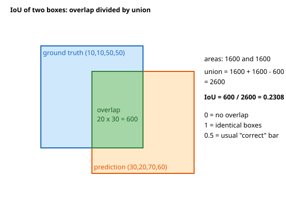
How to read it: blue is the ground truth, orange is the prediction, green is the overlap. The text on the right repeats the arithmetic: overlap 600, union 2600, IoU 0.2308.
Before you run it, predict: if the prediction is the GT shifted right by only 5 pixels, will the IoU be above 0.7? What about a shift of 10 pixels?
import numpy as np
def iou(a, b):
"""boxes are (x1, y1, x2, y2) with x1<x2, y1<y2"""
ix1, iy1 = max(a[0], b[0]), max(a[1], b[1])
ix2, iy2 = min(a[2], b[2]), min(a[3], b[3])
inter = max(0, ix2 - ix1) * max(0, iy2 - iy1)
area = lambda r: (r[2] - r[0]) * (r[3] - r[1])
return inter / (area(a) + area(b) - inter)
gt = (10, 10, 50, 50)
pred = (30, 20, 70, 60)
print("IoU", round(iou(gt, pred), 4))
print("identical", iou(gt, gt), " disjoint", iou(gt, (60, 60, 90, 90)))
print("shifted by 5 px:", round(iou(gt, (15, 10, 55, 50)), 4), " by 10 px:", round(iou(gt, (20, 10, 60, 50)), 4))IoU 0.2308
identical 1.0 disjoint 0.0
shifted by 5 px: 0.7778 by 10 px: 0.6Line by line. ix1, iy1 take the larger of the left and top edges; ix2, iy2 take the smaller of the right and bottom edges; max(0, ...) handles boxes that do not overlap (a negative width would otherwise give a false positive area). With a shift of 5 pixels on a 40-pixel box: overlap 35 × 40 = 1400, union 1600 + 1600 − 1400 = 1800, IoU 0.7778. A shift of 10 pixels gives overlap 30 × 40 = 1200, union 2000, IoU 0.6. So being off by one quarter of the box width still passes the 0.5 bar. IoU is also used for masks (Section 9.4), where "area" means pixel count.
Non-maximum suppression (NMS)
A detector looks at thousands of positions, so it often fires several times on one object. NMS keeps the best box and deletes its near-copies:
- Sort boxes by confidence, highest first.
- Keep the top box. Delete every remaining box whose IoU with it is above a threshold (commonly 0.5).
- Repeat with the next remaining box.
Problem 9.1.2 Five boxes with scores 0.90, 0.80, 0.70, 0.85, 0.60. Box 0 (10,10,50,50), box 1 (12,12,52,52), box 2 (14,8,54,48), box 3 (100,100,140,140), box 4 (30,30,70,70). Run NMS at threshold 0.5.
| Step 1 | Highest score is box 0 (0.90): keep it. |
|---|---|
| Step 2 | IoU of box 0 with box 1: overlap 38 × 38 = 1444, union 1600 + 1600 − 1444 = 1756, IoU 0.822. This is above 0.5, so box 1 is deleted. With box 2: 0.747, deleted. With box 4: overlap 20 × 20 = 400, union 2800, IoU 0.143, kept for now. |
| Step 3 | Next highest remaining: box 3 (0.85), far away, keep it. Then box 4 (0.60), keep it. |
| Answer | Kept boxes: 0, 3, 4. Two duplicates (1 and 2) were removed. |
| Check | The code prints the same IoUs and kept at 0.5: [0, 3, 4]. With threshold 0.9 nothing is removed, because no duplicate overlaps that much. |
| Interpretation | The threshold is a tuning choice. Too low: two real, touching objects (a crowd) are merged into one. Too high: duplicates survive and count as false positives. DETR (Section 9.3) removes the need for NMS. |
def nms(boxes, scores, thr=0.5):
order = list(np.argsort(scores)[::-1]); keep = []
while order:
i = order.pop(0); keep.append(int(i))
order = [j for j in order if iou(boxes[i], boxes[j]) < thr]
return keep
boxes = [(10,10,50,50), (12,12,52,52), (14,8,54,48), (100,100,140,140), (30,30,70,70)]
scores = np.array([0.90, 0.80, 0.70, 0.85, 0.60])
for j in (1, 2, 4): print(f"IoU(box0, box{j}) = {iou(boxes[0], boxes[j]):.3f}")
print("kept at 0.5:", nms(boxes, scores, 0.5))
print("kept at 0.9:", nms(boxes, scores, 0.9))IoU 0.2308
identical 1.0 disjoint 0.0
shifted by 5 px: 0.7778 by 10 px: 0.6
IoU(box0, box1) = 0.822
IoU(box0, box2) = 0.747
IoU(box0, box4) = 0.143
kept at 0.5: [0, 3, 4]
kept at 0.9: [0, 3, 1, 2, 4]Real-world mapping
| Concept | Example value | Where it appears in the job |
|---|---|---|
| IoU threshold | 0.5 (PASCAL), 0.5 to 0.95 (COCO) | Deciding what counts as a correct detection |
| NMS threshold | 0.45 to 0.7 | An inference setting you tune for crowded versus sparse scenes |
| Box format | VOC, COCO, YOLO | Converting labelling-tool exports to training format |
| Confidence threshold | 0.25 to 0.5 | Operating point: fewer false alarms versus fewer misses |
Applications
- Retail: count products on shelves; flag empty slots.
- Manufacturing: locate defects, then measure their size.
- Traffic and smart cities: vehicles and pedestrians counted per lane.
- Healthcare: find nodules in scans for a doctor to review.
- MLOps: monitoring box-size and score distributions in production to detect drift.
(x, y, w, h) with (x1, y1, x2, y2). If IoU of a prediction with itself is not 1.0, or IoU values look absurdly low, check formats first. Also remember y grows downwards, so "top" has the smaller y.Check yourself
- IoU of two identical boxes? Answer: 1.
- Two boxes of area 100 overlap on 50. IoU? Answer:
50 / (100 + 100 − 50) = 0.333. - What does NMS delete? Answer: lower-scoring boxes that overlap a higher-scoring box above the IoU threshold.
9.2 Evaluating Detectors: Precision, Recall, AP and mAP
Words you need
| Word | Plain meaning |
|---|---|
| True positive (TP) | A prediction with the right class and IoU at or above the threshold with a GT box that no other prediction has already claimed |
| False positive (FP) | A prediction that matches nothing (wrong place, wrong class, or a duplicate) |
| False negative (FN) | A real object no prediction found |
| Precision | TP / (TP + FP): of the boxes I drew, how many are right |
| Recall | TP / (TP + FN): of the real objects, how many did I find |
| AP (average precision) | Area under the precision-recall curve for one class |
| mAP | Mean of AP over all classes (and, in COCO, over IoU thresholds too) |
You know precision and recall from the machine-learning document; the new idea is that for detection, "correct" needs the IoU test, and the score ranking turns one operating point into a whole curve.
Procedure
- For one class, sort all predictions in the whole test set by confidence, highest first.
- Walk down the list. Mark each prediction TP or FP using IoU ≥ 0.5 (each GT box can be matched only once).
- After each step, compute cumulative precision
cumTP / (cumTP + cumFP)and recallcumTP / total GT. - Make the precision values non-increasing (replace each by the largest precision to its right: the "envelope"), then add up
Δrecall × precisionover the steps.
Problem 9.2.1 The test set has 4 real cars. The detector gives 6 car predictions, ranked by confidence, judged TP, TP, FP, TP, FP, TP. Compute precision, recall and AP at IoU 0.5.
| Step 1 | After rank 1: TP=1, FP=0: precision 1/1 = 1.0, recall 1/4 = 0.25. Rank 2: TP=2, precision 2/2 = 1.0, recall 0.5. |
|---|---|
| Step 2 | Rank 3 is an FP: TP=2, FP=1, precision 2/3 = 0.667, recall 0.5 (unchanged). Rank 4 TP: TP=3, FP=1, precision 3/4 = 0.75, recall 0.75. |
| Step 3 | Rank 5 FP: precision 3/5 = 0.6, recall 0.75. Rank 6 TP: TP=4, FP=2, precision 4/6 = 0.667, recall 1.0. |
| Step 4 | Envelope (largest precision to the right): 1.0, 1.0, 0.75, 0.75, 0.667, 0.667. |
| Step 5 | AP = sum over recall steps: 0.25 × 1.0 + 0.25 × 1.0 + 0.25 × 0.75 + 0.25 × 0.667 = 0.25 + 0.25 + 0.1875 + 0.1667 = 0.8542. |
| Answer | AP at IoU 0.5 for "car" is 0.854. |
| Check | AP must lie between final precision (0.667) and 1.0. Perfect ranking (all TP first) would give exactly 1.0. The code prints AP@0.5 = 0.8542. |
| Interpretation | The detector finds all four cars, but two wrong boxes with fairly high scores (ranks 3 and 5) pull AP down. Raising the confidence threshold would remove them at the cost of recall. |
Before you run it, predict: if the list were TP, TP, TP, TP, FP, FP, what would AP be?
# 6 detections for class "car", ranked by confidence; 4 real cars in the dataset
tp = np.array([1, 1, 0, 1, 0, 1]) # 1 = matched a real car with IoU >= 0.5 (not already matched)
n_gt = 4
ctp = tp.cumsum(); cfp = (1 - tp).cumsum()
prec = ctp / (ctp + cfp); rec = ctp / n_gt
print("rank ", np.arange(1, 7))
print("precision ", prec.round(3))
print("recall ", rec.round(3))
# AP = area under the precision envelope (all-point interpolation)
mrec = np.concatenate([[0], rec, [1]]); mpre = np.concatenate([[0], prec, [0]])
for i in range(len(mpre) - 2, -1, -1): mpre[i] = max(mpre[i], mpre[i + 1]) # make precision non-increasing
idx = np.where(mrec[1:] != mrec[:-1])[0]
ap = ((mrec[idx + 1] - mrec[idx]) * mpre[idx + 1]).sum()
print("envelope ", mpre[1:-1].round(3))
print("AP@0.5 =", round(float(ap), 4))IoU 0.2308
identical 1.0 disjoint 0.0
shifted by 5 px: 0.7778 by 10 px: 0.6
rank [1 2 3 4 5 6]
precision [1. 1. 0.667 0.75 0.6 0.667]
recall [0.25 0.5 0.5 0.75 0.75 1. ]
envelope [1. 1. 0.75 0.75 0.667 0.667]
AP@0.5 = 0.8542Line by line. cumsum gives running TP and FP counts. We pad with 0 at the start and the end, then the for loop walks from the right and sets each precision to the maximum of itself and everything to its right (the envelope). idx finds the places where recall changes, and the sum multiplies each recall step by the envelope precision there. (The answer to the prediction: with TP, TP, TP, TP, FP, FP recall reaches 1.0 at rank 4 with precision 1.0, so AP = 1.0; the later false positives come too late to matter. Ranking matters, not just counts.)
From AP to mAP
mAP@0.5 (the older PASCAL VOC style) averages AP over classes at IoU 0.5. mAP@[.5:.95] (COCO style, often just "mAP" or "AP") also averages over ten IoU thresholds 0.50, 0.55, ..., 0.95, so it rewards tight boxes. COCO also reports AP for small, medium and large objects, and AP at 0.5 and 0.75 separately. Always check which definition a paper or tool uses before comparing numbers.
Problem 9.2.2 Three classes have AP@0.5 of 0.8542 (car, from above), 0.80 (person), 0.55 (dog). What is mAP@0.5? Then a model has AP over the ten COCO thresholds of 0.80, 0.77, 0.73, 0.68, 0.62, 0.55, 0.46, 0.35, 0.21, 0.07 (made-up numbers for practice). What is mAP@[.5:.95]?
| Formula | mean = sum / count. |
|---|---|
| Step 1 | (0.8542 + 0.80 + 0.55) / 3 = 2.2042 / 3 = 0.7347. |
| Step 2 | Sum of the ten AP values: 0.80 + 0.77 + 0.73 + 0.68 + 0.62 + 0.55 + 0.46 + 0.35 + 0.21 + 0.07 = 5.24; divided by 10 is 0.524. |
| Answer | mAP@0.5 is 0.735. The COCO-style mAP is 0.524. |
| Check | The code below prints mAP@0.5 = 0.7347 and mAP@[.5:.95] = 0.524. |
| Interpretation | The same model gets 0.80 at the loose bar and only 0.07 at the strictest bar: it finds objects but draws them loosely. A COCO mAP of 0.524 is much lower than an mAP@0.5 of 0.80, so never compare the two directly. |
ap_car, ap_person, ap_dog = 0.8542, 0.80, 0.55 # AP@0.5 per class (car = the 0.8542 computed above; the other two are made-up)
print("mAP@0.5 =", round((ap_car + ap_person + ap_dog) / 3, 4))
# COCO style: average AP over IoU thresholds 0.50, 0.55, ..., 0.95 (made-up values that fall as the bar rises)
ap_by_thr = np.array([0.80, 0.77, 0.73, 0.68, 0.62, 0.55, 0.46, 0.35, 0.21, 0.07])
print("thresholds", np.round(np.arange(0.5, 1.0, 0.05), 2))
print("mAP@[.5:.95] =", round(float(ap_by_thr.mean()), 3))IoU 0.2308
identical 1.0 disjoint 0.0
shifted by 5 px: 0.7778 by 10 px: 0.6
mAP@0.5 = 0.7347
thresholds [0.5 0.55 0.6 0.65 0.7 0.75 0.8 0.85 0.9 0.95]
mAP@[.5:.95] = 0.524Real-world mapping
| Concept | Example value | Where it appears in the job |
|---|---|---|
| Precision-recall curve | one curve per class | Choosing a confidence threshold for production |
| mAP@0.5 | 0.735 | Quick comparison of two models on one dataset |
| mAP@[.5:.95] | 0.524 | Papers and leaderboards (COCO) |
| Per-class AP | dog 0.55 | Finding the classes that need more data |
Applications
- Model selection: compare YOLO sizes on your own validation set by mAP and speed.
- Safety systems: pick a threshold that keeps recall above a required level, then report precision.
- Data work: per-class AP and the most confident false positives point to label errors.
- MLOps: track mAP on a fixed golden set for every new model version.
Check yourself
- If a detector draws one extra box on a real object that is already matched, is it TP or FP? Answer: FP (a duplicate).
- Why does mAP@[.5:.95] come out lower than mAP@0.5? Answer: it includes strict IoU thresholds like 0.9 and 0.95 that few boxes pass.
- Does a high-confidence false positive hurt AP more than a low-confidence one? Answer: yes, because it appears early in the ranking and lowers precision at more recall levels.
9.3 Detector Families: R-CNN, SSD, YOLO and DETR
Two-stage detectors: the R-CNN family
- R-CNN (2014): propose about 2,000 regions with an old algorithm (selective search), run a CNN on each crop separately, classify with an SVM and adjust the box. Accurate but extremely slow, because the CNN ran 2,000 times per image.
- Fast R-CNN: run the CNN once on the whole image to get a feature map, then pool the features inside each proposed region (RoI pooling) into a fixed size.
- Faster R-CNN: replace the old proposal algorithm with a small network, the Region Proposal Network (RPN), that scores a set of anchor boxes at each position of the feature map and proposes regions. Detection became end to end and much faster. It remains a strong, accurate baseline.
- Mask R-CNN: Faster R-CNN plus a third branch that predicts a pixel mask inside each box (instance segmentation, Section 9.4), and RoIAlign to avoid rounding errors.
One-stage detectors: SSD, RetinaNet, YOLO
One-stage detectors skip proposals and predict boxes and classes directly from the feature map.
- SSD predicts boxes from several feature-map scales so it can find both small and large objects.
- RetinaNet introduced focal loss: it down-weights the huge number of easy background examples so that training focuses on hard ones. (Remember cross-entropy from the Math PDF; focal loss multiplies it by
(1 − p)^γ.) - YOLO ("You Only Look Once") divides the image into a grid. Each cell is responsible for objects whose centre falls inside it.
Problem 9.3.1 YOLO-style assignment. The image is 448×448 and the grid is 7×7 (each cell is 64 pixels). An object box is (100, 150, 260, 330). Which cell is responsible, and what are its targets?
| Step 1 | Centre: x = (100 + 260)/2 = 180, y = (150 + 330)/2 = 240. Box width 160, height 180. |
|---|---|
| Step 2 | Cell: column = floor(180 / 64) = 2, row = floor(240 / 64) = 3. So cell (row 3, col 2). |
| Step 3 | Position inside the cell: x = 180/64 − 2 = 0.8125, y = 240/64 − 3 = 0.75. Size relative to the image: w = 160/448 = 0.357, h = 180/448 = 0.402. |
| Step 4 | In YOLOv1 each cell outputs B = 2 boxes with 5 numbers each (x, y, w, h, confidence) plus C = 20 class probabilities, so the output is 7 × 7 × (2·5 + 20) = 7 × 7 × 30 = 1470 numbers per image. |
| Answer | Cell (3, 2) must predict the object with targets x = 0.812, y = 0.75, w = 0.357, h = 0.402, confidence 1. All other cells are trained to output confidence 0. |
| Check | The code prints the same cell and values and 1470. |
| Interpretation | One forward pass gives all detections, which is why YOLO runs in real time. The weakness of the original grid design was small, crowded objects (one cell could only predict a couple of objects). |
# YOLO-style grid assignment: 448x448 image, 7x7 grid, one object box
W = H = 448; S = 7; cell = W / S
box = (100, 150, 260, 330) # x1, y1, x2, y2 in pixels
cx, cy = (box[0] + box[2]) / 2, (box[1] + box[3]) / 2
bw, bh = box[2] - box[0], box[3] - box[1]
col, row = int(cx // cell), int(cy // cell)
tx, ty = cx / cell - col, cy / cell - row # centre position inside its cell (0..1)
print("centre", (cx, cy), "-> cell (row, col) =", (row, col))
print("target: x_in_cell", round(tx, 3), "y_in_cell", round(ty, 3), "w", round(bw / W, 3), "h", round(bh / H, 3), "confidence 1")
B, C = 2, 20
print("YOLOv1 output size per image:", S * S * (B * 5 + C))IoU 0.2308
identical 1.0 disjoint 0.0
shifted by 5 px: 0.7778 by 10 px: 0.6
centre (180.0, 240.0) -> cell (row, col) = (3, 2)
target: x_in_cell 0.812 y_in_cell 0.75 w 0.357 h 0.402 confidence 1
YOLOv1 output size per image: 1470Later YOLO versions (v3 onwards, and the widely used YOLOv8 and its successors from the Ultralytics library) added multi-scale prediction (feature pyramids), better backbones and necks, and, in recent versions, anchor-free heads (predict the box relative to a point instead of to a preset anchor shape). Version numbers and names change fast, so check the current documentation. Detectors are also sold in sizes (nano, small, medium, large) trading accuracy for speed.
DETR: detection as a set prediction
DETR (DEtection TRansformer) uses a CNN backbone plus a transformer (Chapter 11). It starts with a fixed number (for example 100) of learned object queries. Each query outputs one box and class, or "no object". There are no anchors and no NMS. The catch: training must decide which prediction answers which real object. DETR does a one-to-one matching (Hungarian algorithm) that minimises total cost, then trains matched predictions on their object and the unmatched ones on "no object".
Problem 9.3.2 Three predictions, two real objects. The cost matrix (lower is better; rows are predictions, columns are real objects) is [[0.2, 0.9], [0.8, 0.1], [0.7, 0.6]]. Find the matching.
| Step 1 | List all ways to assign two different predictions to objects 0 and 1. For example (pred 0 to object 0, pred 1 to object 1): 0.2 + 0.1 = 0.3. |
|---|---|
| Step 2 | Others: (0,2): 0.2 + 0.6 = 0.8; (1,0): 0.8 + 0.9 = 1.7; (1,2): 0.8 + 0.6 = 1.4; (2,0): 0.7 + 0.9 = 1.6; (2,1): 0.7 + 0.1 = 0.8. |
| Answer | The best is prediction 0 for object 0 and prediction 1 for object 1, total cost 0.3. Prediction 2 is trained to say "no object". |
| Check | The code finds the same result by trying all pairs (fine for 3 predictions; the Hungarian algorithm is the efficient way for 100, scipy.optimize.linear_sum_assignment). |
| Interpretation | One-to-one matching teaches the model not to output duplicates, which is why NMS is unnecessary. Original DETR trained slowly and was weak on small objects; later variants (Deformable DETR, RT-DETR and others) fixed much of this. |
from itertools import permutations
# DETR-style one-to-one matching: 3 predictions, 2 real objects (+ 1 "no object")
cost = np.array([[0.2, 0.9], # cost[i][j] = how badly prediction i fits real object j
[0.8, 0.1],
[0.7, 0.6]])
best = min(permutations(range(3), 2), key=lambda p: cost[p[0], 0] + cost[p[1], 1])
total = cost[best[0], 0] + cost[best[1], 1]
print("prediction for object 0:", best[0], "| for object 1:", best[1], "| total cost", round(float(total), 2))
print("left-over prediction -> trained to say 'no object':", ({0, 1, 2} - set(best)).pop())
greedy0 = int(cost[:, 0].argmin()); print("greedy pick for object 0:", greedy0)IoU 0.2308
identical 1.0 disjoint 0.0
shifted by 5 px: 0.7778 by 10 px: 0.6
prediction for object 0: 0 | for object 1: 1 | total cost 0.3
left-over prediction -> trained to say 'no object': 2
greedy pick for object 0: 0Choosing a detector
| Need | Typical choice |
|---|---|
| Real-time video, edge device, good accuracy | One-stage YOLO-family or SSD-type, small size, exported to ONNX or TensorRT (Chapter 14) |
| Highest accuracy, time not critical | Two-stage (Faster R-CNN family) or a large modern detector |
| Fewer hand-tuned parts, end-to-end | DETR variants |
| Both boxes and masks | Mask R-CNN or YOLO segmentation variants |
| Tiny dataset | Start from a pretrained detector and fine-tune (Chapter 7) |
Library code (not run here)
# Ultralytics YOLO: fine-tune a pretrained model on your labelled data (not run here)
from ultralytics import YOLO
model = YOLO("yolov8n.pt") # a small pretrained checkpoint
model.train(data="parts.yaml", epochs=50, imgsz=640) # parts.yaml lists image folders and class names
results = model.predict("test.jpg", conf=0.25) # confidence threshold
# torchvision Faster R-CNN with a pretrained backbone (not run here)
import torchvision
det = torchvision.models.detection.fasterrcnn_resnet50_fpn(weights="DEFAULT")
det.eval() # forward(list_of_image_tensors) returns boxes, labels, scores per imageNot run here. Argument names and default weights differ between library versions; read the current documentation. Labelling tools (CVAT, Label Studio, Chapter 7) export YOLO or COCO format.
Real-world mapping
| Concept | Example value | Where it appears in the job |
|---|---|---|
| Grid cell responsible | cell (3, 2) | Understanding why small crowded objects are hard |
conf=0.25 | confidence threshold | Operating point of a deployed detector |
| 1470 outputs | 7×7×30 | Debugging output shapes and label encoding |
| Hungarian matching | cost matrix | Training DETR and also matching tracked objects between frames |
Applications
- Retail and logistics: YOLO on shelf cameras and parcel belts.
- Autonomous driving and drones: one-stage and DETR-style detectors for vehicles, signs, people.
- Healthcare: two-stage detectors for small lesions where accuracy matters most.
- Sports and media: player and ball detection plus tracking.
- Document AI: detecting layout regions (tables, figures) before reading them.
Check yourself
- What is the main speed difference between R-CNN and Fast R-CNN? Answer: Fast R-CNN runs the CNN once per image instead of once per proposal.
- Why does DETR not need NMS? Answer: one-to-one matching during training teaches each real object to get exactly one prediction.
- In a 7×7 grid on a 448 image, which cell holds an object centred at
(180, 240)? Answer: row 3, column 2.
9.4 Segmentation: Semantic, Instance, Panoptic, U-Net and SAM
Kinds of segmentation
| Type | Question answered | Output | Example |
|---|---|---|---|
| Semantic | What class is each pixel? | One class per pixel; two cars merge into one "car" region | Road, sky, building |
| Instance | Which object does each pixel belong to? | A separate mask per object | Car 1, car 2, person 3 |
| Panoptic | Both: "things" (countable) as instances, "stuff" (sky, road) as classes | Every pixel gets a class and, for things, an instance ID | Full scene understanding |
U-Net: the workhorse for masks
A U-Net is an encoder-decoder shaped like a "U". The encoder (left side) is a CNN that repeatedly halves the image size and doubles the channels, learning "what" is there. The decoder (right side) repeatedly doubles the size again (by upsampling or a transposed convolution) to get back to full resolution, learning "where". Skip connections copy the encoder features at each level and concatenate them onto the decoder features, so fine details lost in downsampling (exact borders) come back. The last layer is a 1×1 convolution with one output channel per class. (Remember the ResNet skip connection from Chapter 6: that adds; U-Net concatenates.)
Problem 9.4.1 Trace the size and channels of a U-Net with a 256×256 input where the encoder channels are 64, 128, 256, 512, 1024.
| Step 1 | Encoder: level 0 is 256×256×64; after each pooling the size halves and the channels double: 128×128×128, 64×64×256, 32×32×512, 16×16×1024 (the bottleneck). |
|---|---|
| Step 2 | Decoder: upsample by 2 to 32×32, concatenate with the encoder's 32×32×512 map: 512 + 512 = 1024 channels, convolve back to 512. Repeat up to 256×256 with 64 + 64 = 128 channels, convolve to 64. |
| Step 3 | Final 1×1 convolution maps 64 channels to the number of classes. |
| Answer | The decoder sizes are 32, 64, 128, 256 with concatenated channels 1024, 512, 256, 128; the output is a 256×256 map, same size as the input. |
| Check | Output size equals input size, which is what segmentation needs. The code prints the same table. |
| Interpretation | The skip connections carry high-resolution edges, which is why U-Net draws sharp boundaries even from few training images. That is why it dominates medical imaging and is the backbone idea in diffusion models too (Chapter 13). |
The upsampling step can be a transposed convolution: each input pixel "paints" a copy of the kernel, scaled by its value, onto a larger output.
Problem 9.4.2 Transposed convolution with kernel [[1, 0.5], [0.5, 0.25]], stride 2, input [[1, 2], [3, 4]].
| Step 1 | Input pixel 1 paints 1 × kernel = [[1, 0.5], [0.5, 0.25]] into the top-left 2×2 block of the 4×4 output. |
|---|---|
| Step 2 | Pixel 2 paints [[2, 1], [1, 0.5]] into the top-right block; pixel 3 paints [[3, 1.5], [1.5, 0.75]] bottom-left; pixel 4 paints [[4, 2], [2, 1]] bottom-right. |
| Answer | A 4×4 map, shown in the output below (for example the first row is 1, 0.5, 2, 1). |
| Check | The sum of the output equals (1+2+3+4) × (1 + 0.5 + 0.5 + 0.25) = 10 × 2.25 = 22.5. Adding the printed numbers gives the same. |
| Interpretation | The learned kernel decides how to fill in the detail. Simple bilinear upsampling plus a normal convolution is a common alternative that avoids chequerboard artefacts. |
# U-Net (original paper style, padded convs): size and channels at each level for a 256x256 input
h, c = 256, 1
chs = [64, 128, 256, 512, 1024]
print("encoder")
for lvl, ch in enumerate(chs):
print(f" level {lvl}: {h}x{h}x{ch}")
if lvl < 4: h //= 2
print("decoder (upsample x2, concat with encoder level, 2 convs)")
for lvl in range(3, -1, -1):
h *= 2; ch = chs[lvl]
print(f" level {lvl}: up to {h}x{h}, concat {ch}+{ch} = {2*ch} channels -> conv -> {ch}")
print("final 1x1 conv -> classes")
# transposed conv 2x2 stride 2 on a 2x2 input: each input value paints a 2x2 block weighted by the kernel
x = np.array([[1., 2.], [3., 4.]]); k = np.array([[1., 0.5], [0.5, 0.25]])
out = np.zeros((4, 4))
for i in range(2):
for j in range(2): out[2*i:2*i+2, 2*j:2*j+2] += x[i, j] * k
print(out)IoU 0.2308
identical 1.0 disjoint 0.0
shifted by 5 px: 0.7778 by 10 px: 0.6
encoder
level 0: 256x256x64
level 1: 128x128x128
level 2: 64x64x256
level 3: 32x32x512
level 4: 16x16x1024
decoder (upsample x2, concat with encoder level, 2 convs)
level 3: up to 32x32, concat 512+512 = 1024 channels -> conv -> 512
level 2: up to 64x64, concat 256+256 = 512 channels -> conv -> 256
level 1: up to 128x128, concat 128+128 = 256 channels -> conv -> 128
level 0: up to 256x256, concat 64+64 = 128 channels -> conv -> 64
final 1x1 conv -> classes
[[1. 0.5 2. 1. ]
[0.5 0.25 1. 0.5 ]
[3. 1.5 4. 2. ]
[1.5 0.75 2. 1. ]]Measuring masks: IoU, Dice and the accuracy trap
For masks, IoU uses pixel counts: IoU = |A ∩ B| / |A ∪ B|. The Dice score is 2|A ∩ B| / (|A| + |B|). They are related (Dice is always at least IoU for the same pair). Pixel accuracy is dangerous: if the object covers 2% of the image, predicting "all background" gets 98%.
Problem 9.4.3 Compare a predicted and true 4×4 mask. Prediction has 5 object pixels, truth has 7, and 4 pixels are in both. Compute IoU and Dice, and the pixel accuracy of the grid below.
| Step 1 | Intersection = 4. Union = 5 + 7 − 4 = 8. |
|---|---|
| Step 2 | IoU = 4 / 8 = 0.5. Dice = 2 × 4 / (5 + 7) = 8 / 12 = 0.6667. |
| Step 3 | Pixel accuracy: 16 pixels; the masks disagree on (5 − 4) + (7 − 4) = 4 pixels, so 12/16 = 0.75. |
| Answer | IoU 0.5, Dice 0.667, pixel accuracy 0.75. |
| Check | Dice = 2·IoU/(1 + IoU) = 1/1.5 = 0.667, as the code confirms. |
| Interpretation | Pixel accuracy (0.75) looks much better than the real overlap (0.5) because most of the grid is background. Report IoU or Dice. Dice is also a common loss function for training on imbalanced masks (1 − Dice). |
pred = np.array([[0,1,1,0],[0,1,1,0],[0,1,0,0],[0,0,0,0]])
gt = np.array([[0,0,1,1],[0,1,1,1],[0,1,1,0],[0,0,0,0]])
inter = (pred & gt).sum(); a, b = pred.sum(), gt.sum(); union = (pred | gt).sum()
print("pred area", a, "gt area", b, "intersection", inter, "union", union)
print("IoU ", round(inter / union, 4))
print("Dice ", round(2 * inter / (a + b), 4))
# pixel accuracy is fooled by background
print("pixel accuracy", (pred == gt).mean())IoU 0.2308
identical 1.0 disjoint 0.0
shifted by 5 px: 0.7778 by 10 px: 0.6
pred area 5 gt area 7 intersection 4 union 8
IoU 0.5
Dice 0.6667
pixel accuracy 0.75Other models you will meet
- DeepLab uses dilated (atrous) convolutions: a 3×3 kernel with gaps between taps sees a wider area without shrinking the map, and a module (ASPP) combines several dilation rates to see multiple scales.
- Mask R-CNN gives instance masks: a box from Faster R-CNN, then a small mask for the object inside the box.
- SAM (Segment Anything, from Meta) is a promptable foundation model. You give a prompt (a click, several points, or a box) and it returns masks. It has a large image encoder (a Vision Transformer), a light prompt encoder and a fast mask decoder, and was trained on a very large dataset of about 1 billion masks on 11 million images. It does not know class names by itself; it outlines "things" you point at. Newer versions add video; check the current release. Typical use: a human clicks, SAM makes the mask, and you use these masks to speed up labelling, or you combine SAM with a detector (the detector gives boxes, SAM turns boxes into masks).
Chapter 8's tools still help: clean predicted masks with closing and opening, drop connected components below a minimum area, and read areas and bounding boxes from them.
Real-world mapping
| Concept | Example value | Where it appears in the job |
|---|---|---|
| Semantic mask | road, car, sky | Driving scenes, satellite land use |
| Instance mask | one per tablet | Counting touching objects |
| U-Net | medical scans, defects | The default small-data segmentation model |
| SAM | box or click prompt | Fast annotation and zero-shot cut-outs |
| Dice loss | 1 − Dice | Training when the object is a tiny part of the image |
Applications
- Healthcare: organ and tumour outlines, cell counting.
- Agriculture and remote sensing: crop fields, flood extent, deforestation.
- Automotive: drivable space and lane segmentation.
- Photo and video apps: background blur and removal.
- GenAI: segmentation masks guide image editing and inpainting (Chapter 13).
Check yourself
- Difference between semantic and instance segmentation? Answer: semantic labels pixels by class only; instance separates each object of the same class.
- What do U-Net skip connections add? Answer: high-resolution detail from the encoder, concatenated into the decoder.
- IoU 0.5 means Dice is? Answer:
2 × 0.5 / 1.5 = 0.667.
9.5 OCR and Other Vision Tasks
The OCR pipeline
- Preprocess: grey, resize, fix skew, remove noise, binarise (all from Chapter 8; for clean scans this still matters, while modern models cope better with photos).
- Detect text regions: lines or words (detection models, or layout analysis).
- Recognise: convert each region to characters. Classic approach: CNN features, then a sequence model (Chapter 10) with a CTC loss (a loss that aligns a long feature sequence to a shorter text without needing character positions).
- Post-process: dictionary or language-model correction, field validation (a date must look like a date), and keep the position for layout.
| Tool | What it is | Typical use |
|---|---|---|
| Tesseract | Classic open-source engine, now with an LSTM recogniser | Clean printed documents, many languages |
| EasyOCR | Python library with deep text detector and recogniser | Quick start, photos, many scripts |
| PaddleOCR | Production-grade toolkit with strong multilingual models | Documents, receipts, Chinese and many other languages |
| TrOCR | Transformer encoder-decoder (image in, text out) | Handwriting and printed lines, fine-tunable |
| Vision-language models | OCR-free reading of a whole page (Chapter 12) | Forms and tables with layout understanding |
For Indian languages, check that the model supports your script; results differ a lot between tools.
Measuring OCR: character and word error rate
Character error rate (CER) is the edit distance (the smallest number of single-character insertions, deletions and substitutions that turns the output into the truth) divided by the length of the true text. Word error rate (WER) does the same on words.
Problem 9.5.1 Truth: INVOICE 2024-0517. OCR output: INV0ICE 2O24-517 (a zero for the letter O, the letter O for a zero, and one digit dropped). Compute CER and WER.
| Step 1 | Compare character by character: O became 0 (1 substitution), 0 became O in 2024 (1 substitution), and one 0 is missing in 0517 (1 deletion). Total edit distance 3. |
|---|---|
| Step 2 | The truth has 17 characters (counting the space and hyphen), so CER = 3 / 17 = 0.1765. |
| Step 3 | Words: truth has 2 words and both are wrong in the output, so WER = 2 / 2 = 1.0. |
| Answer | CER is 17.6%, WER is 100%. |
| Check | The code prints edits 3 CER 0.1765 and WER 1.0. |
| Interpretation | A reader would accept 83% of characters as right, but a search for the invoice number finds nothing: WER is what matters for lookups. For fields like invoice numbers and amounts, validate with rules (checksum, regex, known values) and send low-confidence fields to a human. |
def edit_distance(a, b):
d = list(range(len(b) + 1))
for i, ca in enumerate(a, 1):
prev, d[0] = d[0], i
for j, cb in enumerate(b, 1):
prev, d[j] = d[j], min(d[j] + 1, d[j - 1] + 1, prev + (ca != cb))
return d[-1]
truth = "INVOICE 2024-0517"
ocr = "INV0ICE 2O24-517"
e = edit_distance(truth, ocr)
print("edits", e, "CER", round(e / len(truth), 4))
w_t, w_o = truth.split(), ocr.split()
print("WER", edit_distance(w_t, w_o) / len(w_t))IoU 0.2308
identical 1.0 disjoint 0.0
shifted by 5 px: 0.7778 by 10 px: 0.6
edits 3 CER 0.1765
WER 1.0Library calls (not run here):
import pytesseract, easyocr
from PIL import Image
text = pytesseract.image_to_string(Image.open("scan.png"), lang="eng") # needs the Tesseract program installed
reader = easyocr.Reader(["en"]) # downloads models on first use
result = reader.readtext("photo.jpg") # list of (box, text, confidence)Not run here. Tools need installation and model downloads, and argument details change between versions. Document pipelines for RAG (parsing PDFs and scans into text) are covered in study/genai/.
Face detection and recognition: be careful
Face detection finds faces (boxes). Face recognition decides who it is: a network maps each face to an embedding (a list of numbers, such as 128 or 512) trained so that photos of the same person are close and different people are far. You compare two embeddings by cosine similarity and accept the match if it is above a threshold. Two error types trade off: the false accept rate (FAR), strangers accepted, and the false reject rate (FRR), the right person rejected.
Problem 9.5.2 In a simulation, same-person embeddings have mean cosine similarity about 0.52 to the reference and different people about 0. What happens as we move the threshold from 0.2 to 0.5?
| Step 1 | At 0.2, almost every same-person photo passes (FRR 0.000) but 3.3% of strangers pass too (FAR 0.033). |
|---|---|
| Step 2 | At 0.3 both errors are under 1%. At 0.4 FRR rises to 8.7% with FAR 0. |
| Step 3 | At 0.5, FRR is 41%: nearly half of the genuine matches are rejected. |
| Answer | Raising the threshold lowers false accepts and raises false rejects; here a value near 0.3 balances them. |
| Check | The code prints the four rows; FAR falls and FRR rises monotonically. |
| Interpretation | Choose the threshold by the cost of each error. A phone unlock can allow some false rejects (try again). A security door should keep FAR extremely low. Always measure on data like your real users, because accuracy differs across skin tones, ages and camera conditions. |
rng = np.random.default_rng(0)
def unit(v): return v / np.linalg.norm(v)
person = unit(rng.normal(size=64))
same = [unit(person + 1.6 * unit(rng.normal(size=64))) for _ in range(300)] # other photos of the same person
others = [unit(rng.normal(size=64)) for _ in range(300)] # different people
s_same = np.array([person @ v for v in same]); s_diff = np.array([person @ v for v in others])
print("same-person cosine mean", s_same.mean().round(3), " different-person mean", s_diff.mean().round(3))
for thr in (0.2, 0.3, 0.4, 0.5):
frr = (s_same < thr).mean(); far = (s_diff >= thr).mean()
print(f"threshold {thr}: false reject rate {frr:.3f}, false accept rate {far:.3f}")IoU 0.2308
identical 1.0 disjoint 0.0
shifted by 5 px: 0.7778 by 10 px: 0.6
same-person cosine mean 0.517 different-person mean -0.007
threshold 0.2: false reject rate 0.000, false accept rate 0.033
threshold 0.3: false reject rate 0.007, false accept rate 0.007
threshold 0.4: false reject rate 0.087, false accept rate 0.000
threshold 0.5: false reject rate 0.410, false accept rate 0.000Other tasks, in one table (awareness)
| Task | What it does | Typical approach |
|---|---|---|
| Pose estimation | Finds body joints (keypoints) | Heatmap or keypoint heads (OpenPose style, YOLO pose, RTMPose) |
| Tracking | Keeps the same ID for an object across video frames | Detect each frame, then match boxes between frames by IoU or appearance (Hungarian matching, as in 9.3), for example SORT and ByteTrack |
| Video understanding | Actions, events | 3D CNNs (Chapter 6) or video transformers |
| Depth estimation | Distance per pixel from one image | Networks trained on depth data; foundation models exist |
| 3D vision | Shapes and scenes in 3D | Point clouds, multi-view geometry, neural radiance fields (awareness only) |
Real-world mapping
| Concept | Example value | Where it appears in the job |
|---|---|---|
| CER and WER | 17.6% and 100% | Choosing and monitoring an OCR engine |
| Field validation | regex, checksum | Making OCR safe for invoices and forms |
| Embedding threshold | cosine 0.3 | Face or product matching trade-offs |
| IoU tracking | match box to previous frame | Counting people or vehicles in video |
Applications
- Finance and operations: read invoices, cheques, IDs, number plates (with consent and law in mind).
- Logistics: read labels on parcels.
- Accessibility: read text aloud for visually impaired users.
- Public sector: digitise scanned records, including Indian-language archives.
- GenAI: OCR feeds document search and question answering (see
study/genai/).
0 and O, 1 and l, 5 and S. Use validation rules, and measure CER and WER on a sample of your documents, not the vendor's demo.Check yourself
- CER with 2 edits on a 10-character truth? Answer:
2 / 10 = 0.2. - Which is riskier ethically: face detection or recognition? Answer: recognition, because it identifies people.
- What does raising the face-match threshold do? Answer: fewer false accepts, more false rejects.
Chapter recap
- Detection gives a box, a class and a score per object; segmentation gives a class (or an ID) per pixel; OCR turns text in an image into characters.
- IoU is overlap divided by union; 0.5 is the usual "correct" bar. Our example boxes had IoU
600/2600 = 0.2308. - NMS keeps the highest-scoring box and removes overlapping duplicates; the threshold is a tuning choice.
- AP is the area under the precision-recall curve (0.8542 in our example); mAP averages over classes, and COCO mAP also averages over IoU 0.5 to 0.95. Always say which one you report.
- R-CNN family: accurate, two-stage; YOLO and SSD: one pass, fast; DETR: transformer with object queries and one-to-one matching, no NMS.
- U-Net: encoder-decoder with concatenating skip connections; SAM: promptable segmentation with a ViT encoder; semantic, instance and panoptic differ in whether objects are separated.
- Evaluate masks with IoU or Dice, not pixel accuracy.
- OCR quality is measured by CER and WER; validate fields and keep humans in the loop.
- Face recognition trades FAR against FRR by threshold, and needs consent, bias testing and legal care.
| Formula / command / pattern | Meaning |
|---|---|
IoU = inter / (A + B − inter) | box or mask overlap |
precision = TP/(TP+FP), recall = TP/(TP+FN) | detection quality at one threshold |
AP = Σ Δrecall × envelope precision | area under the PR curve |
Dice = 2·inter / (A + B) | mask overlap, also a loss |
YOLO cell = (floor(cx/cell), floor(cy/cell)) | which cell predicts the object |
CER = edit_distance / len(truth) | OCR error rate |
YOLO("yolov8n.pt").train(data=...) | Ultralytics fine-tune (not run here) |
Practice set
1. (easy) IoU of (0, 0, 10, 10) and (5, 0, 15, 10). Answer: overlap 5 × 10 = 50, union 100 + 100 − 50 = 150, IoU 0.333.
2. (easy) Precision and recall: 8 predictions, 6 correct, 10 real objects. Answer: precision 6/8 = 0.75, recall 6/10 = 0.6.
3. (easy) Is (x, y, w, h) = (10, 20, 30, 40) the same box as (x1, y1, x2, y2) = (10, 20, 30, 40)? Answer: no. The first ends at (40, 60); the second ends at (30, 40).
4. (medium) Compute AP for judged predictions TP, FP, TP with 2 real objects. Answer: precision 1.0, 0.5, 0.667; recall 0.5, 0.5, 1.0. Envelope 1.0, 0.667, 0.667. AP = 0.5 × 1.0 + 0.5 × 0.667 = 0.8333.
5. (medium) A 64×64 mask has a 4×4 object. A model predicts all background. Pixel accuracy and IoU? Answer: pixel accuracy (4096 − 16)/4096 = 0.996; IoU 0 (no overlap with the object).
6. (medium) What is the output of iou((0,0,2,2), (2,0,4,2))? Answer: 0.0: the boxes only touch at an edge, so the overlap width min(2,4) − max(0,2) = 0.
7. (medium) Find the bug: inter = (ix2 - ix1) * (iy2 - iy1) with no max(0, ...). Answer: for disjoint boxes both factors can be negative and their product positive, giving a false overlap (for example (−10) × (−10) = 100). Clip each side at 0.
8. (medium) Size check: a U-Net bottleneck is 16×16×1024 after 4 poolings. The input size? Answer: 16 × 2⁴ = 256, so the input was 256×256.
9. (hard) A detector has AP@0.5 = 0.82 but COCO mAP = 0.41. What does that tell you? Answer: it finds objects but its boxes are loose: AP drops at strict IoU thresholds. Improve localisation (better box regression loss, higher input resolution, more precise labels).
10. (hard) OCR truth AB 12, output A8 1Z. Compute CER and WER. Answer: the characters B to 8 and 2 to Z differ: 2 substitutions over 5 characters gives CER 0.4. Both words are wrong, WER 1.0.
11. (interview) "Explain mAP to a non-technical manager." Answer: "We rank the detector's guesses from most to least confident. For each class we measure how many correct objects we have found against how many wrong guesses we made along the way, and average that over classes. It is a single score from 0 to 1 that rewards finding objects without crying wolf. COCO mAP also requires tighter boxes."
12. (interview/scenario) "You must count tablets on a tray from a phone photo. They sometimes touch. Which approach and why?" Answer: if tablets are well separated, classical thresholding plus connected components (Chapter 8) is enough. If they touch, use instance segmentation (Mask R-CNN or a YOLO segmentation model fine-tuned from a pretrained checkpoint, Chapter 7) or a detector with a small box per tablet, or watershed to split touching blobs. Evaluate with mAP or count error on 50 labelled photos, choose the confidence threshold by precision and recall, and report the miscount rate to the user.
Prompt pack
You are my patient, practical professor. I am a working professional moving into data roles, and English is my second language. Teach me "IoU and non-maximum suppression" for object detection. Use small boxes with real coordinates, walk me through intersection, union and IoU step by step, and then run NMS on five boxes with scores. Ask me to compute each IoU before you show it, and finish with 3 check questions.
You are my patient, practical professor. I am a working professional learning computer vision, and English is not my first language. Explain "precision, recall, AP and mAP for object detection" using a ranked list of 8 predictions that I can compute by hand. Show the precision-recall table, the envelope step and the final AP. Then explain the difference between mAP at IoU 0.5 and COCO mAP at IoU 0.5 to 0.95. Quiz me on each step before moving on.
You are my patient, practical professor. I am a working professional moving into data roles, and English is my second language. Compare "R-CNN family, SSD, YOLO and DETR" for object detection. For each give the main idea in two sentences, one strength, one weakness, and one number I can verify (for example the YOLOv1 output size 7 by 7 by 30). Then give me a decision table for choosing a detector and 5 scenario questions, one at a time.
You are my patient, practical professor. I am a working professional moving into data roles, with English as my second language. Teach me "image segmentation": semantic versus instance versus panoptic, U-Net with skip connections, Dice and IoU for masks, and what SAM does. Use a 4 by 4 mask example with real numbers. Then review my segmentation or detection evaluation code for mistakes such as pixel accuracy on imbalanced masks or box format errors. My code: [PASTE HERE]
You are my patient, practical professor. I am a working professional preparing for computer vision interviews, and English is my second language. Run a mock interview on "object detection, segmentation and OCR": IoU, NMS, mAP, YOLO versus DETR, U-Net, SAM, CER and WER, and the ethics of face recognition. Ask 8 questions one at a time, grade each out of 10, give the ideal short answer, then ask a harder follow-up.
Much real data comes in order: daily orders in a shop, temperature readings every hour, the words of a sentence, the sound of a voice. The meaning of one item depends on what came before it. A normal network (Chapter 1) sees a fixed-size input and has no memory. Recurrent neural networks (RNNs) add a memory that is updated one item at a time. This chapter builds an RNN cell by hand with real numbers, trains one in NumPy with a verified gradient (backpropagation through time), shows exactly why plain RNNs forget, and then opens up the LSTM and GRU gates that fix this. We then meet seq2seq (translate one sequence into another), teacher forcing, beam search and attention, and finish with the reasons transformers took over. You will be able to explain each model on a whiteboard and compute its steps. We build on Chapter 2 (backpropagation and gradient checking), Chapter 4 (vanishing and exploding gradients, clipping) and Chapter 6 (1D convolutions as an alternative for sequences). Transformers themselves are the next chapter, and language-model usage is in study/genai/.
import numpy as np at the top; some listings leave it out to save space). The few PyTorch lines are marked "not run here". Our cells use one or two hidden units so you can check every step on paper.10.1 Sequences and the Recurrent Neural Network
Words you need
| Word | Plain meaning |
|---|---|
| Sequence | An ordered list of items: x₁, x₂, ..., x_T |
| Time step | One position in the sequence (it does not have to be time: it can be a word position) |
Hidden state hₜ | The memory vector after reading item t |
| Cell | The small function that turns (xₜ, hₜ₋₁) into hₜ |
| Unrolling | Drawing the loop as a chain of copies, one per step |
| BPTT | Backpropagation through time: ordinary backpropagation on the unrolled chain |
The recurrent update
hₜ = tanh(Wx · xₜ + Wh · hₜ₋₁ + b) h₀ = 0Wx turns the new input into the hidden space, Wh turns the old memory into the hidden space, b is a bias, and tanh squashes values into −1 to 1 (Chapter 1). The same Wx, Wh, b are used at every step: that is weight sharing over time, just as a CNN shares a kernel over space (Chapter 6). The number of parameters does not depend on the sequence length.
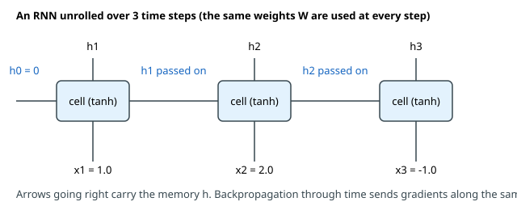
How to read it: each blue box is the same cell. Inputs x₁, x₂, x₃ enter from below. The arrows going right carry the hidden state to the next step. Each step also produces hₜ upwards, which can be used for an output. For a sentence-level answer (positive or negative review) you use only the last h. For a tagging task you use every hₜ.
Problem 10.1.1 An RNN has 1 input and 2 hidden units. Wx = [0.5, −0.3]ᵀ, Wh = [[0.1, 0.4], [0.2, −0.1]], b = [0, 0.1]. Read the sequence 1.0, 2.0, −1.0.
| Formula | hₜ = tanh(Wx·xₜ + Wh·hₜ₋₁ + b), h₀ = [0, 0]. |
|---|---|
| Step 1 (t = 1, x = 1.0) | Wh·h₀ = [0, 0]. First unit: 0.5 × 1.0 + 0 + 0 = 0.5. Second unit: −0.3 × 1.0 + 0 + 0.1 = −0.2. Apply tanh: h₁ = [tanh(0.5), tanh(−0.2)] = [0.4621, −0.1974]. |
| Step 2 (t = 2, x = 2.0) | Wh·h₁: first 0.1 × 0.4621 + 0.4 × (−0.1974) = 0.04621 − 0.07896 = −0.03275; second 0.2 × 0.4621 − 0.1 × (−0.1974) = 0.09242 + 0.01974 = 0.11216. Add Wx·x: first 0.5 × 2.0 = 1.0, so a₁ = 1.0 − 0.03275 = 0.96725; second −0.3 × 2.0 + 0.11216 + 0.1 = −0.38784. Then h₂ = [tanh(0.96725), tanh(−0.38784)] = [0.7475, −0.3695]. |
| Step 3 (t = 3, x = −1.0) | a = [−0.573, 0.5864], so h₃ = [−0.5176, 0.5273]. |
| Answer | The memory after the whole sequence is h₃ = [−0.5176, 0.5273]. |
| Check | The code below prints the same a and h at each step. Also, all values stay between −1 and 1 because of tanh. |
| Interpretation | The last memory depends on all three inputs. The third input (−1.0) pushed the first unit negative even though the first two inputs pushed it up: the cell mixes the new input with what it remembered. The order matters: reading −1.0, 1.0, 2.0 would give a different h₃. |
Before you run it, predict: will the sign of h₃[0] match the sign of the last input?
import numpy as np
# A tiny RNN: 1 input number, 2 hidden numbers. h_t = tanh(Wx*x_t + Wh@h_{t-1} + b)
Wx = np.array([[0.5], [-0.3]]) # shape (2,1)
Wh = np.array([[0.1, 0.4], [0.2, -0.1]]) # shape (2,2)
b = np.array([0.0, 0.1])
xs = [1.0, 2.0, -1.0] # a sequence of 3 inputs
h = np.zeros(2)
for t, x in enumerate(xs, 1):
a = Wx[:, 0] * x + Wh @ h + b # pre-activation
h = np.tanh(a)
print(f"t={t} x={x:5.1f} a={a.round(4)} h={h.round(4)}")t=1 x= 1.0 a=[ 0.5 -0.2] h=[ 0.4621 -0.1974]
t=2 x= 2.0 a=[ 0.9673 -0.3878] h=[ 0.7475 -0.3695]
t=3 x= -1.0 a=[-0.573 0.5864] h=[-0.5176 0.5273]Line by line. h = np.zeros(2) is the empty memory. Inside the loop, Wx[:, 0] * x is the input's contribution, Wh @ h is the old memory's contribution, and np.tanh squashes. The same variables Wx, Wh, b are reused each step. (Answer to the prediction: yes here, the sign is negative like the last input, but with a longer, stronger earlier history it might not be.)
Turning a series into training samples
For forecasting you slide a window over the series: the last T values are the input, the next value is the label. Shapes matter: sequence layers in PyTorch expect (batch, time, features) when batch_first=True.
series = np.array([10, 12, 13, 15, 14, 16, 18, 17, 19, 21.]) # e.g. daily orders in a small shop
T = 4 # look at 4 days, predict day 5
X = np.array([series[i:i+T] for i in range(len(series) - T)]) # shape (N, T)
y = series[T:]
print("X shape", X.shape, "y shape", y.shape)
print(X[0], "->", y[0]); print(X[1], "->", y[1]); print(X[-1], "->", y[-1])
print("model input shape (batch, time, features):", X[:, :, None].shape)X shape (6, 4) y shape (6,)
[10. 12. 13. 15.] -> 14.0
[12. 13. 15. 14.] -> 16.0
[16. 18. 17. 19.] -> 21.0
model input shape (batch, time, features): (6, 4, 1)Ten values and a window of 4 give 10 − 4 = 6 samples. Each input has shape (4,); adding a feature axis makes (6, 4, 1): 6 samples, 4 time steps, 1 feature (orders per day). With more measurements per step (orders and price) the last number would be 2. Important: split train and test by time (train on the past, test on the future), never randomly, or the model peeks at the future.
Backpropagation through time and why RNNs forget
BPTT applies the chain rule (see the learner's Math PDF, the backpropagation pillar) along the unrolled chain. The gradient reaching step t − 1 from step t is multiplied by the factor diag(1 − hₜ²) · Wh. The gradient from the last step back to the first is a product of T such factors. A product of many numbers below 1 goes to zero (vanishing gradient); a product of many numbers above 1 blows up (exploding gradient). This is the same disease you met in Chapter 4, but here the "depth" is the sequence length, so it hits RNNs hard.
Problem 10.1.2 Measure how strongly the first memory h₀ still influences h_T for a 16-unit RNN whose Wh has all singular values equal to scale (a rotation times scale).
| Formula | ∂h_T/∂h₀ = Π diag(1 − hₜ²) · Wh; we report its largest singular value (the matrix 2-norm). |
|---|---|
| Step 1 | If the derivative of tanh were exactly 1, the norm after T steps would be scaleᵀ: for 0.9 and 50 steps 0.9⁵⁰ = 0.0052. |
| Step 2 | tanh' is at most 1 and usually smaller, so the real value is even smaller. The code multiplies the true Jacobians. |
| Answer | For scale = 0.9 the influence shrinks to 4.3e-03 after 50 steps and 2.2e-05 after 100. For scale = 1.5 it grows to 162 and 2964. Even at scale = 1.0 it falls to 0.26, because tanh squashes. |
| Check | The 0.9⁵⁰ = 0.0052 estimate is close to the measured 4.3e-03. |
| Interpretation | A plain RNN cannot learn that "the word 50 steps ago decides the answer", because the learning signal from step 50 is about 0.004 of its original size (or enormous). Exploding gradients are repaired with gradient clipping (below). Vanishing gradients are not: this is why LSTM and GRU were invented (Section 10.2). |
# How much does the first input still influence the last hidden state? Measure |d h_T / d h_0|
rng = np.random.default_rng(0)
def grad_norm(scale, T, n=16):
Q, _ = np.linalg.qr(rng.normal(size=(n, n)))
Wh = Q * scale # every singular value equals `scale`
h = rng.normal(size=n) * 0.5; J = np.eye(n)
for t in range(T):
a = Wh @ h; h = np.tanh(a)
J = np.diag(1 - h**2) @ Wh @ J # chain rule: dh_t/dh_0 = diag(1-h^2) Wh dh_{t-1}/dh_0
return np.linalg.norm(J, 2)
print("steps scale 0.9 scale 1.0 scale 1.5")
for T in (1, 5, 10, 20, 50, 100):
print(f"{T:5d} " + " ".join(f"{grad_norm(s, T):12.3e}" for s in (0.9, 1.0, 1.5)))steps scale 0.9 scale 1.0 scale 1.5
1 8.992e-01 9.990e-01 1.500e+00
5 4.809e-01 7.872e-01 3.310e+00
10 2.991e-01 6.636e-01 5.795e+00
20 9.257e-02 4.845e-01 1.173e+01
50 4.308e-03 2.762e-01 1.619e+02
100 2.183e-05 2.630e-01 2.964e+03Train an RNN in NumPy, with a gradient check
We train a 6-unit RNN to read 8 random numbers and say whether their sum is positive. Code highlights: the forward loop, a backward loop that walks from the last step to the first (dh = Wh.T @ da hands the gradient to the previous step), a numerical gradient check as in Chapter 2, and gradient clipping: if the gradient norm exceeds 1, scale it down to 1.
Before you run it, predict: will the gradient check pass (error below 1e-6)? And will the accuracy reach 100%?
# Train a small RNN (hidden 6) to say whether the sum of 8 numbers is positive. Backprop through time + gradient check.
rng = np.random.default_rng(0)
H, T = 6, 8
P = {"Wx": rng.normal(0, 0.5, (H, 1)), "Wh": rng.normal(0, 0.5, (H, H)) / np.sqrt(H), "b": np.zeros(H),
"Wo": rng.normal(0, 0.5, (1, H)), "bo": np.zeros(1)}
sig = lambda a: 1 / (1 + np.exp(-a))
def forward(P, x): # x: (T,)
hs = [np.zeros(H)]
for t in range(T): hs.append(np.tanh(P["Wx"][:, 0] * x[t] + P["Wh"] @ hs[-1] + P["b"]))
return hs, sig(P["Wo"] @ hs[-1] + P["bo"])[0]
def loss_grad(P, x, y):
hs, p = forward(P, x)
loss = -(y * np.log(p) + (1 - y) * np.log(1 - p))
g = {k: np.zeros_like(v) for k, v in P.items()}
d = p - y # dL/d(output score) for sigmoid + cross-entropy
g["Wo"] += d * hs[-1][None, :]; g["bo"] += d
dh = d * P["Wo"][0]
for t in range(T, 0, -1): # go backwards through time
da = dh * (1 - hs[t] ** 2)
g["Wx"][:, 0] += da * x[t - 1]; g["Wh"] += np.outer(da, hs[t - 1]); g["b"] += da
dh = P["Wh"].T @ da # pass the gradient to the previous step
return loss, g
# gradient check on one example
x0 = rng.normal(size=T); y0 = float(x0.sum() > 0)
_, g = loss_grad(P, x0, y0); worst = 0
for k in P:
for idx in np.ndindex(*P[k].shape):
old = P[k][idx]; P[k][idx] = old + 1e-6; lp = loss_grad(P, x0, y0)[0]
P[k][idx] = old - 1e-6; lm = loss_grad(P, x0, y0)[0]; P[k][idx] = old
num = (lp - lm) / 2e-6; worst = max(worst, abs(num - g[k][idx]) / (abs(num) + abs(g[k][idx]) + 1e-12))
print("gradient check, worst relative error:", f"{worst:.2e}")
X = rng.normal(size=(600, T)); Y = (X.sum(1) > 0).astype(float)
Xte = rng.normal(size=(300, T)); Yte = (Xte.sum(1) > 0).astype(float)
acc = lambda X, Y: np.mean([(forward(P, x)[1] > 0.5) == y for x, y in zip(X, Y)])
print("before training: test accuracy", round(float(acc(Xte, Yte)), 3))
lr = 0.02
def clip(g, m=1.0): # gradient clipping by global norm
n = np.sqrt(sum((v ** 2).sum() for v in g.values()))
return g if n <= m else {k: v * m / n for k, v in g.items()}
for epoch in range(1, 31):
tot = 0
for i in rng.permutation(len(X)):
l, g = loss_grad(P, X[i], Y[i]); g = clip(g); tot += l
for k in P: P[k] -= lr * g[k]
if epoch in (1, 5, 10, 20, 30): print(f"epoch {epoch:2d} mean loss {tot/len(X):.4f} test accuracy {acc(Xte, Yte):.3f}")gradient check, worst relative error: 2.86e-08
before training: test accuracy 0.737
epoch 1 mean loss 0.4434 test accuracy 0.870
epoch 5 mean loss 0.3024 test accuracy 0.907
epoch 10 mean loss 0.2548 test accuracy 0.933
epoch 20 mean loss 0.2187 test accuracy 0.940
epoch 30 mean loss 0.2075 test accuracy 0.937Reading the result. The worst relative error of 2.86e-08 between our analytic BPTT gradient and the numerical gradient means the backward code is correct for all parameters. Test accuracy rises from 0.737 to about 0.94. It does not reach 100% because sums close to zero are genuinely hard to call (a sum of 0.05 versus −0.05 needs very precise arithmetic from a squashing network). Also note that the accuracy before training was already 0.737 because the random hidden units still respond to large positive and negative inputs; "before training" accuracy is not zero knowledge. Gradient clipping (clip) kept the updates stable. In my first attempt, with a larger learning rate (0.1) and no clipping, accuracy bounced between 0.5 and 0.77 and never settled. For long sequences, clipping is standard.
Real-world mapping
| Concept | Example value | Where it appears in the job |
|---|---|---|
Hidden state h | a vector of 64 to 512 numbers | The "memory" passed forward, also used as a summary of the sequence |
Window shape (N, T, 1) | (6, 4, 1) | Preparing time-series data (demand, sensors, prices) |
| Time-ordered split | train on days 1 to 300, test on 301 to 365 | Avoiding leakage in forecasting |
| Gradient clipping at 1.0 | clip_grad_norm_(params, 1.0) | A standard line in recurrent and transformer training code (not run here) |
Applications
- Data Science / forecasting: hourly demand, energy use, sensor readings, weather readings.
- Speech: frames of a spectrogram in, characters out (with CTC; see Chapter 9 for the loss idea).
- Older NLP: tagging, sentiment, language modelling (before 2017).
- Healthcare: patient vital-sign sequences, ECG signals.
- Machine Learning in general: a baseline for any ordered data; also 1D CNNs (Chapter 6) and gradient-boosted models on lag features often compete well.
(batch, features, time) to a layer that expects (batch, time, features); the code runs and gives nonsense.Check yourself
- How many parameters does the RNN cell above have? Answer:
Wx2 +Wh4 +b2 = 8 (they do not depend on the sequence length). - Why does
scale = 0.9make the gradient vanish? Answer: it is multiplied by about 0.9 at each step, and0.9ⁿgoes to zero for largen. - What does gradient clipping fix, vanishing or exploding gradients? Answer: exploding only.
10.2 LSTM, GRU, Bidirectional and Stacked RNNs
c) running through time. At each step it makes three decisions: how much of the belt's old content to keep (forget gate), how much of the new information to put on the belt (input gate), and how much of the belt to show to the outside (output gate). Because the belt is mostly copied forward, the gradient can travel back along it without shrinking. It is the same idea as the residual connection in Chapter 6, applied across time.The LSTM cell
For input xₜ, previous hidden hₜ₋₁ and previous cell cₜ₋₁:
f = σ(Wf·[x, h] + bf) forget gate (0 = erase, 1 = keep)
i = σ(Wi·[x, h] + bi) input gate (0 = ignore new info, 1 = write it)
o = σ(Wo·[x, h] + bo) output gate (how much memory to reveal)
g = tanh(Wg·[x, h] + bg) candidate (the new content, between -1 and 1)
c = f ⊙ cₜ₋₁ + i ⊙ g new cell state (⊙ means element-wise multiply)
h = o ⊙ tanh(c) new hidden stateσ is the sigmoid (output between 0 and 1: it acts like a dimmer switch). [x, h] means the two vectors joined into one.
Problem 10.2.1 One LSTM unit with one input. Weights (on x, on h, bias): forget (0.6, 0.4, 0.5), input (0.3, 0.2, 0.0), output (0.5, 0.1, 0.0), candidate (0.7, 0.1, −0.2). Take x = 1.0, hₜ₋₁ = 0.5, cₜ₋₁ = 0.8. Compute c and h.
| Step 1 (pre-activations) | forget 0.6·1 + 0.4·0.5 + 0.5 = 1.3; input 0.3 + 0.1 + 0 = 0.4; output 0.5 + 0.05 + 0 = 0.55; candidate 0.7 + 0.05 − 0.2 = 0.55. |
|---|---|
| Step 2 (gates) | f = σ(1.3) = 0.7858, i = σ(0.4) = 0.5987, o = σ(0.55) = 0.6341, g = tanh(0.55) = 0.5005. |
| Step 3 (cell) | c = 0.7858 × 0.8 + 0.5987 × 0.5005 = 0.6286 + 0.2997 = 0.9283. |
| Step 4 (hidden) | h = 0.6341 × tanh(0.9283) = 0.6341 × 0.7298 = 0.4628. |
| Answer | The new cell state is 0.9283 and the new hidden state is 0.4628. |
| Check | The code prints the same gate values. Sanity checks: all gates are between 0 and 1, g between −1 and 1, and |h| < |c| is typical because o < 1 and tanh shrinks. |
| Interpretation | The forget gate (0.79) kept 79% of the old memory (0.8 became 0.63), and the input gate let in 60% of the candidate (0.50 became 0.30). The memory grew from 0.8 to 0.93 because the new information was positive and nearly as large as what was kept. The output gate then showed 63% of tanh(c) to the next layer. |
sig = lambda a: 1 / (1 + np.exp(-a))
# One LSTM unit with one input number. Each gate: weight on x, weight on h_prev, bias.
W = {"f": (0.6, 0.4, 0.5), "i": (0.3, 0.2, 0.0), "o": (0.5, 0.1, 0.0), "g": (0.7, 0.1, -0.2)}
x, h_prev, c_prev = 1.0, 0.5, 0.8
pre = {k: wx * x + wh * h_prev + b for k, (wx, wh, b) in W.items()}
f, i, o = sig(pre["f"]), sig(pre["i"]), sig(pre["o"]); g = np.tanh(pre["g"])
c = f * c_prev + i * g # forget part of the old memory, add part of the new candidate
h = o * np.tanh(c) # the output is a filtered view of the memory
for k, v in pre.items(): print(f"pre-activation {k}: {v:.3f}")
print(f"forget f={f:.4f} input i={i:.4f} output o={o:.4f} candidate g={g:.4f}")
print(f"new cell c = {f:.4f}*{c_prev} + {i:.4f}*{g:.4f} = {c:.4f}")
print(f"new hidden h = {o:.4f} * tanh({c:.4f}) = {h:.4f}")pre-activation f: 1.300
pre-activation i: 0.400
pre-activation o: 0.550
pre-activation g: 0.550
forget f=0.7858 input i=0.5987 output o=0.6341 candidate g=0.5005
new cell c = 0.7858*0.8 + 0.5987*0.5005 = 0.9283
new hidden h = 0.6341 * tanh(0.9283) = 0.4628Why this fixes the vanishing gradient. Look at the cell equation: c = f ⊙ cₜ₋₁ + i ⊙ g. The derivative of cₜ with respect to cₜ₋₁ along this path is just f (the forget gate), not a weight matrix times a squashing derivative. (The gates also depend on hₜ₋₁, which adds smaller side paths; the cell path is the dominant one.) So the gradient along the cell path over T steps is the product of the forget gates. If the network learns to set f close to 1 for information it wants to remember, that product stays large.
Problem 10.2.2 Compare the surviving gradient along the cell path for different forget gates.
| Formula | ∂c_T/∂c₀ = f^T (if the gate is constant). |
|---|---|
| Compute | For f = 0.95: 0.95¹⁰ = 0.5987, 0.95⁵⁰ = 0.0769, 0.95¹⁰⁰ = 0.0059. For f = 0.99: 0.99¹⁰⁰ = 0.366. For f = 0.5: 0.5⁵⁰ = 8.9 × 10⁻¹⁶. |
| Answer | With f = 0.99, over 100 steps 37% of the learning signal survives; with f = 0.5 essentially none. |
| Check | The code prints these values. |
| Interpretation | The LSTM can remember for a very long time, but it must learn to keep f near 1, and it is not guaranteed. A common trick is to initialise the forget-gate bias to about 1 so training starts with f ≈ 0.73 instead of 0.5. |
Compare with the plain RNN table of 10.1: there, a scale of 0.9 gave 4.3e-03 after 50 steps; a forget gate of 0.9 gives 5.2e-03, nearly the same. The difference is that the LSTM can learn 0.99 for what matters and 0.1 for what does not, separately for each unit, while the RNN has one fixed matrix.
# LSTM memory path: dc_T/dc_0 is the product of the forget gates along the way
for f in (0.5, 0.9, 0.95, 0.99):
print(f"forget gate {f}: after 10 steps {f**10:.4f} after 50 steps {f**50:.3e} after 100 steps {f**100:.3e}")
# Parameter counts: n_gates * (hidden*(input+hidden) + hidden)
d, h = 10, 20
for name, gates in (("plain RNN", 1), ("GRU", 3), ("LSTM", 4)):
print(f"{name:9s} input {d}, hidden {h}: {gates * (h * (d + h) + h)} parameters")
print("bidirectional LSTM:", 2 * 4 * (h * (d + h) + h), " 2-layer LSTM (layer 2 input is h):", 4 * (h * (d + h) + h) + 4 * (h * (h + h) + h))forget gate 0.5: after 10 steps 0.0010 after 50 steps 8.882e-16 after 100 steps 7.889e-31
forget gate 0.9: after 10 steps 0.3487 after 50 steps 5.154e-03 after 100 steps 2.656e-05
forget gate 0.95: after 10 steps 0.5987 after 50 steps 7.694e-02 after 100 steps 5.921e-03
forget gate 0.99: after 10 steps 0.9044 after 50 steps 6.050e-01 after 100 steps 3.660e-01
plain RNN input 10, hidden 20: 620 parameters
GRU input 10, hidden 20: 1860 parameters
LSTM input 10, hidden 20: 2480 parameters
bidirectional LSTM: 4960 2-layer LSTM (layer 2 input is h): 5760The GRU: a lighter alternative
The gated recurrent unit (GRU) merges the cell and hidden state into one and uses two gates:
z = σ(Wz·[x, h] + bz) update gate: how much old memory to keep
r = σ(Wr·[x, h] + br) reset gate: how much old memory to use when forming the candidate
n = tanh(Wn·[x, r ⊙ h] + bn) candidate
h = (1 − z) ⊙ n + z ⊙ hₜ₋₁ blendProblem 10.2.3 One GRU unit with weights (on x, on h, bias): update (0.4, 0.3, 0), reset (0.5, 0.2, 0.1), candidate (0.8, 0.6, 0). Take x = 1.0, hₜ₋₁ = 0.5.
| Step 1 | z = σ(0.4 + 0.15) = σ(0.55) = 0.6341. r = σ(0.5 + 0.1 + 0.1) = σ(0.7) = 0.6682. |
|---|---|
| Step 2 | Candidate uses the reset memory r·h = 0.6682 × 0.5 = 0.3341: n = tanh(0.8 + 0.6 × 0.3341) = tanh(1.0005) = 0.7618. |
| Step 3 | h = (1 − 0.6341) × 0.7618 + 0.6341 × 0.5 = 0.2787 + 0.3171 = 0.5958. |
| Answer | The new hidden state is 0.5958. |
| Check | The new h lies between the old memory (0.5) and the candidate (0.7618), as a blend must. The code prints 0.5958. |
| Interpretation | The update gate (0.63) decided to keep 63% of the old memory. If z were 1 the cell would copy its memory unchanged, the same "conveyor belt" idea as the LSTM with fewer parts. |
sig = lambda a: 1 / (1 + np.exp(-a))
# One GRU unit, same style: (weight on x, weight on h_prev, bias)
W = {"z": (0.4, 0.3, 0.0), "r": (0.5, 0.2, 0.1), "n": (0.8, 0.6, 0.0)}
x, h_prev = 1.0, 0.5
z = sig(W["z"][0] * x + W["z"][1] * h_prev + W["z"][2]) # update gate
r = sig(W["r"][0] * x + W["r"][1] * h_prev + W["r"][2]) # reset gate
n = np.tanh(W["n"][0] * x + W["n"][1] * (r * h_prev) + W["n"][2]) # candidate uses the reset memory
h = (1 - z) * n + z * h_prev # blend new candidate with old memory
print(f"update z={z:.4f} reset r={r:.4f} candidate n={n:.4f}")
print(f"new hidden h = (1-{z:.4f})*{n:.4f} + {z:.4f}*{h_prev} = {h:.4f}")update z=0.6341 reset r=0.6682 candidate n=0.7618
new hidden h = (1-0.6341)*0.7618 + 0.6341*0.5 = 0.5958Counting parameters, stacking and reading both ways
A recurrent layer with d inputs and h hidden units has gates × (h·(d + h) + h) parameters: 1 gate for the plain RNN, 3 for the GRU, 4 for the LSTM. (PyTorch stores two bias vectors per gate, so its counts are h larger per gate; check with sum(p.numel() for p in model.parameters()), not run here.) For d = 10, h = 20 the code printed 620 (RNN), 1,860 (GRU) and 2,480 (LSTM). So a GRU is 25% smaller than an LSTM and often performs about the same.
- Stacked (multi-layer): the hidden states of layer 1 become the inputs of layer 2. Layer 2 then has
d = h, so a 2-layer LSTM withd = 10,h = 20has2,480 + 4·(20·40 + 20) = 2,480 + 3,280 = 5,760parameters (printed above). Depth lets the model build more abstract features, but training is slower and needs care (dropout between layers). - Bidirectional: run one RNN left to right and another right to left, and join their states at each position. Each position then knows both past and future context. The parameters double (4,960 for our LSTM). It suits tasks where the whole sequence is available (tagging, classification), but not forecasting or generation, where the future does not exist yet.
Real-world mapping
| Concept | Example value | Where it appears in the job |
|---|---|---|
| Forget gate near 1 | f ≈ 0.99 | Long-range memory in a trained LSTM |
nn.LSTM(10, 20, num_layers=2, bidirectional=True, batch_first=True) | not run here | Typical PyTorch layer for forecasting and tagging |
| GRU versus LSTM | 1,860 versus 2,480 parameters | Choose GRU when you want a smaller, faster model |
Output of the last h | one vector per sequence | Input to a classifier head |
Applications
- Forecasting: LSTM or GRU on lag windows (demand, load, sensor data).
- Speech and audio: acoustic models and wake-word detection on devices (small GRUs run well on edge hardware).
- Healthcare and finance: patient histories and transaction sequences for risk and anomaly detection.
- Older NLP: named entity recognition with bidirectional LSTMs (before BERT).
- Edge AI: small recurrent models remain useful where a transformer is too heavy.
Check yourself
- What does the forget gate do? Answer: it decides how much of the old cell state to keep (0 erase, 1 keep).
- Why is the gradient along the LSTM cell path easier than along the RNN hidden path? Answer: it is multiplied only by forget gates (which can be near 1), not by a weight matrix and a squashing derivative at every step.
- When is a bidirectional RNN not allowed? Answer: when predicting the future or generating step by step.
10.3 Seq2Seq: Encoder-Decoder, Teacher Forcing and Beam Search
How it works
Encoder: x1 -> [RNN] -> h1 -> [RNN] -> h2 -> [RNN] -> h3 = summary vector s
Decoder: s, <start> -> [RNN] -> y1 ; y1 -> [RNN] -> y2 ; y2 -> [RNN] -> y3 ; ... until <end>At each decoder step a softmax over the vocabulary gives the probability of every possible next item, and the model picks one. Seq2seq was used for translation, summarisation, speech recognition and chatbots before transformers. Two practical questions arise: how to train it, and how to pick the output sequence.
Teacher forcing
During training the decoder input at step t could be (a) the model's own previous guess or (b) the true previous item. Option (a) means one early mistake derails the rest, so learning is slow and unstable. Teacher forcing uses (b): feed the true previous item. It is like a teacher correcting every word of a student's essay as the student writes, instead of letting errors pile up.
Target: I like tea <end>
Decoder input (training, teacher forcing): <start> I like tea
Decoder input (inference): <start> + the model's own previous predictionsThe cost is exposure bias: at test time the model sees its own, sometimes wrong, previous words, which it never saw in training. Remedies include scheduled sampling (sometimes feed the model's own guess during training).
Greedy decoding versus beam search
Greedy decoding picks the most probable item at each step. It is fast but short-sighted: a locally best first word can lead to a poor sentence. Beam search keeps the best k partial sequences (the beam width) at each step, extends each, and keeps the best k again. With k = 1 it is greedy.
Problem 10.3.1 A toy decoder gives P(A) = 0.6, P(B) = 0.4 for the first token. After A, the next token probabilities are C 0.34, D 0.33, E 0.33. After B: F 0.9, G 0.1. Find the best 2-token sequence with greedy and with beam width 2.
| Step 1 (greedy) | First token: A (0.6). Then the best after A is C (0.34). Sequence AC, probability 0.6 × 0.34 = 0.204. |
|---|---|
| Step 2 (beam 2, step 1) | Keep both A (0.6) and B (0.4). |
| Step 3 (beam 2, step 2) | Extend both: AC 0.204, AD 0.198, AE 0.198, BF 0.4 × 0.9 = 0.36, BG 0.04. Best two: BF (0.36) and AC (0.204). |
| Answer | Greedy returns AC with probability 0.204; beam search with width 2 finds BF with probability 0.36. |
| Check | The code prints both results. The beam answer has the higher probability, so it is truly better under the model. |
| Interpretation | Greedy committed to A because it looked best at step 1, but A led only to uncertain continuations. Beam search kept B alive long enough to discover its confident continuation. Larger beams give better sequences up to a point but cost more time; beams can also produce dull, repetitive text, which is why modern text generation often uses sampling (temperature, top-p) instead; see study/genai/. In practice probabilities are added as logs, and long sequences are length-normalised so that short ones are not unfairly favoured. |
# Next-token probabilities P(next | previous) for a toy decoder. "<s>" starts, every path ends after 2 tokens.
P = {"<s>": {"A": 0.6, "B": 0.4},
"A": {"C": 0.34, "D": 0.33, "E": 0.33},
"B": {"F": 0.9, "G": 0.1}}
def greedy():
seq, p, tok = [], 1.0, "<s>"
for _ in range(2):
tok, q = max(P[tok].items(), key=lambda kv: kv[1]); seq.append(tok); p *= q
return seq, p
def beam(width):
beams = [([], 1.0, "<s>")]
for step in range(2):
cand = [(s + [t], p * q, t) for s, p, last in beams for t, q in P[last].items()]
beams = sorted(cand, key=lambda b: -b[1])[:width]
print(f" width {width}, step {step+1} keeps:", [("".join(s), round(p, 3)) for s, p, _ in beams])
return beams[0][0], beams[0][1]
print("greedy:", greedy())
print("beam 1:", beam(1)); print("beam 2:", beam(2))greedy: (['A', 'C'], 0.20400000000000001)
width 1, step 1 keeps: [('A', 0.6)]
width 1, step 2 keeps: [('AC', 0.204)]
beam 1: (['A', 'C'], 0.20400000000000001)
width 2, step 1 keeps: [('A', 0.6), ('B', 0.4)]
width 2, step 2 keeps: [('BF', 0.36), ('AC', 0.204)]
beam 2: (['B', 'F'], 0.36000000000000004)The bottleneck problem
The encoder squeezes the whole input into one summary vector s. For a short sentence this works; for a 60-word sentence a single vector of 256 numbers must hold everything, and early words fade (the vanishing-gradient and memory problem again). Translation quality of plain seq2seq fell as sentences grew longer. The fix is attention.
Real-world mapping
| Concept | Example value | Where it appears in the job |
|---|---|---|
| Encoder and decoder | two RNNs | Translation, summarisation, speech-to-text |
| Teacher forcing | feed true previous token | Training any step-by-step generator, including GPT-style models |
| Beam width | 4 to 5 | Translation and speech decoding |
<start> / <end> tokens | special symbols | Telling the decoder when to begin and stop |
Applications
- Translation and summarisation (historical): classic neural machine translation.
- Speech recognition and OCR: encoder-decoder or CTC models turn audio frames or image strips into text (Chapter 9).
- Code and SQL generation (modern analogue): the decoder part of transformers (see
study/genai/). - Time series: multi-step forecasting with an encoder-decoder.
- Chatbots: early dialogue systems.
Check yourself
- What does teacher forcing feed the decoder during training? Answer: the true previous item, not its own guess.
- What is beam width 1 equal to? Answer: greedy decoding.
- What is the weakness of a single summary vector? Answer: it must hold the whole input, so long inputs are forgotten.
10.4 Attention, and Why Transformers Won
How it works
Given encoder states h₁, ..., h_T (one per input item) and the decoder's current state q (the query):
- Score each position:
scoreⱼ = q · hⱼ(a dot product: large when the two vectors point the same way). Bahdanau-style attention uses a small neural network for the score instead; the dot form is Luong-style. - Normalise with softmax:
weightⱼ = exp(scoreⱼ) / Σ exp(score). Weights are positive and add to 1. - Context vector:
context = Σ weightⱼ · hⱼ. - The decoder uses
contextalong with its own state to predict the next item.
The weights can be drawn as a grid (output word by input word), which also lets you see what the model looked at: a useful bit of interpretability.
Problem 10.4.1 Three source words have encoder states h₁ = [1, 0], h₂ = [0, 1], h₃ = [1, 1]. The decoder query is q = [2, 0]. Compute the attention weights and the context vector.
| Step 1 (scores) | q·h₁ = 2×1 + 0×0 = 2; q·h₂ = 0; q·h₃ = 2×1 + 0×1 = 2. |
|---|---|
| Step 2 (softmax) | exp(2) = 7.389, exp(0) = 1, exp(2) = 7.389. Sum = 15.778. Weights = [0.4683, 0.0634, 0.4683]. |
| Step 3 (context) | 0.4683 × [1,0] + 0.0634 × [0,1] + 0.4683 × [1,1] = [0.4683 + 0.4683, 0.0634 + 0.4683] = [0.9366, 0.5317]. |
| Answer | Weights [0.468, 0.063, 0.468]; context [0.937, 0.532]. |
| Check | The weights add up to 0.4683 + 0.0634 + 0.4683 = 1.0. The context lies inside the region spanned by the three states, as any weighted average must. |
| Interpretation | The query points along the first axis, so the two states with a first component of 1 (words 1 and 3) get almost all of the attention, and word 2 gets 6%. The model has chosen which words to read. |
| Scaled version | Dividing the scores by √d (here √2 = 1.414) before the softmax gives weights [0.446, 0.108, 0.446], flatter. Large vectors produce large dot products and a spiky softmax, so scaling keeps the weights reasonable. This scaled dot-product attention is exactly the form used in transformers. |
enc = np.array([[1., 0.], [0., 1.], [1., 1.]]) # encoder states for 3 source words (2 numbers each)
q = np.array([2., 0.]) # decoder state asking "what should I look at now?"
scores = enc @ q
def softmax(v): e = np.exp(v - v.max()); return e / e.sum()
w = softmax(scores); context = w @ enc
print("scores", scores, "-> weights", w.round(4), "sum", w.sum().round(4))
print("context vector", context.round(4))
ws = softmax(scores / np.sqrt(2)) # scaled by sqrt(d), d = 2
print("scaled weights", ws.round(4), "context", (ws @ enc).round(4))scores [2. 0. 2.] -> weights [0.4683 0.0634 0.4683] sum 1.0
context vector [0.9366 0.5317]
scaled weights [0.4458 0.1084 0.4458] context [0.8916 0.5542]Attention first improved translation of long sentences a lot (2014 to 2015). Soon after, the paper "Attention Is All You Need" (2017) asked: if attention does the heavy work, why keep the recurrence at all? Chapter 11 builds that answer: self-attention, where every position attends to every other position in the same sequence.
Why transformers won
| Property | RNN / LSTM / GRU | Transformer (self-attention) |
|---|---|---|
| Computation order | Step t must wait for step t − 1 (sequential) | All positions computed at once (parallel) |
Steps that cannot be parallelised, for length T | T | 1 (per layer) |
Distance between item 1 and item T | T steps of multiplication | 1 attention step |
| Memory of the whole input | Squeezed into h (lossy) | Every position stays directly available |
| Cost per layer | grows linearly with T | grows with T² (all pairs) |
| Hardware fit | Poor: GPUs are wasted on sequential steps | Excellent: big matrix multiplies |
Problem 10.4.2 For a sequence of T = 1,000 items, compare the number of unavoidable sequential steps and the size of the pairwise score table.
| Step 1 | An RNN needs T = 1,000 sequential steps; each depends on the previous one, so even 1,000 GPUs could not shorten the chain. |
|---|---|
| Step 2 | Self-attention computes all pairs at once: T × T = 1,000,000 scores (one matrix multiply), a depth of 1 step. |
| Step 3 | For T = 10,000 the table is 10⁸ scores per head per layer: the quadratic cost, which is why long context needs tricks (efficient attention such as FlashAttention is covered in Chapter 11). |
| Answer | RNN: 1,000 sequential steps, tiny memory. Attention: 1 step of depth but 1,000,000 scores. |
| Check | 1,000² = 1,000,000, and 10,000² = 100,000,000. |
| Interpretation | Transformers trade memory (quadratic) for speed of training (parallel) and for a direct path between any two positions. Parallel training meant that models could be trained on far more data in the same hardware time, and more data plus scale gave the leap in quality. That, not a single clever trick, is the reason transformers won. Recurrent ideas are not dead: state-space models such as Mamba (awareness only) bring back a fixed-size memory with cheap, long-range sequence processing. |
Where recurrent models are still reasonable
- Small devices with a tight memory budget (a small GRU for keyword spotting).
- Streaming data that must be processed one item at a time with a constant memory footprint.
- Small datasets of simple time series, where an LSTM or even a 1D CNN or gradient-boosted model on lag features is quick and good enough.
- Understanding older code bases and papers (many production speech and forecasting systems still contain them).
# PyTorch equivalents (not run here)
import torch.nn as nn
lstm = nn.LSTM(input_size=10, hidden_size=20, num_layers=2, batch_first=True, bidirectional=False)
# input (batch, time, 10) -> output (batch, time, 20), (h_n, c_n)
gru = nn.GRU(10, 20, batch_first=True)
# clip gradients before the optimizer step:
# torch.nn.utils.clip_grad_norm_(model.parameters(), max_norm=1.0)Not run here. Note PyTorch's recurrent layers expect (time, batch, features) unless you pass batch_first=True, a frequent shape bug.
Real-world mapping
| Concept | Example value | Where it appears in the job |
|---|---|---|
| Attention weights | [0.468, 0.063, 0.468] | Explaining which input a prediction relied on |
| Scaled dot product | divide by √d | The core formula inside every transformer layer (Chapter 11) |
| Quadratic score table | T² = 1,000,000 | Why long context windows are expensive (see study/genai/) |
| Parallel training | whole sequence at once | Why GPUs and large datasets work so well with transformers |
Applications
- NLP and GenAI: every modern language model uses attention (see
study/genai/). - Vision: attention across image patches (Vision Transformers, Chapter 12).
- Speech: attention-based encoder-decoder models for transcription.
- Time series: transformer and attention hybrids for long-horizon forecasting.
- Interpretability: attention maps as a first (imperfect) look at what a model used.
Check yourself
- What do attention weights sum to? Answer: 1 (they come from a softmax).
- Why scale the dot product by
√d? Answer: to stop large vectors from making the softmax too sharp. - Name two reasons transformers replaced RNNs. Answer: they train in parallel over the sequence, and any two positions are connected in one step.
Chapter recap
- A sequence model reads items in order and keeps a hidden state
has memory; the same weights are used at every step, so the parameter count does not depend on length. - The RNN update is
h = tanh(Wx·x + Wh·h + b); we computed three steps by hand and in NumPy, and trained an RNN with a gradient check error of2.86e-08. - BPTT multiplies a factor per step, so gradients vanish (scale 0.9:
4.3e-03after 50 steps) or explode (scale 1.5: 162). Clipping fixes explosion only. - The LSTM adds a cell state with forget, input and output gates; its memory path is multiplied only by forget gates, so it can remember for a long time if
fstays near 1. - The GRU has two gates and fewer parameters (1,860 versus 2,480 in our example) and often performs similarly.
- Stacked RNNs add depth; bidirectional RNNs read both ways and cannot be used where the future is unavailable.
- Seq2seq uses an encoder and a decoder; train with teacher forcing; decode with beam search (width 2 found 0.36 where greedy found 0.204).
- Attention rebuilds a context vector per output step as a weighted average of encoder states (weights from a softmax of scaled dot products), removing the single-vector bottleneck.
- Transformers won because they train in parallel and connect any two positions in one step, at the cost of
T²memory.
| Formula / command / pattern | Meaning |
|---|---|
hₜ = tanh(Wx·xₜ + Wh·hₜ₋₁ + b) | RNN cell |
c = f⊙c₀ + i⊙g, h = o⊙tanh(c) | LSTM state update |
h = (1−z)⊙n + z⊙h₀ | GRU update |
params = gates × (h·(d+h) + h) | gates: RNN 1, GRU 3, LSTM 4 |
∂c_T/∂c₀ = Π fₜ | LSTM memory path |
softmax(q·hⱼ/√d) then Σ wⱼ hⱼ | scaled dot-product attention |
clip_grad_norm_(params, 1.0) | gradient clipping (not run here) |
Practice set
1. (easy) One RNN unit, Wx = 1, Wh = 0.5, b = 0, h₀ = 0, inputs 1, 1. Find h₂. Answer: h₁ = tanh(1) = 0.7616; h₂ = tanh(1 + 0.5 × 0.7616) = tanh(1.3808) = 0.8811.
2. (easy) How many parameters does a GRU with d = 8, h = 16 have (using the formula in this chapter)? Answer: 3 × (16 × 24 + 16) = 3 × 400 = 1,200.
3. (easy) Softmax of the scores [0, 0, 0]. Answer: each weight is 1/3: equal attention.
4. (medium) An LSTM forget gate stays at 0.9 for 20 steps. Fraction of the cell-path gradient that survives? Answer: 0.9²⁰ = 0.1216, about 12%.
5. (medium) LSTM unit with f = 0.5, i = 0.5, g = 1.0, c₀ = 2.0. New c? Answer: 0.5 × 2.0 + 0.5 × 1.0 = 1.5.
6. (medium) What is the output shape of X[:, :, None] when X has shape (100, 7)? Answer: (100, 7, 1): 100 samples, 7 time steps, 1 feature.
7. (medium) Find the bug: a bidirectional LSTM predicts tomorrow's sales and gets 98% R² on the test set but fails in production. Answer: the backward direction reads the future values inside the window (or the split is random and leaks neighbouring windows), so the model effectively sees the answer. Use a unidirectional model and a time-ordered split.
8. (medium) Attention: scores [1, 1], states [2, 0] and [0, 4]. Context vector? Answer: weights [0.5, 0.5]; context = 0.5 × [2,0] + 0.5 × [0,4] = [1, 2].
9. (hard) A 2-layer bidirectional LSTM with d = 10, h = 20 (formula in this chapter). Parameters? (Layer 2 input is 2h = 40 because it reads both directions.) Answer: layer 1: 2 × 2,480 = 4,960. Layer 2: each direction 4 × (20 × (40 + 20) + 20) = 4 × 1,220 = 4,880, two directions 9,760. Total 14,720.
10. (hard) Beam search with width 2: step 1 has A 0.5, B 0.3, C 0.2. After A: X 0.5, Y 0.5. After B: X 0.9, Y 0.1. Best two sequences after step 2? Answer: with width 2, C is cut at step 1. Candidates: AX 0.25, AY 0.25, BX 0.27, BY 0.03. Best two: BX (0.27) and AX or AY (tie at 0.25).
11. (interview) "Why do LSTMs handle long-range dependencies better than plain RNNs?" Answer: the cell state is updated additively, c = f·c₀ + i·g, so the gradient along that path is multiplied only by the forget gate, which can stay near 1, instead of by a weight matrix and a squashing derivative at every step. The gates also learn what to keep and what to drop.
12. (interview) "Why did transformers replace RNNs for language models?" Answer: self-attention processes all positions in parallel, which makes training on huge datasets fast on GPUs, and it connects any two positions in a single step so long-range dependencies are easier to learn. The cost is T² memory for attention scores, which is addressed by efficient attention implementations and long-context tricks. RNNs remain useful where memory and streaming constraints dominate.
Prompt pack
You are my patient, practical professor. I am a working professional moving into data roles, and English is my second language. Teach me "the recurrent neural network and backpropagation through time". Use a tiny RNN with 2 hidden units and 3 input steps and real numbers. Ask me to compute each hidden state before you show it. Then show with numbers why gradients vanish or explode over many steps, and finish with 3 check questions.
You are my patient, practical professor. I am a working professional learning deep learning, and English is not my first language. Explain "LSTM gates and the cell state" step by step, using one unit with one input and real weights. Compute the forget, input, output and candidate values with me, then the new cell and hidden state. Explain why the forget gate protects the gradient. Then compare with the GRU and ask me to compute one GRU step myself.
You are my patient, practical professor. I am a working professional moving into data roles, and English is my second language. Give me 8 graded exercises on "RNN, LSTM, GRU parameter counts, tensor shapes (batch, time, features), bidirectional and stacked layers, and sliding windows for time series". Do not show solutions yet. Wait for my answers and then correct them one by one and explain any mistake in simple English.
You are my patient, practical professor. I am a working professional moving into data roles, with English as my second language. Teach me "seq2seq, teacher forcing, beam search and attention". Use a toy decoder with a small probability table so I can compute greedy and beam results by hand, and use 3 encoder states with 2 numbers each to compute attention weights and the context vector. Review my own working if I paste it here: [PASTE HERE]
You are my patient, practical professor. I am a working professional preparing for deep learning interviews, and English is my second language. Run a mock interview on "sequence models and why transformers replaced them": vanishing gradients, LSTM and GRU, bidirectional RNNs, teacher forcing, beam search, attention, and the trade-offs between RNNs and transformers. Ask 8 questions one at a time, grade each answer out of 10, give the ideal short answer, then ask a harder follow-up.
Almost every modern AI system you will meet at work is a transformer: the language models behind chatbots, the vision models in Chapter 12, the speech and image generators in Chapter 13. In Chapter 10 you saw why recurrent networks struggled: they read one word at a time and forget. A transformer reads all the words at once and lets each word look directly at every other word. This chapter builds that idea from the bottom. First you will compute self-attention by hand with a 3-word sentence and tiny numbers. Then you will scale it up to multiple heads, add word-order information, and run a complete two-layer GPT forward pass in NumPy that you can read in one screen. By the end you will be able to explain every tensor shape in a transformer, which is a classic interview test. How these models are used (prompts, APIs, fine-tuning) lives in the GenAI document: see study/genai/03_how_llms_work.md. Here we build the engine.
11.1 Self-Attention by Hand
Words you need
| Word | Plain meaning |
|---|---|
| Token | One piece of the input (a word or part of a word; for images, a patch) |
| Embedding | A vector of numbers that represents one token |
d (or d_model) | The length of that vector (the "width" of the model) |
Query Q, Key K, Value V | Three different vectors made from each token by three weight matrices |
| Score | How well a query matches a key (a dot product) |
| Softmax | Turns a list of scores into positive weights that add up to 1 (see your Math PDF) |
How it works
Start with a matrix X with one row per token. Three learned weight matrices turn it into three new matrices:
Q = X·Wq K = X·Wk V = X·Wv
scores = Q·Kᵀ / √d_k
weights = softmax(scores) (softmax over each row)
output = weights · VRow i of scores says how much token i matches every token j. Softmax makes each row a set of weights that add to 1. The output for token i is the weighted average of all value vectors. The division by √d_k (where d_k is the length of a key vector) is explained in Problem 11.1.2.
The running example for this chapter: three tokens "the", "cat", "sat", each a 2-number vector, so d = 2. In real models d is 768 or 4096; the arithmetic is identical, only larger.
Problem 11.1.1 Compute self-attention for X = [[1,0],[0,1],[1,1]] with Wq = [[1,0],[0,1]], Wk = [[1,1],[0,1]], Wv = [[2,0],[0,3]].
| Formula | Q = X·Wq, K = X·Wk, V = X·Wv, then softmax(Q·Kᵀ/√2)·V. |
|---|---|
| Step 1 | Q = X (because Wq is the identity): rows (1,0), (0,1), (1,1). K = X·Wk: row 1 is (1·1+0·0, 1·1+0·1) = (1,1); row 2 is (0,1); row 3 is (1, 1+1) = (1,2). V = X·Wv: rows (2,0), (0,3), (2,3). |
| Step 2 | Scores Q·Kᵀ. Row 1: (1,0)·(1,1) = 1, (1,0)·(0,1) = 0, (1,0)·(1,2) = 1. Row 2: 1, 1, 2. Row 3: 2, 1, 3. |
| Step 3 | Divide by √2 = 1.4142. Row 1 becomes (0.7071, 0, 0.7071). |
| Step 4 | Softmax of row 1: e^0.7071 = 2.0281, e^0 = 1, e^0.7071 = 2.0281. The sum is 5.0562. Weights: 2.0281/5.0562 = 0.4011, 1/5.0562 = 0.1978, 0.4011. |
| Step 5 | Output row 1 = 0.4011·(2,0) + 0.1978·(0,3) + 0.4011·(2,3) = (0.8022+0+0.8022, 0+0.5934+1.2033) = (1.6044, 1.7967). |
| Answer | "the" attends 40% to itself, 20% to "cat", 40% to "sat", and its new vector is (1.6044, 1.7967). |
| Check | Each weight row must add to 1: 0.4011 + 0.1978 + 0.4011 = 1.0000. The code prints the same. |
| Interpretation | The output for "the" is no longer just about "the". It is a blend of the whole sentence, mixed according to how well the query matched each key. This is how a word like "it" can pull in information from the noun it refers to. |
Before you run it, predict: row 3 has the biggest score for token 3 (3 versus 2 and 1). Will its weight on itself be above or below 0.5?
import numpy as np
np.set_printoptions(precision=4, suppress=True)
def softmax(z, axis=-1):
z = z - z.max(axis=axis, keepdims=True) # subtract max: avoids overflow
e = np.exp(z); return e / e.sum(axis=axis, keepdims=True)
X = np.array([[1.,0.],[0.,1.],[1.,1.]])
Wq = np.array([[1.,0.],[0.,1.]])
Wk = np.array([[1.,1.],[0.,1.]])
Wv = np.array([[2.,0.],[0.,3.]])
Q, K, V = X@Wq, X@Wk, X@Wv
S = Q @ K.T / np.sqrt(2)
A = softmax(S)
print("scaled scores\n", S); print("weights\n", A, A.sum(1)); print("output\n", A @ V)scaled scores
[[0.7071 0. 0.7071]
[0.7071 0.7071 1.4142]
[1.4142 0.7071 2.1213]]
weights
[[0.4011 0.1978 0.4011]
[0.2483 0.2483 0.5035]
[0.284 0.14 0.576 ]] [1. 1. 1.]
output
[[1.6044 1.7967]
[1.5035 2.2552]
[1.7199 2.148 ]]Line by line: softmax subtracts the row maximum first. This does not change the answer (the same number is removed from top and bottom) but stops exp from overflowing; real libraries do the same. Q @ K.T gives all 9 scores at once. A @ V is the weighted average for all tokens at once. Row 3 puts 0.576 on itself: above 0.5, as predicted. Our hand numbers match.
Problem 11.1.2 Why divide by √d_k? Look at what happens to the size of a dot product as d_k grows.
| Step 1 | If query and key entries are random numbers with mean 0 and variance 1, a dot product of length d is a sum of d such products. The sum of d independent terms of variance 1 has variance d, so its standard deviation is √d. |
|---|---|
| Step 2 | So with d = 64 the scores spread about 8 units; with d = 512 about 22. Softmax of numbers that far apart gives one weight near 1 and the rest near 0. Then the gradient is nearly zero (you saw this "saturation" in Chapter 4). |
| Step 3 | Dividing by √d brings the standard deviation back to 1. Run the check below. |
| Answer | The scale keeps scores at a stable size so softmax stays soft and learning continues. |
| Check | Measured standard deviations: 2.0 (d=4), 8.03 (d=64), 22.54 (d=512), close to √d = 2, 8, 22.6. After dividing, all are 1.0. |
| Interpretation | Without scaling, big models would train badly. A tiny detail, a big effect. |
rng = np.random.default_rng(0)
for d in (4, 64, 512):
q = rng.standard_normal((20000, d)); k = rng.standard_normal((20000, d))
dots = (q * k).sum(1)
print(d, "std of dot", dots.std().round(2), " scaled", (dots / np.sqrt(d)).std().round(2))
z = np.array([1., 2., 3.]) * 8
print(softmax(z), softmax(z / 8))4 std of dot 2.0 scaled 1.0
64 std of dot 8.03 scaled 1.0
512 std of dot 22.54 scaled 1.0
[0. 0.0003 0.9997] [0.09 0.2447 0.6652]The last line shows the problem: scores (8, 16, 24) give weights (0, 0.0003, 0.9997) (almost one-hot, no gradient), while (1, 2, 3) gives a healthy (0.09, 0.2447, 0.6652).
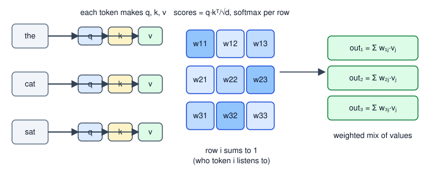
How to read it: three tokens go in. Each makes a query (q), a key (k) and a value (v). The grid in the middle is the score matrix, one cell per (query token, key token) pair. Each row is passed through softmax so it sums to 1. The right side shows each output as the weighted sum of the three value vectors.
Real-world mapping
| Concept | Example | Where it appears in the job |
|---|---|---|
| Query/key score | Q @ K.T | The heart of every LLM, ViT and CLIP text encoder |
| Softmax weights | Row (0.40, 0.20, 0.40) | Attention maps you can plot to explain a model |
Wq, Wk, Wv | Three d×d matrices | Most of the parameters in a transformer layer |
Scale 1/√d_k | Constant | A reason models train stably |
Applications
- Language models: a word's meaning depends on other words ("bank" in "river bank" versus "bank loan").
- Vision: every image patch attends to every other patch (Chapter 12).
- Speech and time series: a time step attends to relevant earlier steps.
- Recommendation: a user's history items attend to each other to build a taste vector.
weights.sum(-1) and check it is all 1.Check yourself
- What do the rows of the weight matrix sum to? Answer: 1 each.
- Which matrix is multiplied by the weights: Q, K or V? Answer: V.
- Why subtract the row maximum inside softmax? Answer: to avoid overflow in
exp; the result does not change.
11.2 Causal Masking and Multi-Head Attention
Causal mask
Before softmax, set every score above the diagonal (a token looking at a later token) to −∞. Then e^(−∞) = 0, so those weights become exactly 0 and the remaining weights still sum to 1. Models that generate text (GPT style) use this; models that only read (BERT style) do not.
Problem 11.2.1 Apply a causal mask to the scores of Problem 11.1.1.
| Formula | scaled score[i][j] = −∞ if j > i, then softmax per row. |
|---|---|
| Step 1 | Row 1 can see only token 1, so its weights are (1, 0, 0). |
| Step 2 | Row 2 sees tokens 1 and 2 with scores (0.7071, 0.7071): equal, so weights (0.5, 0.5, 0). |
| Step 3 | Row 3 sees all three, so it is unchanged: (0.284, 0.14, 0.576). |
| Answer | The causal weight matrix is [[1,0,0],[0.5,0.5,0],[0.284,0.14,0.576]], and the output for token 1 is just its own value (2, 0); for token 2 it is 0.5·(2,0) + 0.5·(0,3) = (1, 1.5). |
| Check | The earlier code run printed exactly these outputs: [[2, 0], [1, 1.5], [1.7199, 2.148]]. |
| Interpretation | Token 3 sees the whole past, token 1 sees only itself. During training, one pass computes the "predict the next word" task for every position at once, and the mask guarantees no cheating. |
mask = np.triu(np.ones((3, 3), bool), 1) # True above the diagonal
Sm = np.where(mask, -np.inf, S)
print(softmax(Sm)); print(softmax(Sm) @ V)[[1. 0. 0. ]
[0.5 0.5 0. ]
[0.284 0.14 0.576]]
[[2. 0. ]
[1. 1.5 ]
[1.7199 2.148 ]]Multi-head attention
Instead of one attention with d-wide vectors, split the width into H heads of size d_h = d / H. Each head has its own view of Q, K, V. Concatenate the head outputs and mix them with one more matrix Wo.
Problem 11.2.2 Trace the tensor shapes for batch B=2, T=5 tokens, d=8, H=2 heads.
| Step 1 | Input x is (B, T, d) = (2, 5, 8). x·Wq is still (2, 5, 8). |
|---|---|
| Step 2 | Reshape to (B, T, H, d_h) = (2, 5, 2, 4) and swap axes to (B, H, T, d_h) = (2, 2, 5, 4). Each head is now its own small attention problem. |
| Step 3 | Scores q·kᵀ have shape (B, H, T, T) = (2, 2, 5, 5): one T×T grid per head per example. |
| Step 4 | Weights times v give (2, 2, 5, 4). Swap back and reshape (concatenate) to (2, 5, 8). Multiply by Wo (8×8) to get (2, 5, 8). |
| Answer | Input and output shapes are identical, (2, 5, 8), so layers can be stacked. |
| Check | The code prints each shape. Parameters: four d×d matrices (Wq, Wk, Wv, Wo) give 4d²: 256 for d=8, and 2,359,296 for d=768 (BERT-base width), independent of the number of heads. |
| Interpretation | More heads do not add parameters; they split the same width into several smaller viewpoints. The (T, T) grid is why long inputs get expensive (Section 11.4). |
import numpy as np
np.set_printoptions(precision=4, suppress=True)
def softmax(z, axis=-1):
z = z - z.max(axis=axis, keepdims=True); e = np.exp(z); return e/e.sum(axis=axis, keepdims=True)
rng = np.random.default_rng(0)
B, T, D, H = 2, 5, 8, 2
x = rng.standard_normal((B, T, D))
Wq, Wk, Wv, Wo = [rng.standard_normal((D, D)) * 0.3 for _ in range(4)]
def split_heads(t): # (B,T,D) -> (B,H,T,dh)
return t.reshape(B, T, H, D // H).transpose(0, 2, 1, 3)
q, k, v = split_heads(x @ Wq), split_heads(x @ Wk), split_heads(x @ Wv)
s = q @ k.transpose(0, 1, 3, 2) / np.sqrt(D // H)
print("scores", s.shape)
a = softmax(s)
print("attention", a.shape, "row sums", a.sum(-1).min(), a.sum(-1).max())
heads = a @ v
print("per-head output", heads.shape)
concat = heads.transpose(0, 2, 1, 3).reshape(B, T, D)
print("concatenated", concat.shape)
out = concat @ Wo
print("final", out.shape)
print("params of one attention layer, D=8:", 4*D*D, "; D=768:", 4*768*768)scores (2, 2, 5, 5)
attention (2, 2, 5, 5) row sums 0.9999999999999998 1.0000000000000002
per-head output (2, 2, 5, 4)
concatenated (2, 5, 8)
final (2, 5, 8)
params of one attention layer, D=8: 256 ; D=768: 2359296The row sums are 1 up to floating-point rounding (0.9999999999999998), which is normal.
Real-world mapping
| Concept | Example | Where it appears in the job |
|---|---|---|
| Causal mask | triu(ones, 1) set to −inf | GPT-style generation and training |
| No mask | all cells visible | BERT, ViT, CLIP image encoder |
| Heads | 12 heads of size 64 for d=768 | Reading model configs (num_heads) |
(B,H,T,T) | Attention tensor | The memory problem that FlashAttention fixes |
Applications
- Text generation (GenAI): causal mask in every chat model.
- Text understanding: unmasked attention for classification and search embeddings.
- Interpretability: visualising head patterns to debug why a model made an error.
(B, T, D) straight to (B, H, T, d_h) without the transpose. It runs without error, but you have mixed tokens and heads: the first "head" now holds pieces of different tokens. Always reshape to (B, T, H, d_h) first, then transpose.Check yourself
- What value does the causal mask put on forbidden scores? Answer:
−∞, so softmax gives 0. - For
d=768and 12 heads, what isd_h? Answer: 64. - Do more heads (same
d) mean more parameters in attention? Answer: no, still4d².
11.3 Positional Encodings: Telling the Model Word Order
Problem 11.3.1 Show that attention alone ignores order.
| Step 1 | Take the 3 tokens of Problem 11.1.1 and reorder them as rows (2, 0, 1). |
|---|---|
| Step 2 | Compute attention on the reordered input and compare with reordering the original output. |
| Answer | They are identical (the test printed True when I ran it): shuffling the input just shuffles the output the same way. |
| Check | Only the content of each row matters, never its place. |
| Interpretation | Word order must be injected from outside. There are three common ways. |
Method 1: sinusoidal (the original paper)
Add to each token's embedding a fixed vector built from sines and cosines of different speeds. For position pos and pair index i:
PE[pos, 2i] = sin(pos / 10000^(2i/d))
PE[pos, 2i+1] = cos(pos / 10000^(2i/d))Early dimensions change fast (like the seconds hand of a clock), later ones slowly (the hour hand). Together they give each position a unique pattern, like a time of day.
Problem 11.3.2 Compute PE for positions 0 to 3 with d = 4.
| Formula | pairs i=0 (columns 0,1, divisor 10000^0 = 1) and i=1 (columns 2,3, divisor 10000^(2/4) = 100). |
|---|---|
| Step 1 | Position 0: sin(0)=0, cos(0)=1, sin(0)=0, cos(0)=1 gives (0, 1, 0, 1). |
| Step 2 | Position 1: sin(1)=0.8415, cos(1)=0.5403, sin(0.01)=0.01, cos(0.01)=1.0 gives (0.8415, 0.5403, 0.01, 1.0). |
| Step 3 | Position 2: sin(2)=0.9093, cos(2)=−0.4161, sin(0.02)=0.02, cos(0.02)=0.9998. |
| Answer | The table printed below matches. Columns 0-1 spin quickly; columns 2-3 barely move. |
| Check | Every sin/cos pair lies on a circle: 0.8415² + 0.5403² = 0.7081 + 0.2919 = 1. |
| Interpretation | Position 1 and position 2 get different vectors, so the model can tell them apart. |
Method 2: learned positions
Make a table pos_embedding[position] of trainable vectors, exactly like word embeddings. GPT-2 and BERT do this. Simple, but the model has no vectors for positions longer than the table.
Method 3: RoPE and ALiBi (modern models)
RoPE (rotary position embedding) does not add anything. It rotates each (q, k) pair of numbers by an angle that grows with position. The dot product of a rotated query and rotated key then depends only on the distance between the two tokens. ALiBi adds a penalty to the score that grows with distance: score − slope × distance. Many open models use RoPE; it is the default idea worth knowing.
Problem 11.3.3 Show that RoPE depends on relative distance. Take q = (1, 2), k = (0.5, −1). Rotate q by angle m radians and k by angle n radians, then take the dot product.
| Formula | rotation by angle a: (x, y) → (x·cos a − y·sin a, x·sin a + y·cos a). |
|---|---|
| Step 1 | Plain dot product, no rotation: 1·0.5 + 2·(−1) = −1.5. |
| Step 2 | Positions (3, 1), distance 2. Positions (10, 8), distance 2. Positions (100, 98), distance 2. |
| Step 3 | By geometry, a dot product equals |q||k|cos(angle between). Rotating both by the same amount keeps the angle between them, only the difference m − n matters. |
| Answer | All three give −1.194375. |
| Check | By hand: |q||k| = √5 × √1.25 = 2.5. The angle between them is (−63.43° + n·57.30°) − (63.43° + m·57.30°), with m − n = 2 this is −126.87° − 114.59° = −241.46°, and cos(−241.46°) = −0.4777. So 2.5 × (−0.4777) = −1.194. |
| Interpretation | The model sees "these two tokens are 2 apart" regardless of where in the text they are. That helps it handle long texts better than fixed tables. |
import numpy as np
np.set_printoptions(precision=4, suppress=True)
def sinpe(T, d):
pos = np.arange(T)[:, None]; i = np.arange(d // 2)[None, :]
ang = pos / 10000 ** (2 * i / d)
pe = np.zeros((T, d)); pe[:, 0::2] = np.sin(ang); pe[:, 1::2] = np.cos(ang)
return pe
print(sinpe(4, 4))
pe = sinpe(50, 16)
print(round(pe[5] @ pe[8], 4), round(pe[20] @ pe[23], 4), round(pe[5] @ pe[20], 4))
def rot(v, pos, theta=1.0):
c, s = np.cos(pos * theta), np.sin(pos * theta)
return np.array([c * v[0] - s * v[1], s * v[0] + c * v[1]])
q = np.array([1., 2.]); k = np.array([0.5, -1.])
for m, n in [(3, 1), (10, 8), (100, 98)]:
print("rope positions", m, n, "dot", round(rot(q, m) @ rot(k, n), 6))
print("plain dot", q @ k)
T = 4; slope = 0.5
dist = np.arange(T)[:, None] - np.arange(T)[None, :]
print(np.where(dist >= 0, -slope * dist, -np.inf))[[ 0. 1. 0. 1. ]
[ 0.8415 0.5403 0.01 1. ]
[ 0.9093 -0.4161 0.02 0.9998]
[ 0.1411 -0.99 0.03 0.9996]]
5.5431 5.5431 4.2192
rope positions 3 1 dot -1.194375
rope positions 10 8 dot -1.194375
rope positions 100 98 dot -1.194375
plain dot -1.5
[[-0. -inf -inf -inf]
[-0.5 -0. -inf -inf]
[-1. -0.5 -0. -inf]
[-1.5 -1. -0.5 -0. ]]Line by line: the sinusoidal dot products 5.5431 for positions (5,8) and (20,23) are equal (same distance 3) and differ from (5,20): the table itself carries a relative-distance signal. The ALiBi matrix is the bias added to scores: zero for the token itself, −0.5 per step back, −∞ (the causal mask) for the future.
Real-world mapping
| Method | Used by | Strength | Weakness |
|---|---|---|---|
| Sinusoidal | original Transformer | No parameters | Weaker on long texts |
| Learned | BERT, GPT-2 | Simple | Fixed maximum length |
| RoPE | many open LLMs | Relative distance, good extension | More code |
| ALiBi | some LLMs | Cheap, extends to longer text | Fixed penalty shape |
Applications
- LLM context extension: changing RoPE scaling lets a model read longer texts (check the model's documentation; details vary).
- Vision transformers: learned 2-D position tables for patches (Chapter 12).
- Time series transformers: time-of-day features act as positional encodings.
Check yourself
- Why does a plain transformer need positional information? Answer: attention treats the input as an unordered set.
- What does RoPE's dot product depend on? Answer: only the distance between the two positions.
- What happens to ALiBi's penalty as distance grows? Answer: it grows linearly, so far tokens get lower scores.
11.4 The Transformer Block and a Complete Tiny GPT
Parts
| Part | What it does | Reminder |
|---|---|---|
| Layer norm | For each token, subtract its mean and divide by its standard deviation over the d numbers, then scale and shift | Like batch norm from Chapter 3, but per token, so it works with any batch size |
| Residual | x + f(x) | The skip idea from Chapter 6 (ResNet) |
| Feed-forward network (FFN) | W2 · gelu(W1 · x) with width usually 4d | Two dense layers; GELU is a smooth ReLU |
| Pre-norm | Layer norm before attention/FFN | More stable than the original post-norm in deep models |
Problem 11.4.1 Layer-normalise the token vector (1, 2, 3, 6).
| Formula | (x − mean) / √(variance + ε), with ε = 1e-5 to avoid dividing by zero. |
|---|---|
| Step 1 | Mean = (1+2+3+6)/4 = 3. Variance = ((−2)² + (−1)² + 0² + 3²)/4 = (4+1+0+9)/4 = 3.5. |
| Step 2 | √3.5 = 1.8708. So (1−3)/1.8708 = −1.069, (2−3)/1.8708 = −0.5345, 0, (6−3)/1.8708 = 1.6036. |
| Answer | (−1.069, −0.5345, 0, 1.6036). |
| Check | The code output below matches; the result has mean 0 (the numbers sum to zero). |
| Interpretation | Whatever the size of the incoming numbers, each token leaves the layer norm on the same scale. Training stays stable. |
The tiny GPT
Now assemble everything. This model has vocabulary V = 11, context T = 6, width d = 16, 4 heads, FFN width 64 and 2 layers. The weights are random (no training), so the shapes and logic are what matter. Read block first, it is the whole idea.
Before you run it, predict: for an untrained model that guesses uniformly over 11 tokens, what should the loss be close to? (Hint: ln 11.)
import numpy as np
np.set_printoptions(precision=4, suppress=True)
def softmax(z, axis=-1):
z = z - z.max(axis=axis, keepdims=True); e = np.exp(z); return e / e.sum(axis=axis, keepdims=True)
def layernorm(x, g, b, eps=1e-5):
m = x.mean(-1, keepdims=True); v = x.var(-1, keepdims=True)
return g * (x - m) / np.sqrt(v + eps) + b
gelu = lambda x: 0.5 * x * (1 + np.tanh(np.sqrt(2 / np.pi) * (x + 0.044715 * x**3)))
print("LN of [1,2,3,6]:", layernorm(np.array([[1., 2., 3., 6.]]), 1, 0))
rng = np.random.default_rng(1)
V, T, D, H, F, L = 11, 6, 16, 4, 64, 2 # vocab, context, width, heads, FFN width, layers
def n(*shape): return rng.standard_normal(shape) * 0.1
P = {"tok": n(V, D), "pos": n(T, D), "gf": np.ones(D), "bf": np.zeros(D), "blocks": []}
for _ in range(L):
P["blocks"].append(dict(Wqkv=n(D, 3*D), Wo=n(D, D), W1=n(D, F), b1=np.zeros(F), W2=n(F, D), b2=np.zeros(D),
g1=np.ones(D), be1=np.zeros(D), g2=np.ones(D), be2=np.zeros(D)))
def block(x, p):
B, T, D = x.shape; dh = D // H
h = layernorm(x, p["g1"], p["be1"]) # pre-norm
q, k, v = np.split(h @ p["Wqkv"], 3, -1)
sp = lambda t: t.reshape(B, T, H, dh).transpose(0, 2, 1, 3)
q, k, v = sp(q), sp(k), sp(v)
s = q @ k.transpose(0, 1, 3, 2) / np.sqrt(dh)
s = np.where(np.triu(np.ones((T, T), bool), 1), -np.inf, s) # causal mask
o = (softmax(s) @ v).transpose(0, 2, 1, 3).reshape(B, T, D)
x = x + o @ p["Wo"] # residual 1
h = layernorm(x, p["g2"], p["be2"])
return x + gelu(h @ p["W1"] + p["b1"]) @ p["W2"] + p["b2"] # residual 2
def gpt(ids):
x = P["tok"][ids] + P["pos"][:ids.shape[1]]
for p in P["blocks"]: x = block(x, p)
return layernorm(x, P["gf"], P["bf"]) @ P["tok"].T # weight tying
ids = rng.integers(0, V, (3, T))
logits = gpt(ids); print("logits", logits.shape)
pr = softmax(logits); tgt = np.roll(ids, -1, 1)
loss = -np.log(np.take_along_axis(pr, tgt[..., None], -1)).mean()
print("loss", round(loss, 4), " ln(V) =", round(np.log(V), 4))
count = lambda o: sum(count(i) for i in (o.values() if isinstance(o, dict) else o)) if isinstance(o, (dict, list)) else o.size
print("parameters", count(P))
ids2 = ids.copy(); ids2[:, -1] = (ids2[:, -1] + 1) % V
print("earlier positions unchanged:", np.allclose(gpt(ids)[:, :-1], gpt(ids2)[:, :-1]))
print("last position changed:", not np.allclose(gpt(ids)[:, -1], gpt(ids2)[:, -1]))
seq = np.array([[3]])
for _ in range(5):
seq = np.concatenate([seq, gpt(seq)[:, -1].argmax(-1)[:, None]], 1)
print("greedy generation from token 3:", seq)LN of [1,2,3,6]: [[-1.069 -0.5345 0. 1.6036]]
logits (3, 6, 11)
loss 2.5271 ln(V) = 2.3979
parameters 6736
earlier positions unchanged: True
last position changed: True
greedy generation from token 3: [[3 0 0 0 9 9]]Problem 11.4.2 Explain every output line.
| Step 1 | logits (3, 6, 11): for each of 3 sequences and 6 positions, one score for each of 11 vocabulary tokens. The "next token" prediction at every position, in one pass. |
|---|---|
| Step 2 | loss 2.5271 versus ln 11 = 2.3979. An untrained model is close to uniform guessing, so its loss is near ln V. A loss far above (say 10) at the start of real training points to a bug (e.g. bad initialisation); this is the same sanity check from Chapter 4. |
| Step 3 | Parameters. Token table 11·16 = 176; positions 6·16 = 96; per block 16·48 + 16·16 + 16·64 + 64 + 64·16 + 16 + 4·16 = 3,216; two blocks 6,432; final layer norm 32. Total 176 + 96 + 6432 + 32 = 6,736. |
| Step 4 | The causality test: changing the last input token does not change any earlier logits. That is the mask working. |
| Answer | The tiny GPT is correct in shape and in behaviour. Its generated text is meaningless ([3 0 0 0 9 9]) because the weights are random; training (Chapter 3 recipe with cross-entropy on the next token) is what makes it write. |
| Check | parameters 6736 equals the hand count. |
| Interpretation | GPT-2 small is exactly this recipe with d=768, 12 heads, 12 layers, V ≈ 50,000: about 124 million parameters. No new ideas, just bigger numbers. |
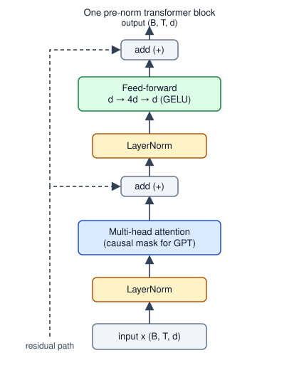
How to read it: data flows bottom to top. The straight line on the left of each box is the residual path; the block adds its result onto that path. Layer norm sits at the start of each sub-block (pre-norm).
Cost and speed: complexity, KV cache, FlashAttention, GQA, MoE
Attention cost. The score matrix is T × T per head, so compute and memory grow with the square of the text length.
KV cache. When generating, each new token needs the keys and values of all earlier tokens. They do not change, so we store ("cache") them and compute only the new token's k and v. Think of keeping a running log instead of re-reading the whole log each time.
Problem 11.4.3 Verify that the KV cache gives the same answer and count the savings; then size the memory.
| Step 1 | Process 6 tokens one by one, storing k and v each step. At step 6 compare with recomputing everything. |
|---|---|
| Step 2 | Without a cache, step t recomputes t key/value projections: 1+2+...+6 = 21. With a cache: 6. |
| Step 3 | Cache memory = 2 (K and V) × layers × heads × head_dim × tokens × bytes. For 32 layers, 32 heads, head dim 128, 4,096 tokens, fp16 (2 bytes): 2·32·32·128·4096·2 = 2,147,483,648 bytes. |
| Answer | The cache is exact (same output). For one 4,096-token conversation it takes about 2.1 GB, which is why serving many users is a memory problem. |
| Check | The code confirms cache == recompute: True, 21 versus 6, and 2,147 MB. |
| Interpretation | This is the same trade-off as a shop keeping a running stock tally instead of recounting every shelf for each sale: you spend memory to save time. For GenAI serving, see the GenAI document. |
import numpy as np
def softmax(z): z = z - z.max(); e = np.exp(z); return e / e.sum()
rng = np.random.default_rng(0)
d = 4
Wq, Wk, Wv = [rng.standard_normal((d, d)) for _ in range(3)]
xs = rng.standard_normal((6, d))
def recompute_last(xs):
q, k, v = xs @ Wq, xs @ Wk, xs @ Wv
return softmax(q[-1] @ k.T / np.sqrt(d)) @ v
Kc, Vc = [], []
for t in range(6): # one new token per step
Kc.append(xs[t] @ Wk); Vc.append(xs[t] @ Wv) # only the NEW k and v are computed
out = softmax((xs[t] @ Wq) @ np.array(Kc).T / np.sqrt(d)) @ np.array(Vc)
print("cache == recompute:", np.allclose(out, recompute_last(xs)))
print("K,V projections without cache:", sum(range(1, 7)), " with cache:", 6)
for T in (1024, 8192, 32768):
print(T, "tokens: score matrix per head in fp16 =", round(T*T*2/1e6, 1), "MB")
kv = 2 * 32 * 32 * 128 * 4096 * 2
print("KV cache, 32 layers, 32 heads, head dim 128, 4096 tokens, fp16:", round(kv/1e6), "MB")
print("with 8 KV heads (GQA):", round(kv/4/1e6), "MB")cache == recompute: True
K,V projections without cache: 21 with cache: 6
1024 tokens: score matrix per head in fp16 = 2.1 MB
8192 tokens: score matrix per head in fp16 = 134.2 MB
32768 tokens: score matrix per head in fp16 = 2147.5 MB
KV cache, 32 layers, 32 heads, head dim 128, 4096 tokens, fp16: 2147 MB
with 8 KV heads (GQA): 537 MBReading the second block: going from 1,024 to 32,768 tokens (32 times longer) makes the score matrix 1,024 times bigger. That is the quadratic cost.
Three more ideas, at concept level:
- FlashAttention computes the exact same attention, but processes it in small tiles that stay in the GPU's fast on-chip memory and never writes the full
T×Tmatrix to slow memory. It is faster and uses far less memory, with identical results. It is a memory-traffic fix, not an approximation. - Grouped-query attention (GQA) lets several query heads share one key/value head. With 8 KV heads instead of 32 the cache is 4 times smaller (537 MB above), with little quality loss.
- Mixture of experts (MoE) replaces the FFN with several FFNs ("experts") and a small router that picks the top 2 for each token and mixes their outputs with the router's softmax weights. The model has many parameters but each token uses only a few, so it is cheaper per token.
Encoder, decoder, encoder-decoder, and the families
| Type | Mask | Trained to | Examples | Use |
|---|---|---|---|---|
| Encoder | none | fill in hidden words | BERT | classification, embeddings, search |
| Decoder | causal | predict the next token | GPT family | text generation, chat |
| Encoder-decoder | encoder none; decoder causal plus cross-attention to the encoder | map input sequence to output sequence | T5, BART, Whisper | translation, summarisation, speech to text |
| Vision | none, over image patches | classify, or self-supervised | ViT (Chapter 12) | images |
| Multimodal | two encoders | match images and text | CLIP (Chapter 12) | search, zero-shot labelling |
Cross-attention is attention where queries come from one sequence (the decoder) and keys and values from another (the encoder output). It is how Whisper's text decoder looks at the audio.
Real-world mapping
| Concept | Example | Where it appears in the job |
|---|---|---|
| Parameter count | 6,736 here; about 124 M for GPT-2 small | Estimating GPU memory (params × bytes) |
| KV cache | 2.1 GB for one 4k conversation | Capacity planning for an LLM service |
T² scores | 134 MB per head at 8k | Why long context is costly; FlashAttention |
Loss at start ≈ ln V | 2.52 versus 2.40 | A sanity check when starting a training run |
Applications
- GenAI engineering: capacity planning, latency (first-token time versus tokens per second), batching.
- NLP: BERT-style encoders for classification and search embeddings.
- MLOps: estimating memory for serving from layers, heads and context length, as above.
- Speech: Whisper-style encoder-decoder for transcription.
Check yourself
- What does a residual connection add? Answer: it adds the block's input back to its output,
x + f(x). - If context length doubles, how does the attention score matrix size change? Answer: four times bigger.
- Why does GQA shrink the KV cache? Answer: fewer key/value heads are stored.
11.5 A Mini-GPT in PyTorch (Not Run Here)
# not run here
import torch, torch.nn as nn, torch.nn.functional as F
class Block(nn.Module):
def __init__(self, d, heads):
super().__init__()
self.ln1, self.ln2 = nn.LayerNorm(d), nn.LayerNorm(d)
self.attn = nn.MultiheadAttention(d, heads, batch_first=True)
self.ffn = nn.Sequential(nn.Linear(d, 4*d), nn.GELU(), nn.Linear(4*d, d))
def forward(self, x):
T = x.size(1)
mask = torch.triu(torch.ones(T, T, dtype=torch.bool, device=x.device), 1) # True = blocked
h = self.ln1(x)
x = x + self.attn(h, h, h, attn_mask=mask, need_weights=False)[0]
return x + self.ffn(self.ln2(x))
class MiniGPT(nn.Module):
def __init__(self, vocab, ctx=64, d=128, heads=4, layers=4):
super().__init__()
self.tok, self.pos = nn.Embedding(vocab, d), nn.Embedding(ctx, d)
self.blocks = nn.Sequential(*[Block(d, heads) for _ in range(layers)])
self.ln_f, self.head = nn.LayerNorm(d), nn.Linear(d, vocab, bias=False)
def forward(self, ids, targets=None):
x = self.tok(ids) + self.pos(torch.arange(ids.size(1), device=ids.device))
logits = self.head(self.ln_f(self.blocks(x)))
loss = None if targets is None else F.cross_entropy(logits.flatten(0, 1), targets.flatten())
return logits, lossA training loop is the one from Chapter 5 (AdamW, learning-rate warmup then cosine decay from Chapter 3, gradient clipping). The data: take a text file, map characters to integers, and cut random windows of length 64; the target is the same window shifted by one. After a few thousand steps the model writes text that looks like the training file. Expected behaviour (not measured here): the starting loss is near ln(vocab), as in our NumPy demo.
A word on tokenisation: real models split text into sub-word tokens (for example with BPE, byte-pair encoding, which repeatedly merges the most frequent pair of symbols). That topic is in study/genai/01_nlp_foundations.md; characters are fine for this exercise.
Check yourself
- What is the training target for position
t? Answer: the token at positiont+1. - Which two things must the loss and the data windows agree on? Answer: the target is the input shifted by one position.
- What loss value should you see before any learning with a vocabulary of 65 characters? Answer: about
ln 65 ≈ 4.17.
Chapter recap
- Self-attention: each token makes a query, key and value; scores
Q·Kᵀ/√d_k; softmax per row; output is the weighted average of values. - The
√d_kscale keeps scores at standard deviation 1; without it softmax saturates and learning stalls. - A causal mask (
−∞above the diagonal) stops a token from seeing the future; GPT uses it, BERT does not. - Multi-head attention splits
dintoHsmaller heads; shapes are(B,H,T,T)for scores; parameters stay4d². - Attention ignores order, so add positions: sinusoidal, learned, RoPE (rotation; depends on distance) or ALiBi (distance penalty).
- A block is layer norm, attention, residual, layer norm, FFN, residual; a GPT is a stack of blocks plus a token table and a final projection.
- Costs: attention grows with
T²; the KV cache trades memory for time (exact); FlashAttention is exact and memory-friendly; GQA and MoE reduce cache and compute. - Families: encoder (BERT), decoder (GPT), encoder-decoder (T5, Whisper), ViT and CLIP (next chapter).
| Item | Formula or pattern |
|---|---|
| Attention | softmax(Q·Kᵀ/√d_k)·V |
| Causal mask | scores[j > i] = −∞ |
| Head size | d_h = d / H |
| Attention params | 4d² (Wq, Wk, Wv, Wo) |
| FFN params | 2·d·4d + biases |
| Layer norm | (x − μ)/√(σ² + ε)·γ + β |
| KV cache bytes | 2 × layers × heads × d_h × tokens × bytes |
| Sinusoidal PE | sin/cos(pos / 10000^(2i/d)) |
Practice set
1. (easy) Scores for one query against three keys are (2, 0, 0). Compute the softmax weights. Answer: e² = 7.389, e⁰ = 1, 1. Sum 9.389. Weights (0.787, 0.1065, 0.1065), which add to 1.
2. (easy) What is d_h for d = 512 and H = 8? How many numbers are in one head's score matrix for T = 10? Answer: d_h = 64; the score matrix is 10 × 10 = 100 numbers per head per example.
3. (what is the output?) With scores (1, 1, 1) and values (1,0), (0,1), (2,2), what is the attention output? Answer: equal weights 1/3 each, so output ((1+0+2)/3, (0+1+2)/3) = (1, 1).
4. (computation) Parameters of one attention layer plus FFN (width 4d, with biases) for d = 64. Answer: attention 4·64² = 16,384 (no biases). FFN: 64·256 + 256 + 256·64 + 64 = 16,384 + 256 + 16,384 + 64 = 33,088. Total 49,472.
5. (find the bug) A learner writes weights = softmax(scores, axis=0) for a (T, T) score matrix and finds the model "works but is odd". What is wrong? Answer: softmax must be over the key axis (axis=-1), so that each query's weights add to 1. With axis=0 columns sum to 1 instead; shapes are fine, so no error appears.
6. (computation) Layer-normalise (2, 4, 6) (ignore ε). Answer: mean 4, variance (4+0+4)/3 = 2.667, std 1.633. Result (−1.2247, 0, 1.2247).
7. (computation) KV cache size: 24 layers, 16 heads, head dim 64, 2,048 tokens, fp16. Answer: 2·24·16·64·2048·2 = 201,326,592 bytes, about 201 MB per sequence.
8. (scenario) Your LLM service runs out of GPU memory when 40 users chat at once, though one user is fine. What is the likely cause and two fixes? Answer: each user needs its own KV cache, which scales with users × tokens. Fixes: grouped-query attention (smaller cache), quantised cache or weights (Chapter 14), shorter maximum context, limiting concurrent requests, paged cache management in the serving engine.
9. (find the bug) A tiny GPT's loss starts at 14.0 for a vocabulary of 11. What do you suspect? Answer: the expected start is near ln 11 = 2.4. A loss of 14 means the logits are huge: weights initialised too large, no final layer norm, or a missing 1/√d_k. Check initial scales, as in Chapter 4.
10. (interview) "Why divide by √d_k in attention?" Answer: a dot product of two random d_k-long vectors has standard deviation √d_k; large scores make softmax almost one-hot with near-zero gradients. Dividing keeps the variance near 1.
11. (interview) "What is the difference between BERT and GPT architecturally, and how does each get trained?" Answer: BERT is an encoder with no mask and sees both sides; trained by predicting masked words. GPT is a decoder with a causal mask; trained to predict the next token. BERT gives good embeddings for classification and search; GPT generates text.
12. (interview) "Attention is quadratic in sequence length. What helps?" Answer: FlashAttention (exact, memory-efficient), sliding-window or sparse attention patterns, grouped-query attention for the cache, and shorter contexts via retrieval (see the RAG chapters in study/genai/).
Prompt pack
You are my patient, practical professor. I am a working professional moving into data roles; English is my second language, so use simple words. Teach me self-attention (queries, keys, values, scaled dot product, softmax) from scratch with a 3-token example and 2-number vectors. Show every multiplication. After each step, ask me one question to check understanding and wait for my answer before continuing. Finish by asking me to explain why we divide by the square root of d_k.
You are my patient, practical professor. I am a working professional moving into data roles. The topic is multi-head attention and tensor shapes in a transformer. Give me 8 graded exercises (easy to hard) on tracking shapes through (B, T, D) to (B, H, T, d_h) to scores (B, H, T, T) and back, plus parameter counting. Do not give solutions yet. When I send my answers, check each one and explain mistakes with real numbers.
You are my patient, practical professor. I am a working professional moving into data roles. Quiz me on positional encodings in transformers: why they are needed, sinusoidal, learned, RoPE and ALiBi. Ask one question at a time, starting easy and getting harder, and wait for my answer. After each answer, tell me whether I am right, correct me kindly, and give a small numeric example when it helps. Stop after 10 questions and summarise my weak spots.
You are my patient, practical professor. I am a working professional moving into data roles. Review my from-scratch transformer block code for bugs in shapes, the causal mask, the softmax axis, layer norm and residual connections. Tell me what is wrong, why it is wrong, and show the fix with a tiny numeric test I can run. My code: [PASTE HERE]. Also suggest two sanity checks I should add, such as a causality test and the starting-loss check.
You are my patient, practical professor. I am a working professional moving into data roles and I am preparing for interviews. Run a mock interview on transformers: self-attention, causal masking, multi-head attention, positional encodings, KV cache, FlashAttention, GQA and mixture of experts. Ask one question at a time, grade my answer from 1 to 5 against a strong answer, show the strong answer, then ask a follow-up that probes memory and speed trade-offs. Do 8 questions.
Chapter 6 gave you CNNs, the workhorse of vision for a decade. Today many vision systems use transformers (Chapter 11) instead, or in addition. Two big shifts matter for your career. First, a transformer can treat an image as a sentence of patches, which lets the same architecture handle text, images and sound. Second, labels are expensive, so modern vision models learn from huge piles of unlabelled images, or from images paired with captions, and are then reused for many tasks. This chapter shows how an image becomes tokens, how a model can teach itself without labels, and how CLIP lines up pictures and sentences in one shared space. You will compute the contrastive loss behind CLIP by hand and in NumPy, and use it for zero-shot classification (classifying with no training examples). Fine-tuning and detection heads are in Chapters 7 and 9; language-only model usage is in study/genai/.
12.1 The Vision Transformer (ViT)
Words you need
| Word | Plain meaning |
|---|---|
| Patch | A small square of the image, for example 16×16 pixels |
| Patch embedding | A linear layer that turns the flattened patch into a vector of length d |
[CLS] token | An extra learnable token placed first; its final vector is used to classify the whole image |
| Inductive bias | Built-in assumptions of a model (CNNs assume nearby pixels matter and that patterns repeat everywhere) |
How it works
- Cut the image into
P×Ppatches. A 224×224 image withP = 16gives14 × 14 = 196patches. - Flatten each patch into
P·P·3numbers (3 colour channels), here16·16·3 = 768. - Multiply by a learned matrix to get a
d-long vector (for ViT-Based = 768). - Add a position vector (learned, one per patch; Chapter 11.3) so the model knows where each patch came from.
- Put the
[CLS]token in front, run the transformer blocks (no causal mask: every patch sees every patch). - Take the
[CLS]output and feed a small classifier.
Problem 12.1.1 Cut an 8×8 "image" holding the numbers 0 to 63 into 4×4 patches. List the first two patches.
| Formula | number of patches = (8/4)·(8/4) = 4; values per patch 4·4 = 16 (one grey channel). |
|---|---|
| Step 1 | The image rows are 0..7, 8..15, 16..23, and so on. |
| Step 2 | Patch 1 is the top-left 4×4 block: row 0 gives 0,1,2,3; row 1 gives 8,9,10,11; row 2 16..19; row 3 24..27. |
| Step 3 | Patch 2 (top-right) starts at column 4: 4,5,6,7, then 12..15, 20..23, 28..31. |
| Answer | Four patches, each 16 numbers. Patch 1 is [0 1 2 3 8 9 10 11 16 17 18 19 24 25 26 27] and patch 2 is [4 5 6 7 12 ... 28 29 30 31]. |
| Check | The code output below prints the same two patches and shape (4, 16). |
| Interpretation | Each row of that (4, 16) matrix is one token. The transformer sees four tokens instead of 64 pixels. |
Before you run it, predict: how many patches does a 224×224 image give with P = 32? Hint: 224/32 = 7.
import numpy as np
np.set_printoptions(precision=4, suppress=True)
img = np.arange(64.).reshape(8, 8) # an 8x8 grey "image"
P = 4 # patch size
patches = img.reshape(8//P, P, 8//P, P).transpose(0, 2, 1, 3).reshape(-1, P*P)
print(patches.shape)
print(patches[0]); print(patches[1])(4, 16)
[ 0. 1. 2. 3. 8. 9. 10. 11. 16. 17. 18. 19. 24. 25. 26. 27.]
[ 4. 5. 6. 7. 12. 13. 14. 15. 20. 21. 22. 23. 28. 29. 30. 31.]Line by line: reshape(2, 4, 2, 4) splits rows into (patch row, row inside patch) and columns the same way. transpose(0, 2, 1, 3) brings the two patch indices together and the two inside-patch indices together. The last reshape(-1, 16) flattens each patch. Answer to the prediction: 7 × 7 = 49 patches.
Problem 12.1.2 Count tokens and cost for ViT-Base on a 224×224 image for three patch sizes.
| Formula | tokens = (224/P)²; with [CLS], +1; attention score cells per head = tokens² (Chapter 11.4). |
|---|---|
| Step 1 | P=32: 49 tokens, 50² = 2,500 cells. |
| Step 2 | P=16: 196 tokens (197 with [CLS]), 197² = 38,809 cells. |
| Step 3 | P=8: 784 tokens, 785² = 616,225 cells. |
| Step 4 | Patch embedding parameters for P=16, d=768: 16·16·3·768 + 768 = 590,592. |
| Answer | Halving the patch size gives 4 times more tokens and about 16 times more attention cost. |
| Check | The code printed 2500, 38809, 616225 and 590592. |
| Interpretation | Smaller patches see finer detail but get expensive very fast. This is the main design knob of a ViT. "ViT-B/16" means ViT-Base with patch size 16. |
H = W = 224; P = 16; C = 3; d = 768
n = (H//P)*(W//P); print("patches", n, "values per patch", P*P*C, "tokens with CLS", n+1)
print("patch-embedding params", P*P*C*d + d)
for P_ in (32, 16, 8): print("patch", P_, "tokens", (224//P_)**2, "score cells", ((224//P_)**2+1)**2)patches 196 values per patch 768 tokens with CLS 197
patch-embedding params 590592
patch 32 tokens 49 score cells 2500
patch 16 tokens 196 score cells 38809
patch 8 tokens 784 score cells 616225Problem 12.1.3 Show that "cut into patches, then multiply by a matrix" is the same as a convolution with kernel size P and stride P (the connection to Chapter 6).
| Step 1 | A conv with kernel 4×4, stride 4 slides over non-overlapping blocks, exactly the patches. |
|---|---|
| Step 2 | At each block it multiplies the block by the kernel and sums, which is a dot product of the flattened block with the flattened kernel. With 5 kernels it equals multiplying by a (48 × 5) matrix. |
| Answer | They are the same operation (the code prints True). Libraries implement ViT patch embedding as Conv2d(3, d, kernel_size=P, stride=P). |
| Check | np.allclose between the two ways printed True. |
| Interpretation | ViT is not so far from a CNN: its first layer is a strided conv. The difference is that afterwards, layers use attention instead of local kernels. |
rng = np.random.default_rng(0)
x = rng.standard_normal((8, 8, 3)); Wp = rng.standard_normal((4*4*3, 5))
a = x.reshape(2,4,2,4,3).transpose(0,2,1,3,4).reshape(4, -1) @ Wp # patches then matmul
b = np.zeros((2,2,5)); Wk = Wp.reshape(4,4,3,5)
for i in range(2):
for j in range(2):
b[i,j] = np.tensordot(x[i*4:i*4+4, j*4:j*4+4], Wk, axes=([0,1,2],[0,1,2])) # conv, stride 4
print("linear patch embed == strided conv:", np.allclose(a, b.reshape(4,5)))linear patch embed == strided conv: True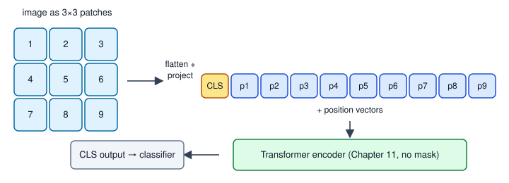
How to read it: left, a 3×3 grid of patches numbered 1 to 9 (a real ViT-B/16 has 14×14). Each patch is flattened and projected to a token. A [CLS] token is added in front. The whole row goes into the transformer encoder. The output at [CLS] goes to a classifier head.
ViT, DeiT, Swin: what changed
- ViT (original): needs a lot of data (hundreds of millions of images) because it has little built-in knowledge of image structure; a CNN gets locality for free.
- DeiT: same architecture, trained smartly (strong augmentation, distillation from a CNN teacher, Section 14.3) so it works on ImageNet-sized data alone.
- Swin: attention only inside small windows that shift between layers, and patches merged into a pyramid. Cost grows linearly with image size, and the multi-scale features suit detection and segmentation (Chapter 9).
Real-world mapping
| Concept | Example | Where it appears in the job |
|---|---|---|
| Patch size | ViT-B/16 | Reading model names on Hugging Face or timm |
| Token count | 196 + 1 | Estimating memory and latency of a vision model |
[CLS] token | classifier input | Getting an image embedding for search |
| Swin windows | local attention | Backbone for detection and segmentation models |
Applications
- Image classification: product photos, medical scans.
- Detection and segmentation: DETR and SAM use ViT-style encoders (Chapter 9).
- Video: frames or space-time patches become tokens.
- Embeddings for search:
[CLS]vectors stored in a vector database (seestudy/genai/06_vector_databases_retrieval.md).
Check yourself
- How many patches for a 384×384 image with
P = 16? Answer:24 × 24 = 576. - What is the
[CLS]token for? Answer: its output vector represents the whole image for classification. - Why does a ViT need more data than a CNN? Answer: it has no built-in locality bias, so it must learn it.
12.2 Self-Supervised Vision: Learning Without Labels
Words you need
| Word | Plain meaning |
|---|---|
| Self-supervised | Training with labels made automatically from the data, no human labelling |
| View (augmentation) | A randomly cropped, flipped or colour-shifted copy of an image |
| Positive pair | Two views of the same image; their embeddings should be close |
| Negative pair | Views of different images; their embeddings should be far apart |
| Linear probe | Freeze the pretrained model and train only one linear layer on top, to test the embedding quality |
Three families
- Contrastive (SimCLR, MoCo): make two views of each image; pull the positive pair together, push all other images in the batch away. The loss is the NT-Xent / InfoNCE loss that we compute in 12.3. It needs many negatives, so large batches.
- Self-distillation (BYOL, DINO, DINOv2): a student network sees one view, a teacher network sees another view, and the student must match the teacher's output. The teacher is not trained by gradients: it is a slow exponential moving average (EMA) of the student. DINO features are strong for segmentation and retrieval without any labels, and DINOv2 is a popular general-purpose backbone.
- Masked image modelling (MAE): hide a large part of the image (75% of patches) and train the model to reconstruct the missing patches. It is the vision cousin of BERT's masked words, and it is cheap, because the encoder sees only the 25% visible patches.
Problem 12.2.1 How much cheaper is the MAE encoder when 75% of the patches are hidden? Use ViT-B/16 (196 patches, plus [CLS]).
| Formula | attention cells grow with tokens squared; FFN cost grows linearly with tokens. |
|---|---|
| Step 1 | Visible patches: 0.25 × 196 = 49, plus [CLS] = 50 tokens (instead of 197). |
| Step 2 | Linear parts (FFN, projections): 50/197 = 0.254, about 4 times cheaper. |
| Step 3 | Attention part: (50/197)² = 0.064, about 15 times cheaper. |
| Answer | The MAE encoder does roughly one quarter of the linear work and one fifteenth of the attention work per image. |
| Check | (50/197)² = 0.0644; the code prints 0.064. |
| Interpretation | Masking makes pretraining on huge data affordable, which is a large part of why MAE became popular. |
Problem 12.2.2 Update an EMA teacher weight. The teacher weight starts at 1.0. The student weight takes the values 0.0, 0.2, 0.4 over three steps. Use momentum 0.9: teacher ← 0.9·teacher + 0.1·student.
| Step 1 | 0.9·1.0 + 0.1·0.0 = 0.9. |
|---|---|
| Step 2 | 0.9·0.9 + 0.1·0.2 = 0.81 + 0.02 = 0.83. |
| Step 3 | 0.9·0.83 + 0.1·0.4 = 0.747 + 0.04 = 0.787. |
| Answer | The teacher moves slowly: 0.9, 0.83, 0.787, while the student jumped to 0.4. |
| Check | The code prints 0.9, 0.83, 0.787. |
| Interpretation | The slow teacher gives stable targets, which stops the student and teacher from collapsing to a trivial answer together (the trick that makes BYOL and DINO work). Real recipes use momentum near 0.996 to 0.999. The same EMA idea is also used to average model weights during ordinary training. |
rng = np.random.default_rng(1)
ids = rng.permutation(196); keep = np.sort(ids[:49])
print("MAE keeps", len(keep), "of 196; encoder attention cost ratio", round((50/197)**2, 3))
w_t = 1.0
for step, w_s in enumerate([0.0, 0.2, 0.4]):
w_t = 0.9*w_t + 0.1*w_s; print(step, round(w_t, 4))MAE keeps 49 of 196; encoder attention cost ratio 0.064
0 0.9
1 0.83
2 0.787Using a pretrained backbone (not run here)
# not run here (needs torch, timm and a download)
import timm, torch
model = timm.create_model("vit_base_patch16_224", pretrained=True, num_classes=0) # num_classes=0: return embeddings
model.eval()
with torch.no_grad():
emb = model(torch.randn(1, 3, 224, 224)) # a random "image": real images need the model's own preprocessing
print(emb.shape) # expected: torch.Size([1, 768])Model names change over time; check the timm documentation for the current list. For a linear probe, extract embeddings for your labelled set, then train logistic regression (Machine Learning document) on them. That is the fastest, strongest baseline when you have few labels.
Real-world mapping
| Concept | Example | Where it appears in the job |
|---|---|---|
| Linear probe on DINOv2 features | 500 labelled defect photos | Quick strong baseline before any fine-tuning |
| Contrastive pretraining | SimCLR on factory camera images | When no labels exist but millions of images do |
| MAE | pretrain on satellite images | Domains unlike ImageNet |
| EMA teacher | momentum 0.996 | Stable self-training targets |
Applications
- Manufacturing: pretrain on unlabelled camera images, fine-tune with 200 labelled defects.
- Medical imaging: few labels, many scans; self-supervised pretraining is common.
- Remote sensing: huge unlabelled archives.
- Retail search: DINO-style embeddings for "find similar products".
Check yourself
- What is a positive pair in SimCLR? Answer: two augmented views of the same image.
- In DINO, how is the teacher updated? Answer: as an exponential moving average of the student, not by gradients.
- What does a linear probe measure? Answer: how good the frozen embeddings are for a task.
12.3 The Contrastive Loss and CLIP
How CLIP works
CLIP has an image encoder (a ViT or a CNN) and a text encoder (a transformer). Both output a vector, and both vectors are scaled to length 1 (normalised). Training uses a batch of N image-caption pairs scraped from the web. The cosine similarity between every image and every caption (see your Math PDF) fills an N × N table. The N diagonal cells are the true pairs. We want each row and each column to have its highest score on the diagonal.
similarity[i][j] = cosine(image_i, text_j) / τ τ ("tau") is the temperature
loss_image→text = average over rows: −ln softmax(row i)[i]
loss_text→image = average over columns: −ln softmax(col j)[j]
CLIP loss = (loss_image→text + loss_text→image) / 2The temperature τ divides the scores. A small τ (like 0.07, a typical learned value) makes the softmax sharper. This is the InfoNCE loss; it is just cross-entropy (Chapter 3) where the "class" of image i is the index of its caption.
Problem 12.3.1 Three images and their three captions have these normalised 2-number embeddings. Compute the first row's loss at τ = 1.
Images: (1,0), (0,1), (1,1), each divided by its length. Captions: (0.9,0.1), (0.2,0.8), (0.6,0.7), each divided by its length.
- Step 1 Normalise. Image 1 is
(1, 0). Caption 1 has length√(0.81+0.01) = 0.9055, so it is(0.9939, 0.1104). Caption 2 length√(0.04+0.64) = 0.8246, so(0.2425, 0.9701). Caption 3 length√(0.36+0.49) = 0.9220, so(0.6508, 0.7593). - Step 2 Cosine similarities of image 1 (a unit vector along the first axis): equal to each caption's first number:
0.9939, 0.2425, 0.6508. - Step 3 Softmax of row 1 at
τ = 1:e^0.9939 = 2.7022,e^0.2425 = 1.2742,e^0.6508 = 1.9172. Sum5.8936. Probability of the true caption:2.7022 / 5.8936 = 0.4585. - Step 4 Loss
= −ln(0.4585) = 0.7799. - Answer Image 1's loss at
τ = 1is 0.7799. - Check If the model knew nothing, each caption would get
1/3, lossln 3 = 1.0986. Our 0.78 is better. The code prints0.7799. - Interpretation At
τ = 1even a good match gets only 46% probability because the cosine range (−1 to 1) is narrow. That is why CLIP divides by a smallτ: it spreads the scores so the best match can win clearly.
import numpy as np
np.set_printoptions(precision=4, suppress=True)
def softmax(z, axis=-1):
z = z - z.max(axis=axis, keepdims=True); e = np.exp(z); return e / e.sum(axis=axis, keepdims=True)
def norm(a): return a / np.linalg.norm(a, axis=1, keepdims=True)
I = norm(np.array([[1., 0.], [0., 1.], [1., 1.]])) # image embeddings (3 images)
Tx = norm(np.array([[0.9, 0.1], [0.2, 0.8], [0.6, 0.7]])) # their 3 matching captions
S = I @ Tx.T # cosine similarities
print("cosine matrix\n", S)
def clip_loss(S, tau):
logits = S / tau; n = len(S); y = np.arange(n)
li = -np.log(softmax(logits, 1)[y, y]) # image -> text (rows)
lt = -np.log(softmax(logits, 0)[y, y]) # text -> image (columns)
return li, lt, (li.mean() + lt.mean()) / 2
for tau in (1.0, 0.1, 0.05):
li, lt, L = clip_loss(S, tau); print("tau", tau, "row losses", li, "col losses", lt, "loss", round(L, 4))
print("random guess loss ln(3) =", round(np.log(3), 4))
print("perfect embeddings loss", round(clip_loss(np.eye(3), 0.1)[2], 5))cosine matrix
[[0.9939 0.2425 0.6508]
[0.1104 0.9701 0.7593]
[0.7809 0.8575 0.9971]]
tau 1.0 row losses [0.7799 0.8034 0.9841] col losses [0.7982 0.8656 0.9146] loss 0.8576
tau 0.1 row losses [0.0324 0.1147 0.3095] col losses [0.1124 0.2813 0.117 ] loss 0.1612
tau 0.05 row losses [0.001 0.0146 0.0719] col losses [0.014 0.0999 0.0095] loss 0.0352
random guess loss ln(3) = 1.0986
perfect embeddings loss 9e-05Line by line: S / tau sharpens the scores. softmax(logits, 1) (axis 1) normalises each row: for image i, a probability over captions. softmax(logits, 0) normalises each column: for caption j, a probability over images. [y, y] picks the diagonal, the true pairs. The diagonal of S is 0.9939, 0.9701, 0.9971, all the biggest in their rows, so lowering τ lowers the loss.
Problem 12.3.2 Why is image 3 (row losses largest) the hardest example?
| Step 1 | Row 3 of the cosine matrix is 0.7809, 0.8575, 0.9971. Its true caption scores 0.9971, but caption 2 scores 0.8575: close competitors. |
|---|---|
| Step 2 | At τ = 0.1 the gap 0.9971 − 0.8575 = 0.14 becomes 1.4 logit units, so the true caption gets about 73% (−ln p = 0.3095, p = 0.734). |
| Answer | Row 3 is hard because other captions point in a similar direction. Its loss is 0.3095 at τ = 0.1, the biggest of the three. |
| Check | e^(−0.3095) = 0.734. |
| Interpretation | Hard negatives (similar but wrong pairs) carry most of the learning signal. This is why bigger batches help: more chances to meet hard negatives. |
Problem 12.3.3 Batch size and loss. A random-guess model has loss ln N. Check this with N = 4, 32, 256 on noisy matched embeddings.
| Step 1 | The code makes N image vectors and noisy copies as their captions. |
|---|---|
| Step 2 | It prints the loss next to ln N. |
| Answer | Losses 0.866, 1.8725, 4.1002 versus ln N = 1.386, 3.466, 5.545. Each is below ln N, so the matching is learned partly; but the loss grows with N, because finding the right one among 256 is harder than among 4. |
| Check | All losses are below ln N, the random-guess level. |
| Interpretation | Do not compare contrastive losses between runs with different batch sizes. Compare to ln N. |
rng = np.random.default_rng(0)
for N in (4, 32, 256):
z = norm(rng.standard_normal((N, 8))); zt = norm(z + 0.5 * rng.standard_normal((N, 8)))
print("N", N, "loss", round(clip_loss(z @ zt.T, 0.1)[2], 4), "ln N", round(np.log(N), 3))N 4 loss 0.866 ln N 1.386
N 32 loss 1.8725 ln N 3.466
N 256 loss 4.1002 ln N 5.545(This snippet reuses norm and clip_loss from the code above.)
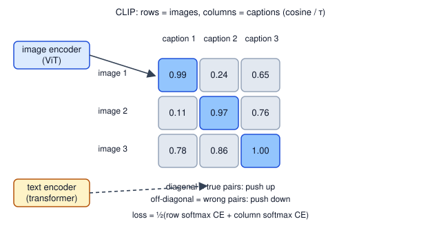
How to read it: rows are images, columns are captions. Each cell is a cosine similarity. The dark diagonal cells are the true pairs; training pushes them up and all other cells down, in both directions (row softmax and column softmax).
SimCLR in one paragraph
SimCLR is the same loss with a different pairing: for a batch of N images make two views each, giving 2N embeddings. For every embedding the positive is the other view of the same image, and the other 2N − 2 embeddings are negatives. The loss (called NT-Xent) is the same "−ln softmax of the right partner".
Real-world mapping
| Concept | Example | Where it appears in the job |
|---|---|---|
| Cosine similarity | 0.9939 | Search ranking, duplicate finding |
Temperature τ | 0.07 (learned in CLIP) | Tuning softmax sharpness |
| Batch of negatives | N = 32,768 in large CLIP training | Why contrastive training needs big hardware |
| Shared space | image and text vectors comparable | Text-to-image search without labels |
Applications
- E-commerce: search "red running shoes" and retrieve matching product photos.
- Content moderation: match images against textual policies.
- Dataset curation: score image-caption agreement to remove bad pairs.
- Multimodal retrieval for GenAI: image embeddings in a vector database (
study/genai/06_vector_databases_retrieval.md).
norm function above).Check yourself
- Which cells of the
N×Ntable are the positives? Answer: the diagonal. - What does a smaller temperature
τdo? Answer: sharpens the softmax (bigger gaps between scores). - What loss value means "no learning" for batch size
N? Answer:ln N.
12.4 Zero-Shot Classification and Vision-Language Models
Problem 12.4.1 Zero-shot classify one image among three classes.
| Formula | compute the cosine of the image with each prompt embedding, multiply by a scale (CLIP uses about 100, which is 1/τ), apply softmax. |
|---|---|
| Step 1 | Prompt embeddings (toy, normalised): "a photo of a cat" (1, 0.2), "a photo of a dog" (0.8, 0.6), "a photo of a car" (0, 1). The image is (0.9, 0.5). |
| Step 2 | Cosines (after normalising) are about 0.95, 0.99, 0.49. The code applies scale 100 and softmax. |
| Answer | Probabilities 0.0213, 0.9787, 0.0000: the image is classified as "a photo of a dog". |
| Check | Look at the angles: the image points at 29°, the dog prompt at 37°, the cat prompt at 11°, the car at 90°. The dog prompt is closest: 8° away, versus 18° for the cat. |
| Interpretation | Notice how confident the answer is (98%) although the two top cosines differ only slightly. A large scale makes small gaps look like certainty. Zero-shot probabilities are not calibrated truth: treat them as rankings, and test on your own data. |
classes = ["a photo of a cat", "a photo of a dog", "a photo of a car"]
Tc = norm(np.array([[1., 0.2], [0.8, 0.6], [0., 1.]]))
img = norm(np.array([[0.9, 0.5]]))
p = softmax(100 * (img @ Tc.T)); print("zero-shot probs", p, "->", classes[p.argmax()])zero-shot probs [[0.0213 0.9787 0. ]] -> a photo of a dogWith a real CLIP model (not run here, needs the Hugging Face transformers library and a download), the same idea looks like this:
# not run here
from transformers import CLIPModel, CLIPProcessor
from PIL import Image
model = CLIPModel.from_pretrained("openai/clip-vit-base-patch32")
proc = CLIPProcessor.from_pretrained("openai/clip-vit-base-patch32")
labels = ["a photo of a cat", "a photo of a dog", "a photo of a car"]
inputs = proc(text=labels, images=Image.open("pet.jpg"), return_tensors="pt", padding=True)
probs = model(**inputs).logits_per_image.softmax(dim=1) # one probability per labelMultimodal and vision-language models (overview)
- CLIP and relatives (SigLIP, OpenCLIP): two encoders, contrastive loss. Tasks: zero-shot classification, retrieval, filtering data. Output is embeddings, not sentences.
- Vision-language models (LLaVA and similar, and the vision features in modern chat models): an image encoder (often CLIP's ViT) turns the image into patch vectors, a small adapter maps them into the language model's token space, and the language model reads them like words. They can describe an image, answer questions about it and read charts.
- OCR-free document understanding: a model reads a scanned page straight from pixels and outputs structured text, without a separate OCR step (compare Chapter 9).
- Generation: text to image (Chapter 13) uses a CLIP-like text encoder to steer the image model.
Limits to know: CLIP-style models can be wrong on counting, small text, fine-grained categories (bird species) and unusual domains; they inherit web biases; and zero-shot accuracy on your product may be far below the benchmark numbers. Always evaluate on a labelled sample of your data.
Real-world mapping
| Concept | Example | Where it appears in the job |
|---|---|---|
| Zero-shot classification | New product category, no labels | Quick prototype in a day |
| Prompt wording | "a photo of a {label}" | Small wording changes shift accuracy |
| Image-text retrieval | search photos by sentence | Digital asset search |
| VLM | ask questions about a chart image | Analytics assistants that read screenshots |
Applications
- Retail: zero-shot tagging of new catalogue photos.
- Media: searching video frames by description.
- Insurance and banking: reading photos of documents and damage reports (with human review).
- Accessibility: automatic image descriptions.
Check yourself
- What does zero-shot classification need instead of training labels? Answer: text descriptions of the classes.
- What is the extra piece that lets a language model "see" an image? Answer: an adapter that maps image patch vectors into the language model's token space.
- Why is a 98% zero-shot probability not proof of correctness? Answer: the large scale factor sharpens small gaps; the probabilities are not calibrated.
Chapter recap
- A ViT cuts an image into patches, embeds each as a token, adds positions and a
[CLS]token, and runs an unmasked transformer. - Patch embedding equals a conv with kernel and stride equal to the patch size; halving the patch gives 4 times the tokens and about 16 times the attention cost.
- ViT needs lots of data or a pretrained start; DeiT adds smart training and distillation; Swin uses windows for efficiency and multi-scale features.
- Self-supervised learning builds labels from the data: contrastive (SimCLR), self-distillation with an EMA teacher (BYOL, DINO, DINOv2), and masked patch reconstruction (MAE).
- A linear probe on frozen embeddings is a strong, cheap baseline when labels are few.
- CLIP trains an image and text encoder with a symmetric contrastive loss on an
N×Ncosine table;τsharpens it; random guessing gives lossln N. - Zero-shot classification picks the class prompt closest to the image; always evaluate on your own labelled data.
- Vision-language models connect a vision encoder to a language model through an adapter.
| Item | Formula or pattern |
|---|---|
| Patches | (H/P)·(W/P) tokens, P·P·C values each |
| Attention cost | (tokens)² per head |
| EMA teacher | t ← m·t + (1−m)·s |
| CLIP loss | ½[mean(−ln softmax_row[i,i]) + mean(−ln softmax_col[j,j])], logits = cos/τ |
| Zero-shot | softmax(scale · cos(image, prompt_k)) |
| Linear probe | frozen features, then logistic regression |
Practice set
1. (easy) How many patches does a 256×256 image give with P = 16? How many values per patch for an RGB image? Answer: 16 × 16 = 256 patches; 16·16·3 = 768 values per patch.
2. (easy) For two embeddings (3, 4) and (4, 3), compute the cosine similarity. Answer: dot = 12 + 12 = 24; lengths 5 and 5; cosine 24/25 = 0.96.
3. (what is the output?) softmax([2, 0]/τ) with τ = 1 and with τ = 0.5. First entry only. Answer: τ = 1: e²/(e²+1) = 7.389/8.389 = 0.8808. τ = 0.5: logits (4, 0): 54.6/55.6 = 0.9820. Smaller τ is sharper.
4. (computation) A batch of N = 8 has a perfectly uninformative model. What is the CLIP loss? Answer: each row and column is uniform with probability 1/8, so the loss is ln 8 = 2.079.
5. (computation) ViT-B/16 on a 384×384 image. How many tokens (with [CLS]) and how many attention score cells per head? Answer: 24 × 24 = 576 patches, 577 tokens, 577² = 332,929 cells.
6. (find the bug) A learner computes CLIP similarity as image_emb @ text_emb.T without normalising and finds that some images match every caption. Why? Answer: embeddings with large lengths produce large dot products with everything. Normalise both to length 1 so the dot product is cosine similarity.
7. (computation) EMA momentum 0.99, teacher 1.0, student 0.0. What is the teacher after 3 steps (student stays 0)? Answer: 0.99³ = 0.970299. After 100 steps 0.99^100 = 0.366; a slow teacher.
8. (scenario) You have 50,000 unlabelled product photos and 300 labelled ones (6 classes). Propose a plan. Answer: extract embeddings with a pretrained self-supervised or CLIP image encoder, train a logistic regression probe on the 300 labels, evaluate with cross-validation. If accuracy is not enough, fine-tune the last blocks (Chapter 7). Optionally use zero-shot text prompts to bootstrap labels, then correct by hand.
9. (find the bug) A team pretrains with SimCLR using random crops, then finds that the embedding cannot separate "red versus green apple". What is likely wrong? Answer: colour jitter and greyscale augmentations made the embedding invariant to colour. Remove or reduce them for tasks where colour is the signal.
10. (interview) "Explain how CLIP is trained and how it does zero-shot classification." Answer: two encoders produce normalised vectors; for a batch of N image-caption pairs a cosine table divided by a temperature feeds a symmetric cross-entropy that treats the diagonal as the correct class. For zero-shot, embed prompts such as "a photo of a {class}", compare with the image embedding, and pick the highest cosine.
11. (interview) "Why did ViT need so much data, and what fixed it?" Answer: it lacks the locality and weight-sharing biases of CNNs, so it must learn them from data. Fixes: huge pretraining sets, self-supervised pretraining, strong augmentation and distillation (DeiT), and hybrid or windowed designs (Swin).
12. (interview) "You deployed CLIP zero-shot tagging and quality dropped after a month. What do you check?" Answer: distribution shift in the images (new cameras, new products), prompt wording, class-name ambiguity; compare against a refreshed labelled sample and monitor the confidence distribution (Chapter 14 and the missing-topics list for monitoring).
Prompt pack
You are my patient, practical professor. I am a working professional moving into data roles; English is my second language, so use simple words. Teach me the Vision Transformer: how an image is cut into patches, embedded, given positions and a CLS token, and processed by a transformer. Use an 8x8 image example and compute the patch count and token count by hand. Ask me a short check question after each step and wait for my answer.
You are my patient, practical professor. I am a working professional moving into data roles. Topic: self-supervised learning for vision (SimCLR contrastive learning, DINO self-distillation with an EMA teacher, and MAE masked autoencoders). Give me 8 graded exercises with small real numbers (for example EMA updates and masking cost) without solutions. After I answer, check my work step by step and explain mistakes in simple English.
You are my patient, practical professor. I am a working professional moving into data roles. Quiz me, one question at a time, on the CLIP contrastive loss: the N by N cosine table, temperature, the symmetric cross-entropy, the loss of random guessing (ln N), and hard negatives. Start with easy computations by hand, then move to conceptual questions. Wait for my answer each time, and show the correct calculation if I am wrong.
You are my patient, practical professor. I am a working professional moving into data roles. Review my NumPy or PyTorch implementation of a CLIP-style contrastive loss and zero-shot classifier for bugs such as missing normalisation, wrong softmax axis or wrong temperature use. Explain each bug with a tiny numeric example and show the corrected code. My code: [PASTE HERE]. Then suggest how to test it on 200 labelled images from my own data.
You are my patient, practical professor. I am a working professional moving into data roles and preparing for interviews. Run a mock interview on vision transformers, self-supervised vision and multimodal models (ViT, DeiT, Swin, DINOv2, MAE, CLIP, zero-shot, vision-language models). Ask one question at a time, grade my answer from 1 to 5, show a strong answer, and ask a follow-up about limits, data needs or deployment risks. Do 8 questions.
Until now our networks looked at data and answered a question: which class, which box, what next word. Generative models do the opposite job: they learn what the data looks like, so they can make new examples. Text-to-image tools, synthetic training data, image editing, denoising, anomaly detection and drug-design models all rest on four ideas in this chapter. We will go in order of difficulty. An autoencoder squeezes data and rebuilds it. A variational autoencoder (VAE) adds randomness so the squeezed space can be sampled. A GAN sets two networks against each other. Diffusion learns to remove noise step by step, and it powers Stable Diffusion and most current image generators. For each one you will see the idea, a short piece of maths with real numbers, and a NumPy demo that was really run. You will be able to explain why each model exists, what its failure modes are, and which one to reach for.
13.1 Autoencoders
Words you need
| Word | Plain meaning |
|---|---|
| Encoder | Network that maps the input x to a short code h |
| Decoder | Network that maps the code h back to a rebuilt input x̂ |
| Bottleneck (latent code) | The short middle vector, smaller than the input |
| Reconstruction loss | How far x̂ is from x, usually mean squared error (MSE) |
| Latent space | The space of all possible codes h |
How it works
x (3 numbers) --encoder--> h (2 numbers) --decoder--> x̂ (3 numbers)
loss = mean((x̂ − x)²)No labels are needed: the input is its own target. That makes it self-supervised (the idea from Chapter 12). The bottleneck forces the network to keep only the most important structure. If the bottleneck is as big as the input, the network can just copy and learns nothing useful.
Problem 13.1.1 Count the parameters of an autoencoder that maps 784 numbers (a 28×28 image) to 32 numbers and back, with one dense layer each way (with biases).
| Formula | dense layer parameters = inputs × outputs + outputs. |
|---|---|
| Plug in | encoder 784·32 + 32; decoder 32·784 + 784. |
| Compute | encoder 25,088 + 32 = 25,120; decoder 25,088 + 784 = 25,872. |
| Answer | The encoder has 25,120 parameters, the decoder 25,872, total 50,992. |
| Check | 784·32 = 25,088 (since 784·30 = 23,520 and 784·2 = 1,568, sum 25,088). |
| Interpretation | The code has 32 numbers for an image of 784, a 24.5 times compression. Whatever the decoder can rebuild from 32 numbers is what the model considers "essential". |
Problem 13.1.2 Does a bottleneck of the right size recover the structure? We build 500 points in 3-D that really lie near a 2-D plane (plus small noise), and train linear autoencoders with bottleneck 1, 2 and 3. Compare with PCA (your Math PDF, eigenvectors; the Machine Learning document).
| Step 1 | The true data has 2 directions of variation, so a bottleneck of 2 should be enough, and a bottleneck of 1 must lose the second direction. |
|---|---|
| Step 2 | Train by gradient descent on the MSE (the same recipe as Chapter 2: forward, error, gradients for the decoder and encoder weights, update). |
| Answer | Bottleneck 1 gives MSE 0.2329, bottleneck 2 gives 0.0036 and bottleneck 3 gives 0.0037. PCA with 1 and 2 components gives 0.2329 and 0.0034. |
| Check | The noise had standard deviation 0.1, so its variance is 0.01; per feature the unavoidable error is about 0.01 × (1/3) for the one direction the plane removes, which is about 0.0033. Bottleneck 2 reaches 0.0036, essentially the noise floor. Bottleneck 1 loses a whole direction. |
| Interpretation | A linear autoencoder learns the same subspace as PCA. The power of a deep autoencoder comes from adding nonlinear activations (Chapter 1), so it can model curved shapes that PCA cannot. |
Before you run it, predict: which bottleneck sizes will have a tiny error?
import numpy as np
rng = np.random.default_rng(0)
# 3-D data that really lives near a 2-D plane
Z = rng.standard_normal((500, 2)) * np.array([3.0, 1.0])
B = np.array([[1., 0., 1.], [0., 1., -1.]]) / np.sqrt(2)
X = Z @ B + 0.1 * rng.standard_normal((500, 3))
X = X - X.mean(0)
def train_ae(k, steps=3000, lr=0.01):
r = np.random.default_rng(1)
We = r.standard_normal((3, k)) * 0.3; Wd = r.standard_normal((k, 3)) * 0.3
for t in range(steps):
H = X @ We; Xh = H @ Wd; E = Xh - X
gWd = H.T @ E / len(X); gWe = X.T @ (E @ Wd.T) / len(X)
Wd -= lr * gWd; We -= lr * gWe
return ((X @ We @ Wd - X) ** 2).mean()
print("total variance per feature", (X**2).mean().round(4))
for k in (1, 2, 3): print("bottleneck", k, "reconstruction MSE", round(train_ae(k), 4))
U, S, Vt = np.linalg.svd(X, full_matrices=False)
for k in (1, 2): print("PCA k", k, "MSE", round(((X - X @ Vt[:k].T @ Vt[:k])**2).mean(), 4))total variance per feature 3.2139
bottleneck 1 reconstruction MSE 0.2329
bottleneck 2 reconstruction MSE 0.0036
bottleneck 3 reconstruction MSE 0.0037
PCA k 1 MSE 0.2329
PCA k 2 MSE 0.0034Line by line: H = X @ We is the encoder, Xh = H @ Wd the decoder, E the error. gWd and gWe are the gradients from the chain rule: the decoder gradient uses the code H, the encoder gradient passes the error back through Wd. Bottleneck 1 matches PCA with 1 component exactly (0.2329), the theory says it must.
Variants you will meet
- Denoising autoencoder: feed a noisy input, ask for the clean output. It learns to remove noise (the seed of diffusion models, Section 13.4).
- Sparse autoencoder: a large bottleneck but with a penalty so that few units are active; used to interpret what language models learned.
- Convolutional autoencoder: convolutions in the encoder, transposed convolutions in the decoder (a gap listed in this document's
_missing_topics.md); the standard choice for images. - Anomaly detection: train only on normal data. Anything with a large reconstruction error is suspicious.
Real-world mapping
| Concept | Example | Where it appears in the job |
|---|---|---|
| Reconstruction error as score | threshold on MSE | Detecting defects in factory images |
| Bottleneck code | 32 numbers per image | Compressed features for search or clustering |
| Denoising AE | clean scanned documents | Image preprocessing before OCR (Chapter 9) |
| Latent space | codes of similar images are near | Visualising data with 2-D codes |
Applications
- Manufacturing: anomaly detection on parts (train on good parts only).
- Finance and IT operations: detect unusual transaction or log patterns by high reconstruction error.
- Healthcare: denoise scans.
- Data compression and features: learned embeddings when labels are missing.
Check yourself
- Why must the bottleneck be smaller than the input? Answer: otherwise the network can copy the input and learn nothing.
- What loss trains an autoencoder? Answer: reconstruction error (usually MSE) between input and output.
- What does a linear autoencoder learn? Answer: the same subspace as PCA.
13.2 Variational Autoencoders (VAE)
How it works
The encoder outputs two vectors for each input: a mean μ and a log-variance log σ² (the log keeps the variance positive). We then sample a code z from the bell curve N(μ, σ²) and decode it. The loss has two parts:
loss = reconstruction error + KL( N(μ, σ²) ‖ N(0, 1) )
KL per latent dimension = ½ · (σ² + μ² − 1 − ln σ²)The KL divergence measures how different one distribution is from another: zero when they are the same, bigger as they differ. Here it pulls each cloud toward the standard bell curve N(0, 1). The two parts fight: reconstruction wants distinct, narrow clouds; KL wants all clouds overlapping the standard one. The balance gives a smooth, usable latent space.
The reparameterisation trick
There is a problem: sampling z is a random step, and gradients cannot flow through randomness. The trick: draw ε from N(0, 1) outside the network, then compute z = μ + σ·ε. Now z is an ordinary formula of μ and σ, so backpropagation works; the randomness enters only through the constant ε. It is like rolling the dice first, then using the number in the formula.
Problem 13.2.1 Compute the KL term for one latent dimension with μ = 1 and σ = 0.5.
| Formula | KL = ½ (σ² + μ² − 1 − ln σ²). |
|---|---|
| Plug in | σ² = 0.25, μ² = 1, ln 0.25 = −1.3863. |
| Compute | ½ (0.25 + 1 − 1 + 1.3863) = ½ (1.6363) = 0.8181. |
| Answer | The KL penalty is 0.8181. |
| Check | The code samples a million points and averages log q(z) − log p(z): it also gives 0.8181. Also sanity: for μ = 0, σ = 1 the formula gives ½(1 + 0 − 1 − 0) = 0, as it must when the cloud equals the standard one. |
| Interpretation | Clouds far from the centre (large μ) or too narrow (small σ) pay a higher penalty: μ=0, σ=0.1 costs 1.8076 and μ=3, σ=1 costs 4.5. |
Problem 13.2.2 Show that the reparameterisation trick gives correct gradients. For z = μ + σε with μ = 1, σ = 0.5, estimate the gradient of E[z²] with respect to μ and σ.
| Step 1 | Exact answer: E[z²] = μ² + σ², so d/dμ = 2μ = 2 and d/dσ = 2σ = 1. |
|---|---|
| Step 2 | Reparameterised estimate: z² = (μ + σε)². Its derivative wrt μ is 2z · 1; wrt σ it is 2z · ε. Average over many ε. |
| Answer | With a million samples the averages are 2.001 and 1.003, matching 2 and 1. |
| Check | The exact values are 2.0 and 1.0; the estimates are within 0.003. |
| Interpretation | The trick gives unbiased gradients, so the encoder can learn μ and σ by ordinary backpropagation. |
import numpy as np
rng = np.random.default_rng(0)
mu, sigma = 1.0, 0.5
kl = 0.5 * (sigma**2 + mu**2 - 1 - np.log(sigma**2)); print("KL by formula", round(kl, 4))
eps = rng.standard_normal(1_000_000); z = mu + sigma * eps # the reparameterisation
logq = -0.5*np.log(2*np.pi*sigma**2) - (z-mu)**2/(2*sigma**2)
logp = -0.5*np.log(2*np.pi) - z**2/2
print("KL by sampling", round((logq - logp).mean(), 4))
print("gradient d/dmu E[z^2] via reparam:", round((2*z).mean(), 3), " exact:", 2*mu)
print("gradient wrt sigma via reparam:", round((2*z*eps).mean(), 3), " exact:", 2*sigma)
for m, s in [(0, 1), (0, 0.1), (3, 1)]: print("mu", m, "sigma", s, "KL", round(0.5*(s**2 + m**2 - 1 - np.log(s**2)), 4))
mu2 = np.array([0.5, -1.0]); lv = np.array([-0.2, 0.4])
print("2-D KL", round((0.5*(np.exp(lv) + mu2**2 - 1 - lv)).sum(), 4))KL by formula 0.8181
KL by sampling 0.8181
gradient d/dmu E[z^2] via reparam: 2.001 exact: 2.0
gradient wrt sigma via reparam: 1.003 exact: 1.0
mu 0 sigma 1 KL 0.0
mu 0 sigma 0.1 KL 1.8076
mu 3 sigma 1 KL 4.5
2-D KL 0.6803Line by line: z = mu + sigma * eps is the trick. logq and logp are the log densities of the cloud and the standard bell curve; averaging their difference over samples from the cloud is the definition of KL. The last lines show the KL of a 2-dimensional latent is the sum over dimensions: 0.1344 + 0.5459 = 0.6803 (by hand: ½(e^(−0.2) + 0.25 − 1 + 0.2) = 0.1344, ½(e^0.4 + 1 − 1 − 0.4) = 0.5459).
A VAE in PyTorch has a three-line core (not run here):
# not run here
mu, logvar = encoder(x) # two outputs
z = mu + torch.exp(0.5 * logvar) * torch.randn_like(mu) # reparameterisation
loss = F.mse_loss(decoder(z), x, reduction="sum") + (-0.5 * torch.sum(1 + logvar - mu**2 - logvar.exp()))To generate: draw z from N(0, 1) and run only the decoder.
Real-world mapping
| Concept | Example | Where it appears in the job |
|---|---|---|
| KL term | 0.8181 for one dimension | Monitoring "posterior collapse" (KL near 0) |
β weight on KL | loss = rec + β·KL | Trading sharpness against smoothness |
| Latent sampling | z ~ N(0, 1) then decode | Generating variations of molecules, designs |
| VAE inside Stable Diffusion | compress images 8 times per side | Latent diffusion (Section 13.4) |
Applications
- Image and audio generation: the VAE decoder is part of many modern pipelines.
- Drug discovery: sample new molecule encodings.
- Anomaly detection: low likelihood under the VAE.
- Recommendation: variational models of user behaviour.
β.Check yourself
- What are the two parts of the VAE loss? Answer: reconstruction error and the KL term pulling clouds toward
N(0, 1). - What problem does the reparameterisation trick solve? Answer: it lets gradients flow through the random sampling step.
- How do you generate new data from a trained VAE? Answer: sample
zfromN(0, 1)and run the decoder.
13.3 Generative Adversarial Networks (GANs)
G; the detective is the discriminator D.How it works
Gtakes random noisezand produces a fake sampleG(z).Dtakes a sample and outputs a probabilityD(x)that it is real.Dis trained to give high scores to real data and low to fakes: it maximisesln D(real) + ln(1 − D(fake)).Gis trained to foolD. The original lossln(1 − D(fake))has a weak gradient early on, so almost everyone uses the non-saturating version:Gminimises−ln D(fake).
Problem 13.3.1 One training step by hand. Suppose D(real) = 0.8 and D(fake) = 0.3. Compute D's loss and G's loss (non-saturating).
| Formula | D loss = −[ln D(real) + ln(1 − D(fake))]; G loss = −ln D(fake). |
|---|---|
| Plug in | ln 0.8 = −0.2231; ln 0.7 = −0.3567; ln 0.3 = −1.2040. |
| Compute | D loss = 0.2231 + 0.3567 = 0.5798; G loss = 1.2040. |
| Answer | D loses 0.5798 and G loses 1.2040. |
| Check | If D were fooled completely (D = 0.5 for both) its loss would be 2·ln 2 = 1.3863. Ours is lower, so D is winning this round. |
| Interpretation | G has a high loss, so it gets a strong signal to change. |
Problem 13.3.2 Why the non-saturating loss? Early in training D(fake) ≈ 0.01. Compare the gradients with respect to the logit t (where D = σ(t)).
| Step 1 | For ln(1 − D): derivative wrt t is −D = −0.01. |
|---|---|
| Step 2 | For −ln D: derivative wrt t is −(1 − D) = −0.99. |
| Answer | The original loss gives a gradient of size 0.01 and the non-saturating loss 0.99, which is 99 times stronger. |
| Check | Use the sigmoid derivative D(1 − D): d ln(1−D)/dt = −D(1−D)/(1−D) = −D; d ln D/dt = D(1−D)/D = 1 − D. |
| Interpretation | When the generator is bad, the original loss barely teaches it. The fix is a one-line change. |
A real (tiny) GAN in NumPy
The target distribution is 1-D: numbers from a bell curve with mean 4 and standard deviation 1.25. The generator is G(z) = a·z + b (two parameters). The discriminator is a logistic model on (x, x², 1), so it can see the width as well as the position. The gradients are written out by hand. Before you run it, predict: will the generator find mean 4 and std 1.25 smoothly?
import numpy as np
rng = np.random.default_rng(0)
sig = lambda t: 1/(1+np.exp(-t))
a, b = 1.0, 0.0 # generator g(z) = a*z + b
w = np.zeros(3) # discriminator D(x) = sigmoid(w0*x + w1*x^2 + w2)
feat = lambda x: np.stack([x, x**2, np.ones_like(x)], 1)
lrD, lrG, N = 0.02, 0.02, 128
hist = []
for step in range(6001):
real = rng.normal(4.0, 1.25, N); z = rng.standard_normal(N); fake = a*z + b
# discriminator step: maximise log D(real) + log(1-D(fake))
Fr, Ff = feat(real), feat(fake)
gD = Fr.T @ (1 - sig(Fr@w)) / N - Ff.T @ sig(Ff@w) / N
w += lrD * gD
# generator step (non-saturating): maximise log D(fake)
z = rng.standard_normal(N); fake = a*z + b; Ff = feat(fake)
dlogit = (1 - sig(Ff@w)) # d log D / d logit
dx = dlogit * (w[0] + 2*w[1]*fake) # chain to x
a += lrG * (dx * z).mean(); b += lrG * dx.mean()
if step % 1000 == 0:
hist.append((step, round(float(b),3), round(float(abs(a)),3)))
print(hist)
fake = a*rng.standard_normal(100000)+b; print("final generated mean", fake.mean().round(3), "std", fake.std().round(3), " target 4.0 and 1.25")[(0, 0.0, 1.002), (1000, 4.016, 0.541), (2000, 4.172, 0.081), (3000, 4.186, 0.035), (4000, 4.189, 0.043), (5000, 4.196, 0.141), (6000, 3.968, 1.107)]
final generated mean 3.97 std 1.104 target 4.0 and 1.25What happened: each tuple is (step, mean b, width |a|). The generator found the mean quickly (4.016 by step 1000) but its width |a| collapsed to 0.035: it was producing almost one single value near 4.19, the "safest" point. This is mode collapse in miniature. Later the discriminator learned to punish the narrow spike, and the width grew back to 1.107 by step 6000 (target 1.25). The training never settled smoothly; it oscillated. That instability is the real behaviour of GAN training, not a bug in the demo.
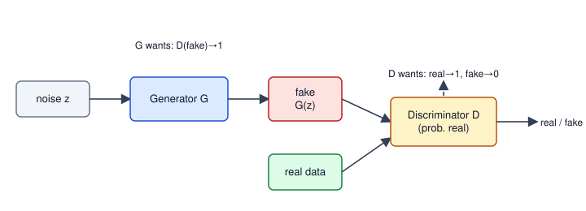
How to read it: noise z enters the generator, which outputs a fake sample. The discriminator receives a mix of real and fake samples and outputs a probability of "real". The two loss arrows show the opposing goals: D wants correct labels, G wants D to say "real" on fakes.
Real-world mapping
| Concept | Example | Where it appears in the job |
|---|---|---|
| Mode collapse | width fell to 0.035 | Generated faces that all look alike |
| Oscillating losses | D and G take turns winning | Why GAN loss curves cannot be read like normal ones |
| Conditional GAN | label fed to both networks | Generate "digit 7" on request |
| Image-to-image GAN (pix2pix, CycleGAN) | sketch to photo | Image translation and style transfer |
Applications
- Super-resolution and photo enhancement: sharper details than MSE-trained models.
- Synthetic data: extra rare-class images for training (Chapter 7).
- Image translation: day to night, sketch to photo.
- Deepfakes: a misuse case; always follow consent and legal rules (DPDP Act in India, EU AI Act) and disclose synthetic media.
Check yourself
- What does the discriminator output? Answer: the probability that its input is real.
- What is mode collapse? Answer: the generator produces only a few similar outputs.
- Why use
−ln D(fake)for the generator? Answer: its gradient stays strong when the discriminator easily spots fakes.
13.4 Diffusion Models
Why diffusion replaced GANs for most image work
GANs are fast to sample (one pass) but unstable and prone to mode collapse (as the demo showed). Diffusion is trained with a simple regression loss (predict the noise), is stable, covers the data well, and its quality scales with compute. Its cost: sampling needs many network passes (tens to a thousand), though faster samplers and distillation reduced this a lot.
Words you need
| Word | Plain meaning |
|---|---|
x₀ | The clean data (an image) |
x_t | The image after t noising steps (t = 1 … T) |
β_t | How much noise is added at step t (small, e.g. from 0.0001 to 0.02) |
α_t, ᾱ_t | α_t = 1 − β_t; ᾱ_t is the product α₁·α₂·…·α_t, the fraction of original signal left |
ε | Random noise from the standard bell curve N(0, 1) |
| Schedule | The list of all β_t values |
The forward process (adding noise)
One step: x_t = √α_t · x_{t−1} + √β_t · ε. A lucky maths fact: composing all steps gives a direct jump:
x_t = √ᾱ_t · x₀ + √(1 − ᾱ_t) · εSo training never needs to run the chain; it can jump to any t in one line. The signal is scaled by √ᾱ_t and the noise by √(1 − ᾱ_t).
Problem 13.4.1 One pixel x₀ = 2.0, noise ε = 0.5 and a step where ᾱ_t = 0.5241 (that is t = 250 in the schedule below). Compute x_t, then recover x₀ from x_t and ε.
| Formula | x_t = √ᾱ · x₀ + √(1−ᾱ) · ε; and inverted: x₀ = (x_t − √(1−ᾱ)·ε) / √ᾱ. |
|---|---|
| Plug in | √0.5241 = 0.7239; √(1 − 0.5241) = √0.4759 = 0.6899. |
| Compute | x_t = 0.7239·2.0 + 0.6899·0.5 = 1.4478 + 0.3450 = 1.7928. Back: (1.7928 − 0.3450)/0.7239 = 1.4478/0.7239 = 2.0. |
| Answer | x_t = 1.7928, and if we know ε exactly we get x₀ = 2.0 back. |
| Check | The scales satisfy 0.7239² + 0.6899² = 0.5240 + 0.4760 = 1.0: signal and noise energy always add to 1, so x_t stays on a stable scale. |
| Interpretation | This is the whole training idea: if a network can predict the noise ε from x_t and t, it can recover the clean image. So the training loss is just mean((ε − ε̂(x_t, t))²). |
Running the numbers
Before you run it, predict: at the middle step (t = 500 of 1000) is the image mostly signal or mostly noise?
import numpy as np
np.set_printoptions(precision=4, suppress=True)
T = 1000
beta = np.linspace(1e-4, 0.02, T); alpha = 1 - beta; abar = np.cumprod(alpha)
for t in (1, 100, 250, 500, 750, 1000):
i = t - 1; print("t", t, "abar", round(abar[i], 5), "signal scale", round(np.sqrt(abar[i]), 4), "noise scale", round(np.sqrt(1-abar[i]), 4))
# closed form vs step by step, for x0 = 2.0 at t = 300
rng = np.random.default_rng(0)
t = 300
M = 200000
xt_iter = np.full(M, 2.0)
for i in range(t): xt_iter = np.sqrt(alpha[i]) * xt_iter + np.sqrt(beta[i]) * rng.standard_normal(M)
xt_closed = np.sqrt(abar[t-1]) * 2.0 + np.sqrt(1-abar[t-1]) * rng.standard_normal(M)
print("iterative mean/std", xt_iter.mean().round(3), xt_iter.std().round(3))
print("closed form mean/std", xt_closed.mean().round(3), xt_closed.std().round(3))
# forward noising of a 1-D "image" row
sig = np.sin(np.linspace(0, 64*np.pi, 4096))
for t in (1, 100, 300, 600, 1000):
e = rng.standard_normal(4096); xt = np.sqrt(abar[t-1])*sig + np.sqrt(1-abar[t-1])*e
ab=abar[t-1]; print("t", t, "corr(x_t, x_0) =", round(np.corrcoef(xt, sig)[0, 1], 3), " theory", round(np.sqrt(ab*0.5/(ab*0.5+1-ab)), 3))t 1 abar 0.9999 signal scale 0.9999 noise scale 0.01
t 100 abar 0.89702 signal scale 0.9471 noise scale 0.3209
t 250 abar 0.52409 signal scale 0.7239 noise scale 0.6899
t 500 abar 0.07859 signal scale 0.2803 noise scale 0.9599
t 750 abar 0.00335 signal scale 0.0579 noise scale 0.9983
t 1000 abar 4e-05 signal scale 0.0064 noise scale 1.0
iterative mean/std 1.262 0.778
closed form mean/std 1.261 0.775
t 1 corr(x_t, x_0) = 1.0 theory 1.0
t 100 corr(x_t, x_0) = 0.901 theory 0.902
t 300 corr(x_t, x_0) = 0.486 theory 0.497
t 600 corr(x_t, x_0) = 0.096 theory 0.114
t 1000 corr(x_t, x_0) = 0.02 theory 0.004Reading the output: at t = 500 the signal scale is 0.28 and the noise scale is 0.96: mostly noise (answer to the prediction). By t = 1000 the signal scale is 0.0064: pure static, so starting generation from pure noise is consistent with where the forward process ends. Step by step (iterative) and the one-line jump (closed form) give the same mean and spread (1.262 versus 1.261, 0.778 versus 0.775), so the shortcut is right. The correlation between the noisy sine wave and the clean one falls from 1 to 0.02, and the measured values track the theory (corr = √(ᾱσ² / (ᾱσ² + 1 − ᾱ)) with signal variance σ² = 0.5).
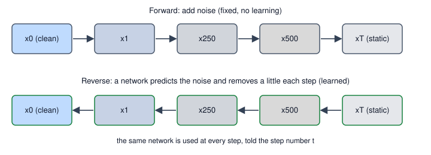
How to read it: the top row goes left to right, adding noise (the forward process, no learning). The bottom row goes right to left, where the neural network removes noise at every step (the reverse process, what is learned). The same network is used for every step; it is told t as an input.
The reverse process (generation)
The network ε̂(x_t, t) predicts the noise. One reverse step (the DDPM update) is:
x_{t−1} = (1/√α_t) · ( x_t − (β_t / √(1 − ᾱ_t)) · ε̂(x_t, t) ) + √β_t · z (z is fresh noise; none at the last step)In words: subtract the predicted noise (scaled), then add a little fresh noise so the process explores, and repeat from t = T down to 1.
Problem 13.4.2 A complete sampling run, with a network that is perfect. If the data are numbers from a bell curve with mean 2 and standard deviation 0.5, the best possible noise predictor has a closed form, so we can run the full 1,000-step generation without training anything.
| Formula | For data N(μ₀, s₀²): x_t has mean √ᾱ μ₀ and variance ᾱ s₀² + 1 − ᾱ, and the best predictor is ε̂ = √(1−ᾱ) · (x_t − √ᾱ μ₀) / (ᾱ s₀² + 1 − ᾱ). |
|---|---|
| Step 1 | Start 100,000 numbers as pure noise N(0, 1). |
| Step 2 | For t = 1000 down to 1 apply the reverse update. |
| Step 3 | Measure the mean and spread of the result. |
| Answer | Generated mean 1.998, standard deviation 0.501, versus targets 2.0 and 0.5. |
| Check | Pure noise (mean 0, std 1) was turned into numbers matching the target distribution to within 0.002 in mean and 0.001 in spread. |
| Interpretation | This shows that the reverse recipe is correct. With real images the noise predictor is a big neural network (usually a U-Net, Chapter 9, or a transformer) learned from data; the update formula is the same. |
# continues the script above (it uses T, beta, alpha, abar, rng)
mu0, s0 = 2.0, 0.5
def eps_hat(x, t):
ab = abar[t]; var = ab*s0**2 + 1 - ab
return np.sqrt(1-ab) * (x - np.sqrt(ab)*mu0) / var
M = 100000; x = rng.standard_normal(M)
for t in range(T-1, -1, -1):
ab = abar[t]; mean = (x - beta[t]/np.sqrt(1-ab) * eps_hat(x, t)) / np.sqrt(alpha[t])
x = mean + (np.sqrt(beta[t]) * rng.standard_normal(M) if t > 0 else 0)
print("generated mean", x.mean().round(3), "std", x.std().round(3), "target 2.0 and 0.5")generated mean 1.998 std 0.501 target 2.0 and 0.5(The outputs in this section came from running the two listings as one script, so the random numbers line up; if you run them separately, expect tiny differences in the last digit.)
Training in three lines (PyTorch, not run here):
# not run here
t = torch.randint(0, T, (batch,)) # random step for each image
eps = torch.randn_like(x0) # the noise we add
xt = abar[t].sqrt().view(-1,1,1,1) * x0 + (1 - abar[t]).sqrt().view(-1,1,1,1) * eps
loss = F.mse_loss(model(xt, t), eps) # predict the noiseMaking diffusion practical
- Latent diffusion (Stable Diffusion): do not diffuse pixels. A VAE (Section 13.2) first compresses the image to a small latent, diffusion runs there, and the VAE decoder returns to pixels. A 512×512×3 image is 786,432 numbers; a typical latent of 64×64×4 is 16,384: 48 times smaller, so training and sampling are far cheaper.
- Text conditioning: a text encoder (CLIP-style, Chapter 12) turns the prompt into vectors; the denoiser attends to them with cross-attention (Chapter 11).
- Classifier-free guidance (CFG): train the model sometimes with the prompt and sometimes without. At sampling time, push the prediction away from "no prompt" toward "with prompt":
ε̂ = ε_uncond + w·(ε_cond − ε_uncond). A bigger guidance weightwfollows the prompt more closely, with less variety. - Faster samplers (DDIM and others): skip steps, giving good images in 20-50 passes instead of 1,000.
- ControlNet and LoRA for images: ControlNet adds an extra input (edges, pose, depth) to control layout. LoRA adds small trainable low-rank matrices to a frozen model so you can teach a style or a subject cheaply (the same LoRA idea as for language models: see
study/genai/).
Problem 13.4.3 Apply classifier-free guidance to two toy 2-number noise predictions, ε_uncond = (0.10, −0.30) and ε_cond = (0.40, −0.10), for w = 0, 1, 3, 7.5.
| Formula | ε̂ = ε_u + w·(ε_c − ε_u); the difference is (0.30, 0.20). |
|---|---|
| Compute | w = 0: (0.1, −0.3). w = 1: (0.4, −0.1). w = 3: (0.1+0.9, −0.3+0.6) = (1.0, 0.3). w = 7.5: (0.1+2.25, −0.3+1.5) = (2.35, 1.2). |
| Answer | w = 0 ignores the prompt, w = 1 is the plain conditional model, larger w exaggerates the direction that the prompt adds. |
| Check | The code printed [0.1 -0.3], [0.4 -0.1], [1. 0.3], [2.35 1.2]. |
| Interpretation | CFG is an extrapolation. Too large a w gives over-saturated, odd images, which is why typical values are moderate. |
e_u, e_c = np.array([0.10, -0.30]), np.array([0.40, -0.10])
for w in (0, 1, 3, 7.5): print("w", w, "guided eps", e_u + w*(e_c - e_u))
print("pixel space", 512*512*3, "latent", 64*64*4, "ratio", 512*512*3/(64*64*4))w 0 guided eps [ 0.1 -0.3]
w 1 guided eps [ 0.4 -0.1]
w 3 guided eps [1. 0.3]
w 7.5 guided eps [2.35 1.2 ]
pixel space 786432 latent 16384 ratio 48.0Normalizing flows and the family tree (awareness)
A normalizing flow builds data from noise with a chain of invertible maps, so the exact probability of any sample can be computed. For one step x = 2z + 1 with z ~ N(0,1), the density is p(x) = p_z((x−1)/2) / 2: the division by 2 compensates for the stretch (the "change of variables" rule). Flows give exact likelihoods but need special layers; they are less popular for images today.
| Model | Trained by | Sampling | Strength | Weakness |
|---|---|---|---|---|
| Autoencoder | reconstruction | not generative by itself | compression, anomaly detection | cannot sample new data |
| VAE | reconstruction + KL | one pass | stable, smooth latent space | blurry |
| GAN | adversarial game | one pass | sharp, fast | unstable, mode collapse |
| Diffusion | predict the noise | many passes | quality, diversity, stable | slow sampling |
| Flow | exact likelihood | one pass | exact probabilities | restricted architecture |
Real-world mapping
| Concept | Example | Where it appears in the job |
|---|---|---|
Noise schedule β_t | 0.0001 to 0.02 over 1,000 steps | Config of any diffusion pipeline |
Guidance weight w | 7.5 as a common default | A knob in image generation tools |
| Latent compression | 48 times fewer numbers | GPU memory and cost of image generation |
| Number of sampling steps | 20-50 | Latency of a generation API |
Applications
- Marketing and design: text-to-image, image editing and in-painting.
- Machine learning: synthetic training images for rare defects.
- Healthcare and science: generating molecules or structures, denoising scans.
- Audio and video: speech, music and video generation use diffusion variants.
- Responsible use: watermark or label generated images, respect copyright, consent and privacy law.
t and must be told t. Forgetting to pass t (or using a different schedule at sampling time than in training) produces garbage images with no error message.Check yourself
- In the forward process, what is the signal scale at step
t? Answer:√ᾱ_t. - What does the network predict during training? Answer: the noise
εthat was added. - Why is latent diffusion cheaper? Answer: it runs diffusion on a small latent from a VAE (48 times fewer numbers in our example).
Chapter recap
- Autoencoders squeeze and rebuild; a small bottleneck forces useful structure; a linear one equals PCA; reconstruction error finds anomalies.
- VAEs encode each input as a bell curve (
μ,σ), add a KL term pulling clouds towardN(0, 1), and usez = μ + σεso gradients flow; you generate by samplingzand decoding. - GANs train a generator and discriminator against each other; use the non-saturating generator loss; expect instability and mode collapse (we saw the width fall to 0.035).
- Diffusion adds noise in a forward chain (jump directly with
x_t = √ᾱ x₀ + √(1−ᾱ) ε) and learns to predict the noise; generation runs the reverse steps from pure static. - Our exact-predictor demo recovered mean 1.998 and std 0.501 for a target of 2.0 and 0.5, which checks the reverse formula.
- Latent diffusion works on VAE latents (48 times smaller), text conditioning uses cross-attention, and classifier-free guidance extrapolates toward the prompt.
- ControlNet adds spatial control; LoRA adds cheap style or subject learning; flows give exact likelihoods but are less common for images.
- Generated media needs responsible use: consent, copyright and clear labelling.
| Item | Formula or pattern |
|---|---|
| Autoencoder loss | mean((x̂ − x)²) |
| VAE KL (per dimension) | ½(σ² + μ² − 1 − ln σ²) |
| Reparameterisation | z = μ + σ·ε, ε ~ N(0,1) |
| GAN losses | D: −[ln D(r) + ln(1−D(f))]; G: −ln D(f) |
| Forward diffusion | x_t = √ᾱ_t x₀ + √(1−ᾱ_t) ε |
| Diffusion training loss | mean((ε − ε̂(x_t, t))²) |
| Reverse step | x_{t−1} = (x_t − β_t/√(1−ᾱ_t)·ε̂)/√α_t + √β_t·z |
| CFG | ε_u + w(ε_c − ε_u) |
Practice set
1. (easy) An autoencoder maps 100 inputs to 10 codes and back with one dense layer each way (biases included). How many parameters? Answer: encoder 100·10 + 10 = 1,010; decoder 10·100 + 100 = 1,100; total 2,110.
2. (easy) KL for one dimension with μ = 0, σ = 1. What should it be, and why? Answer: ½(1 + 0 − 1 − ln 1) = 0. The cloud equals the standard bell curve, so there is no difference.
3. (computation) KL for μ = 2, σ = 1. Answer: ½(1 + 4 − 1 − 0) = 2.0.
4. (computation) Find x_t for x₀ = 1, ε = −1, ᾱ_t = 0.64. Answer: √0.64 = 0.8, √0.36 = 0.6: x_t = 0.8·1 + 0.6·(−1) = 0.2.
5. (what is the output?) With ᾱ_t = 0.64, x_t = 0.2 and a perfect prediction ε̂ = −1, what is the recovered x₀? Answer: (0.2 − 0.6·(−1))/0.8 = 0.8/0.8 = 1.0.
6. (computation) GAN with D(real) = 0.9 and D(fake) = 0.1. Compute D's loss and G's non-saturating loss. Answer: D = −[ln 0.9 + ln 0.9] = 2 × 0.1054 = 0.2107. G = −ln 0.1 = 2.3026.
7. (find the bug) A VAE code line is z = mu + sigma (the eps was forgotten). What happens? Answer: there is no randomness, so it behaves like a plain autoencoder; the KL term still pushes μ and σ, but sampling from N(0,1) at generation time then gives poor images. Always z = mu + sigma * eps.
8. (find the bug) A diffusion model is trained with T = 1000 steps but sampled with a schedule that has β up to 0.2. Images come out as static. Why? Answer: the sampler's ᾱ_t values do not match the ones the network saw in training, so the network is asked to remove noise levels it never learned. Use the same schedule (or a sampler designed for it).
9. (scenario) A factory has 20,000 photos of good parts and only 30 of defective ones. Which generative idea fits and how would you use it? Answer: train a (convolutional) autoencoder or VAE on good parts only and flag parts with a high reconstruction error; set the threshold with the 30 defective samples and a validation set of good parts. Alternatively generate synthetic defects with a diffusion model plus LoRA, but validate that they look real.
10. (scenario) Your GAN's generator loss keeps dropping but the images are all the same. What is happening and what do you try? Answer: mode collapse. Try: lower learning rate for D or G, add minibatch statistics, use a more stable loss (such as Wasserstein with gradient penalty), spectral normalisation, or switch to diffusion.
11. (interview) "Why does a VAE need the reparameterisation trick?" Answer: sampling z from N(μ, σ²) is not differentiable. Writing z = μ + σε with ε from N(0,1) makes z a deterministic function of μ and σ, so the loss gradient flows to the encoder. The estimator is unbiased (we checked 2.001 versus 2.0).
12. (interview) "Compare GANs and diffusion models for image generation." Answer: GANs: single pass, fast, but unstable training and mode collapse. Diffusion: stable regression loss on predicting noise, high quality and diversity, but slow multi-step sampling (reduced by faster samplers and latent diffusion). Today diffusion is the default for high-quality text-to-image, and GANs remain useful where speed matters.
Prompt pack
You are my patient, practical professor. I am a working professional moving into data roles; English is my second language, so use simple words. Teach me autoencoders and variational autoencoders step by step: the bottleneck, reconstruction loss, the KL term, and the reparameterisation trick. Use a tiny numeric example with one latent dimension and compute the KL by hand. After each step ask me one check question and wait for my reply.
You are my patient, practical professor. I am a working professional moving into data roles. Topic: GANs (generator, discriminator, non-saturating loss, mode collapse). Give me 8 graded exercises with small numbers (for example computing discriminator and generator losses from given probabilities) without solutions. After I send my answers, check each one step by step and explain any mistake in simple English.
You are my patient, practical professor. I am a working professional moving into data roles. Explain diffusion models from the ground up: the forward noising formula with alpha-bar, why we can jump to any step, what the network predicts, and one reverse sampling step. Walk through one pixel with real numbers and verify that the clean value can be recovered. Then ask me three questions about it, one at a time.
You are my patient, practical professor. I am a working professional moving into data roles. Review my from-scratch generative model code (autoencoder, VAE, GAN or diffusion) for bugs such as a missing epsilon in the reparameterisation, wrong KL sign, wrong noise schedule, or missing timestep input. Explain each bug with a tiny numeric check and give the corrected code. My code: [PASTE HERE].
You are my patient, practical professor. I am a working professional moving into data roles and preparing for interviews. Run a mock interview on generative models: autoencoders, VAEs, GANs, diffusion, latent diffusion, classifier-free guidance, and responsible use of synthetic media. Ask one question at a time, grade my answer from 1 to 5, show a strong answer, and ask a follow-up about trade-offs in quality, speed and stability. Do 8 questions.
A model that works in a notebook is only half a product. In a real job, someone asks: "Can it answer in 50 ms? Does it fit on this phone or this small GPU? What does it cost per million requests?" Those are questions about measurement and trade-offs, and this chapter gives you the tools to answer them. You will shrink a model's numbers with quantization (with real numbers on paper and in NumPy), remove weights by pruning, train a small student from a big teacher by distillation, understand how ONNX and other runtimes ship a model, measure latency and throughput properly, and see the arithmetic behind multi-GPU training. The chapter ends with capstone projects that turn this whole document into a portfolio, and an interview bank covering Chapters 1 to 14.
14.1 Quantization
Words you need
| Word | Plain meaning |
|---|---|
| fp32 / fp16 | 32-bit / 16-bit floating point numbers (4 and 2 bytes each) |
| int8 / int4 | Whole numbers using 8 / 4 bits (1 and 0.5 byte each); int8 holds −128 to 127 |
Scale s | The size of one integer step in real units |
| Zero point | An integer that stands for real 0 in asymmetric schemes |
| PTQ | Post-training quantization: quantize an already trained model, no retraining |
| QAT | Quantization-aware training: simulate quantization during training so the model adapts |
How it works (symmetric int8)
scale s = max(|w|) / 127
q = round(w / s), clipped to [−127, 127] (stored as int8)
w_hat = q × s (dequantized value)The biggest possible error for any weight is half a step, s / 2, as long as no clipping occurs.
Problem 14.1.1 Quantize w = (0.31, −0.84, 0.05, 1.29, −0.60, 0.02) to int8.
| Formula | s = max|w| / 127, q = round(w/s). |
|---|---|
| Plug in | max|w| = 1.29, so s = 1.29/127 = 0.010157. |
| Compute | 0.31/0.010157 = 30.52, rounds to 31. −0.84/0.010157 = −82.7, rounds to −83. 0.05/0.010157 = 4.92, rounds to 5. 1.29/0.010157 = 127. −0.60/0.010157 = −59.07, rounds to −59. 0.02/0.010157 = 1.97, rounds to 2. |
| Answer | The int8 codes are (31, −83, 5, 127, −59, 2); dequantized (0.3149, −0.8431, 0.0508, 1.29, −0.5993, 0.0203). |
| Check | The largest error is |0.31 − 0.3149| = 0.0049, below half a step 0.0051. The code prints the same. |
| Interpretation | Six decimals that cost 24 bytes in fp32 become six single-byte integers plus one scale (10 bytes), with errors under 0.005. |
Before you run it, predict: with only 4 bits (levels −7 to 7) will the error be bigger or smaller, and by roughly how many times?
import numpy as np
np.set_printoptions(precision=4, suppress=True)
w = np.array([0.31, -0.84, 0.05, 1.29, -0.60, 0.02])
scale = np.abs(w).max() / 127
q = np.clip(np.round(w / scale), -127, 127).astype(np.int8)
wd = q * scale
print("scale", round(scale, 5)); print("int8", q); print("dequantized", wd)
print("abs error", np.abs(w - wd)); print("max error", np.abs(w-wd).max().round(5), " half step", round(scale/2, 5))
s4 = np.abs(w).max() / 7; q4 = np.clip(np.round(w / s4), -7, 7)
print("int4 levels", q4, "dequant", q4*s4, "max err", np.abs(w-q4*s4).max().round(4))scale 0.01016
int8 [ 31 -83 5 127 -59 2]
dequantized [ 0.3149 -0.8431 0.0508 1.29 -0.5993 0.0203]
abs error [0.0049 0.0031 0.0008 0. 0.0007 0.0003]
max error 0.00488 half step 0.00508
int4 levels [ 2. -5. 0. 7. -3. 0.] dequant [ 0.3686 -0.9214 0. 1.29 -0.5529 0. ]
max err 0.0814The int4 max error is 0.0814 versus 0.0049 for int8: about 17 times bigger, because the step is 127/7 = 18 times larger. Note also that 0.05 and 0.02 collapse to 0 in int4: small weights vanish.
Asymmetric quantization and the outlier problem
Some values (for example outputs of ReLU) are never negative. Asymmetric quantization maps [min, max] to [0, 255] using a scale s = (max − min)/255 and a zero point z = round(−min/s); q = round(x/s) + z. For x = (0, 0.5, 2, 6) this gives q = (0, 21, 85, 255), z = 0, dequantized (0, 0.4941, 2.0, 6.0).
Problem 14.1.2 Show how one outlier ruins a per-tensor scale. Weights (0.10, −0.12, 0.08, 0.05, −0.07, 8.0).
| Step 1 | s = 8.0/127 = 0.063. |
|---|---|
| Step 2 | Codes: 0.10/0.063 = 1.6, rounds to 2; −0.12/0.063 = −1.9, rounds to −2; 0.08/0.063 = 1.3, rounds to 1; 0.05/0.063 = 0.8, rounds to 1; −0.07/0.063 = −1.1, rounds to −1; 127. |
| Step 3 | Dequantized: (0.126, −0.126, 0.063, 0.063, −0.063, 8.0). |
| Answer | The five normal weights are squeezed into only a handful of tiny integer codes (1 and 2), with 20-60% relative error, because the outlier forced a coarse step. |
| Check | Compare with the earlier example: its largest value 1.29 gave a step of 0.010. Here 8.0 gives a step of 0.063, six times coarser. |
| Interpretation | Outliers are the main enemy of low-bit quantization. The fixes: quantize per row or per channel (each with its own scale), or keep outliers in higher precision. Large language models have strong outlier channels, so methods such as GPTQ and AWQ are built around them (details in study/genai/). |
w2 = np.array([0.10, -0.12, 0.08, 0.05, -0.07, 8.0]); s2 = np.abs(w2).max()/127
print("with outlier: int codes", np.round(w2/s2), "dequant", np.round(w2/s2)*s2)
rng = np.random.default_rng(0)
W = rng.standard_normal((4, 64)) * np.array([[0.02], [0.05], [0.1], [1.0]]) # rows with very different sizes
def qd(W, axis):
s = np.abs(W).max(axis=axis, keepdims=True) / 127; return np.round(W/s)*s
print("per-tensor MSE", ((qd(W, None) - W)**2).mean(), "per-row MSE", ((qd(W, 1) - W)**2).mean())
for name, b in [("fp32",4),("fp16",2),("int8",1),("int4",0.5)]: print(name, "7B params ->", 7e9*b/1e9, "GB")with outlier: int codes [ 2. -2. 1. 1. -1. 127.] dequant [ 0.126 -0.126 0.063 0.063 -0.063 8. ]
per-tensor MSE 5.1760703231786286e-05 per-row MSE 1.228009013964982e-05
fp32 7B params -> 28.0 GB
fp16 7B params -> 14.0 GB
int8 7B params -> 7.0 GB
int4 7B params -> 3.5 GBPer-row scales cut the error 4.2 times (5.18e-05 versus 1.23e-05) when rows differ in size. The last lines are the memory arithmetic every GenAI engineer does: a 7-billion-parameter model needs 28 GB in fp32 but about 3.5 GB in int4 (weights only; activations and the KV cache from Chapter 11 come on top).
Does accuracy survive? A measured example
We train a small network (2 inputs, 64 ReLU hidden units, 1 output; 257 parameters) on two interleaved half-moons (the data shape from Chapter 2), then quantize its weights to fewer bits and test.
import numpy as np
rng = np.random.default_rng(0)
def moons(n, noise=0.15):
t = rng.uniform(0, np.pi, n//2)
a = np.c_[np.cos(t), np.sin(t)]; b = np.c_[1 - np.cos(t), 0.5 - np.sin(t)]
X = np.r_[a, b] + noise * rng.standard_normal((n, 2)); y = np.r_[np.zeros(n//2), np.ones(n//2)]
return X, y
Xtr, ytr = moons(600); Xte, yte = moons(600)
H = 64
W1 = rng.standard_normal((2, H)) * 0.5; b1 = np.zeros(H); W2 = rng.standard_normal((H, 1)) * 0.5; b2 = np.zeros(1)
sig = lambda z: 1/(1+np.exp(-z))
def fwd(X, W1, b1, W2, b2): h = np.maximum(0, X@W1 + b1); return sig(h@W2 + b2)[:, 0], h
lr = 0.5
for ep in range(3000):
p, h = fwd(Xtr, W1, b1, W2, b2); d = (p - ytr)[:, None] / len(Xtr)
gW2 = h.T @ d; gb2 = d.sum(0); dh = d @ W2.T * (h > 0); gW1 = Xtr.T @ dh; gb1 = dh.sum(0)
W1 -= lr*gW1; b1 -= lr*gb1; W2 -= lr*gW2; b2 -= lr*gb2
acc = lambda W1, W2: (((fwd(Xte, W1, b1, W2, b2)[0] > 0.5) == yte).mean())
print("full-precision test accuracy", acc(W1, W2), " params", W1.size + W2.size + H + 1)
def quant(W, bits):
qmax = 2**(bits-1) - 1; s = np.abs(W).max() / qmax; return np.round(W/s).clip(-qmax, qmax) * s
for bits in (8, 4, 3, 2): print("int%d weights: accuracy" % bits, acc(quant(W1, bits), quant(W2, bits)))full-precision test accuracy 0.985 params 257
int8 weights: accuracy 0.985
int4 weights: accuracy 0.985
int3 weights: accuracy 0.9866666666666667
int2 weights: accuracy 0.7666666666666667Reading it: 8, 4 and even 3 bits keep accuracy (0.985 to 0.987; the tiny rise at 3 bits is noise on 600 test points, not a real gain). At 2 bits (only levels −1, 0, 1) accuracy falls to 0.767. The model has a comfortable margin, so quantization is almost free until a cliff. The cliff is the lesson: always measure on your own test set.
PTQ, QAT and where it runs
- Post-training quantization (PTQ): easiest; a small calibration set gives the ranges of activations. Good for int8 on vision models and for 4-bit LLM weights.
- Quantization-aware training (QAT): simulate rounding in the forward pass, let the model adapt. Needed when PTQ loses too much (small models, 4-bit or lower).
- Speed: int8 needs hardware support (many CPUs and GPUs have it). Smaller weights also mean less memory traffic, which is often the real bottleneck for LLM generation.
- Formats: fp16 and bf16 (training and serving), int8 (vision and classical models), int4 variants (GPTQ, AWQ, GGUF for local LLMs).
Real-world mapping
| Concept | Example | Where it appears in the job |
|---|---|---|
| Scale factor | 0.01016 | Stored next to every quantized tensor |
| Per-channel scale | one scale per row | Default in good int8 conv and linear layers |
| Memory arithmetic | 7B at int4 is 3.5 GB | Choosing which GPU or laptop can host a model |
| Accuracy cliff | int2 fell to 0.767 | Deciding how low you can go for a product |
Applications
- Mobile and edge: int8 vision models on phones, cameras, and microcontrollers.
- LLM serving: 4-bit or 8-bit weights to fit bigger models on one GPU.
- Cost reduction: fewer GPUs per million requests.
- Embedding search: int8 or binary embeddings for cheaper vector databases.
Check yourself
- With scale
s = 0.02what is the largest rounding error for an unclipped weight? Answer: half a step,0.01. - How many GB for a 13B-parameter model in fp16? Answer:
13 × 2 = 26 GB(weights only). - Why does an outlier hurt per-tensor quantization? Answer: it sets a large scale, making the step coarse for all the small weights.
14.2 Pruning and Knowledge Distillation
Pruning
Magnitude pruning sets the smallest weights (by absolute value) to zero. Unstructured pruning zeros single weights (flexible, but only fast on special hardware or sparse kernels). Structured pruning removes whole neurons, channels or attention heads, which gives real speed-up on ordinary hardware. After pruning, a short fine-tune often restores accuracy.
Problem 14.2.1 Prune the trained half-moons network and watch accuracy. A weight is zeroed if its absolute value is below the chosen percentile of all weights in that matrix.
| Step 1 | Prune 50% of each weight matrix: 96 of the 192 weights remain. |
|---|---|
| Step 2 | Prune 80%, 90%, 95% and 99%, each time testing on the 600 test points. |
| Answer | Accuracy: 0.985 at 0% pruning; 0.990 at 50%; 0.963 at 80%; 0.673 at 90%; 0.593 at 95%; 0.5 at 99%. |
| Check | At 99% only 3 weights remain, so the output is nearly constant and accuracy is 0.5 (a coin flip on balanced classes), as expected. |
| Interpretation | Like quantization, pruning has a safe zone and a cliff. This network can lose half of its weights with no loss (it was bigger than needed), but at 90% it collapses. Without fine-tuning, the cliff comes earlier than with it. |
# continues the half-moons script in 14.1 (uses acc, W1, W2, H)
def prune(W, frac):
thr = np.quantile(np.abs(W), frac); return np.where(np.abs(W) < thr, 0, W)
for fr in (0.0, 0.5, 0.8, 0.9, 0.95, 0.99):
print("prune %.0f%%: accuracy" % (fr*100), acc(prune(W1, fr), prune(W2, fr)), " nonzero", int((prune(W1, fr) != 0).sum() + (prune(W2, fr) != 0).sum()))prune 0%: accuracy 0.985 nonzero 192
prune 50%: accuracy 0.99 nonzero 96
prune 80%: accuracy 0.9633333333333334 nonzero 39
prune 90%: accuracy 0.6733333333333333 nonzero 20
prune 95%: accuracy 0.5933333333333334 nonzero 11
prune 99%: accuracy 0.5 nonzero 3Knowledge distillation
A big teacher model produces output probabilities. A small student is trained to copy them. To expose the teacher's finer opinions we soften its probabilities with a temperature T: divide the logits by T before softmax. A higher T makes the distribution flatter, so the "dark knowledge" (how likely it thinks the wrong classes are) becomes visible.
soft loss = T² × KL( softmax(teacher/T) ‖ softmax(student/T) )
total loss = α × soft loss + (1 − α) × normal cross-entropy with the true labelThe T² factor keeps gradient sizes comparable when T changes. α balances the two terms.
Problem 14.2.2 Teacher logits (4, 1, 0), student logits (2, 1.5, 0.5), true class 0. Compute softened probabilities at T = 1 and T = 4, then the distillation loss.
| Step 1 | T = 1, teacher: e⁴ = 54.60, e¹ = 2.718, e⁰ = 1, sum 58.32, probabilities (0.9362, 0.0466, 0.0171). |
|---|---|
| Step 2 | T = 4, teacher logits become (1, 0.25, 0): e = (2.718, 1.284, 1), sum 5.002, probabilities (0.5434, 0.2567, 0.1999). The student at T = 4: (0.3891, 0.3434, 0.2674). |
| Step 3 | KL = Σ p_t ln(p_t/p_s) = 0.5434·ln(0.5434/0.3891) + 0.2567·ln(0.2567/0.3434) + 0.1999·ln(0.1999/0.2674) = 0.1815 − 0.0747 − 0.0581 = 0.0487. Times T² = 16: about 0.78 (code: 0.7768; the small difference is rounding in my hand steps). |
| Step 4 | Hard loss: the student's T = 1 probability of the true class is 0.5465, so −ln 0.5465 = 0.6041. With α = 0.5: 0.5·0.7768 + 0.5·0.6041 = 0.6905. |
| Answer | Soft loss 0.7768, hard loss 0.6041, total (α = 0.5) 0.6905. |
| Check | If the student matched the teacher exactly, the KL would be 0. Also, at T = 4 the teacher still ranks class 0 first but reveals that class 1 (0.257) is a bit likelier than class 2 (0.200): that is the extra information. |
| Interpretation | The student gets a richer target than a one-hot label: it learns the teacher's similarities between classes. |
import numpy as np
np.set_printoptions(precision=4, suppress=True)
def softmax(z): z = z - z.max(); e = np.exp(z); return e / e.sum()
t_logits = np.array([4.0, 1.0, 0.0]); s_logits = np.array([2.0, 1.5, 0.5])
for T in (1, 4):
print("T", T, "teacher", softmax(t_logits / T), "student", softmax(s_logits / T))
def kl(p, q): return (p * np.log(p / q)).sum()
T = 4; pt, ps = softmax(t_logits/T), softmax(s_logits/T)
soft = T**2 * kl(pt, ps); hard = -np.log(softmax(s_logits)[0])
print("soft loss (T^2 * KL)", round(soft, 4), " hard CE (true class 0)", round(hard, 4))
for alpha in (0.5, 0.9): print("alpha", alpha, "total", round(alpha*soft + (1-alpha)*hard, 4))T 1 teacher [0.9362 0.0466 0.0171] student [0.5465 0.3315 0.122 ]
T 4 teacher [0.5434 0.2567 0.1999] student [0.3891 0.3434 0.2674]
soft loss (T^2 * KL) 0.7768 hard CE (true class 0) 0.6041
alpha 0.5 total 0.6905
alpha 0.9 total 0.7596In PyTorch the soft term is F.kl_div(F.log_softmax(s/T, -1), F.softmax(t/T, -1), reduction="batchmean") * T*T (not run here; note kl_div expects log-probabilities as its first argument).
Where distillation is used: DistilBERT (a smaller BERT trained from BERT), DeiT (a vision transformer trained with a CNN teacher, Chapter 12), small language models trained on outputs of larger ones, and speed-ups of diffusion samplers (Chapter 13). Check the licence of a teacher model before using its outputs to train a student: some providers' terms forbid it.
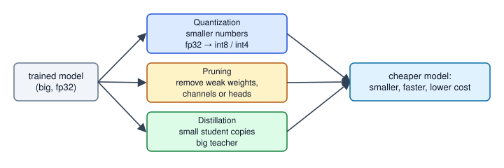
How to read it: three boxes show three different ways to get a cheaper model. They can be combined: distil a small student, prune it, then quantize it.
Real-world mapping
| Technique | Example | Where it appears in the job |
|---|---|---|
| Structured pruning | remove 30% of channels | Faster CNN on a CPU without special kernels |
| Unstructured pruning | 50% zero weights | Smaller files; speed only with sparse support |
| Distillation | DistilBERT | Cheaper search and classification models |
| Combination | distil, prune, quantize | Mobile deployment pipelines |
Applications
- Mobile apps: distilled and quantized models for on-device features.
- Search and chat at scale: small student models answer most requests, big models handle hard ones.
- Real-time video: pruned detectors reach the needed frames per second (Chapter 9).
- Cost control: inference is paid per request, forever, so a 3 times cheaper model is a recurring saving.
Check yourself
- What does a higher temperature do to softmax output? Answer: makes it flatter, exposing the teacher's relative ranking of wrong classes.
- Why multiply the soft loss by
T²? Answer: to keep its gradient size comparable across temperatures. - Which pruning gives real speed-ups on ordinary hardware? Answer: structured (removing whole channels, neurons or heads).
14.3 Deployment: ONNX, Runtimes, and Measuring Latency
The landscape
| Tool | What it is | Typical use |
|---|---|---|
| ONNX | Open model format (graph plus weights) | Move a model between frameworks and runtimes |
| ONNX Runtime | Engine that runs ONNX on CPU, GPU and more | Portable serving, often a good first step |
| TensorRT | NVIDIA's optimiser and runtime | Fastest inference on NVIDIA GPUs |
| OpenVINO | Intel's toolkit | CPU and Intel hardware |
| TFLite, Core ML | Mobile runtimes (Android, Apple) | On-device models |
torch.compile, TorchScript | PyTorch-side graph optimisation | Speed-up without leaving PyTorch (Chapter 5) |
What these tools do to speed up: operator fusion (merge conv + batch norm + ReLU into one kernel), constant folding, lower precision (Section 14.1), and memory-layout choices.
Exporting a PyTorch model (not run here):
# not run here (needs torch and onnx)
import torch
model.eval() # inference mode: batch norm and dropout behave correctly
dummy = torch.randn(1, 3, 224, 224) # example input fixes the graph shapes
torch.onnx.export(model, dummy, "model.onnx", input_names=["image"], output_names=["logits"],
dynamic_axes={"image": {0: "batch"}}) # allow any batch size
# then, with onnxruntime:
# import onnxruntime as ort; sess = ort.InferenceSession("model.onnx"); out = sess.run(None, {"image": x_numpy})Check after exporting: run the same input through the PyTorch model and the ONNX model and compare outputs with np.allclose(..., atol=1e-4). If they differ, a common cause is forgetting model.eval().
Measure before you promise
Do not guess; measure, and report percentiles. Two numbers matter: latency (time for one request) and throughput (requests handled per second). The p50 is the median time, and the p95 is the time that 95% of requests beat; it shows the slow tail that users notice. Batching raises throughput because the hardware does more useful work per call, but it can increase latency, like a delivery van that waits until it is full before leaving: the van is more efficient, but the first parcel waits longer.
Problem 14.3.1 Measure a matrix multiply (a stand-in for one dense layer, 1024 by 1024) at batch sizes 1, 8, 64, 256: median (p50) and p95 latency, and throughput.
| Formula | throughput = batch / p50 latency (in seconds); per-sample time = p50 / batch. |
|---|---|
| Step 1 | Warm up (10 runs not counted: caches and thread pools start cold), then time 200 runs per batch size with time.perf_counter. |
| Step 2 | Take the 50th and 95th percentiles of the 200 timings. |
| Answer | On the machine that ran this (yours will differ): batch 1: p50 0.014 ms and 71,000 samples/s; batch 8: 0.033 ms and 242,000/s; batch 64: 0.101 ms and 635,000/s; batch 256: 0.382 ms and 671,000/s. |
| Check | Per-sample time falls from 0.0141 ms (batch 1) to 0.0015 ms (batch 256): 9.4 times cheaper per sample, while the batch call itself is 27 times slower than batch 1 (0.382 versus 0.014 ms). Both are consistent with throughput 256 / 0.000382 = 670,000. |
| Interpretation | Throughput nearly flattens past batch 64: the hardware is saturated. This is the classic trade: pick the smallest batch that reaches near-peak throughput and still meets your latency target. Dynamic batching servers (collect requests for a few milliseconds, run them together) automate it. |
import numpy as np, time
rng = np.random.default_rng(0)
W = rng.standard_normal((1024, 1024)).astype(np.float32)
def bench(B, reps=200):
x = rng.standard_normal((B, 1024)).astype(np.float32)
for _ in range(10): x @ W # warm-up, not counted
lat = []
for _ in range(reps):
t0 = time.perf_counter(); x @ W; lat.append((time.perf_counter() - t0) * 1000)
lat = np.array(lat); return np.percentile(lat, 50), np.percentile(lat, 95)
for B in (1, 8, 64, 256):
p50, p95 = bench(B); print("batch %3d p50 %.3f ms p95 %.3f ms throughput %8.0f samples/s per-sample %.4f ms" % (B, p50, p95, B/(p50/1000), p50/B))batch 1 p50 0.014 ms p95 0.015 ms throughput 71008 samples/s per-sample 0.0141 ms
batch 8 p50 0.033 ms p95 0.036 ms throughput 242270 samples/s per-sample 0.0041 ms
batch 64 p50 0.101 ms p95 0.119 ms throughput 634710 samples/s per-sample 0.0016 ms
batch 256 p50 0.382 ms p95 0.421 ms throughput 670925 samples/s per-sample 0.0015 ms(Timings vary a little from run to run, which is why we report percentiles, not a single timing.)
Serving checklist
- Fix the service level: a p95 latency target, a throughput, and a cost per 1,000 requests.
- Profile the whole path, not only the model: image decoding and resizing on the CPU are often slower than the network (the data-loader lesson from Chapter 5).
- Try in order: batching, fp16 or int8, a faster runtime (ONNX Runtime or TensorRT), a smaller model (distillation or pruning).
- Warm up at start (the first request is slow: model load, kernel compile).
- Load-test with a tool such as Locust or k6 at realistic image sizes and concurrency.
- Monitor in production: latency percentiles, GPU memory, input drift and the distribution of prediction confidence (models fail silently, as noted in
_missing_topics.md). - Version the model and keep the old one for roll-back.
Real-world mapping
| Concept | Example | Where it appears in the job |
|---|---|---|
| p50, p95 | 0.101 ms, 0.119 ms | Service-level targets for model APIs |
| Throughput versus batch | flattens past 64 | Choosing the dynamic-batching limit |
| ONNX export | model.onnx | Hand-over from data scientist to platform team |
| Warm-up | discard first 10 runs | Fair benchmarks and cold-start planning |
Applications
- Real-time vision: camera streams with a frame budget (33 ms per frame for 30 fps).
- Recommendation and fraud: millisecond scoring behind payment flows.
- Edge and mobile: TFLite and Core ML bundles in apps.
- MLOps: model registries, canary releases and rollbacks.
Check yourself
- What is ONNX? Answer: an open, framework-neutral model file format that many runtimes can execute.
- Why discard warm-up runs? Answer: first runs are slower (caches, thread start, compilation) and are not typical.
- Why can large batches hurt a single user? Answer: the request may wait for the batch to fill and the batch call takes longer.
14.4 Distributed Training: Awareness
Words you need
| Word | Plain meaning |
|---|---|
| Data parallel (DDP) | Every GPU holds the full model and sees a different slice of the batch; gradients are averaged |
| All-reduce | The collective operation that sums (then averages) a tensor across all GPUs |
| Model / tensor parallel | One layer or one model is split across GPUs because it does not fit |
| Pipeline parallel | Different layers on different GPUs, with micro-batches flowing through |
| FSDP / ZeRO | Shard the weights, gradients and optimizer state across GPUs; gather them just in time |
| Gradient accumulation | Add up gradients over several small steps before one update, to fake a bigger batch |
Problem 14.4.1 Show that data parallelism gives the same gradient as one big batch. A regression problem with 64 samples; 4 "GPUs" take 16 samples each.
| Formula | the mean-squared-error gradient of a batch is the average of per-sample gradients, so the average of four equal-size sub-batch gradients equals the full-batch gradient. |
|---|---|
| Step 1 | Compute the gradient on all 64 samples. |
| Step 2 | Compute four gradients on 16 samples each and average them. |
| Answer | Both give (−0.09289, 1.17808, −2.34498, −7.8122, −2.83867), and the checker prints True. One worker alone gives something quite different, (0.46031, 1.15345, −3.99136, −3.78263, −4.69383). |
| Check | The sub-batches have equal size (16). With unequal sizes you must weight by size. |
| Interpretation | DDP is just a way to compute the same update faster. Averaging gradients is the all-reduce. As a consequence, the effective batch size is per-GPU batch × number of GPUs, which is why learning-rate scaling and warmup matter when you add GPUs (the linear scaling rule listed in _missing_topics.md: when the batch grows by a factor k, try scaling the learning rate by about k, with warmup). |
import numpy as np
rng = np.random.default_rng(0)
X = rng.standard_normal((64, 5)); y = X @ np.array([1., -2., 0.5, 3., 0.]) + 0.1*rng.standard_normal(64)
w = rng.standard_normal(5)
grad = lambda Xs, ys, w: 2 * Xs.T @ (Xs @ w - ys) / len(Xs)
full = grad(X, y, w)
workers = [grad(X[i*16:(i+1)*16], y[i*16:(i+1)*16], w) for i in range(4)] # each "GPU" sees 16 samples
avg = np.mean(workers, axis=0)
print("full-batch gradient ", full.round(5)); print("average of 4 workers ", avg.round(5)); print("equal:", np.allclose(full, avg))
print("one worker alone ", workers[0].round(5))
P = 7e9
bytes_per_param = 2 + 2 + 4 + 4 + 4
print("bytes/param", bytes_per_param, " 7B model:", P*bytes_per_param/1e9, "GB before activations")
for n in (1, 8): print("sharded across", n, "GPUs:", P*bytes_per_param/n/1e9, "GB per GPU")
N = 8; size = 14e9
print("ring all-reduce bytes sent per GPU for 14 GB of gradients on 8 GPUs:", 2*(N-1)/N*size/1e9, "GB")full-batch gradient [-0.09289 1.17808 -2.34498 -7.8122 -2.83867]
average of 4 workers [-0.09289 1.17808 -2.34498 -7.8122 -2.83867]
equal: True
one worker alone [ 0.46031 1.15345 -3.99136 -3.78263 -4.69383]
bytes/param 16 7B model: 112.0 GB before activations
sharded across 1 GPUs: 112.0 GB per GPU
sharded across 8 GPUs: 14.0 GB per GPU
ring all-reduce bytes sent per GPU for 14 GB of gradients on 8 GPUs: 24.5 GBProblem 14.4.2 Why can a 7-billion-parameter model not be trained on one 80 GB GPU with plain Adam in mixed precision?
| Formula | common estimate of bytes per parameter: fp16 weights 2 + fp16 gradients 2 + fp32 master weights 4 + Adam first moment 4 + Adam second moment 4 = 16. |
|---|---|
| Compute | 7 × 10⁹ × 16 = 112 × 10⁹ bytes = 112 GB, before counting activations. |
| Answer | It needs about 112 GB for model state alone: more than one 80 GB GPU. Sharding the state across 8 GPUs (FSDP or ZeRO style) brings it to 14 GB per GPU, which fits with room for activations. |
| Check | This matches the rule in Chapters 2.1 and 5: memory is roughly parameters + stored activations + optimizer state (plain fp32 with Adam also gives 16 bytes per parameter: 4 weights + 4 gradients + 8 Adam state). |
| Interpretation | This is why large-model training needs sharding, gradient checkpointing (recompute activations to save memory; see _missing_topics.md) and lower precision. The 16 bytes per parameter figure is the usual rule of thumb for this recipe; other recipes differ. |
The last line of the output is the ring all-reduce cost: each GPU sends about 2 × (N−1)/N × size bytes, here 24.5 GB for 14 GB of gradients on 8 GPUs, nearly independent of N. That is why fast links between GPUs (NVLink, InfiniBand) matter: communication can become the bottleneck, just as a slow road limits a fleet of delivery vans however many you buy.
DDP in PyTorch (not run here; launched with torchrun --nproc_per_node=4 train.py):
# not run here
import torch, torch.distributed as dist
from torch.nn.parallel import DistributedDataParallel as DDP
from torch.utils.data.distributed import DistributedSampler
dist.init_process_group("nccl")
rank = dist.get_rank(); torch.cuda.set_device(rank)
model = DDP(model.cuda(rank), device_ids=[rank])
loader = torch.utils.data.DataLoader(ds, batch_size=32, sampler=DistributedSampler(ds))
# in the loop: sampler.set_epoch(epoch); loss.backward() now all-reduces gradients automaticallyAwareness table:
| Tool | Idea | When |
|---|---|---|
| DDP | replicate model, split data | Model fits on one GPU |
| FSDP, DeepSpeed ZeRO | shard weights, gradients, optimizer state | Model state does not fit |
| Tensor / pipeline parallel | split inside the model | Very large models (hundreds of billions of parameters) |
| Gradient accumulation | several small steps per update | Large effective batch on small memory |
Hugging Face accelerate, PyTorch Lightning | wrappers that hide the boilerplate | Fast start |
Real-world mapping
| Concept | Example | Where it appears in the job |
|---|---|---|
| Effective batch | 4 GPUs × 16 = 64 | Setting learning rate when adding GPUs |
| 16 bytes per parameter | 112 GB for 7B | Planning GPU count before renting |
| All-reduce traffic | 24.5 GB per step | Choosing interconnect and checking scaling efficiency |
| Scaling efficiency | speed-up ÷ number of GPUs | The key metric when you add GPUs |
Applications
- Pretraining and fine-tuning large models: FSDP or ZeRO.
- Vision training at scale: DDP across 4-8 GPUs on ImageNet-size data.
- Hyperparameter search: many single-GPU runs in parallel (often better than one distributed run).
Check yourself
- In DDP, what is averaged across GPUs? Answer: the gradients (with an all-reduce).
- What does FSDP shard? Answer: weights, gradients and optimizer state.
- 8 GPUs, per-GPU batch 16: effective batch? Answer: 128.
14.5 Capstone Projects
For every project: use a Git repository, write a README with the problem, data source and licence, how to run it, the metrics table, and one section called "What failed and why" (employers value honest failure analysis). Track experiments (a notebook table or a tool such as MLflow or Weights & Biases).
| # | Project | Uses chapters | Deliverable and finish line |
|---|---|---|---|
| 1 | NumPy neural network and backprop, then the same in PyTorch | 1-5 | Gradient check passes (relative error below 1e-6); both versions reach the same accuracy on one dataset |
| 2 | Image classifier with transfer learning, served as a small web demo | 6, 7, 14 | A held-out test accuracy, confusion matrix, p95 latency; demo runs from one command |
| 3 | Object detection on a custom dataset (YOLO) | 9, 14 | mAP at an IoU threshold on a held-out set; error analysis with 10 failure images |
| 4 | Mini-GPT on a small corpus | 11 | Loss curve starts near ln(vocab), ends lower; sample generations; attention causality test |
| 5 | Vision search with CLIP embeddings | 12, 14 | Text-to-image search over 5,000 images, recall at 5 on 50 hand-written queries |
| 6 | Anomaly detector with an autoencoder or VAE | 13 | Threshold chosen on validation; precision and recall on labelled anomalies |
| 7 | Compression report for any model of yours | 14 | Table: fp32 vs int8 vs pruned vs distilled: size, accuracy, p50/p95 latency |
| 8 | Read a paper and reproduce one result at small scale | any | Short write-up with your numbers next to the paper's, and an honest explanation of any gap |
Projects on language models (RAG assistant, text-to-SQL, agents, QLoRA fine-tuning, Indian-language projects) are in study/genai/.
Problem 14.5.1 Write acceptance criteria for project 2 so that a reviewer can say pass or fail.
| Step 1 | Name the data and split: "5,000 images, 6 classes, stratified 70/15/15 split, no near-duplicates across splits". |
|---|---|
| Step 2 | Name the quality bar: "macro F1 at least 0.85 on the test split and no class below 0.70 recall". |
| Step 3 | Name the speed bar: "p95 latency at most 150 ms for one 224×224 image on CPU, measured over 200 requests after warm-up". |
| Step 4 | Name the artefacts: README, confusion matrix, model.onnx, a script that reproduces the numbers. |
| Answer | The four bars above make pass or fail objective. |
| Check | Each bar contains a number, a split or an artefact that a stranger can verify. |
| Interpretation | A requirement without a number is not a requirement. This is the same habit as a hospital setting a target such as "90% of patients seen within 30 minutes" rather than "be quick". |
Real-world mapping
| Habit | Example | Where it appears in the job |
|---|---|---|
| Baseline first | logistic regression or linear probe | Proves the deep model adds value |
| Failure analysis | 10 worst predictions | The part interviewers ask about |
| Reproducibility | fixed seed, pinned versions | Team hand-over |
| Honest metrics | test set touched once | Trust of your manager |
Applications
- Portfolio and interviews: one polished project beats five rough ones.
- Internal pitches: a measured prototype wins budget faster than slides.
Check yourself
- What is one thing every capstone README must contain besides results? Answer: a "What failed and why" section.
- What makes an acceptance criterion testable? Answer: it contains a number, a defined dataset split and a way to measure.
- Why start with a baseline? Answer: to prove the deep model is actually better.
14.6 Interview Bank (Chapters 1 to 14)
Practise answering aloud in 60 seconds each. Answers are model answers; add your own project examples.
Foundations and training (Chapters 1 to 5)
- Why do we need non-linear activations? Without them, stacked linear layers collapse into one linear map, so the network could not even solve XOR (Chapter 1).
- Walk me through backpropagation. A forward pass stores intermediates; the loss gradient flows backward by the chain rule; each layer multiplies the incoming gradient by its local derivative and produces gradients for its weights; the optimizer updates them (Chapter 2). Verify with a numerical gradient check.
- Training loss will not go down. What do you do? Overfit one small batch first; check the data and labels, learning rate, loss function and gradient norms; look for vanishing or exploding gradients; then scale up (Chapter 4).
- Adam versus SGD with momentum? Adam adapts a step size per parameter and works well with little tuning; SGD with momentum often generalises well on vision with a tuned schedule. AdamW decouples weight decay (Chapter 3).
- Batch norm versus layer norm? Batch norm normalises across the batch and needs reasonable batch sizes; layer norm normalises across features of each sample and is standard in transformers (Chapters 3 and 11).
- What does
model.eval()do and what doestorch.no_grad()do?eval()switches layers such as dropout and batch norm to inference behaviour;no_grad()stops building the autograd graph to save memory and time. You usually need both for inference (Chapter 5).
Vision (Chapters 6 to 9, 12)
- Why do CNNs use fewer parameters than dense networks on images? Weight sharing and local connections: parameters depend on kernel size and channels, not image size (Chapter 6).
- What problem do residual connections solve? They give gradients a direct path, so very deep networks stay trainable; each block learns a small correction (Chapter 6).
- Your classifier has 98% accuracy, but the business is unhappy. Why? Possibly class imbalance, wrong metric, or distribution shift. Look at the per-class confusion matrix and use production-like test data.
- What is IoU and mAP? IoU is overlap area divided by union area of two boxes; mAP averages precision across recall levels and classes at chosen IoU thresholds (Chapter 9).
- How does a ViT differ from a CNN? It cuts the image into patches and uses global attention with little built-in locality, so it needs more data or pretraining (Chapter 12).
- Explain CLIP and zero-shot classification. Two encoders trained with a symmetric contrastive loss on an
N×Ncosine table; at test time compare an image with text prompts for each class (Chapter 12).
Transformers and generative models (Chapters 10, 11, 13)
- Derive self-attention and explain each shape.
softmax(QKᵀ/√d_k)V; for(B, T, D)input, heads give(B, H, T, d_h), scores(B, H, T, T), output back to(B, T, D)(Chapter 11). - Why scale by √d_k? Dot products of
d_k-long vectors have standard deviation about√d_k; scaling stops softmax from saturating. - What is the KV cache and why is memory the limit in LLM serving? Stored keys and values of past tokens avoid recomputation; they grow with layers, heads, context length and number of users (2.1 GB for one 4,096-token chat in our example).
- Why did transformers replace RNNs? They process all tokens in parallel, so training scales on GPUs, and attention gives direct long-range paths (Chapters 10 and 11).
- VAE versus GAN versus diffusion? VAE: smooth latent space, blurrier; GAN: sharp and fast, unstable, mode collapse; diffusion: stable training and high quality, slower sampling (Chapter 13).
- What does a diffusion network predict, and what is classifier-free guidance? It predicts the added noise at step
t; guidance extrapolatesε_uncond + w(ε_cond − ε_uncond)to follow the prompt more strongly.
Efficiency and production (Chapter 14)
- Explain int8 quantization. Map floats to integers with a scale
s = max|w|/127; dequantize byq×s; error at most half a step; per-channel scales and outlier handling matter; check accuracy per class. - Pruning versus distillation? Pruning removes weights from a trained model (structured pruning for real speed-up); distillation trains a smaller model to mimic a larger teacher's softened outputs.
- A model is too slow in production. What is your process? Measure p50/p95 for the whole path, find the bottleneck (preprocessing, model, I/O), then batch, lower precision, change runtime (ONNX Runtime, TensorRT), and finally shrink the model; re-test.
- How would you estimate GPU memory to fine-tune a 7B model? About 16 bytes per parameter for mixed-precision Adam (112 GB) plus activations; reduce with sharding (FSDP), LoRA, quantized base weights and gradient checkpointing.
- Why does DDP give the same result as one big batch? Averaging equal-size sub-batch gradients equals the full-batch gradient (we checked); only the speed changes.
- How do you detect that a deployed vision model is silently failing? Monitor input statistics and prediction confidence, track metrics on a regularly labelled sample, and alert on drift in lighting, camera or product changes.
- Tell me about a project and what failed. Use the "What failed and why" section of your capstone.
Chapter recap
- Quantization stores weights as small integers with a scale:
s = max|w|/127, error up tos/2; int8 and often int4 keep accuracy (our measured model held 0.985 down to 4 bits, and broke at 2 bits); outliers need per-channel scales. - Memory for weights is parameters times bytes: 7B parameters is 28 GB in fp32, 14 GB in fp16, 3.5 GB in int4.
- Pruning removes small weights (our model lost nothing at 50%, collapsed at 90%); only structured pruning gives easy speed-ups; fine-tune after pruning.
- Distillation trains a small student on the teacher's temperature-softened probabilities:
α·T²·KL + (1−α)·CE. - ONNX is a portable model file; runtimes (ONNX Runtime, TensorRT, OpenVINO, TFLite, Core ML) fuse operators and lower precision; verify exported outputs match.
- Measure before you promise: warm up, report p50/p95, trade batch size between throughput and latency, profile the whole path.
- Data parallel training equals a big-batch update (average gradients); big models need sharding (about 16 bytes per parameter for mixed-precision Adam); communication can be the bottleneck.
- Capstone projects need numeric acceptance criteria, a baseline and an honest failure analysis.
| Item | Formula or pattern |
|---|---|
| int8 scale and code | `s = max |
| Max rounding error | s/2 |
| Weights memory | parameters × bytes per parameter |
| Distillation loss | α·T²·KL(softmax(t/T) ‖ softmax(s/T)) + (1−α)·CE |
| Throughput | batch / latency |
| Effective batch | per-GPU batch × GPUs × accumulation steps |
| Training memory (mixed Adam) | about 16 bytes per parameter + activations |
| Ring all-reduce traffic | 2·(N−1)/N × size per GPU |
| ONNX export | torch.onnx.export(model.eval(), dummy, "m.onnx", dynamic_axes=...) |
Practice set
1. (easy) Quantize w = 0.5 with s = 0.01. What is q and the dequantized value? Answer: q = round(0.5/0.01) = 50; dequantized 50 × 0.01 = 0.5.
2. (easy) Memory of a 3-billion-parameter model in fp16 and in int4. Answer: fp16 3 × 2 = 6 GB; int4 3 × 0.5 = 1.5 GB.
3. (computation) Weights (0.2, −0.9, 0.45), symmetric int8. Find s and the codes. Answer: s = 0.9/127 = 0.007087. Codes: 0.2/0.007087 = 28.2, so 28; −0.9 gives −127; 0.45/0.007087 = 63.5, exactly halfway, so rounding depends on the rule (NumPy's round-half-to-even gives 64).
4. (what is the output?) softmax([2, 0]) and softmax([2, 0]/4) (first entry). Answer: 0.8808 and softmax([0.5, 0]) = e^0.5/(e^0.5+1) = 1.6487/2.6487 = 0.6225. The temperature flattens it.
5. (computation) Teacher probabilities (0.7, 0.2, 0.1) and student (0.5, 0.3, 0.2) at T = 1. Compute the KL. Answer: 0.7·ln(0.7/0.5) + 0.2·ln(0.2/0.3) + 0.1·ln(0.1/0.2) = 0.7·0.3365 + 0.2·(−0.4055) + 0.1·(−0.6931) = 0.2355 − 0.0811 − 0.0693 = 0.0851.
6. (computation) A batch of 32 takes 8 ms (p50). What is the throughput and the per-sample time? Answer: 32/0.008 = 4,000 samples/s; 8/32 = 0.25 ms per sample.
7. (find the bug) After ONNX export, the outputs differ from PyTorch by 0.2. What do you check first? Answer: whether model.eval() was called before export (dropout and batch-norm behaviour), then the preprocessing (same normalisation and resize), then the input shape and dynamic axes.
8. (find the bug) A team multiplied GPUs by 8 and the loss became unstable at the same learning rate. Why? Answer: the effective batch grew 8 times. Scale the learning rate (about linearly) and add warmup, then verify convergence.
9. (computation) Per-GPU batch 24, 8 GPUs, accumulation 4. What is the effective batch? Answer: 24 × 8 × 4 = 768.
10. (scenario) An image service has p95 of 400 ms but needs 150 ms. Preprocessing takes 220 ms (CPU image decoding and resizing), the model 140 ms. What do you do first? Answer: the bottleneck is preprocessing (220 of 360 ms), not the model, so shrinking the model first would be wasted effort. Move decoding to a faster library or the GPU, resize once, parallelise, cache; then batch and quantize the model if still needed. Re-measure percentiles.
11. (interview) "You must run a 13B-parameter model on a 24 GB GPU for inference. Is it possible?" Answer: fp16 weights need 26 GB, too big. With 8-bit weights 13 GB, with 4-bit about 6.5 GB. Both fit, leaving room for the KV cache (Chapter 11). Check quality on your task after quantizing.
12. (interview) "How would you prove that a compressed model is as good as the original?" Answer: keep one fixed, representative test set; compare overall and per-class metrics, calibration and tail latency (p95); test on recent production samples; run a shadow deployment or A/B test before switching; keep roll-back ready.
Prompt pack
You are my patient, practical professor. I am a working professional moving into data roles; English is my second language, so use simple words. Teach me neural network quantization: scale, rounding, int8 versus int4, per-channel scales, outliers, and PTQ versus QAT. Work through two small numeric examples by hand (quantize a vector of 6 weights, then show an outlier problem). After each step ask me a check question and wait for my answer.
You are my patient, practical professor. I am a working professional moving into data roles. Topic: model compression (pruning, structured versus unstructured sparsity, and knowledge distillation with temperature). Give me 8 graded exercises with small real numbers, including a distillation-loss computation, without solutions. After I answer, check each step and explain mistakes in simple English.
You are my patient, practical professor. I am a working professional moving into data roles. Help me design a latency and throughput test for a model API: warm-up, batch sizes, p50 and p95 percentiles, preprocessing versus model time, and a service-level target. Ask me about my model and hardware first, then give me a test plan and a table template. My details: [PASTE HERE].
You are my patient, practical professor. I am a working professional moving into data roles. Explain distributed training for beginners: data parallel, all-reduce, effective batch size, FSDP or ZeRO sharding, and the memory arithmetic of 16 bytes per parameter. Use numbers (a 7B model, 8 GPUs). Then quiz me with 6 questions, one at a time, and wait for my answers.
You are my patient, practical professor. I am a working professional moving into data roles and preparing for deep learning interviews. Run a mock interview that mixes topics from neural network training, CNNs, transformers, generative models, quantization, deployment and distributed training. Ask one question at a time, grade my answer from 1 to 5 against a strong answer, show the strong answer, then ask a follow-up that checks whether I can measure and justify my claims. Do 10 questions.
A certificate says you studied deep learning. A repository says you can do it. Employers who read a portfolio look for one thing above all: evidence that you can take a vague question, build something that works, measure it honestly and explain what went wrong. This chapter gives you the project method for deep learning and then two complete projects. The first (learner project #9) is an image classifier with transfer learning and a web demo. The second is a small convolutional classifier written from scratch with gradient checking, which proves you understand what the libraries do for you. Every NumPy program here was run, and the output printed is the real output. The PyTorch parts are labelled "not run here" because they need a GPU-friendly setup and downloaded weights. Chapter 16 continues with detection, a mini-GPT and a sequence model.
15.1 How to Run a Project in This Area
Plan the question and the success criteria
Write three sentences before any code:
- The question. "Can a small model tell apart four kinds of line drawings from 8x8 pixel images?" A good question names the input, the output and the user.
- The metric and the bar. "Accuracy on a held-out test set of at least 95%, and no class below 90% recall." Pick the number before you see results. Otherwise you will move the goalpost.
- The baseline. The dumbest thing that could work: always guessing the commonest class, or a simple model from scikit-learn. A deep model that cannot beat a baseline is not a result.
| Item | Example value | Where it appears in the job |
|---|---|---|
| Question | Which of 4 shapes is in this image? | Ticket or design document |
| Success bar | Test accuracy at least 0.95 | Acceptance criteria before release |
| Baseline | Always predict most common class = 0.25 | Review meeting: "better than what?" |
| Stop rule | Stop after 3 failed ideas or 2 weekends | Time-boxing real work |
Repository layout
my-dl-project/
README.md what, why, results, how to run (see template below)
requirements.txt pinned versions: numpy==..., torch==...
data/ small sample only; large data is downloaded by a script
README.md source, licence, how to fetch
src/
data.py loading or generating data, splits, augmentation
model.py the model definition
train.py the training loop, seeds, checkpoints
evaluate.py metrics, confusion matrix, error examples
tests/
test_shapes.py shape checks, loss-at-start, gradient check
notebooks/ exploration only; never the only home of real code
reports/ figures, results table, the blog post draft
demo/ app.py for the web demoKeep notebooks for looking at data. Anything you want to rerun belongs in src/ so a stranger can type one command and reproduce your numbers.
Environment and dependencies
- Use a virtual environment per project:
python3 -m venv .venvthen activate it. - Record exact versions with
pip freeze > requirements.txt. Deep learning results change slightly across versions, so a reader needs yours. - Set seeds at the top of
train.py(numpy.random.default_rng(0), andtorch.manual_seed(0)for PyTorch) and print them. - Do not commit the virtual environment, large datasets or model weights. Add them to
.gitignore. Store big files with a download script or a model hub.
Data sourcing or generation
Use free, licensed data and say where it came from. Good starters: small public image sets that ship with libraries, a public dataset with a clear licence, or generated data like the shapes in this chapter. Generated data has a big advantage for learning: you know the true answer, so you can tell a model bug from a data problem. Its disadvantage is that it is easier than real data, so say so in your README. Always split into train, validation and test before looking at results. Never tune on the test set.
Commit rhythm and good commit messages
Commit when one small thing works, at least once per work session. A history like this tells a story:
add shape generator and 8x8 sample figure
add NumPy softmax classifier, baseline accuracy 0.25 (chance)
add gradient check test, passes at 1e-9
fix off-by-one in pooling backward found by gradient check
add confusion matrix and error gallery to evaluate.py
write README with results tableWrite the message as "what changed and why", in the present tense, under about 70 characters. Avoid "update", "fix stuff" and "final_v2".
Definition of done
A project is done when all of these are true:
- One command reproduces the headline number from a clean clone.
- The README states the question, data, method, result and limits.
- The result is compared against a baseline and a test set the model never trained on.
- There are tests for shapes and loss at start, and a gradient check if you wrote a layer.
- You can show three mistakes the model makes and explain a likely cause for each.
- A short demo (screenshot, GIF or live link) exists.
README template
# Project title: one line that says what it does
## Question and result (put the headline first)
Can X predict Y? Yes: test accuracy 0.97 vs baseline 0.25 (chance).
## Data
Source, licence, size, split sizes, how to download or generate.
## Method
Model in 3 sentences. Why this model. Key settings (learning rate, epochs, seed).
## Results
Table: model | test accuracy | notes. Confusion matrix. 3 error examples.
## What went wrong and what I learned
Honest list of bugs, surprises and limits.
## How to run
python3 -m venv .venv && source .venv/bin/activate
pip install -r requirements.txt
python src/train.py --seed 0
python src/evaluate.py
## Limits and next steps
What this does not show. Three extensions.Demo and deploy options
| Option | Effort | Good for | Note |
|---|---|---|---|
| Screenshots and a GIF in the README | Low | Everyone | Always do this first |
| Gradio or Streamlit app | Low | Image or text demos | Runs locally in one command |
| Hugging Face Spaces or similar free host | Medium | A public link | Check current free-tier limits yourself |
| Docker image plus a small web API | Medium | Showing engineering skill | Chapter 14 covers deployment |
How to write the LinkedIn or blog post
Use five short parts: (1) the problem in one sentence a non-expert understands, (2) what you built and the headline number with its baseline, (3) one surprising thing you learned, such as a bug that gradient checking caught, (4) a picture, and (5) a link to the repository. Do not claim "state of the art". Be specific: "97% on a held-out set, up from 25% by chance" is stronger than "great accuracy". Name limits. Readers trust people who do.
Testing and debugging checklist for deep learning projects
Run these in order. Chapter 4 (Debugging Training) explains each one.
- Shape asserts on every layer input and output.
- Loss at start: for K balanced classes it should be close to
ln(K). For K = 4,ln(4) = 1.3863. - Gradient check on any layer you wrote yourself.
- Overfit a tiny batch (10 to 20 samples) to near-zero loss. If it cannot, you have a bug, not a data problem.
- Check labels match images by plotting 16 random samples with their labels.
- No leakage: no sample appears in both train and test. For text or time data, split by time or by source.
- Baseline first: compare with the always-guess-the-commonest model.
- Look at errors, not just the accuracy number.
- Change one thing at a time and write it in a log.
Check yourself
- For a 10-class problem with balanced classes, what loss do you expect at step 0? Answer: about
ln(10) = 2.3026. - Why commit after every small working step? Answer: it gives you a safe point to return to and it tells the story of how you found bugs.
- Name two things that should never be committed. Answer: large datasets or model weights, and the virtual environment (also secrets such as keys).
15.2 Project: Image Classifier With Transfer Learning and a Web Demo (learner project #9)
Goal and why employers care
Build a classifier that learns a new image task from very few labelled examples by reusing features learned on an older task, then wrap it in a small web demo. Most real companies have 200 labelled photos, not 2 million, so transfer learning is the everyday skill. A demo shows you can finish and ship.
Skills used
Chapter 2 (forward and backward pass in NumPy), Chapter 3 (Training in Practice: learning rate, overfitting), Chapter 5 (PyTorch Essentials), Chapter 6 (CNNs), Chapter 7 (Transfer Learning and Fine-Tuning for Images).
Data
Free option for the PyTorch version: a small public image folder dataset with a clear licence. For the version you run here we generate images. This file is src/shapes.py and it is used again in section 15.3.
import numpy as np
def make_image(kind, rng, size=8, noise=0.15):
img = np.zeros((size, size))
s = size
if kind == "hbar":
r = rng.integers(1, s - 1); img[r, 1:s-1] = 1
elif kind == "vbar":
c = rng.integers(1, s - 1); img[1:s-1, c] = 1
elif kind == "diag":
for i in range(1, s - 1): img[i, i] = 1
elif kind == "anti":
for i in range(1, s - 1): img[i, s - 1 - i] = 1
elif kind == "box":
img[2:s-2, 2:s-2] = 1; img[3:s-3, 3:s-3] = 0
elif kind == "dot":
r, c = rng.integers(1, s - 2, size=2); img[r:r+2, c:c+2] = 1
img = img + rng.normal(0, noise, img.shape)
return np.clip(img, 0, 1)
def make_dataset(kinds, n_per_class, seed):
rng = np.random.default_rng(seed)
X, y = [], []
for label, k in enumerate(kinds):
for _ in range(n_per_class):
X.append(make_image(k, rng).ravel()); y.append(label)
X = np.array(X); y = np.array(y)
p = rng.permutation(len(y))
return X[p], y[p]Architecture and folder structure
src/shapes.py data generator (above)
src/transfer.py source-task training, then three strategies on the new task
demo/app.py web demo (PyTorch version, not run here)
Source task A (800 images): hbar, vbar, diag, anti -> learn 16 features
New task B (only 15 images): box, dot, hbar -> 5 labelled images per class
Test set for B: 300 images the model never saw
pixels(64) -> [W1: 64x16, ReLU] -> features(16) -> [W2: 16xK] -> softmax
^ "backbone" (copied) ^ "head" (new)Step-by-step build
- Write
shapes.pyand look at a few images (print one 8x8 array rounded to 1 decimal). Check the labels by eye. - Train a source model on task A. The network has one hidden layer of 16 ReLU units. Its hidden layer is our "backbone".
- Copy the backbone (
W1,b1) into a new model for task B and give it a fresh head (W2,b2). - Compare three strategies on task B: from scratch, frozen backbone plus new head ("feature extraction"), and fine-tune everything with a small learning rate.
- Report test accuracy, not training accuracy.
The whole program (transfer.py):
import numpy as np
from shapes import make_dataset
def softmax(z):
z = z - z.max(axis=1, keepdims=True); e = np.exp(z); return e / e.sum(axis=1, keepdims=True)
def init(rng, n_in, n_h, n_out):
return {"W1": rng.normal(0, np.sqrt(2/n_in), (n_in, n_h)), "b1": np.zeros(n_h),
"W2": rng.normal(0, np.sqrt(2/n_h), (n_h, n_out)), "b2": np.zeros(n_out)}
def forward(P, X):
H = np.maximum(0, X @ P["W1"] + P["b1"]); return H, softmax(H @ P["W2"] + P["b2"])
def train(P, X, y, epochs, lr, freeze_features=False):
n = len(y)
for _ in range(epochs):
H, p = forward(P, X)
d = p.copy(); d[np.arange(n), y] -= 1; d /= n
gW2 = H.T @ d; gb2 = d.sum(0)
if not freeze_features:
dH = (d @ P["W2"].T) * (H > 0)
P["W1"] -= lr * (X.T @ dH); P["b1"] -= lr * dH.sum(0)
P["W2"] -= lr * gW2; P["b2"] -= lr * gb2
return P
def acc(P, X, y): return (forward(P, X)[1].argmax(1) == y).mean()
A = ["hbar", "vbar", "diag", "anti"] # source task
B = ["box", "dot", "hbar"] # new task, few labels
Xa, ya = make_dataset(A, 200, 0)
Xb, yb = make_dataset(B, 5, 1) # 15 images only
Xt, yt = make_dataset(B, 100, 2) # test set
rng = np.random.default_rng(0)
Pa = train(init(rng, 64, 16, 4), Xa, ya, 300, 0.5)
Xat, yat = make_dataset(A, 100, 3)
print("source task test acc:", round(acc(Pa, Xat, yat), 3))
Ps = train(init(np.random.default_rng(1), 64, 16, 3), Xb, yb, 300, 0.5)
print("B scratch train/test:", round(acc(Ps, Xb, yb), 3), round(acc(Ps, Xt, yt), 3))
Pt = init(np.random.default_rng(1), 64, 16, 3); Pt["W1"] = Pa["W1"].copy(); Pt["b1"] = Pa["b1"].copy()
Pt = train(Pt, Xb, yb, 300, 0.5, freeze_features=True)
print("B frozen+head train/test:", round(acc(Pt, Xb, yb), 3), round(acc(Pt, Xt, yt), 3))
Pf = init(np.random.default_rng(1), 64, 16, 3); Pf["W1"] = Pa["W1"].copy(); Pf["b1"] = Pa["b1"].copy()
Pf = train(Pf, Xb, yb, 300, 0.05)
print("B fine-tune train/test:", round(acc(Pf, Xb, yb), 3), round(acc(Pf, Xt, yt), 3))Before you run it, what do you expect? Will the scratch model, which gets 100% on its 15 training images, also get 100% on the test set?
Real output:
source task test acc: 1.0
B scratch train/test: 1.0 0.717
B frozen+head train/test: 1.0 0.877
B fine-tune train/test: 1.0 0.773All three memorise the 15 images (train accuracy 1.0), but on new images the frozen backbone scores 0.877, against 0.717 from scratch. Chance for 3 classes is 0.333. The gap is the benefit of transfer: with only 15 labels, learning 64x16 weights from scratch overfits, while reusing good features leaves only 16x3 weights to learn. Fine-tuning sits between, because it can drift away from the good features. Note that the result depends on seeds. Rerun with three seeds and report the average before you claim a winner.
The PyTorch version (not run here). The professional recipe is the same idea with a real backbone:
import torch, torch.nn as nn
from torchvision import models, datasets, transforms
tfm = transforms.Compose([transforms.Resize((224, 224)), transforms.ToTensor(),
transforms.Normalize([0.485, 0.456, 0.406], [0.229, 0.224, 0.225])])
train_ds = datasets.ImageFolder("data/train", tfm) # folder name = class name
model = models.resnet18(weights=models.ResNet18_Weights.DEFAULT)
for p in model.parameters(): p.requires_grad = False # freeze backbone
model.fc = nn.Linear(model.fc.in_features, len(train_ds.classes)) # new head
opt = torch.optim.Adam(model.fc.parameters(), lr=1e-3)
# then the usual loop: forward, CrossEntropyLoss, backward, step; evaluate on data/valThe demo (not run here):
import gradio as gr
def predict(img): # img is a PIL image
x = tfm(img).unsqueeze(0)
with torch.no_grad(): p = model.eval()(x).softmax(1)[0]
return {c: float(p[i]) for i, c in enumerate(train_ds.classes)}
gr.Interface(fn=predict, inputs=gr.Image(type="pil"), outputs=gr.Label(num_top_classes=3)).launch()Library details such as weight names can change between versions, so check the current documentation.
Evaluation and acceptance criteria
- Source task test accuracy at least 0.95 (we got 1.0).
- New-task test accuracy of the transfer model at least 0.10 above scratch, averaged over 3 seeds.
- Per-class recall reported, with a confusion matrix.
- Baseline stated: chance = 1/3 = 0.333.
- Demo accepts an image and returns class probabilities that sum to 1.
Common pitfalls
- Reporting training accuracy. Detect it: train 1.0 and test far lower. Always print both.
- Test data seen during tuning. Detect it: you changed the learning rate after looking at test numbers. Keep a validation set for tuning.
- Wrong preprocessing for the backbone. Detect it: accuracy is oddly low. Use the same normalisation the backbone was trained with.
- Frozen layers not really frozen (forgot
requires_grad = False, or gave the optimizer all parameters). Detect it: compare weights before and after a step. - Backbone trained on the new classes' images (leakage through task A). Here
hbaris in both tasks, so test whether the gain comes only from that class by checking per-class recall.
Three extensions
- Run 5 seeds and plot mean and spread of test accuracy for each strategy.
- Plot accuracy against the number of labelled examples (1, 2, 5, 10, 50 per class) for scratch versus transfer.
- Add data augmentation (shift by one pixel, flip) and measure its effect.
Interview talking points
Q1. Why does transfer learning work? Early layers learn general things like edges and textures that help in many tasks. Only the last layers are task specific. So we reuse the general part and train a small new part, which needs far less data.
Q2. When would you freeze the backbone and when fine-tune it? With very few images, or images close to the original task, freeze and train only the head, because there is little data to adjust many weights safely. With more data, or a different kind of image, fine-tune with a small learning rate, often after the head has been trained first.
Q3. Your model has 100% training accuracy. Is it good? Not necessarily. It may just have memorised. I look at held-out accuracy. In my project, 15 training images gave 100% train accuracy but only 71.7% test accuracy from scratch.
README outline
Title and one-line result; question; data (generated shapes, how to regenerate); method (three strategies); results table (scratch 0.717, frozen 0.877, fine-tune 0.773, with the seed); confusion matrix; demo screenshot; limits (synthetic, easy, hbar overlap); next steps.
15.3 Project: A Small Image Classifier Written From Scratch in NumPy, With Gradient Checking
Goal and why employers care
Build a tiny CNN (convolution, ReLU, max-pool, dense softmax) using only NumPy, check every gradient numerically, train it and report honest results. Employers use this as a signal: if you can derive and verify a backward pass, you will debug production models faster than people who only call loss.backward().
Skills used
Chapter 2 (Forward and Backward Pass by Hand, Then in NumPy, especially gradient checking), Chapter 3 (Training in Practice), Chapter 4 (Debugging Training), Chapter 6 (CNNs: convolution and pooling).
Data
The same generator src/shapes.py from section 15.2, with four classes: hbar, vbar, diag, box. Reshape each 64-value row to 8x8.
Architecture and folder structure
src/shapes.py data generator
src/cnn.py layers, model, gradient check, training
tests/test_grad.py calls grad_check and asserts worst error < 1e-5
image (N,8,8) -> conv 4 filters 3x3 -> (N,4,6,6) -> ReLU -> maxpool 2x2 -> (N,4,3,3)
-> flatten (N,36) -> dense 36x4 -> softmax -> loss
Parameters: filters 4*3*3 = 36, conv bias 4, dense 36*4 = 144, dense bias 4
Total = 36 + 4 + 144 + 4 = 188Read the shapes carefully. A 3x3 filter on an 8x8 image without padding gives an output of size 8 - 3 + 1 = 6. Max-pooling with a 2x2 window halves 6 to 3. Four filters times 3 times 3 gives 36 numbers to flatten.
Step-by-step build
- Forward pieces. Convolution by sliding window (two loops over positions, vectorised over images), ReLU, max-pool (reshape into 2x2 blocks and take the max, remembering which position won), dense layer, softmax, loss.
- Backward pieces. Softmax plus cross-entropy gives
p - onehotdivided by N. Dense gradients are matrix products. Pooling passes the gradient only to the winning position. ReLU passes it only where the pre-activation was positive. Convolution gradient for the filter is the sum over positions of (upstream gradient times input patch). - Gradient check (centered difference,
eps = 1e-5) on five random entries of every parameter. - Train with plain gradient descent on 400 images, test on 200.
- Print a confusion matrix.
The code (cnn.py):
import numpy as np
from shapes import make_dataset
def softmax(z):
z = z - z.max(axis=1, keepdims=True); e = np.exp(z); return e / e.sum(axis=1, keepdims=True)
def conv_forward(X, K, b): # X (N,8,8), K (F,3,3) -> (N,F,6,6)
N, H, W = X.shape; F = K.shape[0]; out = np.zeros((N, F, H-2, W-2))
for i in range(H-2):
for j in range(W-2):
patch = X[:, i:i+3, j:j+3]
out[:, :, i, j] = np.tensordot(patch, K, axes=([1, 2], [1, 2])) + b
return out
def conv_backward(X, K, dout):
N, H, W = X.shape; dK = np.zeros_like(K)
for i in range(H-2):
for j in range(W-2):
patch = X[:, i:i+3, j:j+3]
dK += np.tensordot(dout[:, :, i, j], patch, axes=([0], [0]))
return dK, dout.sum(axis=(0, 2, 3))
def pool_forward(A): # (N,F,6,6) -> (N,F,3,3)
N, F, H, W = A.shape
blocks = A.reshape(N, F, H//2, 2, W//2, 2).transpose(0, 1, 2, 4, 3, 5).reshape(N, F, H//2, W//2, 4)
return blocks.max(-1), blocks.argmax(-1)
def pool_backward(dout, idx, shape):
N, F, H, W = shape
blocks = np.zeros((N, F, H//2, W//2, 4))
np.put_along_axis(blocks, idx[..., None], dout[..., None], axis=-1)
return blocks.reshape(N, F, H//2, W//2, 2, 2).transpose(0, 1, 2, 4, 3, 5).reshape(shape)
def model(P, X, y):
Z = conv_forward(X, P["K"], P["bk"][None, :])
A = np.maximum(0, Z)
Pl, idx = pool_forward(A)
flat = Pl.reshape(len(X), -1)
p = softmax(flat @ P["W"] + P["b"])
loss = -np.log(p[np.arange(len(y)), y]).mean()
return loss, (X, Z, A, Pl, idx, flat, p)
def grads(P, X, y):
loss, (X, Z, A, Pl, idx, flat, p) = model(P, X, y)
n = len(y); d = p.copy(); d[np.arange(n), y] -= 1; d /= n
g = {"W": flat.T @ d, "b": d.sum(0)}
dflat = d @ P["W"].T
dA = pool_backward(dflat.reshape(Pl.shape), idx, A.shape)
dZ = dA * (Z > 0)
g["K"], g["bk"] = conv_backward(X, P["K"], dZ)
return loss, g
def init(rng, F=4, n_cls=4):
return {"K": rng.normal(0, 0.5, (F, 3, 3)), "bk": np.zeros(F),
"W": rng.normal(0, 0.3, (F*9, n_cls)), "b": np.zeros(n_cls)}
def grad_check(P, X, y, eps=1e-5):
_, g = grads(P, X, y); worst = 0
for name in P:
flatp = P[name].ravel() # a view, so edits change P
for i in np.random.default_rng(0).choice(flatp.size, min(5, flatp.size), replace=False):
old = flatp[i]
flatp[i] = old + eps; lp = model(P, X, y)[0]
flatp[i] = old - eps; lm = model(P, X, y)[0]
flatp[i] = old
num = (lp - lm) / (2*eps); ana = g[name].ravel()[i]
rel = abs(num-ana) / max(1e-12, abs(num)+abs(ana)); worst = max(worst, rel)
print(f" {name:3s} worst-so-far rel error {worst:.2e}")
return worst
if __name__ == "__main__":
kinds = ["hbar", "vbar", "diag", "box"]
X, y = make_dataset(kinds, 5, 0); X = X.reshape(-1, 8, 8)
P = init(np.random.default_rng(0))
print("initial loss on tiny batch:", round(model(P, X, y)[0], 4), " ln(4) =", round(np.log(4), 4))
print("gradient check:"); w = grad_check(P, X, y)
assert w < 1e-5
Xtr, ytr = make_dataset(kinds, 100, 1); Xtr = Xtr.reshape(-1, 8, 8)
Xte, yte = make_dataset(kinds, 50, 2); Xte = Xte.reshape(-1, 8, 8)
for ep in range(1, 61):
loss, g = grads(P, Xtr, ytr)
for k in P: P[k] -= 0.5 * g[k]
if ep in (1, 10, 30, 60): print(f"epoch {ep:2d} loss {loss:.4f}")
pred = model(P, Xte, yte)[1][-1].argmax(1)
print("test accuracy:", (pred == yte).mean())
print("params:", sum(v.size for v in P.values()))
cm = np.zeros((4, 4), int)
for t, q in zip(yte, pred): cm[t, q] += 1
print(cm)Real output (runs in well under a second):
initial loss on tiny batch: 1.3224 ln(4) = 1.3863
gradient check:
K worst-so-far rel error 1.60e-09
bk worst-so-far rel error 1.60e-09
W worst-so-far rel error 1.60e-09
b worst-so-far rel error 1.60e-09
epoch 1 loss 1.4768
epoch 10 loss 0.6051
epoch 30 loss 0.1927
epoch 60 loss 0.0743
test accuracy: 0.97
params: 188
[[50 0 0 0]
[ 6 44 0 0]
[ 0 0 50 0]
[ 0 0 0 50]]Read it: the loss at the start is near ln(4), so the network begins as "no idea". The worst relative error of 1.6e-9 means the backward code agrees with the slow numerical method to about nine digits. Training loss falls steadily from 1.48 to 0.07. Test accuracy is 0.97 against chance 0.25, and the confusion matrix says the model's only mistakes are 6 of 50 vertical bars called horizontal bars. The "worst-so-far" label means the number is the maximum over all parameters checked up to that line, so the last line is the overall worst.
A tiny typical bug, and the error it produces: if pool_backward sent the gradient to position 0 of each block instead of the argmax position, the first line of the gradient check (the K filters, the first parameter checked) would print a relative error of about 1.00e+00 instead of 1e-9. We ran this bug on purpose to see it. Because the printed number is cumulative, the later lines then also show 1.0, so look at the first line that jumps. The dense layer sits after pooling in the forward pass, so its own gradients are still right; if you print the error per parameter instead of cumulatively, W and b stay near 1e-9, and that tells you the fault is upstream of the dense layer. Check each parameter separately for this reason.
Evaluation and acceptance criteria
- Gradient check: worst relative error below
1e-5for every parameter (we got1.6e-9). - Loss at start within 0.1 of
ln(4). - A tiny batch of 20 images can be overfitted to loss below 0.05 (we reached 0.0064 after 100 epochs of the same loop).
- Test accuracy at least 0.95 and every class recall at least 0.85 (here the weakest class is
vbarat 44/50 = 0.88). - A baseline of 0.25 (chance) written in the README.
Common pitfalls
- Gradient check done at a ReLU kink. A check point exactly at zero gives noisy differences. Detect it: only one or two entries fail. Re-run with a different seed or step size.
- Checking with a huge
eps(like 0.1) and calling a good gradient wrong. Use1e-5and the centered formula. - Forgetting to divide the loss gradient by N. Detect it: the gradient check fails by a factor equal to the batch size.
- Wrong shape after flatten. Detect it: add
assert flat.shape == (N, 36). - A flat
ravel()that returns a copy (for non-contiguous arrays) so the nudges do not reach the parameter. Detect it: the numerical gradient is exactly zero everywhere.
Three extensions
- Add a second convolution layer and a padding option. Re-run the gradient check.
- Add momentum, or Adam (Chapter 3), and compare convergence curves.
- Write the same model in PyTorch (Chapter 5), copy the NumPy weights in, and confirm the two forward passes match to 6 digits.
Interview talking points
Q1. What is gradient checking and when do you use it? It compares the gradient from my backward code with a slow estimate: nudge one weight up and down a tiny amount, see how the loss changes, and divide. If the two agree to many digits, the backward code is right. I use it whenever I write a new layer, and I turn it off for training because it is slow.
Q2. How does max-pooling pass gradients back? Only the position that won the max in each window affects the output, so only that position receives gradient. All other positions get zero.
Q3. Why is the first loss near ln(K)? With small random weights the model gives almost equal probability to each of K classes. Each probability is about 1/K, and the loss -ln(1/K) equals ln(K). If the first loss is far off, something is wrong, such as labels, scaling or the loss function.
README outline
Title with result (97% on held-out shapes, gradient check 1.6e-9); why from scratch; architecture diagram with shapes and parameter count 188; how to run tests; results table and confusion matrix; the bug story (what the gradient check caught); limits (synthetic data, tiny size, loops are slow); extensions.
Chapter recap
- A project starts with a question, a metric, a number to beat and a baseline, all written before any code.
- A clean repository has
src/,tests/, a README with the result first, pinned requirements and a download or generate script for data. - Commit small and often with messages that say what changed and why.
- "Done" means reproducible by one command, compared with a baseline, tested on unseen data, with errors examined and a demo.
- Transfer learning copies general features and trains a small new head. With 15 labelled images, frozen features scored 0.877 test accuracy against 0.717 from scratch.
- Always report held-out accuracy, never training accuracy alone.
- Gradient checking proves a hand-written backward pass is right (here
1.6e-9). Check each parameter group separately to locate a bug. - Loss at start should be about
ln(K), and you should be able to overfit one tiny batch.
| Item | Pattern |
|---|---|
| Loss at start | ln(K) for K balanced classes |
| Conv output size | (H - k + 2·pad) / stride + 1 |
| Numerical gradient | (L(w + ε) − L(w − ε)) / (2ε), ε = 1e-5 |
| Relative error | ` |
| Freeze in PyTorch | p.requires_grad = False, then give the optimizer only trainable parameters |
Practice set
Task 1 (easy). For a 6-class balanced problem, what loss do you expect before training? Answer: ln(6) = 1.7918.
Task 2. A 3x3 filter, no padding, stride 1 slides over a 28x28 image, then 2x2 max-pool. What is the output size and how many numbers go into a dense layer if there are 8 filters? Answer: conv gives 26x26, pool gives 13x13, flatten gives 8 × 13 × 13 = 1352.
Task 3. Count the parameters of the 15.3 model if you use 8 filters instead of 4. Answer: filters 8·9 = 72, conv bias 8, dense 72·4 = 288, bias 4. Total 372.
Task 4 (what is the output). transfer.py is run with freeze_features=True. What happens to Pt["W1"] during training? Answer: it does not change, because the update lines for W1 and b1 are skipped.
Task 5 (find the bug). A gradient check shows relative error 0.25 on W of the dense layer only. Name two likely causes. Answer: a forgotten /N would break every group, so it is unlikely. Suspect the transpose in flat.T @ d, a flatten order that differs between forward and backward, or using a different batch in backward than in forward.
Task 6. Reproduce 15.2 with seeds 0, 1 and 2 for the data and initial weights and report the mean test accuracy of scratch and frozen. Acceptance: a table with 3 rows and a mean row; the claim "transfer is better" is made only if the mean gap exceeds the spread.
Task 7 (interview). A recruiter says "your model gets 100% on training data, why is that not enough?" Give a 3-sentence reply. Answer: a model can memorise its training examples without learning the pattern. What matters is data it has not seen. I report test accuracy and compare it with a baseline.
Task 8 (scenario). Your overfit-one-batch test fails: the loss stays at 1.39 for 4 classes. List the first three things you check. Answer: learning rate (too small or zero), labels shuffled or mismatched with images, and a bug that cuts the gradient flow (a frozen layer, a missing +=, or the optimizer not holding the parameters).
Prompt pack
You are my patient, practical professor. I am a working professional moving into data roles, and English is my second language. Help me plan a deep learning image-classification portfolio project. I will tell you my idea: [PASTE HERE]. Ask me questions one at a time until we have a written question, a metric with a target number, a baseline, a data source with its licence, and a stop rule. Then give me a repository tree and a first-week commit plan with 6 small steps.
You are my patient, practical professor. I am a working professional moving into data roles, and English is my second language. Review my image classifier project for honesty and rigor: train, validation and test splits, leakage, baseline, metrics per class, confusion matrix and error analysis. Point out anything that would make a hiring manager doubt my result, explain why in simple words, and say how to fix it. My README and results: [PASTE HERE]
You are my patient, practical professor. I am a working professional moving into data roles, and English is my second language. Teach me transfer learning for images using one small example: frozen backbone plus new head versus fine-tuning versus training from scratch with only 15 labelled images. Explain when each wins, ask me to predict the outcome before showing numbers, and then give me an experiment plan with 3 seeds and a table I should fill in.
You are my patient, practical professor. I am a working professional moving into data roles, and English is my second language. My NumPy neural network code does not pass the gradient check. Walk me through a debugging order: check shapes, check loss at start against ln(K), check each parameter group separately, check eps and the centered formula, and check ReLU kinks. Tell me what each pattern of errors means. Here is my code and the check output: [PASTE HERE]
You are my patient, practical professor. I am a working professional moving into data roles, and English is my second language. Help me write a short, honest LinkedIn or blog post about my deep learning project. Use five parts: the problem, what I built with the headline number and its baseline, one surprising lesson, a picture suggestion, and the link. Ask me for my facts first, never invent numbers, and then give two versions: 120 words and 250 words. My facts: [PASTE HERE]
Chapter 15 gave you the project method and two image projects. If you have not read section 15.1 (planning, repository layout, commit rhythm, definition of done, README template, testing checklist), read it first, because every project below uses it. These three projects go deeper into the topics that interviews love: how to score a detector (IoU and mAP, which most beginners get wrong), how a GPT works inside (attention with a causal mask), and how a recurrent network learns from a sequence (backpropagation through time). As before, all NumPy code was run and the printed output is real. Anything that needs PyTorch, a GPU or downloaded data is labelled "not run here".
16.1 Project: Object Detection on a Custom Dataset (learner project #36)
Goal and why employers care
Train a detector for one or two object types on a small custom image set (for example parcels on a shelf, or helmets in site photos), and evaluate it with the standard metric. Companies need detectors for inventory, quality checks and safety. The part that separates professionals from beginners is correct evaluation and annotation hygiene, which you can show even without a GPU.
Skills used
Chapter 9 (Object Detection, Segmentation and OCR: IoU, NMS, AP and mAP, detector families), Chapter 7 (Transfer Learning and Fine-Tuning for Images), Chapter 5 (PyTorch Essentials), Chapter 3 (Training in Practice).
Data
Free, licensed sources: public sets with boxes such as Pascal VOC or a COCO subset, or your own 100 to 300 photos. Label them with a free annotation tool (for example Label Studio, CVAT or LabelImg) and export in one of three formats. Know all three, because tools and models disagree:
| Format | Box numbers | Units | Example for a 100x60 box at (50, 40) in a 640x480 image |
|---|---|---|---|
| COCO | [x, y, width, height] (top-left corner) | pixels | [50, 40, 100, 60] |
| Pascal VOC / "xyxy" | [x1, y1, x2, y2] (two corners) | pixels | [50, 40, 150, 100] |
| YOLO | [cx, cy, w, h] (centre) | fractions 0 to 1 of image size | [0.1562, 0.1458, 0.1562, 0.125] |
The code below converts between them and defines IoU, NMS and AP. These were run, together with the demo at the bottom.
Architecture and folder structure
data/raw/images/ photos
data/raw/labels/ one annotation file per image (or one COCO json)
data/splits/{train,val,test}.txt split by IMAGE (or by scene), never by box
src/formats.py conversions (below)
src/metrics.py IoU, NMS, AP, mAP (below)
src/train.py fine-tuning recipe (not run here)
src/evaluate.py runs model on test, calls metrics, saves error gallery
tests/test_metrics.py known-answer tests (below)Step-by-step build
- Collect and label. Aim for at least 100 images per class with varied backgrounds and sizes. Write a labelling guide of 5 lines (what counts as the object, how tight the box is, what about hidden parts). Two people labelling the same 20 images and comparing IoU tells you how noisy your labels are.
- Split by image or scene (a video's frames must stay together, otherwise near-copies leak into the test set).
- Write and test the metrics first (code below).
- Train with the recipe (not run here).
- Evaluate on the test set at IoU 0.5 and report AP per class, then mAP; add AP at a stricter threshold.
- Look at errors: false positives, misses, duplicates, boxes that are too loose.
import numpy as np
def coco_to_xyxy(b): x, y, w, h = b; return [x, y, x + w, y + h]
def xyxy_to_yolo(b, W, H):
x1, y1, x2, y2 = b
return [((x1 + x2) / 2) / W, ((y1 + y2) / 2) / H, (x2 - x1) / W, (y2 - y1) / H]
def yolo_to_xyxy(b, W, H):
cx, cy, w, h = b
return [(cx - w/2) * W, (cy - h/2) * H, (cx + w/2) * W, (cy + h/2) * H]
def iou(a, b):
ix1, iy1 = max(a[0], b[0]), max(a[1], b[1]); ix2, iy2 = min(a[2], b[2]), min(a[3], b[3])
inter = max(0, ix2 - ix1) * max(0, iy2 - iy1)
union = (a[2]-a[0])*(a[3]-a[1]) + (b[2]-b[0])*(b[3]-b[1]) - inter
return inter / union if union > 0 else 0.0
def nms(boxes, scores, thr=0.5):
order = [int(i) for i in np.argsort(scores)[::-1]]; keep = []
while order:
i = order.pop(0); keep.append(i)
order = [j for j in order if iou(boxes[i], boxes[j]) < thr]
return keep
def average_precision(preds, gts, thr=0.5):
"""preds: list of (image_id, score, box); gts: dict image_id -> list of boxes"""
npos = sum(len(v) for v in gts.values()); used = {k: [False]*len(v) for k, v in gts.items()}
preds = sorted(preds, key=lambda p: -p[1]); tp = []
for img, score, box in preds:
best, bj = 0, -1
for j, g in enumerate(gts.get(img, [])):
o = iou(box, g)
if o > best: best, bj = o, j
if best >= thr and not used[img][bj]: used[img][bj] = True; tp.append(1)
else: tp.append(0)
tp = np.array(tp); ctp = np.cumsum(tp); cfp = np.cumsum(1 - tp)
rec = ctp / npos; prec = ctp / (ctp + cfp)
mrec = np.concatenate([[0], rec, [1]]); mpre = np.concatenate([[0], prec, [0]])
for i in range(len(mpre) - 2, -1, -1): mpre[i] = max(mpre[i], mpre[i + 1])
idx = np.where(mrec[1:] != mrec[:-1])[0]
return float(((mrec[idx + 1] - mrec[idx]) * mpre[idx + 1]).sum()), rec, precNow a known-answer test (tests/test_metrics.py in spirit). Predict first: what is the IoU of [0,0,10,10] and [5,0,15,10]? Intersection is 5 × 10 = 50, union is 100 + 100 − 50 = 150, so 50/150 = 0.3333.
c = [50, 40, 100, 60]; x = coco_to_xyxy(c); print("coco->xyxy", x)
y = xyxy_to_yolo(x, 640, 480); print("yolo", [round(v, 4) for v in y])
print("round trip", yolo_to_xyxy(y, 640, 480))
print("IoU same", iou(x, x), " IoU shifted", round(iou([0,0,10,10],[5,0,15,10]), 4), " IoU apart", iou([0,0,1,1],[5,5,6,6]))
boxes = [[10,10,50,50],[12,12,52,52],[100,100,140,140],[11,9,49,51]]; sc = [0.9, 0.8, 0.7, 0.6]
print("NMS keep", nms(boxes, sc))
gts = {"a": [[10,10,50,50],[100,100,140,140]], "b": [[20,20,60,60]]}
preds = [("a",0.95,[11,11,50,50]),("a",0.9,[12,12,51,51]),("b",0.8,[70,70,110,110]),
("a",0.7,[100,100,141,140]),("b",0.6,[21,19,60,61])]
ap, rec, prec = average_precision(preds, gts)
print("recall", np.round(rec, 3)); print("precision", np.round(prec, 3)); print("AP@0.5", round(ap, 4))
print("AP@0.95", round(average_precision(preds, gts, 0.95)[0], 4))Real output:
coco->xyxy [50, 40, 150, 100]
yolo [0.1562, 0.1458, 0.1562, 0.125]
round trip [50.0, 40.00000000000001, 150.0, 100.0]
IoU same 1.0 IoU shifted 0.3333 IoU apart 0.0
NMS keep [0, 2]
recall [0.333 0.333 0.333 0.667 1. ]
precision [1. 0.5 0.333 0.5 0.6 ]
AP@0.5 0.7333
AP@0.95 0.5Read it line by line. The round trip returns 40.00000000000001, a floating-point wobble, so test with np.allclose, never ==. NMS (non-maximum suppression, which deletes boxes that overlap a better-scoring box too much) kept box 0 and box 2: boxes 1 and 3 sit almost on top of box 0, so they are duplicates.
Now check AP@0.5 by hand. Predictions sorted by score: (a, 0.95) matches box 1, true positive (TP). (a, 0.9) matches the same box again, so it is a duplicate, false positive (FP). (b, 0.8) is far from the real box, FP. (a, 0.7) matches box 2, TP. (b, 0.6) matches image b's box, TP. There are 3 real boxes. Cumulative recall: 1/3, 1/3, 1/3, 2/3, 3/3. Precision: 1/1, 1/2, 1/3, 2/4, 3/5. We then make precision "never go up when we move left" (the envelope), giving 1.0 at recall 1/3 and 0.6 at recall 2/3 and 1. AP is the area: 0.3333×1 + 0.3333×0.6 + 0.3333×0.6 = 0.7333. It matches the code. At IoU 0.95 only two boxes pass the bar and one match fails, so AP falls to 0.5. That is why papers report mAP at several IoU thresholds: loose boxes look good at 0.5 and bad at 0.95.
The training recipe (not run here). Fine-tune a pretrained detector from torchvision. Details change between versions, so check the docs:
import torch, torchvision
from torchvision.models.detection.faster_rcnn import FastRCNNPredictor
model = torchvision.models.detection.fasterrcnn_resnet50_fpn(weights="DEFAULT")
in_f = model.roi_heads.box_predictor.cls_score.in_features
model.roi_heads.box_predictor = FastRCNNPredictor(in_f, num_classes=3) # background + 2 classes
params = [p for p in model.parameters() if p.requires_grad]
opt = torch.optim.SGD(params, lr=0.005, momentum=0.9, weight_decay=5e-4)
# each batch: images = list of 3xHxW float tensors in [0,1]
# targets = list of {"boxes": FloatTensor[N,4] (xyxy pixels), "labels": Int64Tensor[N] (1..K)}
# model.train(); loss_dict = model(images, targets); sum(loss_dict.values()).backward(); opt.step()
# model.eval(); outputs = model(images) -> boxes, labels, scores, then NMS is already appliedLabel 0 is reserved for background in this model family. Many single-stage trainers (YOLO style) use different files and settings, so follow their guide and still evaluate with your own metrics.py, so every model is scored the same way.
Evaluation and acceptance criteria
tests/test_metrics.pypasses: IoU of identical boxes is 1, disjoint boxes 0, the example above gives AP 0.7333 at 0.5.- mAP at IoU 0.5 reported per class, plus mAP over IoU 0.5 to 0.95 if you want COCO style.
- Baseline stated: a model with no training scores AP near 0, and the pretrained model on out-of-set objects shows how much custom data helped.
- Error gallery with at least 3 false positives, 3 misses and a statement of the likely cause.
- Train, validation and test split by image or scene with no overlap, checked by a script.
Common pitfalls
- Mixing box formats. Detect it: boxes drawn on the image look shifted or tiny. Draw 10 ground-truth boxes on their images before any training.
- Boxes in resized-image units but labels in original units. Detect it: IoU of a perfect prediction is below 1. Scale both together.
- Leakage between frames of one video. Detect it: validation mAP is much higher than on a fresh photo set. Split by scene.
- Duplicates counted as correct. Detect it: precision looks great. Our test shows a duplicate becomes a false positive.
- Score threshold applied before computing AP. Detect it: the precision-recall curve ends early. For AP keep all detections, even those with low scores.
Three extensions
- Compare two detector families on the same test set and plot precision-recall curves.
- Study small objects: report AP separately for boxes under 32x32 pixels and above.
- Do active learning: label the 20 images where the model is least sure and measure the gain.
Interview talking points
Q1. What is IoU? It is the area where two boxes overlap divided by the area they cover together. It runs from 0 (no overlap) to 1 (identical). We use it to decide whether a predicted box is correct, usually at a threshold such as 0.5.
Q2. How do you compute AP and mAP? For one class I sort predictions by confidence. Walking down the list I mark each one correct or wrong using IoU and "each real box can only be matched once". I get a precision and recall at every step, and AP is the area under the precision-recall curve. mAP is the average of AP over classes, and sometimes over several IoU thresholds.
Q3. Why did your model get high mAP at 0.5 but low at 0.9? It finds the objects but the boxes are loose. A loose box overlaps enough to pass at 0.5 and not at 0.9. I would look at label quality and the box regression loss, and at augmentation that changes object scale.
README outline
Title and headline mAP with threshold; question and classes; data source, licence, label guide, split rule; annotation format table; metrics explained with the 3-box worked example; training recipe; results per class with PR curves; error gallery; limits; next steps.
16.2 Project: Mini-GPT From Scratch (learner project #37)
Goal and why employers care
Build every part of a small GPT: tokenization, embeddings, causal self-attention, the transformer block, the loss. Run the forward pass in NumPy and check its properties, then write the training loop in PyTorch. GenAI roles ask you to explain these parts. A person who has built one can reason about context limits, cost and failure modes without guessing.
Skills used
Chapter 11 (Transformers from Scratch: self-attention, causal masking, multi-head attention, positional encodings, the block, mini-GPT), Chapter 10 (Sequence Models: attention and why transformers won), Chapter 5 (PyTorch Essentials), Chapter 3 (Training in Practice).
Data
A tiny text we write ourselves, repeated four times (this is a toy corpus, so the model will mostly memorise it; real work needs real text with a free licence, for example public-domain books):
text = ("the shop opens at nine. the shop closes at six. the van brings the orders. "
"the clerk packs the orders. the van leaves at noon. ") * 4Architecture and folder structure
src/tokenizer.py character tokenizer (this section); BPE as an extension
src/gpt_numpy.py forward pass (below)
src/train_gpt.py PyTorch training loop (not run here)
tests/test_gpt.py loss at start, causal check, shape check
ids (T) -> token embedding + position embedding -> d=16
repeat 2 times: x = x + Attention(LayerNorm(x)) (2 heads, causal mask)
x = x + MLP(LayerNorm(x)) (16 -> 64 -> 16, GELU)
LayerNorm -> multiply by embedding matrix transposed -> logits (T x V)Step-by-step build
- Tokenize. Characters are the simplest tokens. Build
stoianditosdictionaries. A real GPT uses subword tokens (Byte Pair Encoding), which shorten sequences, but the rest of the model is identical. - Embed. Each id picks a row from a table. A second table adds position information.
- Attention. Make queries, keys and values, score
q·k / √head_size, mask the future, softmax, mix the values. - Block. Add residual connections around attention and the MLP, with layer normalisation before each.
- Output. Reuse the embedding table transposed as the output layer ("weight tying").
- Check loss at start, causality and a baseline, then train.
import numpy as np
text = ("the shop opens at nine. the shop closes at six. the van brings the orders. "
"the clerk packs the orders. the van leaves at noon. ") * 4
chars = sorted(set(text)); stoi = {c: i for i, c in enumerate(chars)}; itos = {i: c for c, i in stoi.items()}
encode = lambda s: [stoi[c] for c in s]; decode = lambda ids: "".join(itos[i] for i in ids)
V = len(chars); data = np.array(encode(text))
def softmax(z):
z = z - z.max(-1, keepdims=True); e = np.exp(z); return e / e.sum(-1, keepdims=True)
def layernorm(x, eps=1e-5):
return (x - x.mean(-1, keepdims=True)) / np.sqrt(x.var(-1, keepdims=True) + eps)
def gelu(x): return 0.5 * x * (1 + np.tanh(np.sqrt(2/np.pi) * (x + 0.044715 * x**3)))
def init(rng, V, T, d=16, heads=2, layers=2):
s = 0.02
P = {"tok": rng.normal(0, s, (V, d)), "pos": rng.normal(0, s, (T, d)), "heads": heads, "layers": []}
for _ in range(layers):
P["layers"].append({"Wqkv": rng.normal(0, s, (d, 3*d)), "Wo": rng.normal(0, s, (d, d)),
"W1": rng.normal(0, s, (d, 4*d)), "W2": rng.normal(0, s, (4*d, d))})
return P
def attention(x, L, heads):
T, d = x.shape; hd = d // heads
q, k, v = np.split(x @ L["Wqkv"], 3, axis=-1)
q, k, v = [m.reshape(T, heads, hd).transpose(1, 0, 2) for m in (q, k, v)]
scores = q @ k.transpose(0, 2, 1) / np.sqrt(hd)
scores = np.where(np.tril(np.ones((T, T), bool)), scores, -1e9) # causal mask
w = softmax(scores)
return (w @ v).transpose(1, 0, 2).reshape(T, d) @ L["Wo"], w
def forward(P, ids):
T = len(ids); x = P["tok"][ids] + P["pos"][:T]
for L in P["layers"]:
a, w = attention(layernorm(x), L, P["heads"]); x = x + a
x = x + gelu(layernorm(x) @ L["W1"]) @ L["W2"]
return layernorm(x) @ P["tok"].T, w # weight tying
def loss_fn(logits, targets):
p = softmax(logits); return -np.log(p[np.arange(len(targets)), targets]).mean()The checks (this part is the test file):
print("vocab size V =", V, " chars:", repr("".join(chars)))
ids = encode("the shop"); print("encode:", ids, "decode:", decode(ids))
T = 16; P = init(np.random.default_rng(0), V, T)
n_params = P["tok"].size + P["pos"].size + sum(m.size for L in P["layers"] for m in L.values())
print("parameters:", n_params)
x, y = data[:T], data[1:T+1]
logits, w = forward(P, x)
print("logits shape:", logits.shape, " loss:", round(loss_fn(logits, y), 4), " ln(V):", round(np.log(V), 4))
print("attention row sums:", np.round(w[0].sum(-1)[:4], 3), " weights above diagonal max:", w[0][np.triu_indices(T, 1)].max())
x2 = x.copy(); x2[10] = (x2[10] + 1) % V
l2, _ = forward(P, x2)
print("rows 0-9 unchanged after editing token 10:", np.allclose(logits[:10], l2[:10]), "| row 10 changed:", not np.allclose(logits[10], l2[10]))
counts = np.ones((V, V))
for a, b in zip(data[:-1], data[1:]): counts[a, b] += 1
probs = counts / counts.sum(1, keepdims=True)
nll = -np.mean([np.log(probs[a, b]) for a, b in zip(data[:-1], data[1:])])
print("bigram baseline loss:", round(nll, 4), " perplexity:", round(np.exp(nll), 2))Real output:
vocab size V = 20 chars: ' .abcdeghiklnoprstvx'
encode: [17, 8, 6, 0, 16, 8, 13, 14] decode: the shop
parameters: 6720
logits shape: (16, 20) loss: 2.9754 ln(V): 2.9957
attention row sums: [1. 1. 1. 1.] weights above diagonal max: 0.0
rows 0-9 unchanged after editing token 10: True | row 10 changed: True
bigram baseline loss: 1.6495 perplexity: 5.2Interpret every line. With V = 20 characters, a model that knows nothing should have loss ln(20) = 2.9957, and ours starts at 2.9754, so the start is healthy. The parameter count checks by hand: embeddings 20×16 = 320, positions 16×16 = 256, and per layer 16×48 + 16×16 + 16×64 + 64×16 = 768 + 256 + 1024 + 1024 = 3072, times 2 layers is 6144, giving 320 + 256 + 6144 = 6720. Each attention row sums to 1 and nothing sits above the diagonal. The key causality test: changing token 10 leaves outputs 0 to 9 identical but changes output 10, so the future cannot leak into the past. The bigram baseline (guess the next character from only the current one, using counts) gets loss 1.6495, perplexity 5.2 (perplexity is e^loss, "as unsure as picking among 5.2 equally likely characters"). Your trained model must beat 1.6495 on held-out text, otherwise attention is adding nothing.
An untrained model that always picks its top guess produces a sample such as 'the pppppppppppp': it repeats one character. That is normal before training, and a trained model should not do it.
The training loop (not run here). Use PyTorch so autograd does the backward pass:
# model = MiniGPT(vocab_size, block_size=64, d=64, heads=4, layers=4) # same structure as above
# opt = torch.optim.AdamW(model.parameters(), lr=3e-3)
# for step in range(5000):
# ix = torch.randint(len(train_ids) - block_size - 1, (batch,))
# x = torch.stack([train_ids[i:i+block_size] for i in ix])
# y = torch.stack([train_ids[i+1:i+block_size+1] for i in ix]) # shifted by one
# logits = model(x); loss = F.cross_entropy(logits.view(-1, V), y.view(-1))
# opt.zero_grad(); loss.backward(); torch.nn.utils.clip_grad_norm_(model.parameters(), 1.0); opt.step()
# # every 200 steps: evaluate loss on held-out val_ids; generate a sampleChapter 11 section 11.5 has a fuller PyTorch version.
Evaluation and acceptance criteria
- Loss at step 0 within 0.1 of
ln(V)(we got 2.9754 vs 2.9957). - Causality test passes (rows before the edited position unchanged).
- Validation loss below the bigram baseline on text not used for training, and you write down both numbers.
- Overfit one batch to near-zero loss as a sanity check.
- Generated samples at two temperatures, with an honest comment on quality.
Common pitfalls
- Forgetting the mask. Detect it: training loss becomes absurdly low and samples are garbage. Run the causality test above.
- Targets not shifted by one. Detect it: the loss drops to near 0 quickly, since the model just copies its input.
- Validation text overlaps training text. Detect it: val loss equals train loss on a tiny repeated corpus. Hold out a different passage.
- Mask value too weak or wrong dtype. Detect it: attention weights above the diagonal are not exactly 0. Print the max, as above.
- Learning rate too high. Detect it: loss spikes or becomes
nan. Lower it, and clip gradients.
Three extensions
- Replace the character tokenizer with a simple BPE tokenizer and compare sequence length and loss.
- Add a KV cache to generation and measure that cached and uncached outputs match.
- Train on a larger free text and plot validation loss against model size for three sizes.
Interview talking points
Q1. Why does a GPT need a causal mask? It is trained to predict the next token for every position at once. If position 5 could read token 6, it would just copy the answer. The mask sets the scores for future positions to a huge negative number before softmax, so their weights become 0.
Q2. What do you expect the loss to be before training? About ln(V), where V is the vocabulary size, because the model starts out spreading probability evenly. If it is much higher, I look for a bug in the loss or the scale of the initial weights.
Q3. How would you know your model is learning something beyond memorising? I compare validation loss on held-out text with a simple baseline like a bigram model, and I check that validation loss goes down, not only training loss.
README outline
Title and headline (val loss vs bigram baseline); diagram of the block; tokenizer choice; the three tests (start loss, causality, parameters by hand); training settings and curves (from your PyTorch run); sample generations; limits (toy data); extensions.
16.3 Project: A Sequence Model for Next-Character Prediction (NEW)
Goal and why employers care
Build a character-level RNN with the forward and backward passes in NumPy, verify the backward pass by gradient checking, train it, and generate text. Sequences are everywhere: logs, sensor readings, prices, text. Being able to explain hidden state, unrolling and exploding gradients is expected in deep learning interviews, and the same loop explains why transformers replaced RNNs.
Skills used
Chapter 10 (Sequence Models: RNN, LSTM, GRU, Seq2Seq and Attention), Chapter 2 (gradient checking), Chapter 3 (Training in Practice: optimizers and clipping), Chapter 4 (Debugging Training).
Data
The same shop text as section 16.2 (stdlib only, so nothing to download). For a sentiment variant, a small free labelled review set works: run the RNN over a review and classify from the last hidden state.
Architecture and folder structure
src/rnn.py model, loss, backward through time, gradient check, training, sampling
tests/test_rnn.py gradient check < 1e-5, loss at start near ln(V)
at each time t: h_t = tanh( Wxh[x_t] + h_(t-1) · Whh + bh ) (note, 32 numbers)
p_t = softmax( h_t · Why + by ) (guess over V characters)
Using a one-hot input means "Wxh[x_t]" is simply a row lookup.Step-by-step build
- Prepare data: map characters to ids. Input at time t is
x_t, target is the next character. - Forward through time for a window of 20 characters, storing every
h_tandp_t. - Backward through time: go from the last step to the first, and carry
dh_next(the blame passed from the future note to the present one). Add up gradients because the same weights are used at every step. - Gradient check every parameter (before clipping is applied to training).
- Train with Adagrad and gradient clipping, carrying the hidden state across windows.
- Sample text, at normal and low temperature.
import numpy as np
text = ("the shop opens at nine. the shop closes at six. the van brings the orders. "
"the clerk packs the orders. the van leaves at noon. ") * 4
chars = sorted(set(text)); stoi = {c: i for i, c in enumerate(chars)}; itos = {i: c for c, i in stoi.items()}
V = len(chars); data = np.array([stoi[c] for c in text])
def init(rng, V, H):
return {"Wxh": rng.normal(0, 0.1, (V, H)), "Whh": rng.normal(0, 0.1, (H, H)), "bh": np.zeros(H),
"Why": rng.normal(0, 0.1, (H, V)), "by": np.zeros(V)}
def softmax(z): e = np.exp(z - z.max()); return e / e.sum()
def loss_and_grads(P, xs, ys, h0):
hs = {-1: h0}; ps = {}; loss = 0
for t, (x, y) in enumerate(zip(xs, ys)): # forward through time
hs[t] = np.tanh(P["Wxh"][x] + hs[t-1] @ P["Whh"] + P["bh"])
ps[t] = softmax(hs[t] @ P["Why"] + P["by"]); loss -= np.log(ps[t][y])
loss /= len(xs)
g = {k: np.zeros_like(v) for k, v in P.items()}; dh_next = np.zeros_like(h0)
for t in reversed(range(len(xs))): # backprop through time
dy = ps[t].copy(); dy[ys[t]] -= 1; dy /= len(xs)
g["Why"] += np.outer(hs[t], dy); g["by"] += dy
dh = dy @ P["Why"].T + dh_next; dz = dh * (1 - hs[t]**2)
g["Wxh"][xs[t]] += dz; g["Whh"] += np.outer(hs[t-1], dz); g["bh"] += dz
dh_next = dz @ P["Whh"].T
for k in g: np.clip(g[k], -5, 5, out=g[k]) # gradient clipping
return loss, g, hs[len(xs)-1]
def sample(P, seed_char, n, H, rng, temp=1.0):
h = np.zeros(H); x = stoi[seed_char]; out = [seed_char]
for _ in range(n):
h = np.tanh(P["Wxh"][x] + h @ P["Whh"] + P["bh"])
p = softmax((h @ P["Why"] + P["by"]) / temp); x = rng.choice(V, p=p); out.append(itos[x])
return "".join(out)Notice that clipping is inside loss_and_grads. In this run every gradient at initialisation is small enough that clipping does nothing, so the gradient check is valid. If a check ever fails with a huge gradient, switch clipping off first, because clipping changes the gradient on purpose.
The run script:
H, T = 32, 20; rng = np.random.default_rng(0); P = init(rng, V, H)
xs, ys = data[:T], data[1:T+1]
loss, g, _ = loss_and_grads(P, xs, ys, np.zeros(H))
worst = 0
for name in P:
flat = P[name].ravel()
for i in np.random.default_rng(1).choice(flat.size, 5, replace=False):
old = flat[i]; eps = 1e-5
flat[i] = old + eps; lp = loss_and_grads(P, xs, ys, np.zeros(H))[0]
flat[i] = old - eps; lm = loss_and_grads(P, xs, ys, np.zeros(H))[0]; flat[i] = old
num = (lp - lm) / (2*eps); ana = g[name].ravel()[i]
worst = max(worst, abs(num - ana) / max(1e-12, abs(num) + abs(ana)))
print(f"V={V} initial loss {loss:.4f} ln(V)={np.log(V):.4f} gradcheck worst rel error {worst:.2e}")
mem = {k: np.zeros_like(v) for k, v in P.items()}; lr = 0.1; pos = 0; h = np.zeros(H)
for it in range(1, 3001):
if pos + T + 1 >= len(data): pos = 0; h = np.zeros(H)
xs, ys = data[pos:pos+T], data[pos+1:pos+T+1]; pos += T
loss, g, h = loss_and_grads(P, xs, ys, h)
for k in P: mem[k] += g[k]**2; P[k] -= lr * g[k] / np.sqrt(mem[k] + 1e-8) # Adagrad
if it in (1, 100, 500, 1000, 3000): print(f"iter {it:4d} loss {loss:.4f}")
print("sample:", repr(sample(P, "t", 80, H, np.random.default_rng(3))))
print("temp 0.3:", repr(sample(P, "t", 80, H, np.random.default_rng(3), 0.3)))Real output (about one second):
V=20 initial loss 3.0075 ln(V)=2.9957 gradcheck worst rel error 1.31e-08
iter 1 loss 3.0075
iter 100 loss 0.4822
iter 500 loss 0.0665
iter 1000 loss 0.0537
iter 3000 loss 0.0472
sample: 'the shop opens at nine. the shop closes at six. the van brings the orders. the cl'
temp 0.3: 'the shop opens at nine. the shop closes at six. the van brings the orders. the cl'Read it honestly. The initial loss 3.0075 is next to ln(20) = 2.9957, and the gradient check error of 1.3e-8 proves backpropagation through time is correct. The loss falls to 0.047, far below the bigram baseline of 1.65 from section 16.2. But look at the samples: the model reproduces the paragraph word for word. That is memorisation, not understanding. The text is one 120-character paragraph repeated, so every training window is also a test window, and a loss of 0.047 says only that the model can recite. To make this a real project you need text with variety and a held-out part, and you must compare held-out loss with the bigram baseline. Writing this limit in your README is a strength, not a weakness.
Evaluation and acceptance criteria
- Gradient check worst relative error below
1e-5(we got1.3e-8). - Loss at start within 0.1 of
ln(V). - Held-out loss (on a different passage) below the bigram baseline, reported with both numbers.
- Samples shown at two temperatures with a one-line comment.
- For a sentiment variant: accuracy on a held-out set above the majority-class baseline.
Common pitfalls
- Memorising a tiny, repeated corpus. Detect it: samples copy the corpus and train loss is tiny. Use a held-out passage.
- Exploding gradients. Detect it: loss jumps to
nanor huge values. Print the largest gradient norm and clip. - Forgetting to carry or reset the hidden state. Detect it: loss at each window start is higher than the rest. Carry it between windows, reset at the end of the data.
- Using
=instead of+=for shared weights. Detect it: the gradient check fails and only the recurrent weight is off. - Gradient check with clipping on. Detect it: errors appear only when gradients are large. Turn clipping off while checking.
Three extensions
- Replace the plain RNN cell with an LSTM or GRU (Chapter 10) and compare held-out loss on real text.
- Turn it into a sentiment classifier: read a short review and classify from the final hidden state.
- Plot the gradient norm at each time step to see vanishing gradients for long windows.
Interview talking points
Q1. What is backpropagation through time? I unroll the network over the time steps so it looks like a very deep network that shares the same weights at each step. Then I run ordinary backpropagation. The gradients for the shared weights are the sum over all time steps.
Q2. Why do RNNs have vanishing and exploding gradients? The blame is multiplied by the recurrent weights and by the slope of tanh at every step. If these factors are below 1, the signal shrinks to nothing over many steps. If they are above 1, it blows up. We clip gradients for explosions, and use LSTM or GRU gates for vanishing.
Q3. Why did transformers replace RNNs? An RNN must read in order, so it cannot use a whole sequence in parallel, and information from far back has to survive many steps. Attention lets every position look directly at every earlier position and trains in parallel.
README outline
Title and headline numbers (gradient check, held-out loss vs baseline); the RNN equations with a diagram; how BPTT was verified; training curve; samples at two temperatures; the memorisation limit and how you fixed it; extensions.
Chapter recap
- Build the measuring stick first: mAP for detection, start loss and a baseline for a GPT, a gradient check for a hand-written backward pass.
- Know the three box formats (COCO
[x, y, w, h], xyxy corners, YOLO normalised centres) and convert with round-trip tests, usingnp.allclose. - IoU is overlap divided by combined area. AP is the area under the precision-recall curve after sorting by confidence and allowing each real box to match once. Duplicates are false positives.
- In our hand-made example AP at IoU 0.5 was 0.7333 and at 0.95 it was 0.5, so report several thresholds.
- A GPT forward pass is embeddings, then blocks of masked attention and an MLP with residuals and layer norm, then logits. Start loss should be
ln(V). - A causal test (edit token t and check earlier outputs do not change) is the quickest proof that the mask works.
- BPTT sums gradients over time for shared weights. Verify it with gradient checking, clip for stability.
- A tiny repeated corpus makes any model look brilliant. Always hold out text and beat a simple baseline.
| Item | Pattern |
|---|---|
| IoU | intersection / (area_a + area_b − intersection) |
| YOLO box | [cx/W, cy/H, w/W, h/H] |
| AP | area under the precision envelope across recall |
| Start loss | ln(V) for V classes or characters |
| Attention | softmax(q·kᵀ / √d) · v, future masked to −1e9 |
| Perplexity | exp(loss) |
| BPTT | dh_prev = (dh · (1 − h²)) · Whhᵀ, sum weight gradients over t |
Practice set
Task 1 (easy). Convert the COCO box [10, 20, 30, 40] to xyxy. Answer: [10, 20, 40, 60].
Task 2. Boxes [0,0,4,4] and [2,2,6,6]: what is the IoU? Answer: intersection 2×2 = 4, areas 16 and 16, union 16 + 16 − 4 = 28, IoU 4/28 = 0.1429.
Task 3. A 20-character vocabulary model starts with loss 3.0. Is it healthy? Answer: yes, ln(20) = 2.9957, so 3.0 is almost exactly "no knowledge".
Task 4. Convert the xyxy box [100, 50, 300, 250] in a 400x500 image to YOLO format. Answer: cx = 200/400 = 0.5, cy = 150/500 = 0.3, w = 200/400 = 0.5, h = 200/500 = 0.4, so [0.5, 0.3, 0.5, 0.4].
Task 5 (what is the output). Predictions for one class, sorted by score, are TP, FP, TP, and there are 2 real boxes. What are the precisions and recalls? Answer: precision 1/1, 1/2, 2/3, recall 1/2, 1/2, 2/2. After the envelope, AP = 0.5×1 + 0.5×0.6667 = 0.8333.
Task 6 (find the bug). Your GPT train loss reaches 0.01 within 50 steps on real text. Name the most likely bug. Answer: the mask is missing or the targets are not shifted by one, so the model can see the answer.
Task 7 (interview). Explain mAP to a manager in three sentences. Answer: for each type of object we check how well the detector's boxes match the real boxes while ranking its guesses by confidence. We score how many it gets right without too many false alarms. mAP is the average of that score over object types, and a higher number is better.
Task 8 (scenario). Your RNN gradient check passes but training loss jumps to nan at iteration 700. List the first two actions. Answer: print the maximum gradient norm and clip at a fixed value (such as 5), then lower the learning rate and check for log(0) in the loss by adding a small constant or using a stable softmax.
Prompt pack
You are my patient, practical professor. I am a working professional moving into data roles, and English is my second language. Help me plan an object detection portfolio project on a custom dataset: my idea is [PASTE HERE]. Ask me one question at a time about classes, number of images, labelling guide, annotation format, split rule (by image or scene), the metric (IoU threshold and mAP) and a stop rule. Finish with a repository tree, a testing checklist and a one-week plan with small commits.
You are my patient, practical professor. I am a working professional moving into data roles, and English is my second language. Review my detection evaluation code for IoU, NMS and AP: duplicates, matching each real box only once, box format mix-ups, and threshold choices. Create 5 tiny known-answer tests with hand-computed answers, then check my code against them and explain any mismatch simply. My code: [PASTE HERE]
You are my patient, practical professor. I am a working professional moving into data roles, and English is my second language. Teach me how to build a small GPT step by step: character tokenizer, embeddings, causal self-attention, the block, loss and training loop. After each step ask me to predict a shape or a number, then correct me kindly. Include the start loss ln(V), the causality test and a baseline model. End with 5 questions graded one at a time.
You are my patient, practical professor. I am a working professional moving into data roles, and English is my second language. My language model or RNN training is not working. Give me a debugging order: shapes, start loss versus ln(V), overfit one batch, gradient check, exploding gradients and clipping, leakage between train and validation text, and learning rate. Ask me for each measurement before concluding. My code and the numbers I see: [PASTE HERE]
You are my patient, practical professor. I am a working professional moving into data roles and am preparing for deep learning interviews, and English is my second language. Run a mock interview based on my three projects: object detection with mAP, a mini-GPT, and a character RNN. Ask one question at a time, score me out of 10, give the ideal short answer in simple English, and ask a harder follow-up. Do 8 questions and finish with a list of my weak spots and what to rebuild.
Read a row, then ask yourself: "Could I derive this with a small example?" If not, go back to the chapter named in the heading. Code lines marked "not run here" were not executed in the environment that wrote this document; everything else was run with NumPy.
Chapters 1 and 2: Neurons, Forward and Backward Pass
| Idea | Formula or pattern |
|---|---|
| Neuron | z = w·x + b, h = f(z) |
| Dense layer parameters | inputs × outputs + outputs |
| Stable softmax | e^(z−max) / Σ e^(z−max) |
| Sigmoid and its slope | σ(z) = 1/(1+e^(−z)), σ′ = σ(1−σ) (at most 0.25) |
| Binary cross-entropy | −[y·ln p + (1−y)·ln(1−p)] |
| Output error (sigmoid or softmax with cross-entropy) | p − y |
| Weight gradient | dW = error ⊗ input (batches: inputᵀ @ error) |
| Error passed back | (dz @ Wᵀ) × f′(z_prev) |
| Gradient step | w ← w − lr × grad |
| Gradient check | (L(w+ε) − L(w−ε)) / 2ε, ε ≈ 1e-5 |
| No-knowledge loss for K classes | ln K (2 classes: 0.6931) |
Chapters 3 and 4: Training and Debugging
| Idea | Formula or pattern |
|---|---|
| Focal loss | (1−pₜ)^γ · CE |
| Adam step | m̂ = m/(1−β₁ᵗ), v̂ = v/(1−β₂ᵗ), w −= lr·m̂/(√v̂ + ε) |
| Cosine decay | lr(t) = ½·peak·(1 + cos(π·progress)), after warmup |
| Weight decay (L2) | w ← w − lr·(g + λw); use AdamW for transformers |
| Initialisation | He: std √(2/fan_in) for ReLU; Xavier: √(1/fan_in) for tanh |
| Normalisation | BatchNorm over the batch; LayerNorm and RMSNorm over features; GroupNorm over channel groups |
| Gradient clipping | g × min(1, c/‖g‖) |
| Debug order | first loss ≈ ln K; overfit 16 examples to loss ≈ 0; then scale up |
| Healthy log | loss, grad_norm, lr each step; validation each epoch |
| Failure signs | vanishing: tiny early-layer gradients; exploding: nan or jumps; dead ReLU: exactly zero gradient |
Chapter 5: PyTorch
| Pattern | Meaning |
|---|---|
opt.zero_grad(); loss.backward(); opt.step() | one update (not run here) |
model.train() / model.eval() | switch dropout and batch-norm behaviour |
with torch.no_grad(): | inference without autograd (not run here) |
x.to("cuda") | move to GPU (not run here) |
torch.autocast(...) + GradScaler | mixed precision (not run here) |
torch.save({"model":..., "opt":..., "step":...}, path) | full checkpoint (not run here) |
| Training memory | about 16 × params bytes with fp32 and Adam, plus activations |
Chapter 6: CNNs
| Idea | Formula or pattern |
|---|---|
| Output size | ⌊(n + 2p − k)/s⌋ + 1 |
| Conv parameters | k·k·C_in·C_out + C_out |
| Receptive field | RF += (k−1)·jump; jump *= s |
| Residual block | y = x + F(x) |
| Depthwise-separable parameters | k²·C_in + C_in·C_out |
| Pooling | max keeps the strongest response; global pooling gives one number per map |
Chapters 7 to 9: Transfer Learning, Classical Vision, Detection
| Idea | Formula or pattern |
|---|---|
| Transfer recipe | replace the head, train it alone, then unfreeze the last blocks at a 10 to 100 times smaller learning rate |
| Discriminative learning rates | lr_i = base × 0.3^(depth gap) |
| Mixup | x = λA + (1−λ)B, same blend for the labels |
| Grey conversion | 0.299R + 0.587G + 0.114B |
| Gradient magnitude and angle | √(gx² + gy²), atan2(gy, gx) |
| Otsu | maximise w0·w1·(m0 − m1)² |
| Harris | R = det(M) − k·trace(M)² |
| Homography | [x′, y′, w′] = H·[x, y, 1], then divide by w′ |
| IoU | inter / (A + B − inter) |
| Precision and recall | TP/(TP+FP), TP/(TP+FN) |
| AP and mAP | area under the precision-recall curve; mAP averages over classes (COCO also over IoU 0.5 to 0.95) |
| Dice | 2·inter / (A + B) |
| OCR error | CER = edit distance / length of truth |
| Tools (not run here) | cv2.GaussianBlur, cv2.Canny, cv2.threshold, cv2.findHomography, YOLO("yolov8n.pt").train(...) |
Chapter 10: Sequence Models
| Idea | Formula or pattern |
|---|---|
| RNN cell | hₜ = tanh(Wx·xₜ + Wh·hₜ₋₁ + b); same weights at every step, so parameters do not depend on length |
| Backprop through time | one factor per step: vanishes (scale 0.9 gives 4.3e-03 after 50 steps) or explodes (scale 1.5 gives 162); clipping fixes explosion only |
| LSTM | c = f⊙c₀ + i⊙g, h = o⊙tanh(c); memory path ∂c_T/∂c₀ = Π fₜ |
| GRU | h = (1−z)⊙n + z⊙h₀; two gates, 1,860 versus 2,480 parameters in the chapter example |
| Parameter count | gates × (h·(d+h) + h) with gates: RNN 1, GRU 3, LSTM 4 |
| Stacked and bidirectional | depth adds capacity; bidirectional cannot be used where the future is unavailable |
| Seq2seq | encoder reads into a state, decoder writes step by step; train with teacher forcing |
| Decoding | beam search (width 2 found 0.36 where greedy found 0.204) |
| Attention | softmax(q·hⱼ/√d) then Σ wⱼ hⱼ: a fresh context vector per output step, removing the single-vector bottleneck |
| Why transformers won | parallel training and one-step links between any two positions, at T² memory |
| Tool (not run here) | torch.nn.utils.clip_grad_norm_(model.parameters(), max_norm=1.0) |
Chapter 11: Transformers
| Idea | Formula or pattern |
|---|---|
| Attention | softmax(Q·Kᵀ/√d_k)·V; softmax over keys (rows sum to 1) |
| Causal mask | scores[j > i] = −∞ |
| Head size, attention parameters | d_h = d/H; 4d² for Wq, Wk, Wv, Wo |
| Shapes | input (B,T,d); heads (B,H,T,d_h); scores (B,H,T,T); output (B,T,d) |
| Layer norm | (x − μ)/√(σ² + ε)·γ + β |
| FFN | d → 4d → d with GELU |
| Block (pre-norm) | x = x + Attn(LN(x)), then x = x + FFN(LN(x)) |
| Sinusoidal position | sin/cos(pos / 10000^(2i/d)) |
| RoPE and ALiBi | rotate q and k by position (dot depends on distance); subtract slope × distance from scores |
| KV cache size | 2 × layers × heads × d_h × tokens × bytes |
| Cost | attention memory and compute grow with T²; FlashAttention is exact; GQA shrinks the cache; MoE routes each token to a few experts |
| Starting loss of a language model | about ln(vocab) |
Chapter 12: Vision Transformers and CLIP
| Idea | Formula or pattern |
|---|---|
| Patches | (H/P)·(W/P) tokens, each P·P·C numbers; ViT-B/16 on 224 px has 196 (+1 CLS) |
| Patch embedding | same as Conv2d(C, d, kernel=P, stride=P) |
| Cost | tokens² per head; halving P gives 4 times the tokens and about 16 times the attention cost |
| EMA teacher (DINO, BYOL) | t ← m·t + (1−m)·s |
| MAE | hide about 75% of patches, reconstruct them |
| Cosine similarity | a·b / (‖a‖‖b‖); normalise both vectors first |
| CLIP loss | ½[ mean(−ln softmax_row[i,i]) + mean(−ln softmax_col[j,j]) ], logits = cos/τ |
| Random-guess contrastive loss | ln N for batch size N |
| Zero-shot | softmax(scale · cos(image, prompt_k)); evaluate on your own labelled sample |
Chapter 13: Generative Models
| Idea | Formula or pattern |
|---|---|
| Autoencoder | x → h → x̂, loss mean((x̂ − x)²); a linear one matches PCA |
| VAE loss | reconstruction + KL; per dimension KL = ½(σ² + μ² − 1 − ln σ²) |
| Reparameterisation | z = μ + σ·ε, ε ~ N(0,1) |
| GAN | D: −[ln D(real) + ln(1 − D(fake))]; G: −ln D(fake); watch for mode collapse |
| Diffusion forward | x_t = √ᾱ_t·x₀ + √(1−ᾱ_t)·ε, ᾱ_t = Π(1 − β_i) |
| Diffusion training | mean((ε − ε̂(x_t, t))²) |
| Reverse step | x_{t−1} = (x_t − β_t/√(1−ᾱ_t)·ε̂)/√α_t + √β_t·z |
| Guidance | ε_u + w·(ε_c �� ε_u) |
| Latent diffusion | work in a VAE latent about 48 times smaller (512×512×3 → 64×64×4) |
Chapter 14: Efficiency, Deployment, Distributed Training
| Idea | Formula or pattern |
|---|---|
| int8 quantization | `s = max |
| Asymmetric | s = (max − min)/255, z = round(−min/s), q = round(x/s) + z |
| Weights memory | parameters × bytes: 7B is 28 GB (fp32), 14 GB (fp16), 7 GB (int8), 3.5 GB (int4) |
| Pruning | zero the smallest ` |
| Distillation | α·T²·KL(softmax(t/T) ‖ softmax(s/T)) + (1−α)·CE |
| ONNX export (not run here) | torch.onnx.export(model.eval(), dummy, "m.onnx", dynamic_axes=...) |
| Latency and throughput | report p50 and p95; throughput = batch / latency; warm up first |
| Data parallel | average equal-size sub-batch gradients equals the full-batch gradient |
| Effective batch | per-GPU batch × GPUs × accumulation steps |
| Mixed-precision Adam memory | about 16 bytes per parameter (2+2+4+4+4) plus activations |
| Ring all-reduce traffic | 2·(N−1)/N × size per GPU |
An Honest Closing Note
If you worked through this document with the code open, you can now do things that many people only talk about. You can push real numbers through a small network forward and backward and check the gradients. You can train a model, read its loss curve, and follow a checklist when it fails. You understand convolutions, residual blocks, transfer learning and the main vision tasks (classification, detection, segmentation, OCR). You can write self-attention from scratch, explain each tensor shape, and count the memory a transformer needs. You can explain how CLIP, diffusion models, VAEs and GANs work, with small numbers to back it up. And you can reason about quantization, pruning, distillation, batching and multi-GPU training with arithmetic, not guesses.
What this document does not cover, honestly:
- Large-scale practice. Our NumPy models are tiny and our PyTorch code was not run here. You have not yet trained a real model on a GPU for hours, and that experience teaches a lot (data loading speed, crashes, cost). Do it with the free GPU notebooks.
- Language models in depth. Prompting, retrieval, agents, evaluation and fine-tuning of language models are in the
study/genai/document. - Research-level topics. Graph neural networks, state space models, reinforcement learning, video and 3D vision, speech, and the newest model families are only named or skipped. A short list of useful extras (profiling, hyperparameter search tools, experiment tracking, calibration, explainability, adversarial robustness, data hygiene, legal rules for biometric data) is in
_missing_topics.md. - Production engineering. Monitoring, data pipelines, model registries and security are mentioned, not taught.
- Depth of proof. We checked ideas with numbers and code, not with full mathematical proofs; your Math PDF holds the theory.
What to practise next, in this order:
- Rebuild one chapter's key example from a blank file, without looking (the NumPy MLP, then the attention layer).
- Pick one capstone from Chapter 14.5 and finish it with numbers, a baseline and a "What failed and why" section.
- Reproduce a small result from a paper and write down where your number differs from theirs.
- Learn to profile a training run (data loader time, GPU use, memory) and write down what you find.
- Read the
study/genai/document and connect it to what you built here: you will notice the transformer is the same engine.
Be patient with yourself. A topic is learned when you can explain it simply and make it work, not when you have read it. One clear project, honestly measured, is worth more than ten half-finished ones.